vbird-linux_server
Table of Contents
- 第一部份：架站前的进修专区
- 第一章、架设服务器前的准备工作
- 1.1 前言： Linux 有啥功能
- 1.2 基本架设服务器流程
- 1.3 自我评估是否已经具有架设服务器的能力
- 1.4 本章习题
- 1.5 针对本文的建议：
- 第二章、基础网络概念
- 2.1 网络是个什么玩意儿
- 2.2 TCP/IP 的链结层相关协议
- 2.3 TCP/IP 的网络层相关封包与数据
- 2.4 TCP/IP 的传输层相关封包与数据
- 2.5 连上 Internet 前的准备事项
- 2.6 重点回顾
- 2.7 本章习题
- 2.8 参考数据与延伸阅读
- 2.9 针对本文的建议：
- 第三章、局域网络架构简介
- 第四章、连上 Internet
- 第五章、 Linux 常用网络指令
- TODO 第六章、 Linux 网络侦错
- 第一章、架设服务器前的准备工作
- 第二部分：主机的简易防火措施
- 第七章、网络安全与主机基本防护：限制端口, 网络升级与 SELinux
- 7.1 网络封包联机进入主机的流程
- 7.2 网络自动升级软件
- 7.3 限制联机埠口 (port)
- 7.4 SELinux 管理原则
- SOMEDAY 7.5 被攻击后的主机修复工作
- 7.6 重点回顾
- SOMEDAY 7.7 本章习题
- SOMEDAY 7.8 参考数据与延伸阅读
- 7.9 针对本文的建议：
- 第八章、路由观念与路由器设定
- 第九章、防火墙与 NAT 服务器
- 9.1 认识防火墙
- 9.2 TCP Wrappers
- 9.3 Linux 的封包过滤软件： iptables
- 9.3.1 不同 Linux 核心版本的防火墙软件
- 9.3.2 封包进入流程：规则顺序的重要性！
- 9.3.3 iptables 的表格 (table) 与链 (chain)
- 9.3.4 本机的 iptables 语法
- 9.3.4-1 规则的观察与清除
- 9.3.4-2 定义预设政策 (policy)
- 9.3.4-3 封包的基础比对：IP, 网域及接口装置： 信任装置, 信任网域
- 9.3.4-4 TCP, UDP 的规则比对：针对埠口设定
- 9.3.4-5 iptables 外挂模块：mac 与 state
- 9.3.4-6 ICMP 封包规则的比对：针对是否响应 ping 来设计
- 9.3.4-7 超阳春客户端防火墙设计与防火墙规则储存
- 9.3.5 IPv4 的核心管理功能：/proc/sys/net/ipv4/*
- 9.4 单机防火墙的一个实例
- TODO 9.5 NAT 服务器的设定
- 9.6 重点回顾
- TODO 9.7 本章习题
- TODO 9.8 参考数据与延伸阅读
- 9.9 针对本文的建议：
- TODO 第十章、申请合法的主机名
- 第七章、网络安全与主机基本防护：限制端口, 网络升级与 SELinux
- 第三部分：局域网络内常见的服务器架设
- 第十一章、远程联机服务器SSH / XDMCP / VNC / RDP
- 11.1 远程联机服务器
- 11.2 文字接口联机服务器：SSH 服务器
- 11.3 最原始图形接口： Xdmcp 服务的启用
- SOMEDAY 11.4 华丽的图形接口： VNC 服务器
- SOMEDAY 11.5 仿真的远程桌面系统： XRDP 服务器
- 11.6 SSH 服务器的进阶应用
- 11.7 重点回顾
- 11.8 课后练习
- 11.9 参考数据与延伸阅读
- 11.10针对本文的建议：
- SOMEDAY 第十二章、网络参数控管者： DHCP 服务器
- SOMEDAY 第十三章、文件服务器之一：NFS 服务器
- SOMEDAY 第十四章、账号控管： NIS 服务器
- SOMEDAY 第十五章、时间服务器： NTP 服务器
- SOMEDAY 第十六章、文件服务器之二： SAMBA 服务器
- 16.1 什么是 SAMBA
- 16.2 SAMBA 服务器的基础设定
- 16.2.1 Samba 所需软件及其软件结构
- 16.2.2 基础的网芳分享流程与 smb.conf 的常用设定项目：
- 服务器整体参数, 分享资源参数, 变数特性
- 16.2.3 不需密码的分享 (security = share, 纯测试) (testparm, smbclient)
- 16.2.4 需账号密码才可登入的分享 (security = user) (pdbedit, smbpasswd)
- 16.2.5 设定成为打印机服务器 (CUPS 系统) (cupsaddsmb)
- 16.2.6 安全性的议题与管理： SELinux, iptables, Samba 内建, Quota
- 16.2.7 主机安装时的规划与中文扇区挂载
- 16.3 Samba 客户端软件功能
- 16.4 以 PDC 服务器提供账号管理
- 16.5 服务器简单维护与管理
- 16.6 重点回顾
- 16.7 本章习题
- 16.8 参考数据与延伸阅读
- 16.9 针对本文的建议：
- SOMEDAY 第十七章、区网控制者： Proxy 服务器
- SOMEDAY 第十八章、网络驱动器装置： iSCSI 服务器
- 第十一章、远程联机服务器SSH / XDMCP / VNC / RDP
- SOMEDAY 第四部分：常见因特网服务器架设
- 第十九章、主机名控制者： DNS 服务器
- 第二十章、WWW 伺服器
- 第二十一章、文件服务器之三： FTP 服务器
- 第二十二章、邮件服务器： Postfix
- SOMEDAY 第五部分：一些旧数据
(http://cn.linux.vbird.org/linux_server/)
针对在 Linux 上的网络服务器来书写架设方式的，鸟哥主要以使用 RPM/YUM 作为软件安装的 CentOS 为基础系统。 CentOS 是属于 Red Hat Enterprise Linux (RHEL) 的操作系统，所以理论上 RHEL, CentOS, Fedora 等版本都适用的啦！ 为什么要使用默认的软件管理方式来安装所有的服务器程序呢？这是因为大多数的 Linux 开发商都会有所谓的在线升级系统， 包括 CentOS/Fedora 的 yum ，以及 SuSE 的 YOU ，还有 Debian 的 apt 等等， 因为有在线『自动升级』，所以当然会比您自己手动使用 Tarball 的安装方式来的方便且安全！ 因为你的系统上头所有的数据可以在第一时间内『自动』修补完毕
要维护好一部 Linux 主机，却是很困难的！您必须要熟悉 Linux 的系统架构、网络的基本知识如协议、IP、路由、DNS 等等的基础知识才行！
无论如何，您要开始『服务器架设篇』之前，请务必先读完『Linux 基础篇』的文章才行！
在架站的过程当中，无论出现任何问题，第一个步骤就是察看登录档 (log file)，那是克服问题的地方！
第一部份：架站前的进修专区
架站需要很强的 Linux 基础概念以及基础网络知识
在这一篇当中，鸟哥会介绍一下架设服务器之前你必须要具备的基础观念，以及重要的网络基础， 当然啦，一大堆的网络指令是需要熟悉的。这些网络指令不是要你背起来， 而是希望在你需要的时候可以很快速的查阅到如何使用
第一章、架设服务器前的准备工作
1.1 前言： Linux 有啥功能
1.1.1 只想用 Linux 架设服务器需要啥能力？
Linux 其实就是一套非常稳定的操作系统，任何工作只要能在 Linux 这个操作系统上面跑，那他就是 Linux 可以达成的功能之一啰！所以 Linux 的作用实在不止于网络服务器的架设
Linux 的强大网络功能确实是造成 Linux 能够在服务器领域内占有一席之地的重要项目
首先， Linux 到底可以达成哪些网络功能呢？这可就多着咯！不论是 WWW, Mail, FTP, DNS, 或者是 DHCP, NAT 与 Router 等等，Linux 系统都可以达到，而且，只要一部 Linux 就能够达到上面所有的功能了！当然，那是在不考虑网络安全与效能的情况下，你可以使用一部 Linux 主机来达成所有的网络功能。
『架站容易维护难』啊！更深一层来说，『维护还好、除错更难啊！』
所以说，架设服务器之前还是有一些基本的技能需要学会的！
Linux 训练我们时，是要我们去解决一个发现的问题， 这过程需要很多基础知识的培养，所以学完他之后，你会觉得很多事情都变的很简单而单纯。
1.1.2 架设服务器难不难呢？
要架设好一部堪称完美的服务器，『基本功课』
- 基础网络的基本概念，以方便进行联网与设定及除错；
- 熟悉操作系统的简易操作：包括登录分析、账号管理、文书编辑器的使用等等的技巧；
- 信息安全方面：包括防火墙与软件更新方面的相关知识等等；
- 该服务器协议所需软件的基本安装、设定、除错等，才有办法实作
认识操作系统与该操作系统的基本操作，还有那个重要的网络基础， 就是我们在架设服务器前的『基础科目』
举个简单的例子来说明一下啰！底下列出一般的架设服务器流程， 我们由架设服务器的流程当中，来看一看什么是重要的 Linux 相关技能
1.2 基本架设服务器流程
1.2.1 网络服务器成功联机的分析
就整个服务器的简易架设流程当中来分析一下，以了解为什么了解操作系统的基础对于网站维护是相当重要
先以底下这张图示来作个简单的说明:

图 1.2-1、网络联机至服务器所需经过的各项环节
你联机到服务器，重点在取得对方的数据， 而一般数据的存在就是使用档案啰！那你有没有权限取得？最终与该文件系统的设定有关
上图显示的是：首先，客户端到服务器的网络要能够通，等到客户端到达服务器后，会先由服务器的防火墙判断该联机能否放行， 等到放行之后才能使用到服务器软件的功能。而该功能又得要通过 SELinux 这个细部权限设定的项目后，才能够读取到文件系统。 但能不能读到文件系统呢？这又跟文件系统的权限 (rwx) 有关啦！上述的每个部分都要能够成功，否则就无法顺利读取数据
根据上面的流程我们大概可以将整个联机分为几个部分，包括：网络、服务器本身、内部防火墙软件设定、各项服务配置文件、细部权限的 SELinux 以及最终最重要的档案权限。
1. 网络：了解网络基础知识与所需服务之通讯协议
这部份你就得要了解：
- 基本的网络基础知识：包括以太网络硬件与协议、TCP/IP、网络联机所需参数等；
- 各网络服务所对应的通讯协议原理，以及各通讯协议所需对应的软件。
2. 服务器本身：了解架网络服务器之目的以配合主机的安装规划
架什么服务器？这个服务器要不要对 Internet 开放？这个服务要不要针对客户提供相关账号？ 要不要针对不同的客户账号进行例如磁盘容量、可活动空间与可用系统资源进行限制？如果要进行各项资源的限制， 那服务器操作系统应该要如何安装与设定？问题很多吧！所以，先了解你要的服务器服务目的之后，后续的规划才能陆续出炉
3. 服务器本身：了解操作系统的基本操作
网络服务软件是需要建置在操作系统上面的，所以基本的操作系统操作就得要了解
包括软件如何安装与移除？ 如何让系统进行例行的工作管理？如何依据服务器服务之目的规划文件系统？如何让文件系统具有未来扩充性 (LVM 之类)？ 系统如何管理各项服务之启动？系统的开机流程为何？系统出错时，该如何进行快速复原等等
4. 内部防火墙设定：管理系统的可分享资源
一部主机可以拥有多种服务器软件的运作，而很多 Linux distributions 出厂的默认值就已经开放很多服务给 Internet 使用了，不过这些服务可能并不是你想要开放的呢。我们在了解网络基础与所需服务的目的之后， 接下来就是透过防火墙来规范可以使用本服务器服务的用户，以让系统在使用上拥有较佳的控管情况。 此外，不管你的防火墙系统设定的再怎么严格，只要是你要开放的服务， 那防火墙对于该服务就没有保护的效果。因此，那个重要的在线更新软件机制就一定要定期进行！否则你的系统将会非常非常的不安全
5. 服务器软件设定：学习设定技巧与开机是否自动执行
刚刚第一点就提到我们得要知道每种服务所能达成的功能，如此一来才能够架设你所需要的服务的网站。 那你所需要的服务是由哪个软件达成的？同一个服务可否有不同的软件？每种软件可以达成的目的是否相同？ 依据所需要的功能如何设定你的服务器软件？架设过程中如果出现错误，你该如何观察与除错？ 可否定期的分析服务器相关的登录信息，以方便了解该服务器的使用情况与错误发生的原因？ 能否通知多个用户进行联机测试，以取得较佳的服务器设定值？所以这里你可能就得要知道：
- 软件如何安装、如何查询相关配置文件所在位置；
- 服务器软件如何设定？
- 服务器软件如何启动？如何设定自动开机启动？如何观察启动的埠口？
- 服务器软件激活失败如何除错？如何观察登录档？如何透过登录档进行除错？
- 透过客户端进行联机测试，如果失败该如何处理？联机失败的原因是服务器还是防火墙？
- 服务器的设定修改是否有建立日志？登录档是否有定期分析？
- 服务器所提供或分享的数据有无定期备份？如何定期自动备份或异地备份？
6. 细部权限设定：包括 SELinux 与档案权限
等到你的服务器全部设定妥当，最后你所提供的档案数据权限却是给了『 000 』的权限分数， 那鸟哥很肯定的说，大家都无法读到你所提供的数据啊…！此外，新的 distributions 都建议你要启动 SELinux ，那是什么咚咚？ 如果你的数据放置于非正规的目录，那该如何处理 SELinux 的问题？又如何让档案具有保密性或共享性 (档案权限概念与 ACL 等) 等等
这些基础如果学会了，最终，你只要知道第 5 点里面那个软件的基础设定，你的服务器一下子就可以设定完成
1.2.2 一个常见的服务器设定案例分析
提供一个简单的案例来分析一下:
- 网络环境：假设你的环境里面 (不管是家里还是宿舍) 共有五部计算机，这五部计算机需要串接在一起，且都可以对外联机；
- 对外网络：你的环境只有一个对外的联机方式，这里假设是台湾较流行的 ADSL 或 10M 的光纤这种透过电话线拨接的类型；
- 额外服务：你想要让这五部计算机都可以上网，而且其中还有一部可以做为网络驱动器机，提供同学或家人作为数据备份与分享之用；
- 服务器管理：由于你可能需要进行远程管理，因此你这部服务器得要开放联机机制，以让远程计算机可以联机到这部主机来进行维护；
- 防火墙管理：因为担心这部做为档案分享服务器的系统被攻击，因此你需要针对 IP 来源进行登入权力的控制；
- 账号管理：另外，由于同学的数据有隐密与共享之分，因此你还得要提供每个同学个别的账号， 且每个账号都有磁盘容量的使用限制；
- 后端分析：最后，由于担心系统出问题所以你得要让系统自动定期分析磁盘使用量、登录文件参数信息等等。
1.2.2-1 了解网络基础
硬件规划
我们想要将五部计算机串接在一块，但是却又只有一个可以对外的联机，此时就得要购买集线器 (hub) 或者是交换器 (switch) 来串接所有的计算机了。但是这两者有何不同？为何 switch 比较贵？我们知道网络线被称为 RJ-45 的网络线， 但网络线材竟然有等级之分，这个等级要怎么分辨？不同等级的线材速度有没有差异？等到这些硬件基础了解之后， 你才能够针对你的环境来进行联机的设计。这部份我们等到下一章再来介绍。
联机规划
由于只有一条对外联机而已，因此通常我们就建议你可以用如下的方式来串接你的网络：

图 1.2-2、硬件的网络联机示意图
透过 IP 分享器，我们的五部计算机就都能够上网了。此时你得要注意，能否上网与 Internet 有关，Internet 就是那有名的 TCP/IP 通讯协议，而想要了解网络就得要知道啥是 OSI 七层协定。我们也知道能连上 Internet 与所谓的 IP 有关，那么我们内部这五部计算机所取得的 IP 能不能拿来架站？也就是说， IP 有没有不同种类？ 如果 IP 分享器突然挂了，那你的这五部计算机能不能联机玩魔兽？这就考虑你的网络参数设定问题了！
网络基础
如果你不懂网络基础的 IP 相关参数，包括路由设定以及领域名系统 (DNS) 的话，肯定不知道怎么进行联机测试的。
这部份就很复杂了，包括 TCP/IP, Network IP, Netmask IP, Broadcast IP, Gateway, DNS IP 等等，都需要理解
1.2.2-2 服务器本身的安装规划与架站目的的搭配：全新安装
如同图 1.2-2 所示，Server 端是在那五部计算机之中，而且 Server 必须要提供针对不同账号给予网络驱动器机，我们这边会提供网芳 (SAMBA) 这个服务，因为他可以在 Linux/Windows 之间通用之故。 且由于需要提供账号给使用者，以及想到未来的磁盘扩充情况，因此我们想要将 /home 独立出来，且使用 LVM 这个管理模式， 并搭配 Quota 机制来控制每个账号的磁盘使用量。
所以说，你得知道 Linux 目录下的 FHS (Filesystem Hierarchy Standard) 的规范，否则分割槽给到错误的目录，会造成无法开机！那为什么要将 /home 独立放入一个分割槽？ 那是因为 quota 仅支持 filesystem 而不支持单一目录啊！好了，如果给你一部全新的主机，那你该如何安装你的系统呢？
由于 Linux 的安装我们已经在基础篇内的第四章介绍过了.
1.2.2-3 服务器本身的基本操作系统操作：建立账号, 修改权限, Quota, LVM
既然我们这部主机得要提供不同账号来使用他们自己的网络驱动器，因此还需要建立账号啊，使用磁盘配额 (quota) 等等的。 那么你会不会建立账号呢？你会不会建置共享目录呢？你能不能处理每个账号的 Quota 配额呢？如果 /home 的容量不足了， 你会不会放大 /home 的容量呢？有没有办法将系统的磁盘使用情况定期的发送邮件给管理员呢？这些都是基本的维护行为
例题-大量建置账号
假设我的五个朋友账号分别是 vbirduser{1,2,3,4,5}，且这五个朋友未来想要共享一个目录，因此应该要加入同一个群组，假设这个群组为 vbirdgroup，且这五个账号的密码均为 password 。那该如何建置这五个账号？
可以写一支脚本程序来进行上述的工作:
[root@localhost ~]# mkdir bin [root@localhost ~]# cd /root/bin [root@localhost bin]# vim useradd.sh #!/bin/bash groupadd vbirdgroup for username in vbirduser1 vbirduser2 vbirduser3 vbirduser4 vbirduser5 do useradd -G vbirdgroup $username echo "password" | passwd --stdin $username done [root@localhost bin]# sh useradd.sh [root@localhost bin]# id vbirduser1 uid=501(vbirduser1) gid=502(vbirduser1) groups=502(vbirduser1),501(vbirdgroup) context=root:system_r:unconfined_t:SystemLow-SystemHigh
例题-共享目录的权限
这五个朋友的共享目录建置于 /home/vbirdgroup 这个目录，这个目录只能给这五个人使用，且每个人均可于该目录内进行任何动作！ 若有其他人则无法使用 (没有权限)，那该如何建置这个目录的权限呢？
考虑到共享目录，因此目录需要有 SGID 的权限才行！否则个别群组数据会让这五个人彼此间无法修改对方的数据的。因此需要这样做：
[root@localhost ~]# mkdir /home/vbirdgroup [root@localhost ~]# chgrp vbirdgroup /home/vbirdgroup [root@localhost ~]# chmod 2770 /home/vbirdgroup [root@localhost ~]# ll -d /home/vbirdgroup drwxrws---. 2 root vbirdgroup 4096 2011-07-14 14:49 /home/vbirdgroup/ # 上面特殊字体的部分就是你需要注意的部分啰！特别注意那个权限的 s 功能喔！
例题-Quota 实作
假设这五个用户均需要进行磁盘配额限制，每个用户的配额为 2GB (hard) 以及 1.8GB (soft)，该如何处理？
这一题实作比较难，因为必须要包括文件系统的支持、quota 数据文件建置、quota 启动、建立用户 quota 信息等过程。 整个过程在基础篇有讲过了，这里很快速的带领大家进行一次吧！
# 1. 启动 filesystem 的 Quota 支持 [root@localhost ~]# vim /etc/fstab UUID=01acf085-69e5-4474-bbc6-dc366646b5c8 / ext4 defaults 1 1 UUID=eb5986d8-2179-4952-bffd-eba31fb063ed /boot ext4 defaults 1 2 /dev/mapper/server-myhome /home ext4 defaults,usrquota,grpquota 1 2 UUID=605e815f-2740-4c0e-9ad9-14e069417226 /tmp ext4 defaults 1 2 ....(底下省略).... # 因为是要处理用户的磁盘，所以找到的是 /home 这个目录来处理的啊！ # 另外，CentOS 6.x 以后，默认使用 UUID 的磁盘代号而非使用文件名。 # 不过，你还是能使用类似 /dev/sda1 之类的档名啦！ [root@localhost ~]# umount /home; mount -a [root@localhost ~]# mount | grep home /dev/mapper/server-myhome on /home type ext4 (rw,usrquota,grpquota) # 做完使用 mount 去检查一下 /home 所在的 filesystem 有没有上述的字眼！ # 2. 制作 Quota 数据文件，并启动 Quota 支持 [root@localhost ~]# quotacheck -avug quotacheck: Scanning /dev/mapper/server-myhome [/home] done ....(底下省略).... # 会出现一些错误的警告信息，但那是正常的！出现上述的字样就对了！ [root@localhost ~]# quotaon -avug /dev/mapper/server-myhome [/home]: group quotas turned on /dev/mapper/server-myhome [/home]: user quotas turned on # 3. 制作 Quota 数据给用户 [root@localhost ~]# edquota -u vbirduser1 Disk quotas for user vbirduser1 (uid 500): Filesystem blocks soft hard inodes soft hard /dev/mapper/server-myhome 20 1800000 2000000 5 0 0 # 因为 Quota 的单位是 KB ，所以这里要补上好多 0 啊！看的眼睛都花了！ [root@localhost ~]# edquota -p vbirduser1 vbirduser2 # 持续作几次，将 vbirduser{3,4,5} 通通补上去！ [root@localhost ~]# repquota -au *** Report for user quotas on device /dev/mapper/server-myhome Block grace time: 7days; Inode grace time: 7days Block limits File limits User used soft hard grace used soft hard grace ---------------------------------------------------------------------- root -- 24 0 0 3 0 0 vbirduser1 -- 20 1800000 2000000 5 0 0 vbirduser2 -- 20 1800000 2000000 5 0 0 vbirduser3 -- 20 1800000 2000000 5 0 0 vbirduser4 -- 20 1800000 2000000 5 0 0 vbirduser5 -- 20 1800000 2000000 5 0 0 # 看到没？上述的结果就是有发现到设定的 Quota 值啰！整个流程就是这样！
例题-文件系统的放大 (LVM)
(refer to 3. 逻辑卷轴管理员 (Logical Volume Manager)
纯粹假设的，我们的 /home 不够用了，你想要将 /home 放大到 7GB 可不可行啊？
因为当初就担心这个问题，所以 /home 已经是 LVM 的方式来管理了。此时我们要来瞧瞧 VG 够不够用，如果够用的话， 那就可以继续进行。如果不够用呢？我们就得要从 PV 着手啰！整个流程可以是这样来观察的。
# 1. 先看看 VG 的量够不够用： [root@localhost ~]# vgdisplay --- Volume group --- VG Name server System ID Format lvm2 ....(中间省略).... VG Size 4.88 GiB <==只有区区 5G左右 PE Size 4.00 MiB Total PE 1249 Alloc PE / Size 1249 / 4.88 GiB Free PE / Size 0 / 0 <==完全没有剩余的容量了！ VG UUID SvAEou-2quf-Z1Tr-Wsdz-2UY8-Cmfm-Ni0Oaf # 真惨！已经没有多余的 VG 容量可以使用了！因此，我们得要增加 PV 才行。 # 2. 开始制作出所需要的 partition 吧！作为 PV 用的！ [root@localhost ~]# fdisk /dev/sda <==详细流程我不写了！自己瞧 Command (m for help): p Device Boot Start End Blocks Id System ....(中间省略).... /dev/sda8 1812 1939 1024000 83 Linux <==最后一个磁柱 Command (m for help): n First cylinder (1173-3264, default 1173): 1940 <==上面查到的号码加 1 Last cylinder, +cylinders or +size{K,M,G} (1940-3264, default 3264): +2G Command (m for help): t Partition number (1-9): 9 Hex code (type L to list codes): 8e Command (m for help): p Device Boot Start End Blocks Id System /dev/sda9 1940 2201 2104515 8e Linux LVM <==得到 /dev/sda9 Command (m for help): w [root@localhost ~]# partprobe <==在虚拟机上面得要 reboot 才行！ # 3. 将 /dev/sda9 加入 PV，并将该 PV 加入 server 这个 VG 吧 [root@localhost ~]# pvcreate /dev/sda9 [root@localhost ~]# vgextend server /dev/sda9 [root@localhost ~]# vgdisplay ....(前面省略).... VG Size 6.88 GiB <==这个 VG 最大就是 6.88G 啦 ....(中间省略).... Free PE / Size 513 / 2.00 GiB <==有多出 2GB 的容量可用了！ # 4. 准备加大 /home，开始前，还是先观察一下才增加 LV 容量较好！ [root@localhost ~]# lvdisplay --- Logical volume --- LV Name /dev/server/myhome <==这是 LV 的名字！ VG Name server ....(中间省略).... LV Size 4.88 GiB <==只有 5GB 左右，需要增加 2GB 啰 ....(底下省略).... # 看起来，是需要增加容量啰！我们使用 lvresize 来扩大容量吧！ [root@localhost ~]# lvresize -L 6.88G /dev/server/myhome Rounding up size to full physical extent 6.88 GiB Extending logical volume myhome to 6.88 GiB <==处理完毕啰！ Logical volume myhome successfully resized # 看来确实是扩大到 6.88GB 啰！开始处理文件系统吧！ # 5. 扩大文件系统 [root@localhost ~]# resize2fs /dev/server/myhome resize2fs 1.41.12 (17-May-2010) Filesystem at /dev/server/myhome is mounted on /home; on-line resizing required old desc_blocks = 1, new_desc_blocks = 1 Performing an on-line resize of /dev/server/myhome to 1804288 (4k) blocks. The filesystem on /dev/server/myhome is now 1804288 blocks long. [root@localhost ~]# df -h 文件系统 Size Used Avail Use% 挂载点 /dev/mapper/server-myhome 6.8G 140M 6.4G 3% /home ....(其他省略).... # 可以看到文件系统确实有放大到 6.8G 喔！这样了解了吗？
1.2.2-4 服务器内部的资源管理与防火墙规划
安装好了你的 Linux 之后，系统到底开放了多少服务呢？这些服务有没有对外面的世界开放监听？ 这些服务有没有漏洞或者是能不能进行网络在线更新？这些服务如果没有要用到，能不能关闭？此外， 这些服务能不能仅开放给部分的来源使用而不是对整个 Internet 开放？
底下我们就以几个小案例来让你了解一下，到底哪些数据是你必须要熟悉
例题-不同 runlevel 的服务控管：
(refer to 第十八章、认识系统服务 (daemons))
在目前的 runlevel 之下，取得预设启动的服务有哪些呢？此外，我的系统目前不想启动自动网络挂载 (autofs) 机制，我不想要启动该服务的话，该如何处理？
默认的 runlevel 可以使用 runlevel 这个指令来处理，那我们预设使用 3 号的 runlevel，因此你可以这样做：
[root@localhost ~]# LANG=C chkconfig --list | grep '3:on'
上面指令的输出讯息中，会有 autofs 服务是在启动的状态，如果想要关闭他，可以这样做：
[root@localhost ~]# chkconfig autofs off [root@localhost ~]# /etc/init.d/autofs stop
上面提到的仅只是有启动的服务，如果我想要了解到启动监听 TCP/UDP 封包的服务 (网络封包格式下章会谈到)，那该如何处理？ 可以参考底下这个练习题
例题-查询启动在网络监听的服务
我想要检查目前我这部主机启动在网络端口监听的服务有哪些，并且关闭不要的程序，该如何进行？
网络监听的端口分析，可以使用如下的方式分析到：
[root@localhost ~]# netstat -tulnp
Active Internet connections (only servers)
Proto Recv-Q Send-Q Local Address Foreign Address State PID/Program name
tcp 0 0 0.0.0.0:111 0.0.0.0:* LISTEN 1005/rpcbind
tcp 0 0 0.0.0.0:22 0.0.0.0:* LISTEN 1224/sshd
tcp 0 0 127.0.0.1:25 0.0.0.0:* LISTEN 1300/master
tcp 0 0 0.0.0.0:35363 0.0.0.0:* LISTEN 1023/rpc.statd
tcp 0 0 :::111 :::* LISTEN 1005/rpcbind
tcp 0 0 :::22 :::* LISTEN 1224/sshd
tcp 0 0 ::1:25 :::* LISTEN 1300/master
tcp 0 0 :::36985 :::* LISTEN 1023/rpc.statd
udp 0 0 0.0.0.0:5353 0.0.0.0:* 1108/avahi-daemon:
udp 0 0 0.0.0.0:58474 0.0.0.0:* 1108/avahi-daemon:
....(底下省略)....
现在假设我想要关闭 avahi-daemon 这个服务以移除该服务启动的埠口时，应该要如同上题一样， 利用 etc/init.d/xxx stop 关闭，再使用 chkconfig 去处理开机不启动的行为！不过，因为启动的服务名称与实际指令可能不一样， 我们在 netstat 上面看到的 program 项目是实际软件执行文件，可能与 /etc/init.d 底下的服务档名不同，因此可能需要使用 grep 去撷取数据， 或者透过那好棒的 [tab] 按键去取得相关的服务档名才行。
[root@localhost ~]# /etc/init.d/avahi-daemon stop [root@localhost ~]# chkconfig avahi-daemon off
例题-利用 yum 进行系统更新
(Refer to 4.2 yum 的配置档)
假设你的网络已经通了，目前你想要处理全系统更新，同时需要每天凌晨 2:15 自动进行全系统更新，该如何作？
全系统更新使用 yum update 即可。但是由于 yum update 需要使用者手动输入 y 去确认真的要安装，因此在 crontab 里头处理相关任务时， 就得要使用 yum -y update 了！
[root@localhost ~]# yum -y update # 第一次作会进行非常之久！因为系统真的有些数据要更新嘛！还是得等待的！ [root@localhost ~]# vim /etc/crontab 15 2 * * * root /usr/bin/yum -y update
这里还是要额外提醒各位喔，如果你的系统有更新过核心 (kernel) 这个软件，务必要重新启动啊！因为核心是在开机时载入的， 一经加载就无法在这次的操作中更改版本
通过了上述的各项设定后，我们的 Linux 系统应该是比较稳定些了，再接着下来，我们要开始来设定资源的保护了！ 例如 ssh 这个远程可登入的服务得要限制住可登入的 IP 来源，以及制订防火墙规则流程等。 这部份则是本教学文件后续要着重介绍的部分，留待后面章节再来谈
1.2.2-5 服务器软件设定：学习设定技巧与开机是否自动执行
这部份就是整个服务器架设篇的重要内容了！
由于假设局域网络内的操作系统大部分是 Windows 好了，因此网芳应该是个比较合理的磁盘分享选择。 那么网芳到底启动了多少个埠口？是如何持续提供网芳数据的？提供的账号有没有限制？提供的权限该如何设定？ 是否可规定谁可登入某些特定目录？针对网芳服务的埠口该如何设定防火墙？如果系统出错该如何查询错误信息？ 这个网芳在 Linux 底下要使用什么服务来达成？
直接告诉你，网芳的制作在 Linux 底下是由 Samba 这套软件来达成的。Samba 的详细设定我们会在后续章节介绍。 这里要告诉你的是， 架设一个网芳服务器，你应该要会的基础知识有哪些？以及告诉你，你可以背下来的架设流程中， 理论上应该要经过哪些步骤的过程
1. 软件安装与查询
已经知道网芳需要安装的是 Samba 这套软件，那么该如何查询有没有安装呢？如果没有安装又该如何安装呢？
已安装的软件可以使用 rpm 去察看看，尚未安装的则使用 yum 功能。所以可以这样进行看看：
[root@localhost ~]# rpm -qa | grep -i samba samba-common-3.5.4-68.el6_0.2.x86_64 samba-client-3.5.4-68.el6_0.2.x86_64 samba-winbind-clients-3.5.4-68.el6_0.2.x86_64 # 看起来 samba 主程序尚未被安装啊！此时就要这样做： [root@localhost ~]# yum search samba <==先查一下有没有相关的软件 [root@localhost ~]# yum install samba <==找到之后，那就安装吧！ # 那么如何找出配置文件呢？因为我们总是需要修改配置文件啊！这样做吧： [root@localhost ~]# rpm -qc samba samba-common /etc/logrotate.d/samba /etc/pam.d/samba /etc/samba/smbusers /etc/samba/lmhosts /etc/samba/smb.conf /etc/sysconfig/samba
2. 服务器主设定与相关设定
要了解到，你到底需要的服务是什么，针对该服务需要设定的项目有哪些？ 这些设定需要用到什么指令或配置文件等等。一般来说，你得要先察看这个服务的通讯协议是啥，然后了解该如何设定， 接下来编辑主配置文件，根据主配置文件的数据去执行相对应的指令来取得正确的环境设定。以我们这里的网芳为例， 我们需要设定工作组，然后需要设定可以使用网芳的身份为非匿名，接下来就能够开始处理主配置文件。 因此你需要有：
- 先使用 vim 去编辑 /etc/samba/smb.conf 配置文件；
- 利用 useradd 建立所需要的网芳实体用户；
- 利用 smbpasswd 建立可用网芳的实体帐户；
- 利用 testparm 测试一下所有数据语法是否正确；
- 检查看看在网芳内分享的目录权限是否正确。
这些设定都搞定之后，才能够继续进行启动与观察的动作呦！而想要了解更多关于 samba 的相关设定技巧与应用， 除了 google 大神之外， /usr/share/doc 内的文件，以及 man 这个好用的家伙都必须要去阅读一番
3. 服务器的启动与观察
设定妥当之后，接下来当然就是启动该服务器了。一般服务器的启动大多是使用 stand alone 的模式， 如果是比较少用的服务，如 telnet ，就比较有可能使用到 super daemon 的服务启动类型。我们这里依旧使用 samba 为例
使用 rpm 去找一下软件的启动方式，然后再去处理启动的行为:
# 先查询一下启动的方式为何： [root@localhost ~]# rpm -ql samba | grep '/etc' /etc/logrotate.d/samba /etc/openldap/schema /etc/openldap/schema/samba.schema /etc/pam.d/samba /etc/rc.d/init.d/nmb /etc/rc.d/init.d/smb <==所以说是 stand alone 且档名为 smb, nmb 两个！ /etc/samba/smbusers # 开始启动他！且设定开机就启动喔！： [root@localhost ~]# /etc/init.d/smb start [root@localhost ~]# /etc/init.d/nmb start [root@localhost ~]# chkconfig smb on [root@localhost ~]# chkconfig nmb on # 接下来，让我们观察一下有没有启动相关的埠口吧！ [root@localhost ~]# netstat -tlunp | grep '[sn]mbd' tcp 0 0 :::139 :::* LISTEN 1484/smbd tcp 0 0 :::445 :::* LISTEN 1484/smbd udp 0 0 0.0.0.0:137 0.0.0.0:* 1492/nmbd udp 0 0 0.0.0.0:138 0.0.0.0:* 1492/nmbd
最终我们可以看到启动的埠口有 137, 138, 139, 445 喔！
4. 客户端的联机测试
接下来就是要找一部机器做为客户端，然后尝试使用本机器提供的网芳功能
很多时刻，客户端联机测试不成功并非是服务器设定的问题，很多是客户端使用方式不对！ 包括客户端自己的防火墙没开啦，客户端的账号权限密码等等记错啦等等
总体来说：『教育你的 Client 使用者具有最最基础的 Linux 账号、群组、档案权限等概念，才是一个彻底解决问题的方法』，但这也是最难的部分
5. 错误克服与观察登录档
一般来说，如果 Linux 上面的服务出现问题时，通常会在屏幕上面直接告诉你错误的原因为何，所以你得要注意屏幕讯息。 老实说，屏幕讯息通常就已经告诉你该如何处理了。如果还不能处理呢？你可以这样处置看看：
- 先看看相关登录文件有没有错误讯息，举例来说， samba 除了会在 var/log/messages 里面列出讯息外， 大部分的讯息应该是摆放在 /var/log/samba 这个目录下的数据，因此你就得先去查阅一番。通常在登录文件内的信息， 会比在屏幕上的还要仔细，那你就可以自行处理
- 将讯息带入 Google 查询
- 还是不成功，那就到各大讨论区去发问吧！建议到酷学园 (http://phorum.study-area.org)
最常出现的其实是 SELinux 的错误啦！此时就得要使用 SELinux 的方法来尝试处理啰！ 这也是本服务器篇后续会稍微提到的内容。
经过上面的流程，你就可以知道啦，架设好一部主机需要知道：(1)各个 process 与 signal 的观念；(2)账号与群组的观念与相关性；(3)档案与目录的权限，这当然包含与账号相关的特性； (4)软件管理员的学习；(5)BASH 的语法与 shell scripts 的语法，还有那个很重要的 vim 啰！：(6)开机的流程分析，以及记录登录文件的设定与分析；(7)还得知道类似 quota 以及连结档等等的概念。
1.2.2-6 细部权限与 SELinux
如果有些特殊的使用情况时，权限设定就是个很重要的因素。举例来说，我们系统上面，现在有 vbirduser{1,2,3,4,5} 以及 student 等账号，而共享目录为 /home/vbirdgroup。现在， vbirdgroup 的群组想要让 student 这个用户可以进入该共享目录查阅， 但是不能够更改他们原本的数据，你该如何进行呢？
你或许可以这样想：
- 让 student 加入 vbirdgroup 群组即可：但如此一来， student 具有 vbirdgroup 的 rwx 权限，也就可以写入与修改啰， 因此这个方案行不通。
- 将 /home/vbirdgroup 的权限改为 2775 即可：如此一来 student 拥有其他人的权限 (rx)，但如此一来其他所有任何人均拥有 rx 权限，这个方案也行不通。
传统的身份与权限概念就只有上面两种解决方案而已, 我们没有办法针对 student 进行权限设定！ 此时就得要使用 ACL
例题-单一用户、群组的权限设定 ACL 想要让 student 可以进入 /home/vbirdgroup 进行查询，但不可写入。同时 vbirduser5 在 /home/vbirdgroup 内， 不具有任何权限。
只能使用 ACL 啰！由于安装时预设格式化就加上 acl 的文件系统功能支持，因此你可以直接处理如下的各项指令。 如果你是使用后来新增的 partition 或 filesystem ，或许得要在 /etc/fstab 内额外增加 acl 控制参数才行
[root@localhost ~]# useradd student [root@localhost ~]# passwd student [root@localhost ~]# setfacl -m u:student:rx /home/vbirdgroup [root@localhost ~]# setfacl -m u:vbirduser5:- /home/vbirdgroup [root@localhost ~]# getfacl /home/vbirdgroup # file: home/vbirdgroup # owner: root # group: vbirdgroup # flags: -s- user::rwx user:vbirduser5:--- user:student:r-x <==就是这两行，额外的权限参数哩！ group::rwx mask::rwx other::--- [root@localhost ~]# ll -d /home/vbirdgroup drwxrws---+ 2 root vbirdgroup 4096 2011-07-14 14:49 /home/vbirdgroup
为了预防这种心不在焉的管理员，于是就有了 SELinux 这个玩意儿。SELinux 主要在控制细部的权限， 他可以针对某些程序要读取的档案来设计 SELinux 类别，当程序与档案的类别形态可以相符合时，该档案才能够开始被读取。 如此一来，当你配置文件案权限为 777 ，但是因为程序与档案的 SELinux 例行不符，所以没关系的，因为该程序还是读不到该档案！ 所以我们在图 1.2-1 才会将 SELinux 的图示绘制到 daemon 与 file permission 中间
事实上 SELinux 还挺复杂的，但是我们如果仅是想要应用而已，那么 SELinux 的处理方式通通可以透过登录档来处置！ 所以 SELinux 出现问题的机会非常大，但是解决技巧却很简单！就是透过登录档内的说明去作即可。 详细的作法我们在后续章节再持续说明
1.2.3 系统安全与备份处理
老实说，在鸟哥管理服务器的经验来说，硬件问题要比操作系统与软件问题还来的严重，而人的问题又比硬件问题严重！
先由严格的密码来建议: 『猜密码』仍是一个不可忽视的入侵手段！例如 SSH 如果对 Internet 开放的话，你又没有将 root 的登入权限关闭，那么对方将可能以 root 尝试登入你的 Linux 主机，这个时候对方最重要的步骤就是猜出你 root 的密码了！如果你 root 的密码设定成『1234567』哈哈！想不被入侵都很难～ 所以当然需要严格的规范用户密码的设定了！那么如何规范严格的密码规则呢？可以藉由 (1)修改 /etc/login.defs 档案里面的规则，以让用户需要每半年更改一次密码，且密码长度需要长于 8 个字符呢！(2)利用 /etc/security/limits.conf 来规范每个使用者的相关权限，让你的 Linux 可以较为安全一点点～(3)利用 pam 模块来额外的进行密码的验证工作。
另外，虽然『防火墙无用论』常常被提及，但是 netfilter (Linux 的核心内建防火墙) 其实仍有他存在的必要。 因此你还是得就要你自己的主机环境来设计专属于自己的防火墙规则，例如上面提到的 SSH 服务中， 你可以仅针对某个局域网络或某个特定 IP 开放联机功能即可
最后，备份是不可忽略的一环。本节开头就讲到了，鸟哥遇过常常莫名其妙自动重开机或系统不稳的，经常都不是被攻击， 而是硬件内部的电子零件老化所造成的系统不稳定…此时，异地备援啦、备用机器的接管理等等的，就很重要啰！
例题： 系统上比较重要的目录有 /etc, /home, /root, /var/spool/mail 等，你现在想要在每天 2:45am 进行备份，且备份数据存到 /backup 内， 备份的举动使用 tar ，那该如何处理？
答： 鸟哥通常是使用 shell script 来进行备份数据的汇整，范例如下：
[root@localhost ~]# mkdir /root/bin; vim /root/bin/backup.sh #!/bin/bash backdir="/etc /home /root /var/spool/mail" basedir=/backup [ ! -d "$basedir" ] && mkdir $basedir backfile=$basedir/backup.tar.gz tar -zcvf $backfile $backdir [root@localhost ~]# vim /etc/crontab 45 2 * * * root sh /root/bin/backup.sh
无论如何，以现今的网络功能及维护来看，架设一个『功能性强』的主机， 还不如架设一个『稳定且安全的主机』比较好一点. 因此，对于主机的安全要求就需要严格的要求.
如果你对于上面谈到的几个基础概念不是很清楚的话，那么建议你由底下的两个网站学起：
1.3 自我评估是否已经具有架设服务器的能力
很多人都只晓得 『如何架站』却不知到『如何维护一个网站的安全』！基本上， 维护一个已经架设好的网站的正常运作，真的要比架设一个网站难的多了！你得要随时知道你的系统状况， 随时注意是否有新的软件漏洞而去修补他，随时要注意各种服务的登录档案(logfile)以了解系统的运作情况！ 得知道发生问题的时候，到底问题点是在哪一个！
最严重的问题是，网管人员其实最需要的是 『道德感与责任感』！你可要晓得你的机器上所有人的隐私都在你的监控之下
总之，网管人员并不是只要会架站就可以了， 『道德感』『责任感』还有『耐心』
来评估看看你是否适合当一个称职的网管人员吧！
- 是否具有 Linux 的基础概念：这当然包含很多部分，例如账号管理、BASH、权限的概念、Process 与 signal 的概念、简易的硬件与 Linux 相关性 (如 mount)的认识、登录档案的解析、daemon 的认识等等，都需要有一定程度的了解；
- 是否具备基础网络知识： 没有网络知识想要架站，那是天方夜谭！请确认你已经熟悉 IP, Netmask, route, DNS, daemon 与 port, TCP 封包的概念等基本知识；
- 是否已经身心活化了： 网管人员必须要随时注意网站的相关信息，这包括网站软件的漏洞修补、 网络上公告的网络安全通报等等，还有，得要每日分析主机的登录文件， 你是否已经具备了随时注意这些信息的『耐心』呢？
- 是否具有道德感与责任感： 如果还是具有一点点的偷窥欲，再加油吧！^_^ ，另外，如果老板想要请你『偷窥』时，请想尽任何方法，让他理解这么做是多么的可笑～
1.4 本章习题
本章所安装的 samba 软件未来还会使用到，因此请先移除 samba 软件，并将本章例题中改写的 /etc/crontab 内容取消 (共两行)。
透过 yum remove samba 或 rpm -e samba 均可，然后用 vim /etc/crontab 将那两行取消吧！
如果我有一颗硬盘在 A 主机上面安装了 Linux 之后，拿到另一台配备相同的 B 主机上面去进行开机，结果竟然无法顺利开机，你认为可能的原因是什么？
不能开机常常是因为找不到根目录的位置，而根目录找不到通常就是磁盘的装置文件名错误所致。目前由于 /etc/fstab 配合 filesystem 都使用 LABEL name ，所以不容易发生这样的情况。但如果你曾经自行手动处理过 /etc/fstab 的话，那就必须要注意磁盘的装置文件名了！ 透过修改 /etc/fstab 以及 /boot/grub/menu.lst 或许能够得到方法解决。
一般来说，在 Linux 系统上，用户默认的家目录在那个目录下？另外，新增一个使用者时， 该用户默认的家目录内容来自那个目录下？
在 /etc/default/useradd 这个档案里面会规范用户的默认家目录以及默认家目录的内容，一般来说，用户默认家目录在 /home ，至于家目录内的档案则复制来源在 /etc/skel 里面。
我以原始码的方式进行一个软件的安装，但是在分析系统的时候，分析程序一直告诉我找不到 cc 这个指令，请问这是什么问题？为何需要 cc ？又，我该如何解决这个问题，好让软件可以顺利的被安装在我的 Linux 上面？
因为是原始码，所以还需要编译程序来将该原始码编译成为可以在你的 Linux 系统上面跑的 binary 档案，在 Linux 上头默认的编译程序就是 gcc 这个编译程序(compiler)。如果你在安装 Linux 的时候，使用 Linux Installer 默认的软件选择，那通常会没有安装 gcc 以及 make 等软件，此时，请使用 yum 去处理软件的安装吧！
我发现我的 Linux 系统怪怪的，似乎有什么不知名的程序在内存当中跑，我该如何将这个不知名的程序捉出来，并且将他移除？
如果要捉出程序(process)的话，可以使用 ps -aux 或者是直接输入 top 来查询 process 的 ID (PID)，找到 PID 号码后，再以 kill -9 PID 来删除该程序即可。
我总是无法编辑某个档案，你认为应该是什么问题造成的？那又要怎么解决？
无法编辑某个档案，可以先使用 file 这个指令来查询一下该档案的格式，例如想察看 /etc/shadow 的格式，可以下达： 『file /etc/shadow』，如果是文本文件，却还是无法编辑，那么最可能发生的原因就是『权限』的问题了。可以使用 ls -l filename 察看档案权限，再以 chmod 或 chown 来修订该档案的权限。此外，该档案也可能含有隐藏属性，可以使用 lsattr filename 查阅，再以 chattr 来修订隐藏属性。
你认为一个称职的网管人员应该具备什么能力？
能力需求相当高，如了(1)操作系统的基础知识(不论是 Linux/Unix/MAC/MS)；(2)网络基础的知识；(3)个别 Internet Services 的运作知识之外，还需要(4)身心保持在备战状态，以及(5)具有相当高程度的道德感、责任感与使命感。
我要关掉 cron 这个服务，应该怎么关掉他？如果正常的方法无法关闭这个服务，可以使用什么方法来关闭？
因为 cron 是一个 stand alone 的服务，所以可以使用 /etc/rc.d/init.d/cron stop 来关闭；如果还是无法正常关闭，可以使用 ps -aux | grep cron 捉出该程序的 PID ，然后以 kill -9 PID 来关闭。
如果一开机就要执行某个程序，应该要将该程序写入那个档案里面？
可以直接在 /etc/rc.d/rc[run-level].d 里面加入 S 开头的档案，不过，更简单的作法是直接将该程序写入 /etc/rc.d/rc.local ，不过，请注意该程序必须要具有可执行的权限，且 rc.local 也必须要是可执行喔！
1.5 针对本文的建议：http://phorum.vbird.org/viewtopic.php?t=23676
第二章、基础网络概念
(http://cn.linux.vbird.org/linux_server/0110network_basic.php)
这部份最重要的是 TCP/IP 与 OSI 七层协议的相关概念.
2.1 网络是个什么玩意儿
2.1.1 什么是网络
除了硬件之外，TCP/IP 这个 Internet 的通讯协议也是有标准的，这些标准大部分都以 RFC (Request For Comments, 注4) 的形式发布标准文件。 透过这些文件的辅助，任何人只要会写程序语言的话，就有可能发展出自己的 TCP/IP 软件， 并且连接上 Internet 。早期的 Linux 为了要连接上 Internet ，Linux 团队就自己撰写出 TCP/IP 的程序代码， 透过的就是这些基础文件的标准依据啊！举例来说 RFC 1122 (注5) 这个建议文件就指出一些可以联机到 Internet 的主机应该要注意的相关协议与基本需求， 让想要撰写联机程序的设计师可以有一个指引的标准方向。
2.1.2 计算机网络组成组件

图 2.1-1、计算机网络联机示意图
上图中，我们主要需要注意到的硬件有哪些呢？
- 节点 (node)：节点主要是具有网络地址 (IP) 的设备之称， 因此上面图示中的一般PC、Linux服务器、ADSL调制解调器与网络打印机等，个别都可以称为一个 node ！ 那中间那个集线器 (hub) 是不是节点呢？因为他不具有 IP ，因此 hub 不是节点。
- 服务器主机 (server)：就网络联机的方向来说，提供数据以『响应』给用户的主机， 都可以被称为是一部服务器。举例来说，Yahoo 是个 WWW 服务器，昆山的 FTP (http://ftp.ksu.edu.tw/) 是个文件服务器等等。
- 工作站 (workstation) 或客户端 (client)：任何可以在计算机网络输入的设备都可以是工作站， 若以联机发起的方向来说，主动发起联机去『要求』数据的，就可以称为是客户端 (client)。举例来说，一般 PC 打开浏览器对 Yahoo 要求新闻数据，那一般 PC 就是客户端。
- 网络卡 (Network Interface Card, NIC)：内建或者是外插在主机上面的一个设备， 主要提供网络联机的卡片，目前大都使用具有 RJ-45 接头的以太网络卡。一般 node 上都具有一个以上的网络卡， 以达成网络联机的功能。
- 网络接口：利用软件设计出来的网络接口，主要在提供网络地址 (IP) 的任务。 一张网卡至少可以搭配一个以上的网络接口；而每部主机内部其实也都拥有一个内部的网络接口，那就是 loopback (lo) 这个循环测试接口！
- 网络形态或拓朴 (topology)：各个节点在网络上面的链接方式，一般讲的是物理连接方式。 举例来说，上图中显示的是一种被称为星形联机 (star) 的方式，主要是透过一个中间连接设备， 以放射状的方式连接各个节点的一种形态，这就是一种拓朴。
- 网关 (route) 或通讯闸 (gateway)：具有两个以上的网络接口， 可以连接两个以上不同的网段的设备，例如 IP 分享器就是一个常见的网关设备。那上面的 ADSL 调制解调器算不算网关呢？ 其实不太能算，因为调制解调器通常视为一个在主机内的网卡设备，我们可以在一般 PC 上面透过拨号软件， 将调制解调器仿真成为一张实体网卡 (ppp) ，因此他不太能算是网关设备啦！
2.1.3 计算机网络区域范围
将网络的大小范围定义如下：(注6)
- 局域网络 (Local Area Network, LAN)： 节点之间的传输距离较近，例如一栋大楼内，或一个学校的校区内。可以使用较为昂贵的联机材料， 例如光纤或是高质量网络线 (CAT 6) 等。网络速度较快，联机质量较佳且可靠，因此可应用于科学运算的丛集式系统、 分布式系统、云端负荷分担系统等。
- 广域网 (Wide Area Network, WAN)： 传输距离较远，例如城市与城市之间的距离，因此使用的联机媒体需要较为便宜的设备，例如经常使用的电话线就是一例。 由于线材质量较差，因此网络速度较慢且可靠性较低一些，网络应用方面大多为类似 email, FTP, WWW 浏览等功能。
2.1.4 计算机网络协议： OSI 七层协定
我们可以将整个网络连接过程分成数个阶层 (layer)，每个阶层都有特别的独立的功能， 而且每个阶层的程序代码可以独立撰写，因为每个阶层之间的功能并不会互相干扰的。 如此一来，当某个小环节出现问题时，只要将该层级的程序代码重新撰写即可。所以程序撰写也容易，整个网络概念也就更清晰！ 那就是目前你常听到的 OSI 七层协定 (Open System Interconnection) 的概念

图 2.1-2、OSI 七层协议各阶层的相关性
在七层协议中，每层都会有自己独特的表头数据 (header)，告知对方这里面的信息是什么， 而真正的数据就附在后头啰！我们可以使用如下的图示来表示这七层每一层的名字，以及数据是如何放置到每一层的包裹内：

图 2.1-3、OSI 七层协议数据的传递方式
上图中仔细看每个数据报的部分，上层的包裹是放入下层的数据中，而数据前面则是这个数据的表头。其中比较特殊的是第二层， 因为第二层 (数据链结层) 主要是位于软件封包 (packet) 以及硬件讯框 (frame) 中间的一个阶层， 他必须要将软件包装的包裹放入到硬件能够处理的包裹中，因此这个阶层又分为两个子层在处理相对应的数据。 因为比较特殊，所以您瞧瞧，第二层的数据格式比较不一样喔，尾端还出现一个检查码
简单的说，每一层负责的任务如下：(注6, 注8, 注9):

事实上， OSI 七层协议只是一个参考的模型 (model)，目前的网络社会并没有什么很知名的操作系统在使用 OSI 七层协定的联网程序代码. 大家都拿 OSI 七层协议来做为网络的教学与概念的理解。至于实际的联网程序代码，那就交给 TCP/IP.
2.1.5 计算机网络协议： TCP/IP
OSI 七层协议的架构非常严谨，是学习网络的好材料。但是也就是因为太过严谨了，因此程序撰写相当不容易， 所以造成它在发展上面些许的困扰。而由 ARPANET 发展而来的 TCP/IP 又如何呢？其实 TCP/IP 也是使用 OSI 七层协议的观念， 所以同样具有分层的架构，只是将它简化为四层，在结构上面比较没有这么严谨，程序撰写会比较容易. 造成 TCP/IP 这个标准为大家所接受，这也造就目前我们的网络社会
TCP/IP 是由 OSI 七层协议简化而来，它们的相关性可以图示如下， 同时这里也列出目前在这架构底下常见的通讯协议、封包格式与相关标准：

图 2.1-4、OSI 与 TCP/IP 协议之相关性
- TCP/IP 将应用、表现、会谈三层整合成一个应用层，在应用层上面可以实作的程序协议有 HTTP, SMTP, DNS 等等。
- 传送层则没有变，不过依据传送的可靠性又将封包格式分为连接导向的 TCP 及非连接导向的 UDP 封包格式。
- 网络层也没有变，主要内容是提供了 IP 封包，并可选择最佳路由来到达目标 IP 地址。
- 数据链结层与物理层则整合成为一个链结层，包括定义硬件讯号、 讯框转位串的编码等等，因此主要与硬件 (不论是区网还是广域网) 有关。
那 TCP/IP 是如何运作的呢？拿妳常常连上的 Yahoo 入口网站来做个说明好了，整个联机的状态可以这样看：
- (0) 应用程序阶段：妳打开浏览器，在浏览器上面输入网址列，按下 [Enter]。此时网址列与相关数据会被浏览器包成一个数据， 并向下传给 TCP/IP 的应用层；
- (1) 应用层：由应用层提供的 HTTP 通讯协议，将来自浏览器的数据报起来，并给予一个应用层表头，再向传送层丢去；
- 传送层：由于 HTTP 为可靠联机，因此将该数据丢入 TCP 封包内，并给予一个 TCP 封包的表头，向网络层丢去；
- (2) 网络层：将 TCP 包裹包进 IP 封包内，再给予一个 IP 表头 (主要就是来源与目标的 IP 啰)，向链结层丢去；
- (3) 链结层：如果使用以太网络时，此时 IP 会依据 CSMA/CD 的标准，包裹到 MAC 讯框中，并给予 MAC 表头，再转成位串后， 利用传输媒体传送到远程主机上。
等到 Yahoo 收到你的包裹后，在依据相反方向拆解开来，然后交给对应的层级进行分析，最后就让 Yahoo 的 WWW 服务器软件得到你所想要的数据，该服务器软件再根据你的要求，取得正确的资料后，又依循上述的流程，一层一层的包装起来， 最后传送到你的手上！
根据这样的流程，我们就得要知道每个分层所需要了解的基础知识，这样才算学习网络基础嘛！所以底下我们会依据 TCP/IP 的链结层、网络层、传送层来进行说明，应用层的协议则在后续章节中有对应的协定再来谈啰！同时我们也知道， 网络媒体一次传输的数据量是有限的，因此如果要被传输的数据太大时，我们在分层的包装中，就得要将数据先拆开放到不同的包裹中， 再给包裹一个序号，好让目的端的主机能够藉由这些序号再重新将数据整合回来！
Tip: 一般来说，因为应用程序与程序设计师比较有关系，而网络层以下的数据则主要是操作系统提供的，因此， 我们又将 TCP/IP 当中的应用层视为使用者层，而底下的三层才是我们主要谈及的网络基础！所以这个章节主要就是介绍这三层
2.2 TCP/IP 的链结层相关协议
TCP/IP 最底层的链结层主要与硬件比较有关系，因此底下我们主要介绍一些 WAN 与 LAN 的硬件。 同时会开始介绍那重要的 CSMA/CD 的以太网络协议，以及相关的硬件与 MAC 讯框格式
2.2.1 广域网使用的设备
- 传统电话拨接：透过 ppp 协议. 早期网络大概都只能透过调制解调器加上电话线以及计算机的九针串行端口 (以前接鼠标或游戏杆的插孔)，然后透过 Point-to-Point Protocol (PPP 协议) 配合拨接程序来取得网络 IP 参数，这样就能够上网了。不过这样的速度非常慢，而且当电话拨接后， 就不能够讲电话了！因为 PPP 支持 TCP/IP, NetBEUI, IPX/SPX 等通讯协议，所以使用度非常广！
- 整合服务数字网络 (Integrated Services Digital Network, ISDN). 也是利用现有的电话线路来达成网络联机的目的，只是联机的两端都需要有 ISDN 的调制解调器来提供联机功能。 ISDN 的传输有多种通道可供使用，并且可以将多个信道整合应用，因此速度可以成倍成长。基本的 B 信道速度约为 64Kbps， 但如美国规格使用 23 个以上的通道来达成联机，此时速度可达 1.5Mbps 左右。
- 非对称数位用路回路 (Asymmetric Digital Subscriber Line, ADSL)：透过 pppoe 协定. 也是透过电话线来拨接后取得 IP 的一个方法，只不过这个方式使用的是电话的高频部分，与一般讲电话的频率不同。 因此妳可以一边使用 ADSL 上网同时透过同一个电话号码来打电话聊天。在台湾，由于上传/下载的带宽不同， 因此才称为非对称的回路。ADSL 同样使用调制解调器，只是他透过的是 PPPoE (PPP over Ethernet) 的方法！ 将 PPP 仿真在以太网络卡上，因此你的主机需要透过一张网络卡来连接到调制解调器，并透过拨接程序来取得新的接口 (ppp0)
- 电缆调制解调器 (Cable modem). 主要透过有线电视 (台湾所谓的第四台) 使用的缆线作为网络讯号媒体，同样需要具备调制解调器来连接到 ISP，以取得网络参数来上网。 Cable modem 的带宽主要是分享型的，所以通常具有区域性
- [ME: fiber]
2.2.2 局域网络使用的设备-以太网络, 速度与标准, RJ45接头 (跳线/并行线)
在局域网络的环境中，我们最常使用的就是以太网络。当然啦，在某些超高速网络应用的环境中， 还可能会用到价格相当昂贵的光纤信道哩。只是如同前面提到的，以太网络因为已经标准化了，设备设置费用相对低廉.
以太网络的速度与标准
以太网络的流行主要是它成为国际公认的标准所致。早先 IEEE 所制订的以太网络标准为 802.3 的 IEEE 10BASE5 ，这个标准主要的定义是：『10 代表传输速度为 10Mbps，BASE 表示采用基频信号来进行传输，至于 5 则是指每个网络节点之间最长可达 500 公尺。』
10BASE-T 使用的是 10 Mbps 全速运作且采用无遮蔽式双绞线 (UTP) 的网络线。此外， 10BASE-T 的 UTP 网络线可以使用星形联机(star)， 也就是以一个集线器为中心来串连各网络设备的一个方法
后来 IEEE 更制订了 802.3u 这个支持到 100Mbps 传输速度的 100BASE-T 标准，这个标准与 10BASE-T 差异不大， 只是双绞线线材制作需要更精良，同时也已经支持使用了四对绞线的网络线了， 也就是目前很常见的八蕊网络线. 这种网络线我们常称为等级五 (Category 5, CAT5) 的网络线。 这种传输速度的以太网络就被称为 Fast ethernet 。至于目前我们常常听到的 Gigabit 网络速度 1000 Mbps 又是什么吶？那就是 Gigabit ethernet 哩！只是 Gigabit ethernet 的网络线就需要更加的精良。
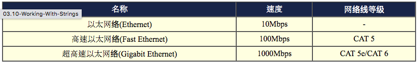
为什么每当传输速度增加时，网络线的要求就更严格呢？这是因为当传输速度增加时，线材的电磁效应相互干扰会增强， 因此在网络线的制作时就得需要特别注意线材的质料以及内部线蕊心之间的缠绕情况配置等， 以使电子流之间的电磁干扰降到最小，才能使传输速度提升到应有的 Gigabit 。
以太网络的网络线接头 (跳线/并行线)
RJ-45 接头又因为每条蕊线的对应不同而分为 568A 与 568B 接头，这两款接头内的蕊线对应如下表：
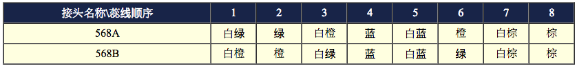
事实上，虽然目前的以太网络线有八蕊且两两成对，但实际使用的只有 1,2,3,6 蕊而已， 其他的则是某些特殊用途的场合才会使用到。但由于主机与主机的联机以及主机与集线器的联机时， 所使用的网络线脚位定义并不相同，因此由于接头的不同网络线又可分为两种：
- 跳线：一边为 568A 一边为 568B 的接头时称为跳线，用在直接链接两部主机的网络卡。
- 并行线：两边接头同为 568A 或同为 568B 时称为并行线，用在链接主机网络卡与集线器之间的线材；
2.2.3 以太网络的传输协议：CSMA/CD
整个以太网络的重心就是以太网络卡. 以太网络的传输主要就是网络卡对网络卡之间的数据传递而已。
每张以太网络卡出厂时，就会赋予一个独一无二的卡号，那就是所谓的 MAC (Media Access Control) 啦！ 理论上，网卡卡号是不能修改的，不过某些笔记本电脑的网卡卡号是能够修改的
以太网络的网卡之间数据是如何传输的呢？那就得要谈一下 IEEE 802.3 的标准 CSMA/CD (Carrier Sense Multiple Access with Collision Detection) 了！我们以下图来作为简介，下图内的中心点为集线器， 各个主机都是联机到集线器，然后透过集线器的功能向所有主机发起联机:
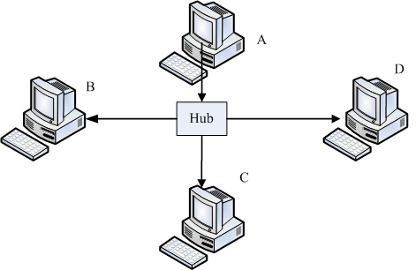
图 2.2-2、CSMA/CD联机示意图，由 A 发送资料给 D 时，注意箭头方向
集线器是一种网络共享媒体，什么是网络共享媒体啊？想象一下上述的环境就像一个十字路口，而集线器就是那个路口！ 这个路口一次只允许一辆车通过，如果两辆车同时使用这个路口，那么就会发生碰撞的车祸事件啊！那就是所谓的共享媒体。 也就是说，网络共享媒体在单一时间点内， 仅能被一部主机所使用。
以太网络的网卡之间是如何传输的呢？我们以上图中的 A 要发给 D 网卡为例好了，简单的说， CSMA/CD 搭配上述的环境，它的传输情况需要有以下的流程：
- 监听媒体使用情况 (Carrier Sense)：A 主机要发送网络封包前，需要先对网络媒体进行监听，确认没有人在使用后， 才能够发送出讯框；
- 多点传输 (Multiple Access)：A 主机所送出的数据会被集线器复制一份，然后传送给所有连接到此集线器的主机！ 也就是说， A 所送出的数据， B, C, D 三部计算机都能够接收的到！但由于目标是 D 主机，因此 B 与 C 会将此讯框数据丢弃，而 D 则会抓下来处理；
- 碰撞侦测 (Collision Detection)：该讯框数据附有检测能力，若其他主机例如 B 计算机也刚好在同时间发送讯框数据时， 那么 A 与 B 送出的数据碰撞在一块 (出车祸) ，此时这些讯框就是损毁，那么 A 与 B 就会各自随机等待一个时间， 然后重新透过第一步再传送一次该讯框数据。
了解这个程序很重要:
- 网络忙碌时，集线器灯号闪个不停，但我的主机明明没有使用网络： 透过上述的流程我们会知道，不管哪一部主机发送出讯框，所有的计算机都会接收到！因为集线器会复制一份该数据给所有计算机。 因此，虽然只有一部主机在对外联机，但是在集线器上面的所有计算机灯号就都会闪个不停！
- 我的计算机明明没有被入侵，为何我的数据会被隔壁的计算机窃取： 透过上述的流程，我们只要在 B 计算机上面安装一套监听软件，这套软件将原本要丢弃的讯框数据捉下来分析，并且加以重组， 就能够知道原本 A 所送出的讯息了。这也是为什么我们都建议重要数据在因特网上面得要『加密』后再传输！
- 既然共享媒体只有一个主机可以使用，为何大家可以同时上网： 这个问题就有趣了，既然共享媒体一次只能被一个主机所使用，那么万一我传输 100MB 的档案，集线器就得被我使用 80 秒 (以 10Mbps 传输时)，在这期间其他人都不可以使用吗？不是的，由于标准的讯框数据在网络卡与其他以太网络媒体一次只能传输 1500bytes，因此我的 100MB 档案就得要拆成多个小数据报，然后一个一个的传送，每个数据报传送前都要经过 CSMA/CD 的机制。 所以，这个集线器的使用权是大家抢着用的！即使只有一部主机在使用网络媒体时，那么这部主机在发送每个封包间， 也都是需要等待一段时间的 (96 bit time)！
- 讯框要多大比较好？能不能修改讯框？： 如上所述，那么讯框的大小能不能改变呢？因为如果讯框的容量能够增大，那么小数据报的数量就会减少， 那每个讯框传送间的等待就可以减少了！是这样没错，但是以太网络标准讯框确实定义在 1500 bytes， 但近来的超高速以太网络媒体有支持 Jumbo frame (巨型讯框,注10) 的话，那么就能够将讯框大小改为 9000bytes 哩！但不是很建议大家随便修改啦！为什么呢？2.2.5 MTU 那小节再说。
2.2.4 MAC 的封装格式
上面提到的 CSMA/CD 传送出去的讯框数据，其实就是 MAC 啦！MAC 其实就是我们上面一直讲到的讯框 (frame) 啰！ 只是这个讯框上面有两个很重要的数据，就是目标与来源的网卡卡号，因此我们又简称网卡卡号为 MAC 而已。 简单的说，你可以把 MAC 想成是一个在网络线上面传递的包裹，而这个包裹是整个网络硬件上面传送数据的最小单位了。 也就是说，网络线可想成是一条『一次仅可通过一个人』的独木桥， 而 MAC 就是在这个独木桥上面动的人
看一看 MAC 这个讯框的内容:
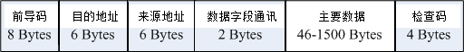
图 2.2-3、以太网络的 MAC 讯框
上图中的目的地址与来源地址指的就是网卡卡号 (hardware address, 硬件地址)，我们前面提到，每一张网卡都有一个独一无二的卡号， 那个卡号的目的就在这个讯框的表头数据使用到啦！硬件地址最小由 00:00:00:00:00:00 到 FF:FF:FF:FF:FF:FF (16 进位法)， 这 6 bytes 当中，前 3bytes 为厂商的代码，后 3bytes 则是该厂商自行设定的装置码
可以使用 ifconfig 这个指令来查阅你的网络卡卡号
Note: 在这个 MAC 的传送中，他仅在局域网络内生效，如果跨过不同的网域 (这个后面 IP 的部分时会介绍)，那么来源与目的的硬件地址就会跟着改变了。 这是因为变成不同网络卡之间的交流了嘛！所以卡号当然不同了！如下所示：
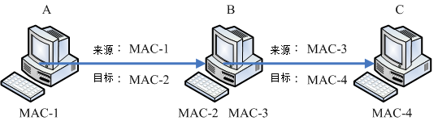
图 2.2-4、同一讯框在不同网域的主机间传送时，讯框的表头变化
数据的流通会变成：
- 先由 MAC-1 传送到 MAC-2 ，此时来源是 MAC-1 而目的地是 MAC-2；
- B 计算机接收后，察看该讯框，发现目标其实是 C 计算机，而为了与 C 计算机沟通， 所以他会将讯框内的来源 MAC 改为 MAC-3 ，而目的改为 MAC-4 ，如此就可以直接传送到 C 计算机了。
只要透过 B (就是路由器) 才将封包送到另一个网域 (IP 部分会讲) 去的时候， 那么讯框内的硬件地址就会被改变，然后才能够在同一个网域里面直接进行讯框的流通
Tip: 由于网络卡卡号是跟着网络卡走的，并不会因为重灌操作系统而改变， 所以防火墙软件大多也能够针对网络卡来进行抵挡的工作喔！ 不过抵挡网卡仅能在局域网络内进行而已，因为 MAC 不能跨 router
为什么资料量最小要 46 最大为 1500 bytes 呢？
讯框内的数据内容最大可达 1500bytes 这我们现在知道了，那为何要规范最小数据为 46bytes 呢？这是由于 CSMA/CD 机制所算出来的！ 在这个机制上面可算出若要侦测碰撞，则讯框总数据量最小得要有 64bytes ，那再扣除目的地址、来源地址、检查码 (前导码不算) 后， 就可得到数据量最小得要有 46bytes 了！也就是说，如果妳要传输的数据小于 46byes ，那我们的系统会主动的填上一些填充码， 以补齐至少 46bytes 的容量才行！
2.2.5 MTU 最大传输单位
标准以太网络讯框所能传送的数据量最大可以到达 1500 bytes ， 这个数值就被我们称为 MTU (Maximum Transmission Unit, 最大传输单位)。 你得要注意的是，每种网络接口的 MTU 都不相同，因此有的时候在某些网络文章上面你会看到 1492 bytes 的 MTU 等等。不过，在以太网络上，标准的定义就是 1500 bytes。
在待会儿会介绍到的 IP 封包中，这个 IP 封包最大可以到 65535 bytes，比 MTU 还要大呢！既然礼物 (IP) 都比盒子 (MAC) 大，那怎么可能放的进去啊？所以啰， IP 封包是可以进行拆解的，然后才能放到 MAC 当中啊！等到数据都传到目的地， 再由目的地的主机将他组装回来就是了。所以啰，如果 MTU 能够大一些的话，那么 IP 封包的拆解情况就会降低， 封包与封包传送之间的等待时间 (前一小节提到的 96 bit time) 也会减少，就能够增加网络带宽的使用
为了这个目的，所以 Gigabit 的以太网络媒体才有支持 Jumbo frame 的嘛！这个 Jumbo frame 一般都定义到 9000bytes。 那你会说，既然如此，我们的 MTU 能不能改成 9000bytes 呢？这样一来不就能够减少数据封包的拆解，以增加网络使用率吗？ 是这样没错，而且，你也确实可以在 Linux 系统上更改 MTU 的！但是，如果考虑到整个网络，那么我们不建议你修改这个数值。 为什么呢？
我们的封包总是需要在 Internet 上面跑吧？你无法确认所有的网络媒体都是支持那么大的 MTU 对吧！ 如果你的 9000 bytes 封包通过一个不支持 Jumbo frame 的网络媒体时，好一点的是该网络媒体 (例如 switch/router 等) 会主动的帮你重组而进行传送，差一点的可能就直接回报这个封包无效而丢弃了. 所以， MTU 设定为 9000 这种事情，大概仅能在内部网络的环境中作～举例来说，很多的内部丛集系统 (cluster) 就将他们的内部网络环境 MTU 设定为 9000，但是对外的适配卡可还是原本的标准 1500
也就是说，不论你的网络媒体支持 MTU 到多大，你必须要考虑到你的封包需要传到目的地时， 所需要经过的所有网络媒体，然后再来决定你的 MTU 设定才行。就因为这样，我们才不建议你修改标准以太网络的 MTU
Tip: 早期某些网络媒体 (例如 IP 分享器) 支持的是 802.2, 802.3 标准所组合成的 MAC 封装，它的 MTU 就是 1492 ， 而且这些设备可能不会进行封包重组，因此早期网络上面常常有朋友问说，他们连上某些网站时，总是会联机逾时而断线。 但透过修改客户端的 MTU 成为 1492 之后，上网就没有问题了。
2.2.6 集线器、交换器与相关机制
共不共享很重要，集线器还是交换器？ (注11)
上面提到了，当一个很忙碌的网络在运作时，集线器 (hub) 这个网络共享媒体就可能会发生碰撞的情况， 这是因为 CSMA/CD 的缘故。那有没有办法避免这种莫名其妙的封包碰撞情况呢？有的，那就使用非共享媒体的交换器即可
交换器 (switch) 等级非常多，我们这里仅探讨支持 OSI 第二层的交换器。交换器与集线器最大的差异，在于交换器内有一个特别的内存， 这个内存可以记录每个 switch port 与其连接的 PC 的 MAC 地址，所以，当来自 switch 两端的 PC 要互传数据时，每个讯框将直接透过交换器的内存数据而传送到目标主机上！ 所以 switch 不是共享媒体，且 switch 的每个埠口 (port) 都具有独立的带宽
举例来说，10/100 的 Hub 上链接 5 部主机，那么整个 10/100Mbps 是分给这五部主机的， 所以这五部主机总共只能使用 10/100Mbps 而已。那如果是 switch 呢？由于『每个 port 都具有 10/100Mbps 的带宽』， 所以就看你当时的传输行为是如何啰！举例来说，如果是底下的状况时，每个联机都是 10/100 Mbps 的。
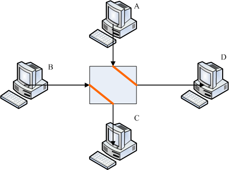
图 2.2-5、交换器每个埠口的带宽使用示意图
如果是 A 与 D 都传给 C 时，由于 C port 就仅有 10/100Mbps ，等于 A 与 D 都需要抢 C 节点的 10/100Mbps 来用的意思。 总之，你就是得要记得的是，switch 已经克服了封包碰撞的问题，因为他有个 switch port 对应 MAC 的相关功能， 所以 switch 并非共享媒体喔！同时需要记得的是，现在的 switch 规格很多， 在选购的时候，千万记得选购可以支持全双工/半双工，以及支持 Jumbo frame 的为佳！
什么是全双工/半双工(full-duplex, half-duplex)
八蕊的网络线实际上仅有两对被使用，一对是用在传送，另一对则是在接收。 如果两端的 PC 同时支持全双工时，那表示 Input/Output 均可达到 10/100Mbps， 亦即数据的传送与接收同时均可达到 10/100bps 的意思，总带宽则可达到 20/200Mbps 啰 (其实是有点语病的，因为 Input 可达 10/100Mbps， output 可达 10/100Mbps ， 而不是 Input 可直接达到 20/200Mbps 喔！)如果你的网络环境想要达到全双工时， 使用共享媒体的 Hub 是不可能的，因为网络线脚位的关系，无法使用共享媒体来达到全双工的！ 如果你的 switch 也支持全双工模式，那么在 switch 两端的 PC 才能达到全双工
自动协调速度机制 (auto-negotiation)：
现在的以太网络卡是可以向下支持的，亦即是 Gigabit 网络卡可以与早期的 10/100Mbps 网络卡链接而不会发生问题。但是，此时的网络速度是怎样判定呢？ 早期的 switch/hub 必须要手动切换速度才行，新的 hub/switch 因为有支持 auto-negotiation 又称为 N-Way 的功能，他可自动的协调出最高的传输速度来沟通喔！如果有 Gigabit 与 10/100Mbps 在 switch 上面， 则 N-Way 会先使用最高的速度 (gigabit) 测试是否能够全部支持，如果不行的话，就降速到下一个等级亦即 100 Mbps 的速度来运作的！
自动分辨网络线跳线或并行线 (Auto MDI/MDIX)：
switch 若含有auto MDI/MDIX 的功能时， 会自动分辨网络线的脚位来调整联机的，所以你就不需要管你的网络线是跳线还是并行线
讯号衰减造成的问题
电子讯号是会衰减的，所以当网络线过长导致电子讯号衰减的情况严重时， 就会导致联机质量的不良了。因此，链接各个节点的网络线长度是有限制的喔！ 不过，一般来说，现今的以太网络 CAT5 等级的网络线大概都可以支持到 100 公尺的长度
但是，造成讯号衰减的情况并非仅有网络线长度而已！如果你的网络线折得太严重(例如在门边常常被门板压，导致变形) ，或者是自行压制网络线接头，但是接头部分的八蕊蕊线缠绕度不足导致电磁干扰严重， 或者是网络线放在户外风吹日晒导致脆化的情况等等，都会导致电子讯号传递的不良而造成联机质量恶劣， 此时常常就会发现偶而可以联机、有时却又无法联机的问题了！因此，当你需要针对企业内部来架设整体的网络时， 注意结构化布线可是很重要的
结构化布线
所谓的结构化布线指的是将各个网络的组件分别拆开，分别安装与布置到企业内部， 则未来想要提升网络硬件等级或者是移动某些网络设备时，只需要更动类似配线盘的机柜处， 以及末端的墙上预留孔与主机设备的联机就能够达到目的了。例如底下的图示：
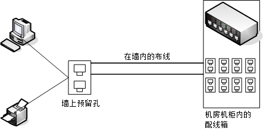
图 2.2-6、结构化布线简易图标
墙内的布线需要很注意，因为可能一布线完成后就使用 5-10 年以上喔！那你需要注意的仅有末端墙上的预留孔以及配线端部分。 事实上，光是结构化布线所需要选择的网络媒体与网络线的等级，还有机柜、机架，以及美化与隐藏网络线的材料等等的挑选， 以及实际施工所需要注意的事项，还有所有硬件、施工所需要注意的标准规范等等， 已经可以写满厚厚一本书，而鸟哥这里的文章旨在介绍一个中小企业内部主机数量较少的环境， 所以仅提到最简单的以一个或两个交换器 (swtich) 串接所有网络设备的小型星形联机状态而已。
2.3 TCP/IP 的网络层相关封包与数据
要有网络的话，必须要有网络相关的硬件，而目前最常见的网络硬件接口为以太网络，包括网络线、网络卡、Hub/Switch 等等。而以太网络上面的传输使用网络卡卡号为基准的 MAC 讯框，配合 CSMA/CD 的标准来传送讯框，这就是硬件部分。
软件部分，我们知道 Internet 其实就是 TCP/IP 这个通讯协议的通称，Internet 是由 InterNIC(注12) 所统一管理的， 但其实他仅是负责分配 Internet 上面的 IP 以及提供相关的 TCP/IP 技术文件而已。不过 Internet 最重要的就是 IP. 这个小节就让我们来讲讲网络层的 IP 与路由
2.3.1 IP 封包的封装
目前因特网社会的 IP 有两种版本，一种是目前使用最广泛的 IPv4 (Internet Protocol version 4, 因特网协定第四版)， 一种则是预期未来会热门的 IPv6 。
IPv6 的地址可以达到 128 位，可以多出 2 的 96 次方倍的网址数量，这样的 IP 数量几乎用不完
本文主要谈到的 IP 都指 IPv4 而言喔！(注13)
IP 封包可以达到 65535 bytes 这么大，在比 MAC 大的情况下，我们的操作系统会对 IP 进行拆解的动作。至于 IP 封装的表头数据绘制如下：(下图第一行为每个字段的 bit 数)
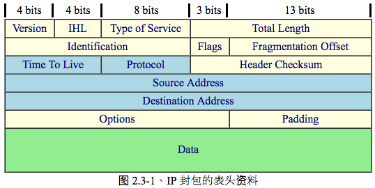
图 2.3-1、IP 封包的表头资料
每一行所占用的位数为 32 bits.
各个表头的内容分别介绍如下：
你只要知道 IP 表头里面含有： TTL, Protocol, 来源地址与目标地址也就够了！而这个 IP 表头的来源与目标 IP ，以及那个判断通过多少路由器的 TTL ，就能了解到这个 IP 将被如何传送到目的端
宣告这个 IP 封包的版本，例如目前惯用的还是 IPv4 这个版本就在这里宣告。
告知这个 IP 封包的表头长度，使用的单位应该是字组 (word) ，一个字组为 4bytes 大小喔。
这个项目的内容为『PPPDTRUU』，表示这个 IP 封包的服务类型，主要分为：
- PPP：表示此 IP 封包的优先度，目前很少使用；
- D：若为 0 表示一般延迟(delay)，若为 1 表示为低延迟；
- T：若为 0 表示为一般传输量 (throughput)，若为 1 表示为高传输量；
- R：若为 0 表示为一般可靠度(reliability)，若为 1 表示高可靠度。
- UU：保留尚未被使用。
举例来说，gigabit 以太网络的种种相关规格可以让这个 IP 封包加速且降低延迟，某些特殊的标志就是在这里说明的。
指这个 IP 封包的总容量，包括表头与内容 (Data) 部分。最大可达 65535 bytes。
IP 袋子必须要放在 MAC 袋子当中。不过，如果 IP 袋子太大的话，就得先要将 IP 再重组成较小的袋子然后再放到 MAC 当中。而当 IP 被重组时，每个来自同一个 IP 的小袋子就得要有个标识符以告知接收端这些小袋子其实是来自同一个 IP 封包才行。 也就是说，假如 IP 封包其实是 65536 那么大 (前一个 Total Length 有规定)， 那么这个 IP 就得要再被分成更小的 IP 分段后才能塞进 MAC 讯框中。那么每个小 IP 分段是否来自同一个 IP 资料，呵呵！那就是这个标识符的功用
内容为『0DM』，其意义为：
- D：若为 0 表示可以分段，若为 1 表示不可分段
- M：若为 0 表示此 IP 为最后分段，若为 1 表示非最后分段。
表示目前这个 IP 分段在原始的 IP 封包中所占的位置。就有点像是序号啦，有这个序号才能将所有的小 IP 分段组合成为原本的 IP 封包大小嘛！透过 Total Length, Identification, Flags 以及这个 Fragment Offset 就能够将小 IP 分段在收受端组合起来
表示这个 IP 封包的存活时间，范围为 0-255。当这个 IP 封包通过一个路由器时， TTL 就会减一，当 TTL 为 0 时，这个封包将会被直接丢弃。说实在的，要让 IP 封包通过 255 个路由器，还挺难的
来自传输层与网络层本身的其他数据都是放置在 IP 封包当中的，我们可以在 IP 表头记载这个 IP 封包内的资料是啥， 在这个字段就是记载每种数据封包的内容啦！在这个字段记载的代码与相关的封包协议名称如下所示：
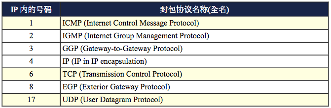
比较常见到的还是那个 TCP, UDP, ICMP
用来检查这个 IP 表头的错误检验
来源的 IP 地址，从这里我们也知道 IP 是 32 位
目标的 IP 地址。
额外的功能，提供包括安全处理机制、路由纪录、时间戳、严格与宽松之来源路由等。
由于 Options 的内容不一定有多大，但是我们知道 IP 每个数据都必须要是 32 bits，所以，若 Options 的数据不足 32 bits 时，则由 padding 主动补齐。
2.3.2 IP 地址的组成与分级：网域, IP 与门牌关连, 分级 (Class A, B, C)
IP (Internet Protocol) 其实是一种网络封包，而这个封包的表头最重要的就是那个 32 位的来源与目标地址！ 为了方便记忆，所以我们也称这个 32 bits 的数值为 IP 网络地址. 这个 IP 有哪些重要的地方需要了解的呢？
为了顺应人们对于十进制的依赖性，因此，就将 32 bits 的 IP 分成四小段，每段含有 8 个 bits ，将 8 个 bits 计算成为十进制，并且每一段中间以小数点隔开，那就成了目前大家所熟悉的 IP 的书写模样了。
IP 最小可以由 0.0.0.0 一直到 255.255.255.255 哩！但在这一串数字中，其实还可以分为两个部分喔！ 主要分为 NetID (网域号码)与 HostID (主机号码) 两部份。我们先以 192.168.0.0 ~ 192.168.0.255 这个 Class C 的网域当作例子来说明: 前面三组数字 (192.168.0) 就是网域号码，最后面一组数字则称为主机号码。
同一个网域的定义是『在同一个物理网段内，主机的 IP 具有相同的 NetID ，并且具有独特的 HostID』，那么这些 IP 群就是同一个网域内的 IP 网段
Tip: 什么是物理网段呢？当所有的主机都是使用同一个网络媒体串在一起， 这个时候这些主机在实体装置上面其实是联机在一起的，那么就可以称为这些主机在同一个物理网段内了！ 同时并请注意，同一个物理网段之内，可以依据不同的 IP 的设定，而设定成多个『IP 网段』
上面例子当中的 192.168.0.0, 192.168.0.1, 192.168.0.2, …., 192.168.0.255 (共 256 个) 这些 IP 就是同一个网域内的 IP 群(同一个网域也称为同一个网段！)，请注意，同一个 NetID 内，不能具有相同的 HostID ，否则就会发生 IP 冲突，可能会造成两部主机都没有办法使用网络的问题！
IP 在同一网域的意义
同一个网域该怎么设定，与将 IP 设定在同一个网域之内有什么好处呢？
在同一个网段内，NetID 是不变的，而 HostID 则是不可重复，此外，HostID 在二进制的表示法当中，不可同时为 0 也不可同时为 1 ，因为全为 0 表示整个网段的地址 (Network IP)，而全为 1 则表示为广播的地址 (Broadcast IP)。例如上面的例子当中，192.168.0.0 (HostID 全部为 0)以及 192.168.0.255 (HostID 全部为 1) 不可用来作为网段内主机的 IP 设定，也就是说，这个网段内可用来设定主机的 IP 是由 192.168.0.1 到 192.168.0.254；
同物理网段的主机如果设定相同的网域 IP 范围 (不可重复)，则这些主机都可以透过 CSMA/CD 的功能直接在区网内用广播进行网络的联机，亦即可以直接网卡对网卡传递数据 (透过 MAC 讯框)；
同一个物理网段之内，如果两部主机设定成不同的 IP 网段，则由于广播地址的不同，导致无法透过广播的方式来进行联机。 此时得要透过路由器 (router) 来进行沟通才能将两个网域连结在一起。[ME: 可以使用混淆模式监听物理网段上所有通信？]
当 HostID 所占用的位越大，亦即 HostID 数量越多时，表示同一个网域内可用以设定主机的 IP 数量越多。[ME: ABCDE级子网]
IP 与门牌号码的联想
IP 的分级
InterNIC 将整个 IP 网段分为五种等级， 每种等级的范围主要与 IP 那 32 bits 数值的前面几个位有关，基本定义如下：
以二进制说明 Network 第一个数字的定义：
Class A : 0xxxxxxx.xxxxxxxx.xxxxxxxx.xxxxxxxx ==> NetI_D 的开头是 0
|--net--|---------host------------|
Class B : 10xxxxxx.xxxxxxxx.xxxxxxxx.xxxxxxxx ==> NetI_D 的开头是 10
|------net-------|------host------|
Class C : 110xxxxx.xxxxxxxx.xxxxxxxx.xxxxxxxx ==> NetI_D 的开头是 110
|-----------net-----------|-host--|
Class D : 1110xxxx.xxxxxxxx.xxxxxxxx.xxxxxxxx ==> NetI_D 的开头是 1110
Class E : 1111xxxx.xxxxxxxx.xxxxxxxx.xxxxxxxx ==> NetI_D 的开头是 1111
五种分级在十进制的表示：
Class A : 0.xx.xx.xx ~ 127.xx.xx.xx
Class B : 128.xx.xx.xx ~ 191.xx.xx.xx
Class C : 192.xx.xx.xx ~ 223.xx.xx.xx
Class D : 224.xx.xx.xx ~ 239.xx.xx.xx
Class E : 240.xx.xx.xx ~ 255.xx.xx.xx
只要知道 IP 的第一个十进制数，就能够约略了解到该 IP 属于哪一个等级， 以及同网域 IP 数量有多少。这也是为啥我们上头选了 192.168.0.0 这一 IP 网段来说明时，会将巷子定义到第三个数字之故。 不过，上表中你只要记忆三种等级，亦即是 Class A, B, C 即可，因为 Class D 是用来作为群播 (multicast) 的特殊功能之用 (最常用在大批计算机的网络还原)，至于 Class E 则是保留没有使用的网段。因此，能够用来设定在一般系统上面的，就只有 Class A, B, C 三种等级的 IP
2.3.3 IP 的种类与取得方式： loopback, IP 的取得方式
IPv4 里面就只有两种 IP 的类别，分别是：
- Public IP : 公共 IP ，经由 INTERNIC 所统一规划的 IP，有这种 IP 才可以连上 Internet ；
- Private IP : 私有 IP 或保留 IP，不能直接连上 Internet 的 IP ， 主要用于局域网络内的主机联机规划。
早在 IPv4 规划的时候就担心 IP 会有不足的情况，而且为了应付某些企业内部的网络设定，于是就有了私有 IP (Private IP) 的产生了。私有 IP 也分别在 A, B, C 三个 Class 当中各保留一段作为私有 IP 网段，那就是：
- Class A：10.0.0.0 - 10.255.255.255
- Class B：172.16.0.0 - 172.31.255.255
- Class C：192.168.0.0 - 192.168.255.255
这三个 IP 网段就只做为内部私有网域的 IP 沟通之用。简单的说，他有底下的几个限制：
- 私有 IP 的路由信息不能对外散播 (只能存在内部网络)；
- 使用私有 IP 作为来源或目的地址的封包，不能透过 Internet 来转送 (不然网络会混乱)；
- 关于私有 IP 的参考纪录(如 DNS)，只能限于内部网络使用 (一样的原理啦)
这个私有 IP 有什么好处呢？由于他的私有路由不能对外直接提供信息，所以，你的内部网络将不会直接被 Internet 上面的 Cracker 所攻击！但是，你也就无法以私有 IP 来『直接上网』.
适合一些尚未具有 Public IP 的企业内部用来规划其网络之设定！否则当你随便指定一些可能是 Public IP 的网段来规划你企业内部的网络设定时，万一哪一天真的连上 Internet 了，那么岂不是可能会造成跟 Internet 上面的 Public IP 相同了吗？
万一你又要将这些私有 IP 送上 Internet 呢？这个简单，设定一个简单的防火墙加上 NAT (Network Address Transfer) 服务，你就可以透过 IP 伪装 (不要急，这个在后面也会提到) 来使你的私有 IP 的计算机也可以连上 Internet
特殊的 loopback IP 网段
还有一个奇怪的 Class A 的网域，那就是 lo 这个奇怪的网域啦 (注意：是小写的 o 而不是零喔)！这个 lo 的网络是当初被用来作为测试操作系统内部循环所用的一个网域，同时也能够提供给系统内部原本就需要使用网络接口的服务 (daemon) 所使用。
简单的说，如果你没有安装网络卡在的机器上面， 但是你又希望可以测试一下在你的机器上面设定的服务器环境到底可不可以顺利运作，这个时候怎么办? 就是利用这个所谓的内部循环网络啦！这个网段在 127.0.0.0/8 这个 Class A，而且默认的主机 (localhost) 的 IP 是 127.0.0.1. 不需要安装网络卡呢！测试很方便
此外，你的内部使用的 mail 怎么运送邮件呢？例如你的主机系统如何 mail 给 root 这个人呢？也就是使用这一个内部循环啦！当要测试你的 TCP/IP 封包与状态是否正常时，可以使用这个
IP 的取得方式
主机的 IP 是如何设定的呢？ 基本上，主机的 IP 与相关网域的设定方式主要有：
- 直接手动设定(static)： 你可以直接向你的网管询问可用的 IP 相关参数，然后直接编辑配置文件 (或使用某些软件功能) 来设定你的网络。 常见于校园网络的环境中，以及向 ISP 申请固定 IP 的联机环境；
- 透过拨接取得： 向你的 ISP 申请注册，取得账号密码后，直接拨接到 ISP ，你的 ISP 会透过他们自己的设定，让你的操作系统取得正确的网络参数。 此时你并不需要手动去编辑与设定相关的网络参数啦。目前台湾的 ADSL 拨接、光纤到大楼、光纤到府等，大部分都是使用拨接的方式。 为因应用户的需求，某些 ISP 也提供很多不同的 IP 分配机制。包括 hinet, seednet 等等都有提供 ADSL 拨接后取得固定 IP 的方式喔！ 详情请向你的 ISP 洽询。
- 自动取得网络参数 (DHCP)： 在局域网络内会有一部主机负责管理所有计算机的网络参数，你的网络启动时就会主动向该服务器要求 IP 参数， 若取得网络相关参数后，你的主机就能够自行设定好所有服务器给你的网络参数了。最常使用于企业内部、IP 分享器后端、 校园网络与宿舍环境，及缆线宽带等联机方式。
不管是使用上面哪种方式取得的 IP ，你的 IP 都只有所谓的『 Public 与 Private IP 』而已！而其他什么浮动式、固定制、 动态式等等有的没有的，就只是告诉你这个 IP 取得的方式而已。举例来说，台湾地区 ADSL 拨接后取得的 IP 通常是 public IP， 但是鸟哥曾接到香港网友的来信，他们 ADSL 拨接后，取得的 IP 是 Private ，所以导致无法架设网站
2.3.4 Netmask, 子网与 CIDR (Classless Interdomain Routing)
前面谈到 IP 是有等级的，而设定在一般计算机系统上面的则是 Class A, B, C。
此外，分为 Class 的 IP 等级，是为了管理方面的考虑，事实上，我们不可能将一个 Class A 仅划定为一个区网。
怎么将 Class A 的网段变小？换句话说， 我们如何将网域切的更细呢？这样不就可以分出更多段的区网给大家设定了？
前面我们提到 IP 这个 32 位的数值中分为网域号码与主机号码，其中 Class C 的网域号码占了 24 位，而其实我们还可以将这样的网域切的更细，就是让第一个 HostID 被拿来作为 NetID ，所以，整个 NetID 就有 25 bits ，至于 HostID 则减少为 7 bits 。在这样的情况下，原来的一个 Class C 的网域就可以被切分为两个子域，而每个子域就有『 256/2 - 2 = 126 』个可用的 IP 了！这样一来，就能够将原本的一个网域切为两个较细小的网域，方便分门别类的设计
Netmask, 或称为 Subnet mask (子网掩码)
到底是什么参数来达成子网的切分呢？那就是 Netmask (子网掩码) 的用途
Netmask 是用来定义出网域的最重要的一个参数
为了帮助大家比较容易记忆住 Netmask 的设定依据，底下我们介绍一个比较容易记忆的方法。同样以 192.168.0.0 ~ 192.168.0.255 这个网域为范例好了，如下所示，这个 IP 网段可以分为 NetID 与 HostID，既然 NetID 是不可变的，那就假设他所占据的 bits 已经被用光了 (全部为 1)，而 HostID 是可变的，就将他想成是保留着 (全部为 0)，所以， Netmask 的表示就成为：
192.168.0.0~192.168.0.255 这个 C Class 的 Netmask 说明
第一个 IP： 11000000.10101000.00000000.00000000
最后一个 ： 11000000.10101000.00000000.11111111
|----------Net_ID---------|-host--|
Netmask ： 11111111.11111111.11111111.00000000 <== Netmask 二进制
： 255 . 255 . 255 . 0 <== Netmask 十进制
特别注意喔，netmask 也是 32 位，在数值上，位于 Net_ID 的为 1 而 Host_ID 为 0
照这样的记忆方法，那么 A, B, C Class 的 Netmask 表示就成为这样：
Class A, B, C 三个等级的 Netmask 表示方式： Class A : 11111111.00000000.00000000.00000000 ==> 255. 0. 0. 0 Class B : 11111111.11111111.00000000.00000000 ==> 255.255. 0. 0 Class C : 11111111.11111111.11111111.00000000 ==> 255.255.255. 0
刚刚提到了当 HostID 全部为 0 以及全部为 1 的时后该 IP 是不可以使用的，因为 HostID 全部为 0 的时后，表示 IP 是该网段的 Network ，至于全部为 1 的时后就表示该网段最后一个 IP ，也称为 Broadcast ，所以说，在 192.168.0.0 ~ 192.168.0.255 这个 IP 网段里面的相关网络参数就有：
Netmask: 255.255.255.0 <==网域定义中，最重要的参数 Network: 192.168.0.0 <==第一个 IP Broadcast: 192.168.0.255 <==最后一个 IP 可用以设定成为主机的 IP 数： 192.168.0.1 ~ 192.168.0.254
子网切分
Class C 还可以继续进行子域 (Subnet) 的切分啊，以 192.168.0.0 ~192.168.0.255 这个情况为例，他要如何再细分为两个子域呢？我们已经知道 HostID 可以拿来当作 NetID，那么 NetID 使用了 25 bits 时，就会如下所示：
原本的 C Class 的 Net_ID 与 Host_ID 的分别
11000000.10101000.00000000.00000000 Network: 192.168.0.0
11000000.10101000.00000000.11111111 Broadcast: 192.168.0.255
|----------Net_ID---------|-host--|
切成两个子网之后的 Net_ID 与 Host_ID 为何？
11000000.10101000.00000000.0 0000000 多了一个 Net_ID 了, 为 0 (第一个子网)
11000000.10101000.00000000.1 0000000 多了一个 Net_ID 了, 为 1 (第二个子网)
|----------Net_ID-----------|-host--|
第一个子网
Network: 11000000.10101000.00000000.0 0000000 192.168.0.0
Broadcast: 11000000.10101000.00000000.0 1111111 192.168.0.127
|----------Net_ID-----------|-host-|
Netmask: 11111111.11111111.11111111.1 0000000 255.255.255.128
第二个子网
Network: 11000000.10101000.00000000.1 0000000 192.168.0.128
Broadcast: 11000000.10101000.00000000.1 1111111 192.168.0.255
|----------Net_ID-----------|-host-|
Netmask: 11111111.11111111.11111111.1 0000000 255.255.255.128
再细分下去时，就会得到两个子域，而两个子域还可以再细分下去喔 (NetID 用掉 26 bits ….)。呵呵！如果你真的能够理解 IP, Network, Broadcast, Netmask 的话，恭喜你，未来的服务器学习之路已经顺畅了一半啦！
例题： 试着计算出 172.16.0.0，但 NetID 占用 23 个位时，这个网域的 Netmask, Network, Broadcast 等参数
答： 由于 172.16.xxx.xxx 是在 Class B 的等级当中，亦即 NetID 是 16 位才对。不过题目给的 NetID 占用了 23 个位喔！ 等于是向 HostID 借了 (23-16) 7 个位用在 NetID 当中。所以整个 IP 的地址会变成这样：
预设： 172 . 16 .0000000 0.00000000
|----Net_ID--------------|--Host---|
Network: 172 . 16 .0000000 0.00000000 172.16.0.0
Broadcast: 172 . 16 .0000000 1.11111111 172.16.1.255
Netmask: 11111111.11111111.1111111 0.00000000 255.255.254.0
鸟哥在这里有偷懒，因为这个 IP 段的前 16 个位不会被改变，所以并没有计算成二进制 (172.16)
子网的计算是有偷吃步的，我们知道 IP 是二进制，每个位就是 2 的次方。又由于 IP 数量都是平均分配到每个子网去， 所以，如果我们以 192.168.0.0 ~ 192.168.0.255 这个网段来说，要是给予 NetID 是 26 位时，总共分为几段呢？ 因为 26-24=2 ，所以总共用掉两个位，因此有 2 的 2 次方，得到 4 个网段。再将 256 个 IP 平均分配到 4 个网段去， 那我们就可以知道这四个网段分别是：
- 192.168.0.0~192.168.0.63
- 192.168.0.64~192.168.0.127
- 192.168.0.128~192.168.0.191
- 192.168.0.192~192.168.0.255
无层级 IP： CIDR (Classless Interdomain Routing)
一般来说，如果我们知道了 Network 以及 Netmask 之后，就可以定义出该网域的所有 IP 了！因为由 Netmask 就可以推算出来 Broadcast 的 IP 啊！因此，我们常常会以 Network 以及 Netmask 来表示一个网域，例如这样的写法：
Network/Netmask 192.168.0.0/255.255.255.0 192.168.0.0/24 <==因为 Net_ID 共有 24 个 bits
在上述的偷吃步计算网域方法中，四个网段的写法就可以写成：
- 192.168.0.0/26
- 192.168.0.64/26
- 192.168.0.128/26
- 192.168.0.192/26
事实上，由于网络细分的情况太严重，为了担心路由信息过于庞大导致网络效能不佳，因此，某些特殊情况下， 我们反而是将 NetID 借用来作为 HostID 的情况！这样就能够将多个网域写成一个啦！举例来说，我们将 256 个 Class C 的私有 IP (192.168.0.0~192.168.255.255) 写成一个路由信息的话，那么这个网段的写法就会变成： 192.168.0.0/16，反而将 192 开头的 Class C 变成 class B 的样子了！ 这种打破原本 IP 代表等级的方式 (透过 Netmask 的规范) 就被称为无等级网域间路由 (CIDR) 啰！ (注14)
老实说，你无须理会啥是无等级网域间路由啦！只要知道，那个 Network/Netmask 的写法，通常就是 CIDR 的写法！ 然后，你也要知道如何透过 Netmask 去计算出 Network, Broadcast 及可用的 IP 等，那你的 IP 概念就相当完整了！
2.3.5 路由概念
同一个区网里面，可以透过 IP 广播的方式来达到资料传递的目的。但如果是非区网内的数据呢？ 这时就得要透过那个所谓的邮局 (路由器) 的帮忙了！这也是网络层非常重要的概念. 先来看看什么是区网.
例题： 请问 192.168.10.100/25 与 192.168.10.200/25 是否在同一个网域内？
答： 如果经过计算，会发现 192.168.10.100 的 Network 为 192.168.10.0 ，但是 192.168.10.200 的 Network 却是 192.168.10.128，由于 NetID 不相同，所以当然不在同一个网段内！ 关于 Network 与 Netmask 的算法则请参考上一小节。
如上题所述，那么这两个网段的数据无法透过广播来达到数据的传递啊，那怎办？ 此时就得要经过 IP 的路径选择 (routing) 功能啦！我们以下面图示的例子来做说明。 下列图示当中共有两个不同的网段，分别是 Network A 与 Network B，这两个网段是经由一部路由器 (Server A) 来进行数据转递的，好了，那么当 PC01 这部主机想要传送数据到 PC11 时， 他的 IP 封包该如何传输呢？
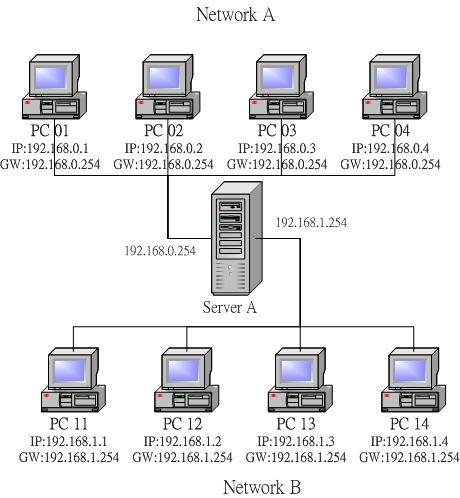
图 2.3-2、简易的路由示意图
我们知道 Network A(192.168.0.0/24) 与 Network B(192.168.1.0/24) 是不同网段，所以 PC01 与 PC11 是不能直接互通数据的。不过， PC01 与 PC11 是如何知道他们两个不在同一个网段内？这当然是透过 NetID 来发现的！那么当主机想要传送数据时，他主要的参考是啥？ 很简单！是『路由表 (route table)』，每部主机都有自己的路由表』， 让我们来看一看预设的情况下， PC01 要如何将数据传送到 PC02 呢？
- 查询 IP 封包的目标 IP 地址： 当 PC01 有 IP 封包需要传送时，主机会查阅 IP 封包表头的目标 IP 地址；
- 查询是否位于本机所在的网域之路由设定： PC01 主机会分析自己的路由表，当发现目标 IP 与本机 IP 的 NetID 相同时(同一网域)，则 PC01 会直接透过区网功能，将数据直接传送给目的地主机。
- 查询预设路由 (default gateway)： 但在本案例中， PC01 与 PC11 并非同一网域，因此 PC01 会分析路由表当中是否有其他相符合的路由设定， 如果没有的话，就直接将该 IP 封包送到预设路由器 (default gateway) 上头去，在本案例当中 default gateway 则是 Server A 这一部。
- 送出封包至 gateway 后，不理会封包流向： 当 IP 由 PC01 送给 Server A 之后， PC01 就不理会接下来的工作。而 Server A 接收到这个封包后， 会依据上述的流程，也分析自己的路由信息，然后向后继续传输到正确的目的地主机上头。
Tip: Gateway / Router ：网关/路由器的功能就是在负责不同网域之间的封包转递 (IP Forwarding)，由于路由器具有 IP Forwarding 的功能，并且具有管理路由的能力， 所以可以将来自不同网域之间的封包进行转递的功能。此外，你的主机与你主机设定的 Gateway 必定是在同一个网段内
每一部主机里面都会存在着一个路由表 (Route table)，数据的传递将依据这个路由表进行传送！而一旦封包已经经由路由表的规则传送出去后， 那么主机本身就已经不再管封包的流向了，因为该封包的流向将是下一个主机 (也就是那部 Router) 来进行传送，而 Router 在传送时，也是依据 Router 自己的路由表来判断该封包应该经由哪里传送出去的！整体来说，数据传送有点像这样：
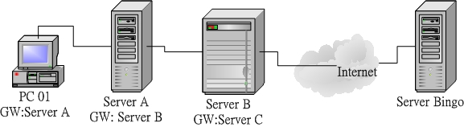
图 2.3-3、路由的概念
PC 01 要将资料送到 Server Bingo 去，则依据自己的路由表，将该封包送到 Server A 去，Server A 再继续送到 Server B ，然后在一个一个的接力给他送下去，最后总是可以到达 Server Bingo 的。
事实上， Internet 上面的路由协议与变化是相当复杂的，因为 Internet 上面的路由并不是静态的，他可以随时因为环境的变化而修订每个封包的传送方向。
在属于 Public 的 Internet 环境中，由于最早时的 IP 分配都已经配置妥当， 所以各单位的路由一经设定妥当后，上层的路由则无须担心啊！IP 的分配可以参考底下的网页：
2.3.6 观察主机路由： route
路由一旦设定错误， 将会造成某些封包完全无法正确的送出去！
当然需要好好的来观察一下我们主机的路由表啦！还是请再注意一下， 每一部主机都有自己的路由表喔！观察路由表的指令很简单，就是 route ，这个指令挺难的，我们在后面章节再继续的介绍，这里仅说明一些比较简单的用法：
[root@www ~]# route [-n] 选项与参数： -n ： 将主机名以 IP 的方式显示 [root@www ~]# route Kernel IP routing table Destination Gateway Genmask Flags Metric Ref Use Iface 192.168.0.0 * 255.255.255.0 U 0 0 0 eth0 127.0.0.0 * 255.0.0.0 U 0 0 0 lo default 192.168.0.254 0.0.0.0 UG 0 0 0 eth0 [root@www ~]# route -n Kernel IP routing table Destination Gateway Genmask Flags Metric Ref Use Iface 192.168.0.0 0.0.0.0 255.255.255.0 U 0 0 0 eth0 127.0.0.0 0.0.0.0 255.0.0.0 U 0 0 0 lo 0.0.0.0 192.168.0.254 0.0.0.0 UG 0 0 0 eth0 # 上面输出的数据共有八个字段，你需要注意的有几个地方： # Destination ：其实就是 Network 的意思； # Gateway ：就是该接口的 Gateway 那个 IP 啦！若为 0.0.0.0 表示不需要额外的 IP； # Genmask ：就是 Netmask 啦！与 Destination 组合成为一部主机或网域； # Flags ：共有多个旗标可以来表示该网域或主机代表的意义： # U：代表该路由可用； # G：代表该网域需要经由 Gateway 来帮忙转递； # H：代表该行路由为一部主机，而非一整个网域； # Iface ：就是 Interface (接口) 的意思。
上面的例子当中，鸟哥是以 PC 01 这部主机的路由状态来进行说明。由于 PC 01 为 192.168.0.0/24 这个网域，所以主机已经建立了这个网域的路由了，那就是『 192.168.0.0 * 255.255.255.0 … 』那一行所显示的讯息！
下达 route 时， 屏幕上说明了这部机器上面共有三个路由规则，第一栏为『目的地的网域』，例如 192.168.0.0 就是一个网域咯，最后一栏显示的是 『要去到这个目的地要使用哪一个网络接口！』例如 eth0 就是网络卡的装置代号啦。如果我们要传送的封包在路由规则里面的 192.168.0.0/255.255.255.0 或者 127.0.0.0/255.0.0.0 里面时，因为第二栏 Gateway 为 * ，所以就会直接以后面的网络接口来传送出去，而不透过 Gateway
万一我们要传送的封包目的地 IP 不在路由规则里面，那么就会将封包传送到『default』所在的那个路由规则去，也就是 192.168.0.254 那个 Gateway 喔！所以，几乎每一部主机都会有一个 default gateway 来帮他们负责所有非网域内的封包转递！这是很重要的概念
更多的路由功能与设定方法，我们在第八章当中会再次的提及
2.3.7 IP 与 MAC：链结层的 ARP 与 RARP 协定：arp
事实上用在传递数据的明明就是以太网络啊！以太网络主要是用网卡卡号 (MAC) 的嘛！这就有问题啦！那这两者 (IP 与 MAC) 势必有一个关连性存在吧？没错！那就是我们要谈到的 ARP (Address Resolution Protocol, 网络地址解析) 协议，以及 RARP (Revers ARP, 反向网络地址解析)
当我们想要了解某个 IP 其实是设定于某张以太网络卡上头时，我们的主机会对整个区网发送出 ARP 封包， 对方收到 ARP 封包后就会回传他的 MAC 给我们，我们的主机就会知道对方所在的网卡，那接下来就能够开始传递数据啰。 如果每次要传送都得要重新来一遍这个 ARP 协定那不是很烦？因此，当使用 ARP 协议取得目标 IP 与他网卡卡号后， 就会将该笔记录写入我们主机的 ARP table 中 (内存内的数据) 记录 20 分钟 (注14)。
例题： 如何取得自己本机的网卡卡号 (MAC)
答：
在 Linux 环境下
[root@www ~]# ifconfig eth0
eth0 Link encap:Ethernet HWaddr 00:01:03:43:E5:34
inet addr:192.168.1.100 Bcast:192.168.1.255 Mask:255.255.255.0
inet6 addr: fe80::201:3ff:fe43:e534/64 Scope:Link
UP BROADCAST RUNNING MULTICAST MTU:1500 Metric:1
.....
在 Windows 环境下
C:\Documents and Settings\admin..> ipconfig /all
....
Physical Address. . . . . . . . . : 00-01-03-43-E5-34
....
如何取得本机的 ARP 表格内的 IP/MAC 对应数据呢？就透过 arp 这个指令:
[root@www ~]# arp -[nd] hostname [root@www ~]# arp -s hostname(IP) Hardware_address 选项与参数： -n ：将主机名以 IP 的型态显示 -d ：将 hostname 的 hardware_address 由 ARP table 当中删除掉 -s ：设定某个 IP 或 hostname 的 MAC 到 ARP table 当中 范例一：列出目前主机上面记载的 IP/MAC 对应的 ARP 表格 [root@www ~]# arp -n Address HWtype HWaddress Flags Mask Iface 192.168.1.100 ether 00:01:03:01:02:03 C eth0 192.168.1.240 ether 00:01:03:01:DE:0A C eth0 192.168.1.254 ether 00:01:03:55:74:AB C eth0 范例二：将 192.168.1.100 那部主机的网卡卡号直接写入 ARP 表格中 [root@www ~]# arp -s 192.168.1.100 01:00:2D:23:A1:0E # 这个指令的目的在建立静态 ARP
当你发送 ARP 封包取得的 IP/MAC 对应，这个记录的 ARP table 是动态的信息 (一般保留 20 分钟)，他会随时随着你的网域里面计算机的 IP 更动而变化，所以，即使你常常更动你的计算机 IP，不要担心，因为 ARP table 会自动的重新对应 IP 与 MAC 的表格内容！但如果你有特殊需求的话， 也可以利用『 arp -s 』这个选项来定义静态的 ARP 对应
2.3.8 ICMP 协定
Internet Control Message Protocol, 因特网讯息控制协议
基本上，ICMP 是一个错误侦测与回报的机制，最大的功能就是可以确保我们网络的联机状态与联机的正确性！ ICMP 也是网络层的重要封包之一，不过，这个封包并非独立存在，而是纳入到 IP 的封包中！也就是说， ICMP 同样是透过 IP 封包来进行数据传送的啦！因为在 Internet 上面有传输能力的就是 IP 封包
ICMP 有相当多的类别可以侦测与回报，底下是比较常见的几个 ICMP 的类别 (Type)：
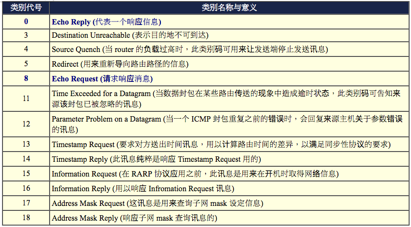
如何利用 ICMP 来检验网络的状态呢？最简单的指令就是 ping 与 traceroute 了， 这两个指令可以透过 ICMP 封包的辅助来确认与回报网络主机的状态。在设定防火墙的时候， 我们最容易忽略的就是这个 ICMP 的封包了，因为只会记住 TCP/UDP 而已～事实上， ICMP 封包可以帮助联机的状态回报，除了上述的 8 可以考虑关闭之外，基本上，ICMP 封包也不应该全部都挡掉
2.4 TCP/IP 的传输层相关封包与数据
网络层的 IP 封包只负责将数据送到正确的目标主机去，但这个封包到底会不会被接受，或者是有没有被正确的接收， 那就不是 IP 的任务啦！那是传送层的任务之一。从 图 2.1-4 我们可以看到传送层有两个重点， 一个是连接导向的 TCP 封包，一个是非连接导向的 UDP 封包，这两个封包很重要啊！数据能不能正确的被送达目的， 与这两个封包有关
2.4.1 可靠联机的 TCP 协议：通讯端口, 特权埠口 (Privileged Ports), Socket Pair
OSI 七层协议当中，在网络层的 IP 之上则是传送层，而传送层的数据打包成什么？ 最常见的就是 TCP 封包了。这个 TCP 封包数据必须要能够放到 IP 的数据袋当中才行喔！ 所以，我们将图 2.1-4 简化一下，将 MAC, IP 与 TCP 的封包数据这样看：
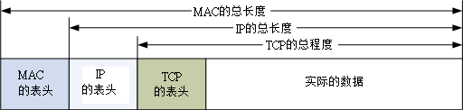
图 2.4-1、各封包之间的相关性
TCP 也有表头数据来记录该封包的相关信息:
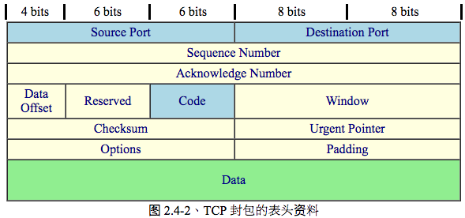
TCP 封包的表头数据
Source Port, Destination Port 及 Code 算是比较重要的项目
IP 封包的传送主要是藉由 IP 地址连接两端， 但是到底这个联机的通道是连接到哪里去呢？没错！就是连接到 port 上头. 举例来说，鸟哥的网站有开放 WWW 服务器，这表示鸟站的主机必须要启动一个可以让 client 端连接的端口，这个端口就是 port (中文翻译成为埠口)。同样的，客户端想要连接到鸟哥的鸟站时，就必须要在 client 主机上面启动一个 port ，这样这两个主机才能够利用这条『通道』来传递封包数据喔！这个目标与来源 port 的纪录，可以说是 TCP 封包上最重要的参数了！
由于 TCP 封包必须要带入 IP 封包当中，所以如果 TCP 数据太大时(大于 IP 封包的容许程度)， 就得要进行分段。这个 Sequence Number 就是记录每个封包的序号，可以让收受端重新将 TCP 的数据组合起来。
为了确认主机端确实有收到我们 client 端所送出的封包数据，我们 client 端当然希望能够收到主机方面的响应，那就是这个 Acknowledge Number 的用途了。 当 client 端收到这个确认码时，就能够确定之前传递的封包已经被正确的收下了。
Options 的字段长度是非固定的，而为了要确认整个 TCP 封包的大小，就需要这个标志来说明整个封包区段的起始位置。
未使用的保留字段。
网络联机的时候，必须要说明这个联机的状态，好让接收端了解这个封包的主要动作。 这可是一个非常重要的句柄喔！这个字段共有 6 个 bits ，分别代表 6 个句柄，若为 1 则为启动。分别说明如下：
- URG(Urgent)：若为 1 则代表该封包为紧急封包， 接收端应该要紧急处理，且图 2.4-1 当中的 Urgent Pointer 字段也会被启用。
- ACK(Acknowledge)：若为 1 代表这个封包为响应封包， 则与上面提到的 Acknowledge Number 有关。
- PSH(Push function)：若为 1 时，代表要求对方立即传送缓冲区内的其他对应封包，而无须等待缓冲区满了才送。
- RST(Reset)：如果 RST 为 1 的时候，表示联机会被马上结束，而无需等待终止确认手续。这也就是说， 这是个强制结束的联机，且发送端已断线。
- SYN(Synchronous)：若为 1，表示发送端希望双方建立同步处理， 也就是要求建立联机。通常带有 SYN 标志的封包表示『主动』要连接到对方的意思。
- FIN(Finish)：若为 1 ，表示传送结束，所以通知对方数据传毕， 是否同意断线，只是发送者还在等待对方的响应而已。
每个项目都很重要，这里仅对 ACK/SYN 有兴趣而已，这样未来在谈到防火墙的时候，你才会比较清楚为啥每个 TCP 封包都有所谓的『状态』条件！那就是因为联机方向的不同所致啊！底下我们会进一步讨论喔！ 至于其他的数据，就得请您自行查询网络相关书籍了！
控制封包的流量的，可以告知对方目前本身有的缓冲器容量(Receive Buffer) 还可以接收封包。当 Window=0 时，代表缓冲器已经额满，所以应该要暂停传输数据。 Window 的单位是 byte。
当数据要由发送端送出前，会进行一个检验的动作，并将该动作的检验值标注在这个字段上； 而接收者收到这个封包之后，会再次的对封包进行验证，并且比对原发送的 Checksum 值是否相符，如果相符就接受，若不符就会假设该封包已经损毁，进而要求对方重新发送此封包！
在 Code 字段内的 URG = 1 时才会产生作用。可以告知紧急数据所在的位置。
用于表示接收端可以接收的最大数据区段容量，若此字段不使用， 表示可以使用任意资料区段的大小。这个字段较少使用。
如同 IP 封包需要有固定的 32bits 表头一样， Options 由于字段为非固定， 所以也需要 Padding 字段来加以补齐才行。同样也是 32 bits 的整数。
通讯端口
TCP 表头数据中，最重要的就属那 16 位的两个咚咚，亦即来源与目标的端口。由于是 16 位，因此目标与来源端口最大可达 65535 号 (2 的 16 次方)！
这个埠口有什么用途呢？上面稍微提到过，网络是双向的，服务器与客户端要达成联机的话， 两边应该要有一个对应的埠口来达成联机信道，好让数据可以透过这个信道来进行沟通。
这个埠口怎么打开呢？就是透过程序的执行！
假如 IP 是网络世界的门牌，那么这个埠口就是那个门牌号码上建筑物的楼层！ 每个建筑物都有 1~65535 层楼，你需要什么网络服务，就得要去该对应的楼层取得正确的资料。但那个楼层里面有没有人在服务你呢？ 这就得要看有没有程序真的在执行啦。所以，IP 是门牌，TCP 是楼层，真正提供服务的， 是在该楼层的那个人 (程序)！
一部主机上面这么多服务，那我们跟这部主机进行联机时，该主机怎么知道我们要的数据是 WWW 还是 FTP 啊？就是透过埠口啊！因为每种 Client 软件他们所需要的数据都不相同.
特权埠口 (Privileged Ports)
网络既然是双向的，一定有一个发起端。也就是说，哪支程序应该在哪个端口执行，以让大家都知道该埠口就是提供哪个服务. Internet 上面已经有很多规范好的固定 port (well-known port)， 这些 port number 通常小于 1024 ，且是提供给许多知名的网络服务软件用的。 在我们的 Linux 环境下，各网络服务与 port number 的对应默认给他写在 /etc/services 档案内喔！ 底下鸟哥列出几个常见的 port number 与网络服务的对应：
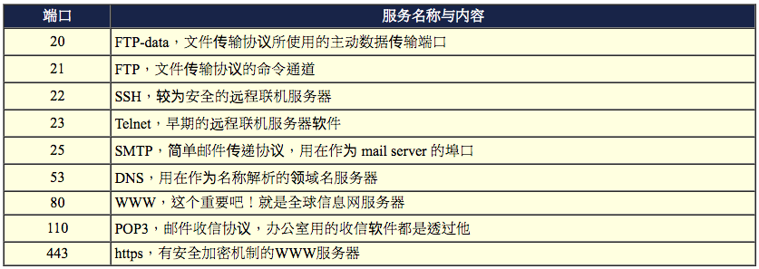
值得注意的是，小于 1024 以下的埠口要启动时， 启动者的身份必须要是 root 才行，所以才叫做特权埠口嘛！ 如果是 client 端的话，由于 client 端都是主动向 server 端要数据， 所以 client 端的 port number 就使用随机取一个大于 1024 以上且没有在用的 port number。
Socket Pair
由于网络是双向的，要达成联机的话得要服务器与客户端均提供了 IP 与埠口才行。 因此，我们常常将这个成对的数据称之为 Socket Pair 了！
- 来源 IP + 来源埠口 (Source Address + Source Port)
- 目的 IP + 目的埠口 (Destination Address + Destination Port)
由于 IP 与埠口常常连在一起说明，因此网络寻址常常使用『 IP:port 』来说明
2.4.2 TCP 的三向交握
TCP 被称为可靠的联机封包，主要是透过许多机制来达成的，其中最重要的就是三向交握的功能。
如何藉由 TCP 的表头来确认这个封包有实际被对方接收，并进一步与对方主机达成联机？ 我们以底下的图示来作为说明。
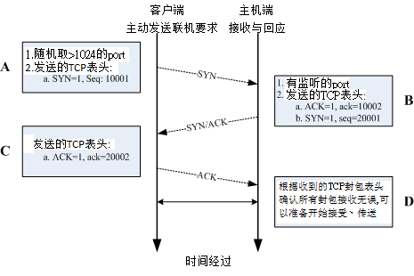
图 2.4-3、三向交握之封包连接模式
在上面的封包连接模式当中，在建立联机之前都必须要通过三个确认的动作， 所以这种联机方式也就被称为三向交握(Three-way handshake)。 那么我们将整个流程依据上面的 A, B, C, D 四个阶段来说明一下：
Three-way handshake
必须要了解『网络是双向的』这个事实！ 所以不论是服务器端还是客户端，都必须要透过一次 SYN 与 ACK 来建立联机，所以总共会进行三次的交谈！ 在设定防火墙或者是追踪网络联机的问题时，这个『双向』的概念最容易被忽略， 而常常导致无法联机成功的问题啊！切记切记！
当客户端想要对服务器端联机时，就必须要送出一个要求联机的封包，此时客户端必须随机取用一个大于 1024 以上的端口来做为程序沟通的接口。然后在 TCP 的表头当中，必须要带有 SYN 的主动联机(SYN=1)，并且记下发送出联机封包给服务器端的序号 (Sequence number = 10001) 。
当服务器接到这个封包，并且确定要接收这个封包后，就会开始制作一个同时带有 SYN=1, ACK=1 的封包， 其中那个 acknowledge 的号码是要给 client 端确认用的，所以该数字会比(A 步骤)里面的 Sequence 号码多一号 (ack = 10001+1 = 10002)， 那我们服务器也必须要确认客户端确实可以接收我们的封包才行，所以也会发送出一个 Sequence (seq=20001) 给客户端，并且开始等待客户端给我们服务器端的回应
当客户端收到来自服务器端的 ACK 数字后 (10002) 就能够确认之前那个要求封包被正确的收受了， 接下来如果客户端也同意与服务器端建立联机时，就会再次的发送一个确认封包 (ACK=1) 给服务器，亦即是 acknowledge = 20001+1 = 20002
若一切都顺利，在服务器端收到带有 ACK=1 且 ack=20002 序号的封包后，就能够建立起这次的联机了。
2.4.3 非连接导向的 UDP 协议
User Datagram Protocol, 用户数据流协议
UDP 与 TCP 不一样， UDP 不提供可靠的传输模式，因为他不是面向连接的一个机制，这是因为在 UDP 的传送过程中，接受端在接受到封包之后，不会回复响应封包 (ACK) 给发送端，所以封包并没有像 TCP 封包有较为严密的检查机制。至于 UDP 的表头资料如下表所示：
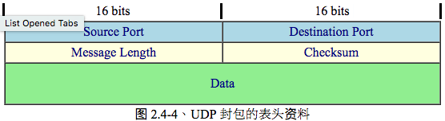
图 2.4-4、UDP 封包的表头资料
TCP 封包确实是比较可靠的，因为通过三向交握嘛！不过，也由于三向交握的缘故， TCP 封包的传输速度会较慢。 至于 UDP 封包由于不需要确认对方是否有正确的收到数据，故表头数据较少，所以 UDP 就可以在 Data 处填入更多的资料了。同时 UDP 比较适合需要实时反应的一些数据流，例如影像实时传送软件等， 就可以使用这类的封包传送。也就是说， UDP 传输协议并不考虑联机要求、联机终止与流量控制等特性， 所以使用的时机是当数据的正确性不很重要的情况，例如网络摄影机！
很多的软件其实是同时提供 TCP 与 UDP 的传输协议的，举例来说，查询主机名的 DNS 服务就同时提供了 UDP/TCP 协议。由于 UDP 较为快速，所以我们 client 端可以先使用 UDP 来与服务器联机。 但是当使用 UDP 联机却还是无法取得正确的数据时，便转换为较为可靠的 TCP 传输协议来进行数据的传输啰。 这样可以同时兼顾快速与可靠的传输
2.4.4 网络防火墙与 OSI 七层协议
数据的传送其实就是封包的发出与接受的动作啦！并且不同的封包上面都有不一样的表头 (header)，此外，封包上面通常都会具有四个基本的信息，那就是 socket pair 里面提到的『来源与目的 IP 以及来源与目的端的 port number』 。当然啦，如果是可靠性联机的 TCP 封包，还包含 Control Flag 里面的 SYN/ACK 等等重要的信息呢！好了，开始动一动脑筋，有没有想到『网络防火墙』?
封包过滤式的网络防火墙可以抵挡掉一些可能有问题的封包.
Linux 系统上面是怎么挡掉封包的呢？既然封包的表头上面已经有这么多的重要信息， 那么我就利用一些防火墙机制与软件来进行封包表头的分析，并且设定分析的规则，当发现某些特定的 IP 、特定的埠口或者是特定的封包信息(SYN/ACK等等)，那么就将该封包给他丢弃， 那就是最基本的防火墙原理了！
举例来说，大家都知道 Telnet 这个服务器是挺危险的，而 Telnet 使用的 port number 为 23 ，所以，当我们使用软件去分析要送进我们主机的封包时， 只要发现该封包的目的地是我们主机的 port 23 ，就将该封包丢掉去！那就是最基本的防火墙案例
以 OSI 七层协议来说，每一层可以抵挡的数据有：
- 第二层：可以针对来源与目标的 MAC 进行抵挡；
- 第三层：主要针对来源与目标的 IP ，以及 ICMP 的类别 (type) 进行抵挡；
- 第四层：针对 TCP/UDP 的埠口进行抵挡，也可以针对 TCP 的状态 (code) 来处理。[ME: code?]
更多的防火墙信息我们会在第九章防火墙与第七章认识网络安全当中进行更多的说明
2.5 连上 Internet 前的准备事项
我们最需要的仅是『连接上 Internet 』啦！那么在 Internet 上面其实使用的是 TCP/IP 这个通讯协议，所以我们就需要 Public IP 来连接上 Internet.
2.5.1 用 IP 上网？主机名上网？DNS 系统？
计算机都有主机名嘛！ 那么我就将主机名与他的 IP 对应起来，未来要连接上该计算机时，只要知道该计算机的主机名就好了，因为 IP 已经对应到主机名了嘛！所以人类也容易记忆文字类的主机名，计算机也可以藉由对应来找到他必须要知道的 IP -> 主机名 (Hostname) 对应 IP 的系统，就是鼎鼎有名的 Domain Name System (DNS)
NS 这个服务的最大功能就是在进行『主机名与该主机的 IP 的对应』的一项协议。 DNS 在网络环境当中是相当常被使用到的一项协议
在 Linux 里面，DNS 主机 IP 的设定就是在 /etc/resolv.conf 这个档案里面
目前各大 ISP 都有提供他们的 DNS 服务器的 IP 给他们的用户，好设定客户自己计算机的 DNS 查询主机
DNS 是很重要的，他的原理也顶复杂的，更详细的原理我们在第十九章 DNS 服务器里面进行更多更详细的说明
2.5.2 一组可以连上 Internet 的必要网络参数
一部主机要能够使用网络，必须要有 IP ，而 IP 的设定当中，就必须要有 IP, Network, Broadcast, Netmask 等参数，此外，还需要考虑到路由里面的 Default Gateway 才能够正确的将非同网域的封包给他传送出去。 另外，考虑到主机名与 IP 的对应，所以你还必须要给予系统一个 DNS 服务器的 IP 才行
一组合理的网络设定需要哪些数据呢？
- IP
- Netmask
- Network
- Broadcast
- Gateway
- DNS
其中，由于 Network 与 Broadcast 可以经由 IP/Netmask 的计算而得到，因此需要设定于你 PC 端的网络参数， 主要就是 IP, Netmask, Default Gateway, DNS 这四个
如果你是使用 ADSL 拨接来上网的话，上面这些数据都是由 ISP 直接给你的，那你只要使用拨接程序进行拨接到 ISP 的工作之后， 这些数据就自动的在你的主机上面设定完成了！但是如果是固定制 (如学术网络) 的话，那么就得自行使用上面的参数来设定你的主机啰！缺一不可
2.6 重点回顾
- 虽然目前的网络媒体多以以太网络为标准，但网络媒体不只有以太网络而已；
- Internet 主要是由 Internet Network Information Center (INTERNIC) 所维护；
- 以太网络的 RJ-45 网络线，由于 568A/568B 接头的不同而又分为并行线与跳线；
- 以太网络上最重要的传输数据为 Carrier Sense Multiple Access with Collision Detect (CSMA/CD) 技术， 至于传输过程当中，最重要的 MAC 讯框内以硬件地址 (hardware address) 数据最为重要；
- 透过八蕊的网络线 (Cat 5 以上等级)，现在的以太网络可以支持全双工模式；
- OSI 七层协议为一个网络模型 (model) ，并非硬性规定。这七层协议可以协助软硬件开发有一个基本的准则， 且每一分层各自独立，方便使用者开发；
- 现今的网络基础是架构在 TCP/IP 这个通讯协议上面；
- 数据链结层里重要的信息为 MAC (Media Access Control)，亦可称为硬件地址，而 ARP Table 可以用来对应 MAC 与软件地址 ( IP ) ；
- 在网络媒体方面， Hub 为共享媒体，因此可能会有封包碰撞的问题，至于 Switch 由于加入了 switch port 与 MAC 的对应，因此已经克服了封包碰撞的问题，也就是说，Switch 并不是共享媒体；
- IP 为 32 bits 所组成的，为了适应人类的记忆，因此转成四组十进制的数据；
- IP 主要分为 Net ID 与 Host ID 两部份，加上 Netmask 这个参数后，可以设定『网域』的概念；
- 根据 IP 网域的大小，可将 IP 的等级分为 A, B, C 三种常见的等级；
- Loopback 这个网段在 127.0.0.0/8 ，用在每个操作系统内部的循环测试中。
- 网域可继续分成更小的网域 (subnetwork)，主要是透过将 HostID 借位成为 NetID 的技术；
- IP 只有两种，就是 Public IP 与 Private IP ，中文应该翻译为 公共 IP 与 私有(或保留) IP，私有 IP 与私有路由不可以直接连接到 Internet 上；
- 每一部主机都有自己的路由表，这个路由表规定了封包的传送途径，在路由表当中，最重要者为默认的通讯闸 ( Gateway/Router )；
- TCP 协议的表头数据当中，那个 Code (control flags) 所带有的 ACK, SYN, FIN 等为常见的旗标， 可以控制封包的联机成功与否；
- TCP 与 IP 的 IP address/Port 可以组成一对 socket pair
- 网络联机都是双向的，在 TCP 的联机当中，需要进行客户端与服务器端两次的 SYN/ACK 封包发送与确认， 所以一次 TCP 联机确认时，需要进行三向交握的流程；
- UDP 通讯协议由于不需要联机确认，因此适用于快速实时传输且不需要数据可靠的软件中，例如实时通讯；
- ICMP 封包最主要的功能在回报网络的侦测状况，故不要使用防火墙将他完全挡掉；
- 一般来说，一部主机里面的网络参数应该具备有：IP, Netmask, Network, Broadcast, Gateway, DNS 等；
- 在主机的 port 当中，只有 root 可以启用小于 1024 以下的 port ；
- DNS 主要的目的在于进行 Hostname 对应 IP 的功能；
2.7 本章习题
什么是 MAC (Media Access Control) ，MAC 主要的功能是什么？
Media Access Control 的缩写，为以太网络硬件讯框的规格，以太网络就是以 MAC 讯框进行数据的传送。 目前 MAC 也常被用为以太网络卡卡号的代称。
什么是封包碰撞？为什么会发生封包碰撞？
当主机要使用网络时，必须要先进行 CSMA/CD 监听网络，如果(1)网络使用频繁 (2)网络间隔太大， 则可能会发生监听时均显示无主机使用，但发出封包后却发生同步发送封包的情况，此时两个封包就会产生碰撞， 造成数据损毁。
ARP Table 的作用为何？如何在我的 Linux 察看我的 ARP 表格？
ARP 协议主要在分析 MAC 与 IP 的对应，而解析完毕后的数据会存在系统的内存中， 下次要传送到相同的 IP 时，就会主动的直接以该 MAC 传送，而不发送广播封包询问整个网域了。 利用 arp -n 即可
简略说明 Netmask 的作用与优点；
Netmask 可以用来区分网域，且 Netmask 可以有效的增加网络的效率，这是因为 Netmask 可以定义出一个网域的大小，那么 broadcast 的时间就可以降低很多！一般来说， 我们如果要将一个大网域再细分为小网域，也需要藉由 Netmask 来进行 subnet 的切割。
我有一组网域为： 192.168.0.0/28 ，请问这个网域的 Network, Netmask, Broadcast 各为多少？而可以使用的 IP 数量与范围各是多少？
因为共有 28 个 bits 是不可动的，所以 Netmask 地址的最后一个数字为 11110000，也就是 (128+64+32+16=240) ，所以：
- Network: 192.168.0.0
- Netmask: 255.255.255.240
- Broadcast：192.168.0.15
IP：由 192.168.0.1 ~ 192.168.0.14 共 14 个可用 IP 喔！
承上题，如果网域是 192.168.0.128/29 呢？
因为是 29 个 bits 不可动，所以最后一个 Netmask 的地址为： 11111000 也就是 (128+64+32+16+8=248)，所以：
- Network: 192.168.0.128
- Netmask: 255.255.255.248
- Broadcast：192.168.0.135
IP：由 192.168.0.129 ~ 192.168.0.134 共 6 个可用的 IP 喔！
我要将 192.168.100.0/24 这个 Class C 的网域分为 4 个子域，请问这四个子域要如何表示？
既然要分为四个网域，也就是还需要藉助 Netmask 的两个 bits (2的2次方为4啊！)，所以 Netmask 会变成 255.255.255.192 ，每个子域会有 256/4=64 个 IP ，而必须要扣除 Network 与 Broadcast ，所以每个子域会有 62 个可用 IP 喔！因此，四个子域的表示方法为： 192.168.100.0/26, 192.168.100.64/26, 192.168.100.128/26, 192.168.100.192/26。
如何观察 Linux 主机上面的路由信息 (route table)？
路由信息的观察可以下达 route 来直接察看！或者是下达 route -n 亦可
TCP 封包上面的 SYN 与 ACK 标志代表的意义为何？
SYN 代表该封包为该系列联机的第一个封包，亦即是主动联机的意思； ACK 则代表该封包为确认封包，亦即是回应封包！
什么是三向交握？在哪一种封包格式上面才会有三向交握？
使用 TCP 封包才会有三向交握。TCP 封包的三向交握是一个确认封包正确性的重要步骤，通过 SYN, SYN/ACK, ACK 三个封包的确认无误后，才能够建立联机。至于 UDP 封包则没有三向交握喔！
试说明何谓有网管？无网管的 switch ？此外，这些 switch 的硬件应算在 OSI 七层协议的第几层？
有网管者，会在 switch 内部加入其他的小型 OS，藉以控管 IP 或 MAC 的流通； 通常基础的 switch 仅达控管 MAC ，故为 OSI 第二层(数据链结层)
为何 ISP 有时候会谈到『申请固定 8 个 IP ，其中只有 5 个可以用』，你觉得问题出在哪里？ 如果以网域的观念来看，他的 netmask 会是多少？
因为如果是一个网域的话，那么八个 IP 前后(HostID 全为 0 与 1 的条件)为 Network 及 Broadcast ， 加上一个在 ISP 处的 Gateway ，所以仅有 5 个可以用。因为有 8 个 IP ，所以其 netmask 后八 bits 为 11111000 ，故为 255.255.255.248。
Internet 协议中共包含 "Network Access Layer", "Internet Layer", "Transport Layer", "Application Layer"， 请将这四层与 OSI 七层协议的内容进行连结 (自行上网查询相关文章说明)；
- Network Access Layer: 涵盖 Data-Link 及 Physical Layer
- Internet Layer: 也是 Network Layer
- Transport Layer: 也是 Transport Layer
- Application Layer: 涵盖 Application Layer, Persentatin Layer, Session Layer.
请自行上网查询关于 NetBIOS 这个通讯协议的相关理论基础，并请说明 NetBIOS 是否可以跨路由？
请自行参考网中人的网络基础文章
什么是 Socket pair ？包含哪些基本数据？
由 IP 封包的 IP address 与 TCP 封包的 port number 达成，分别为目的端的 IP/port 与本地端的 IP/port。
IP 有一段 A Class 的网段分给系统做为测试用，请问该网段为？设定的名称为？
127.0.0.0/8, loopback
ICMP 这个协议最主要的目的为？同时做为『响应』的类别为第几类？
做为网络检测之用，为第 8 类 (echo request)
IP 封包表头有个 TTL 的标志，请问该标志的基本说明为何？其数据有何特性？
为该封包的存活时间，该时间每经过一个 node 都会减少一，当 TTL 为 0 时，该封包会被路由器所丢弃。 该数据最大为 255。
在 Linux 当中，如何查询每个 port number 对于服务的对应 (filename)
/etc/services 档案中有纪录
什么是星形联机？优点为何？
利用一 hub/switch 链接所有的网络设备的一种联机方式，最大的好处是，每个『网络设备与 switch 之间』都是独立的， 所以所以每个主机故障时均不会影响其他主机的联机。
请说明 CSMA/CD 的运作原理？
发送流程
- 主机欲使用网络时，会先监听网络，若网络没有被使用时，才会准备传送，否则继续监听；
- 当数据传送钟，发现有碰撞情况时，则会重新监听网络，并且重新发送一次该封包；
- 若重复发生碰撞 16 次，则网络会瘫痪；
接收流程
- 主机如果没有在传送数据，则会监听网络，并且主动在接收的状态下；
- 若接收到一个封包，并且该表头所载 MAC 为本身的网卡卡号，则开始接收该封包，否则将该封包丢弃；
- 接收过程当中如果发生封包碰撞，则会通知原发送主机碰撞的数据；
- 封包接收完毕后，会以 MAC 表头所载长度同时分析本封包长度，若发生问题，则会通知对方重新传送。
2.8 参考数据与延伸阅读
- 注1：粘添寿着，『Internet 网络原理与实务』，旗标出版社。
- 注2：Robert Breyer & Sean Riley 着，风信子,张民人译，『Switched & Fast 以太网络』，旗标出版社
- 注3：IEEE 标准的网站连结：http://standards.ieee.org/
- 注4：Request For Comment (RFC) 技术文件：http://www.rfc-editor.org/
- 注5：RFC-1122 标准的文件数据：ftp://ftp.rfc-editor.org/in-notes/rfc1122.txt
- 注6：粘添寿老师官网：http://www.tsnien.idv.tw/, 因特网相关课程：http://120.118.165.46/tsnien/network/index.html(%E5%BC%BA%E7%83%88%E5%BB%BA%E8%AE%AE%E5%89%8D%E5%BE%80%E5%8F%82%E9%98%85)
- 注7：台湾学术网络简介 (TANET)：http://www.edu.tw/moecc/content.aspx?site_content_sn=1707
- 注8：Study Area 之网络基础：http://www.study-area.org/network/network.htm
- 注9：维基百科对 OSI 协定的说明：http://en.wikipedia.org/wiki/OSI_model
- 注10：Phil Dykstra, Gigabit Ethernet Jumbo Frames： http://sd.wareonearth.com/~phil/jumbo.html
- 注11：Hub 与 Switch 的迷思：http://www.study-area.org/tips/hub_switch.htm
- 注12：管理 IP 的单位与相关说明：http://www.internic.org/, http://www.icann.org/, http://www.iana.org/, http://en.wikipedia.org/wiki/IPv4
- 注13：管理 IP 的单位：http://www.iana.org/, 台湾地区 IP 核发情况：http://rms.twnic.net.tw/twnic/User/Member/Search/main7.jsp?Order=inet_aton(Startip)
- 注14：相关参考数据『TCP/IP Illustrated, Volume 1 - The Protocols』，W. Richard Stevens ，资策会中文化部门译； http://en.wikipedia.org/wiki/Classless_Inter-Domain_Routing
- PPPoE http://en.wikipedia.org/wiki/Point-to-Point_Protocol_over_Ethernet
2.9 针对本文的建议：http://phorum.vbird.org/viewtopic.php?t=25884
第三章、局域网络架构简介
(http://cn.linux.vbird.org/linux_server/0120intranet.php) 在这一章当中，我们会继续讨论在一个小型企业或家庭里面的小型局域网络规划，以让的所有计算机主机都可以直接利用以太网络进行数据的连接啊！ 一般来说，内部局域网络都希望直接使用私有 IP 来设定沟通环境，直接以简单的星形联机做为网络施工的主要类型， 底下就来谈一谈如何规划你主机在星形联机所应该要放置的状态。最终我们也列出本书所需要的局域网络联机架构图
3.1 局域网络的联机
3.1.1 局域网络的布线规划
大部分狭义的定义中， 都将局域网络定位在一个以星形联机连接的实体网络中，再透过 IP 网段来连接在一起的情况。 所以啦，这个联机是怎么连接在一块的，以及 IP 网段是如何规划的，就显的非常重要
网络布线是『数十年大计』中最重要的一环， 因为『服务器主机能力不够时换主机就好了，Switch 交换力不足时换 switch 就好了， 但如果布线不良，难道要拆掉房子将管线挖出来重新安装设定？』所以说， 最初规划的布线严谨度真的会影响到未来网络的分布情况
网络布线经过折角区时，也需要特别留意施工
本文讨论的是一些比较小的局域网络环境, 这样的环境可以是在一间办公室内. 在这样单纯的环境中，我们可以利用一个以 switch 为中心来串连所有设备的星形联机 (star topology) 架构来设计我们的局域网络啊！在这样的环境中你需要担心的是『那我的 Linux 服务器要放在那个地方？』而 Linux 是否具有 Public IP 对于主机的维护与设定的复杂度有很大的影响. 鸟哥以目前在台湾挺流行的 ADSL 利用电话线路上网的环境来说明几种联机状态。
在底下的环境当中，鸟哥假设我们仅有一条 ADSL 的对外联机，也就是说， 我们的 Linux 与一般 PC (不论何种操作系统) 都是透过同一条线连到 Internet 上面去的。
3.1.1-1 Linux 直接联网-与 PC 同地位
如果你使用的 ADSL 是多 IP 的条件 (例如拨接可以给予 2-8 个 IP 的情况)， 那么最简单的方式就是如下图的联机模式：
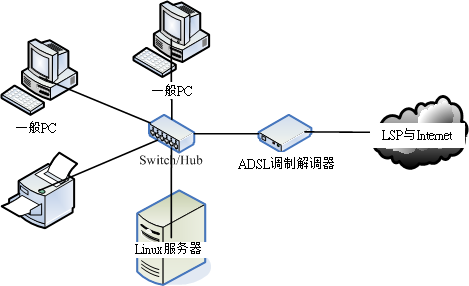
图 3.1-1、Linux 服务器取得 public IP 的联机方式之一(具有多个可用 IP 情况)
当需要连上 Internet 时，每部计算机 (包括 PC 与 Linux 主机) 都可以自己直接透过拨接连上， 而由于拨接是在每部机器上面『额外增加一个实体的 ppp0 接口』， 此时，你的系统内就会有两个可以使用的 IP 了 (一个是 public 一个是 private IP)。因此， 拨接上网之后每部主机还是可以使用原有的局域网络内的各项服务，而无须更动原本设定妥当的私有 IP 。 这样的情况对于一般家庭使用者来说，可以算是最佳的解决方案啦！因为如果你的 Linux 主机挂点时， 其他个人的 PC 是不会被影响的！
不过这样的环境对于小型企业主来说，却不好管理。因为无法掌握每个员工实际上网的情况， 而且对于防火墙来说，『根本就是一个没有防火墙的环境』，所以， 是没有办法对员工进行任何实际网络的掌控的，并且由于网络内外部 (LAN 与外部环境) 并没有明确的分开，网管人员对于进入客户端的封包是没有任何管理的能力， 所以对于网络安全来说，是很难管控的一种环境啊！因此对于企业来说，不建议这种环境。
3.1.1-2 Linux 直接联网-与一般 PC 分开网域
如果你有多个可用的 public IP ，并且你的 Linux 服务器主要是提供 Internet 的 WWW 或 mail 服务， 而不是作为内部的文件服务器之用，那么将 Linux 服务器与内部的网域分开也是个可行的方法， 而且 Linux 拥有 public IP，在设定与维护上面也不困难，如下所示：
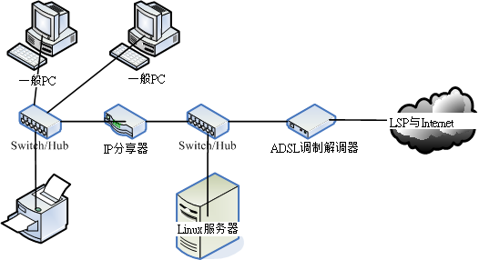
图 3.1-2、Linux 服务器取得 public IP 的联机方式之二(具有多个可用 IP 情况)
所有的 LAN 内的计算机与相关设备都会在同一个网域内，所以在 LAN 内的传输速度是没有问题的， 此外，这些计算机要连出至 Internet 时，必须要透过 IP 分享器，所以你也可以在 IP 分享器上面设定简单的防火墙规则， 如果 IP 分享器可以换更高阶的设备时，那么你就可以在该设备上面架设规则较为完整的防火墙， 对于内部主机有相当程度的管理，并且好维护
3.1.1-3 Linux 直接联网-让 Linux 直接管理 LAN
如果你不想要购买 IP 分享器的话，那么直接利用 Linux 服务器来管理就好:
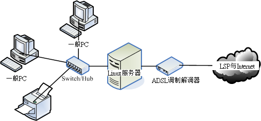
图 3.1-3、让 Linux 管理 LAN 的布线情况
这种情况下，不论你有多少个 IP 都可以适用的，尤其是当你只有一个 public IP 时，就非得使用这种方式不可了。 让 Linux 作为 IP 分享器的功能相当的简单，同时 Linux 必须具备两张网络卡，分别是对外与对内， 由于 Linux 依旧具有 public IP ，所以在服务器的设定与维护上相当的简单，同时 Linux 服务器可以做为内部网域对外的防火墙之用，由于 Linux 防火墙的效能挺不错加上设定也很简单，功能却也是很不错的！ 因此，网络管理人员也较能进行较完善的掌控，并且， Linux 服务器也要比高阶的硬件防火墙便宜多了！ ^_^ 鸟哥个人是比较喜好这种方式的联机啦！
不过，我们都知道『服务器提供的网络服务越单纯越好』， 因为这样一来主机的资源可以完全被某个程序所使用，不会互相影响，而且当主机被攻击时， 也比较能够立即了解是那个环节出了问题。但是如同图 3.1-3 的状况来说的话，由于内部的 LAN 是需要通过 Linux 才能联机出去，所以 Linux 挂点时，整个对外联机就挂了，此外， Linux 的服务可能就太复杂了点，可能会造成维护上的困难度。
3.1.1-4 Linux 放在防火墙后-让 Linux 使用 Private IP
可以将 Linux 服务器放在 LAN 后面. 比较大型的企业通常会将他们的服务器主机放置在机房内，主要是在 LAN 的环境下， 再透过防火墙的封包重新导向的功能，将来自 Internet 的封包先经过防火墙后才进入到服务器， 如此一来可在防火墙端就砍掉一堆莫名其妙的侦测与攻击，当然会比较安全啊！ 这种架构还依防火墙的多寡而又可分为非军事区 (DMZ) 的配置
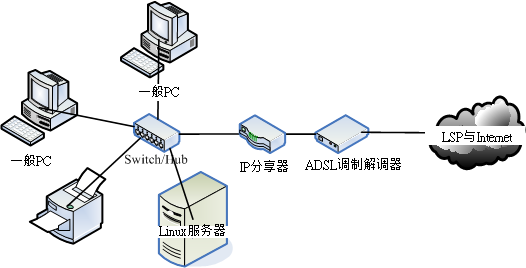
图 3.1-4、Linux 主机放在 LAN 里面的布线情况
可能的话， 你可以将 IP 分享器换成 Linux 主机来架设防火墙，也是一个不错的选择.
Linux 服务器主机若放在 LAN 里面 (使用 private IP)，则当你要对 Internet 提供网络服务时， 防火墙的规则将变的相当复杂，因为需要进行封包转递的任务，在某些比较麻烦的协议当中， 可能会造成设定方面的困扰。所以，在你初接触 Linux 服务器时， 不建议新手使用这种联机架构
3.1.2 网络媒体选购建议
主机硬件系统：考虑使用年限、省电、虚拟技术等
可以购买省电型的计算机主机，并且 CPU 含有虚拟化能力的更好。如此一来，不但比较省电，而且一部主机可以透过虚拟化的功能， 仿真出多部操作系统同时运作的环境
不过，选购什么主机配备与该主机即将运作的服务其实是有关系的，例如防火墙系统与 DHCP 等服务并不需要很强的主机， 但是 Proxy 及 SQL 等服务器就得要强而有力的主机系统，甚至得要磁盘阵列的辅助会比较好
只要记得，新购买主机时，最好选有伪指令集的 CPU 即可。
Linux 操作系统：考虑稳定、可网络升级、能够快速取得协助支持
目前的 distribution 分成两大类，一类是多功能新鲜货，例如 Fedora ， 一种是强调性能稳定但软件功能较旧的企业用途货，包括 RHEL, CentOS, SuSE 及 B2D 等！
如果想要架设服务器时，尽量选择『稳定性较高的企业版』较佳
网络卡：考虑服务器用途、内建与否、驱动程序的取得等
目前的新主机几乎都是内建 gigabit 的以太网络卡了，所以你不需要额外购买网络卡。 不过，使用内建的网络卡时，你得要注意到该网络卡是否为特殊的网络芯片，根据以往的经验，内建的网络卡通常是芯片较特殊的， 所以可能导致 Linux 预设的网卡驱动程序无法顺利的驱动该网络卡
想要作为 Linux 服务器的话，那么你的网络卡可能必须要购买好一点的。举例来说，某些主板内建便宜的 gigabit 网络接口，但越便宜的网络接口可能会造成损耗较多的 CPU 资源，如果能够购买类似 Intel/3Com 等知名品牌的 gigabit 适配卡，不但传输较为稳定，并且可以降低系统资源的耗费，是有一定程度的帮助的。另外，如果强调高速的话， 甚至可以选用 PCI-Express 的网络卡，而不使用传统的 PCI 接口。因为 PCI-Express 的传输带宽更高。
Linux 本身就支持 Real Tek 8139 的芯片，你不需要额外的驱动程序，这样会方便学习
Switch/Hub：考虑主机数量、传输带宽、网管功能与否等
如果你常常在区网内传送大量的数据，例如一次传输就得要传送 GBytes 的数据时， 那么网络的整体速度需要很详细的考虑喔！包括网络卡最好使用 gigabit ， 当然中间的联机设备最好买支持到 gigabit 速度的 switch
如果你的设备还需要更快时， 例如鸟哥之前服务的实验室内部的 cluster (丛集式计算机群) ，则购买的 switch 甚至需要支持 Jumbo frame 这种支持大讯框的硬件架构才行
网络线：考虑与速度相配的等级、线材形状、施工配线等
在所有串连网络的设备当中，网络线是最重要，但是却也最容易被忽略～除了网络线的等级会影响到连接速度外，网络线所在处是否容易被压折？是否容易有讯号衰减？自己压制的 RJ-45 接头是否通过测试？网络线是否缠绕情况严重？都会影响到网络的传输优劣！所以，虽然我们常常讲要确认主机与 Switch 是否有连接成功可以看 switch 上的灯号，但是很多时候虽然灯号是亮的，不过由于网络线折损严重的问题， 也会导致联机质量不良
一般来说，越高等级的网络线，最好不要自行制作，因为一个小小的 RJ-45 接头的压制， 由于蕊线裸露程度的不同，就会影响到电子屏蔽效应的优劣了。Cat 5 等级的线材还可以自行压制， 比他还高等级的，最好还是买现成的吧
无线网络相关设备：考虑速度、标准、安全性等
无线网络最大的问题常常在于『无线的安全性』方面，因为是无线的设备， 所以『基地台如果没有做好防备措施的话，常常会导致 LAN 内的主机数据被窃取』， 这可是非常大的问题
记得购买无线网络基地台时，注意他可否『限制 MAC 』，如此一来，至少可以锁网卡， 只让指定的网卡可以使用你的无线基地台，比较安全
关于其他配件：
还包括硬件防火墙、路由器、网桥等等.
在网络线的转角处必须特别注意线材的保护， 在平面地上则需要特别使用压条给予固定，在牵线施工的时候尽量让线材沿着墙角或者是墙面上的既有物品， 如此则除了保持工作场所的美观之外，还能够增加工作场所的安全性
网络速度慢的时候，不要以为只要增加网络带宽就好了，要确切的找出问题
如果着眼在单纯的硬件速度上面的话，那么选购时考虑『我的网络速度可接受的最低速度为何？』去考虑吧！ 如果行有余力的话，再来考虑『我的环境需要多稳定的设备来达成？』
3.2 本书使用的内部联机网络参数与通讯协议
除非你已经具有相当熟练的 Linux 系统与服务器架设维护经验，否则不建议你使用上面图 3.1-4 所介绍的联机模式[ME: Linux 主机放在 LAN 里面的布线情况]，对于初接触 Linux 服务器架设与维护的朋友来说，将你的联机模式设定成图 3.1-3 [ME: 让 Linux 管理 LAN 的布线]应该是个不错的选择，除了可以让你简单的就将服务器架设成功之外，也可以让你以 Linux 做为内部 LAN 的防火墙管理中心， 对于未来的学习成长方面较有帮助
3.2.1 联机参数与通讯协议
后续章节会使用到的区网环境以图 3.1-3为范本， 设计一个区网，包括相关的网络参数如下所示：
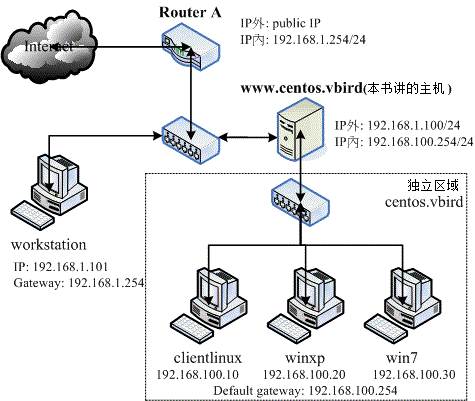
图 3.2-1、本书所使用的区网环境与参数设定
主要介绍的是 www.centos.vbird 那部 Linux 主机，该主机必须要具有 router 的能力，所以当然必须就要有两个接口，一个接口与 Internet 沟通，另一个接口则与内部的 LAN 沟通。那么为什么鸟哥说的是『两个网络接口』而不是『两张网络卡』呢？原因很简单， 因为一张网络卡可以设定多个 IP. 在 Linux 当中一张网络卡可以具有一个以上的 IP 呢！由于一个 IP 即为一个网络接口，因此只要两个网络接口 (不论有几张网络卡) 即可进行 NAT (类似 IP 分享器功能) 的设定. 鸟哥个人还是比较喜欢并且建议两张网络卡的啦， 将内外网络环境完整的分开，让你的内部网络效能较佳一点！
内部的 LAN 我们则建议使用 Private IP 来设定, 鸟哥通常喜欢使用 192.168.1.0/24 及 192.168.100.0/24 这几个 Class C 的网域. 假设我 Linux 主机的对内 IP 为 192.168.100.254 ，则在图 3.2-1 内的 LAN 内的 PC 之网络相关设定参数则为：
- IP:设定为 192.168.100.1~192.168.100.253 ，但 IP 不可重复；
- Netmask: 255.255.255.0
- Network: 192.168.100.0、Broadcast：192.168.100.255
- Default Gateway：192.168.100.254 (路由器的 IP)
- DNS：暂时使用 168.95.1.1
安装什么通讯协议
在局域网络内部时，事实上还可以透过简单的通讯协议来达到数据传输的目的，例如 NetBEUI 就是一个常见的简易通讯协议。
在 Linux 系统当中，只要将网络参数设定妥当，那么 TCP/IP 就已经被启用了，所以你不需要额外的再安装其他的通讯协议。不过，如果你需要将你的 Linux 系统中的硬盘空间分享给同网域的 Windows PC 时，那么就需要额外的加装 SAMBA 这个服务器软件才行。相关的 SAMBA 数据我们会在后面的章节提及。
至于在 Windows 部分就比较麻烦一点，因为在较大型的企业当中，还需要额外的考虑到 Windows Server 所提供的服务，那么在 Windows Clients 端就得要相应的启动某些通讯协议才行。一般来说，在 Windows Client 系统里面，最常见的两个通讯协议就是 TCP/IP 以及 NetBEUI 这两个通讯协议了。如果你只想让 Windows 与 Linux 能够藉由网络上的芳邻互通有无，那么启动 TCP/IP 也就够了 ( 因为 SAMBA 是藉由 NetBIOS over TCP/IP 来达成数据传输的 ) ，不过，也可以同时启动 NetBEUI 这个通讯协议
SOMEDAY 3.2.2 Windows 个人计算机网络设定范例
3.3 针对本文的建议：http://phorum.vbird.org/viewtopic.php?p=112104
第四章、连上 Internet
(http://cn.linux.vbird.org/linux_server/0130internet_connect.php)
在第二章的网络基础中， 我们知道主机要连上 Internet 需要一些正确的网络参数设定，这些设定在 Windows 系统上面的修改则在第三章的局域网络架构中说明了。在这一章当中，我们则主要以固定 IP 的设定方式来修改 Linux 的网络参数，同时，也会介绍如何使用 ADSL 的拨接方式来上网
4.1 Linux 连上 Internet 前的注意事项
其实整个主机最重要的设定，就是『先要驱动网络卡』
4.1.1 Linux 的网络卡
认识网络卡的装置代号
在 Linux 里面的各项装置几乎都是以文件名来取代的，例如 /dev/hda 代表 IDE1 接口的第一个 master 硬盘等等。 不过，网络卡的代号 (Network Interface Card, NIC) 却是以模块对应装置名称来代替的， 而默认的网络卡代号为 eth0 ，第二张网络卡则为 eth1 ，以此类推。
关于网络卡的模块 (驱动程序)
目前新版的 Linux distributions 默认可以支持的网络卡芯片组数量已经很完备了. 万一你的网络卡芯片组开发商不愿意释出开放源 (Open Source) 的硬件驱动程序，或者是该网络卡太新了，使得 Linux 核心来不及支持时，那么你就得要透过：
- 重新编译较新的核心，或者是
- 编译网络卡的核心模块
好让核心可以支持网络卡
有的时候 Linux 的默认网络卡模块可能无法完全 100% 的发挥网络卡的功能的， 所以，有的时候你还是得必须要自行编译网络卡的模块才行
如果你的网络卡是自行编译安装的， 那么每次重新安装其他版本的核心时，你都必须要自行重新手动编译过该模块。 因为模块与核心是有相关性的
观察核心所捉到的网卡信息
[root@www ~]# dmesg | grep -in eth 377:e1000: eth0: e1000_probe: Intel(R) PRO/1000 Network Connection 383:e1000: eth1: e1000_probe: Intel(R) PRO/1000 Network Connection 418:e1000: eth0 NIC Link is Up 1000 Mbps Full Duplex, Flow Control: RX 419:eth0: no IPv6 routers present
也可以透过 lspci 来查询相关的设备芯片数据喔
[root@www ~]# lspci | grep -i ethernet 00:03.0 Ethernet controller: Intel Corporation 82540EM Gigabit Ethernet Controller (rev 02)
观察网络卡的模块
从刚刚的 dmesg 的输出讯息中，我们知道鸟哥这部主机所使用的模块是 e1000 ，那核心有顺利的载入了吗？可以利用 lsmod 去查查看。此外，这个模块的相关信息又是如何呢？使用 modinfo 来查查看吧！
[root@www ~]# lsmod | grep 1000 e1000 119381 0 <==确实有载入到核心中！ [root@www ~]# modinfo e1000 filename: /lib/modules/2.6.32-71.29.1.el6.x86_64/kernel/drivers/net/e1000/e1000.ko version: 7.3.21-k6-NAPI license: GPL description: Intel(R) PRO/1000 Network Driver .....(以下省略).....
上面输出信息的重点在于那个档名 (filename) 的部分！那一场串的文件名目录，就是我们驱动程序放置的主要目录所在。 得要注意的是，那个 2.6.32-71.29.1.el6.x8664 是核心版本，因此，不同的核心版本使用的驱动程序其实不一样喔！我们才会一直强调，更改核心后， 你自己编译的硬件驱动程序就需要重新编译
如何知道你的网络卡卡号呢？很简单啊！不管有没有启动你的网络卡，都可以使用： 『 ifconfig eth0 』来查询你的网卡卡号。如果你照着上面的信息来作， 结果发现网卡已经驱动了，恭喜你，准备到下一节去设定网络吧！如果没有捉到网卡呢？那就准备自己编译网卡驱动程序吧！
SOMEDAY 4.1.2 编译网卡驱动程序(Option)
4.1.3 Linux 网络相关配置文件案
TCP/IP 的重要参数主要是： IP, Netmask, Gateway, DNS IP ，而且千万不要忘记你这部主机也应该要有主机名 (hostname)
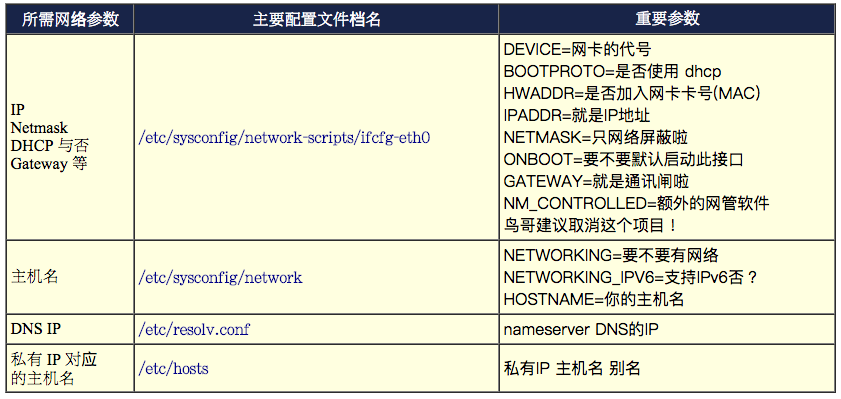
还有些档案或许你也应该要知道一下比较好呦！
- /etc/services: 这个档案则是记录架构在 TCP/IP 上面的总总协议，包括 http, ftp, ssh, telnet 等等服务所定义的 port number ，都是这个档案所规划出来的。如果你想要自定义一个新的协议与 port 的对应，就得要改这个档案了；
- /etc/protocols: 这个档案则是在定义出 IP 封包协议的相关数据，包括 ICMP/TCP/UDP 这方面的封包协议的定义等。
知道上面这几个档案后，未来要修改网络参数时，那就太简单了！
网络方面的启动指令的话，可以记得几个简单的指令即可:
- /etc/init.d/network restart: 这个 script 最重要！因为可以一口气重新启动整个网络的参数！ 他会主动的去读取所有的网络配置文件，所以可以很快的恢复系统默认的参数值。
- ifup eth0 (ifdown eth0): 启动或者是关闭某张网络接口。可以透过这个简单的 script 来处理喔！ 这两个 script 会主动到 etc/sysconfig/network-scripts 目录下， 读取适当的配置文件来处理啊！ (例如 ifcfg-eth0)。
最好你还是要了解 shell script ，比较好！因为可以追踪整个网络的设定条件。 why ？这是因为每个 distributions 的设定数据可能都不太相同，不过却都以 /etc/init.d/network 作为启动的 script ， 因此，你只要了解到该档案的内容，很容易就追踪得出来你的配置文件所需要的内容
4.2 连上 Internet 的设定方法
由于目前使用 Linux notebook 的使用者大增，而 Notebook 通常是以无线网络来联机的， 所以鸟哥在这里也尝试使用一款无线网络来进行联机设定。
4.2.1 手动设定固定 IP 参数 (适用学术网络、ADSL 固定制) + 五大检查步骤
所谓的固定 IP 就是指在你的网络参数当中，你只要输入既定的 IP 参数即可。那么这个既定的 IP 来自哪里呢？ 一般来说，他可能来自于：
- 学术网络：由学校单位直接给予的一组 IP 网络参数；
- 固定制 ADSL：向 ISP 申请的一组固定 IP 的网络参数；
- 企业内部或 IP 分享器内部的局域网络：例如企业内使用私有 IP 作为局域网络的联机之用时，那么我们的 Linux 当然也就需要向企业的网管人员申请一组固定的 IP 网络参数啰！
我们对外网卡 (eth0) 的信息为:
IP: 192.168.1.100 Netmask: 255.255.255.0 Gateway: 192.168.1.254 DNS IP: 168.95.1.1 Hostname: www.centos.vbird
那么要修改的四个档案与相关的启动脚本，以及重新启动后需要用啥指令观察的重点，
底下我们就分别针对上面的各项设定来进行档案的重新修改啰！
1. IP/Netmask/Gateway 的设定、启动与观察
设定网络参数得要修改 /etc/sysconfig/network-scripts/ifcfg-eth0，请记得，这个 ifcfg-eth0 与档案内的 DEVICE 名称设定需相同，并且，在这个档案内的所有设定，基本上就是 bash 的变量设定规则啦 (注意大小写)！
[root@www ~]# vim /etc/sysconfig/network-scripts/ifcfg-eth0 DEVICE="eth0" <==网络卡代号，必须要 ifcfg-eth0 相对应 HWADDR="08:00:27:71:85:BD" <==就是网络卡地址，若只有一张网卡，可省略此项目 NM_CONTROLLED="no" <==不要受到其他软件的网络管理！ ONBOOT="yes" <==是否默认启动此接口的意思 BOOTPROTO=none <==取得IP的方式，其实关键词只有dhcp，手动可输入none IPADDR=192.168.1.100 <==就是 IP 啊 NETMASK=255.255.255.0 <==就是子网掩码 GATEWAY=192.168.1.254 <==就是预设路由 # 重点是上面这几个设定项目，底下的则可以省略的啰！ NETWORK=192.168.1.0 <==就是该网段的第一个 IP，可省略 BROADCAST=192.168.1.255 <==就是广播地址啰，可省略 MTU=1500 <==就是最大传输单元的设定值，若不更改则可省略
注意每个变量(左边的英文)都应该要大写！ 否则我们的 script 会误判！事实上鸟哥的设定值只有最上面的 8 个而已，其他的 NETWORK, BROADCAST, MTU 鸟哥都没有设定喔！ 至于参数的说明方面，IPADDR, NETMASK, NETWORK, BROADCAST 鸟哥在这里就不再多说，要谈的是几个重要的设定值：
- DEVICE：这个设定值后面接的装置代号需要与文件名 (ifcfg-eth0) 那个装置代号相同才行！否则可能会造成一些装置名称找不到的困扰。
- BOOTPROTO：启动该网络接口时，使用何种协议？ 如果是手动给予 IP 的环境，请输入 static 或 none ，如果是自动取得 IP 的时候， 请输入 dhcp (不要写错字，因为这是最重要的关键词！)
- GATEWAY：代表的是『整个主机系统的 default gateway』， 所以，设定这个项目时，请特别留意！不要有重复设定的情况发生喔！也就是当你有 ifcfg-eth0, ifcfg-eth1…. 等多个档案，只要在其中一个档案设定 GATEWAY 即可
- GATEWAYDEV：如果你不是使用固定的 IP 作为 Gateway ， 而是使用网络装置作为 Gateway (通常 Router 最常有这样的设定)，那也可以使用 GATEWAYDEV 来设定通讯闸装置呢！不过这个设定项目很少使用就是了！
- HWADDR：这个东西就是网络卡的卡号了！在仅有一张网卡的情况下，这个设定值没有啥功能， 可以忽略他。但如果你的主机上面有两张一模一样的网卡，使用的模块是相同的。 此时，你的 Linux 很可能会将 eth0, eth1 搞混，而造成你网络设定的困扰。如何解决呢？ 由于 MAC 是直接写在网卡上的，因此指定 HWADDR 到这个配置文件中，就可以解决网卡对应代号的问题了！很方便吧！
重新启动网络接口吧！这样才能更新整个网络参数:
[root@www ~]# /etc/init.d/network restart Shutting down interface eth0: [ OK ] <== 先关闭界面 Shutting down loopback interface: [ OK ] Bringing up loopback interface: [ OK ] <== 再开启界面 Bringing up interface eth0: [ OK ] # 针对这部主机的所有网络接口 (包含 lo) 与通讯闸进行重新启动，所以网络会停顿再开
接下来当然就是观察看看:
# 检查一：当然是要先察看 IP 参数对否，重点是 IP 与 Netmask 啦！
[root@www ~]# ifconfig eth0
eth0 Link encap:Ethernet HWaddr 08:00:27:71:85:BD
inet addr:192.168.1.100 Bcast:192.168.1.255 Mask:255.255.255.0
inet6 addr: fe80::a00:27ff:fe71:85bd/64 Scope:Link
UP BROADCAST RUNNING MULTICAST MTU:1500 Metric:1
RX packets:655 errors:0 dropped:0 overruns:0 frame:0
TX packets:468 errors:0 dropped:0 overruns:0 carrier:0
collisions:0 txqueuelen:1000
RX bytes:61350 (59.9 KiB) TX bytes:68722 (67.1 KiB)
# 有出现上头那个 IP 的数据才是正确的启动；特别注意 inet addr 与 Mask 项目
# 这里如果没有成功，得回去看看配置文件有没有错误，然后再重新 network restart ！
# 检查二：检查一下你的路由设定是否正确
[root@www ~]# route -n
Kernel IP routing table
Destination Gateway Genmask Flags Metric Ref Use Iface
192.168.1.0 0.0.0.0 255.255.255.0 U 0 0 0 eth0
169.254.0.0 0.0.0.0 255.255.0.0 U 1002 0 0 eth0
0.0.0.0 192.168.1.254 0.0.0.0 UG 0 0 0 eth0
# 重点就是上面的特殊字体！前面的 0.0.0.0 代表预设路由的设定值！
# 检查三：测试看看与路由器之间是否能够联机成功呢！
[root@www ~]# ping -c 3 192.168.1.254
PING 192.168.1.254 (192.168.1.254) 56(84) bytes of data.
64 bytes from 192.168.1.254: icmp_seq=1 ttl=64 time=2.08 ms
64 bytes from 192.168.1.254: icmp_seq=2 ttl=64 time=0.309 ms
64 bytes from 192.168.1.254: icmp_seq=3 ttl=64 time=0.216 ms
--- 192.168.1.254 ping statistics ---
3 packets transmitted, 3 received, 0% packet loss, time 2004ms
rtt min/avg/max/mdev = 0.216/0.871/2.088/0.861 ms
# 注意啊！有出现 ttl 才是正确的响应！如果出现『 Destination Host Unreachable 』
# 表示没有成功的联机到你的 GATEWAY 那表示出问题啦！赶紧检查有无设定错误。
第三个检查如果失败，可能要看你的路由器是否已经关闭？或者是你的 switch/hub 是否有问题，或者是你的网络线是否错误，还是说你的或路由器的防火墙设定错误了？要记得去解决喔！ 这三个检查做完而且都成功之后，那么你的 TCP/IP 参数设定已经完毕了！这表示你可以使用 IP 上网啦！ 只是还不能够使用主机名上网就是了。接下来就是要设定 DNS
2. DNS 服务器的 IP 设定与观察
/etc/resolv.conf 很重要, 他会影响到你是否可以查询到主机名与 IP 的对应:
[root@www ~]# vim /etc/resolv.conf nameserver 168.95.1.1 nameserver 139.175.10.20
然后赶紧测试看看：
# 检查四：看看 DNS 是否顺利运作了呢？很重要的测试喔！ [root@www ~]# dig www.google.com ....(前面省略).... ;; QUESTION SECTION: ;www.google.com. IN A ;; ANSWER SECTION: www.google.com. 428539 IN CNAME www.l.google.com. www.l.google.com. 122 IN A 74.125.71.106 ....(中间省略).... ;; Query time: 30 msec ;; SERVER: 168.95.1.1#53(168.95.1.1) <==这里的项目也很重要！ ;; WHEN: Mon Jul 18 01:26:50 2011 ;; MSG SIZE rcvd: 284
上面的输出有两个重点，一个是问题查询的是 www.google.com 的 A (Address) 参数，并且从回答 (Answer) 里面得到我们所需的 IP 参数。最后面一段的 Server 项目非常重要！你得要看是否与你的设定相同的那部 DNS 服务器 IP 才行！ 以上面输出为例，鸟哥使用中华电信的 DNS 服务器，所以就出现 168.95.1.1 的 IP 地址
3. 主机名的修改、启动与观察
修改主机名就得要改 /etc/sysconfig/network 以及 /etc/hosts 这两个档案:
[root@www ~]# vim /etc/sysconfig/network NETWORKING=yes HOSTNAME=www.centos.vbird [root@www ~]# vim /etc/hosts 192.168.1.100 www.centos.vbird # 特别注意，这个档案的原本内容不要删除！只要新增额外的数据即可！
修改完毕之后要顺利启动的话，得要重新启动才可以。为什么需要重新启动呢？因为系统已经有非常多的服务启动了， 这些服务如果需要主机名，都是到这个档案去读取的。而我们知道配置文件更新过后，服务都得要重新启动才行。 因此，已经启动而且有读到这个档案的服务，就得要重新启动
最简单的方法，就是重新启动。 但重开机之前还需要进行一项工作，否则，你的系统开机会花掉很多时间
[root@www ~]# hostname localhost.localdomain # 还是默认值，尚未更新成功！我们还得要进行底下的动作！ # 检查五：看看你的主机名有没有对应的 IP 呢？没有的话，开机流程会很慢！ [root@www ~]# ping -c 2 www.centos.vbird PING www.centos.vbird (192.168.1.100) 56(84) bytes of data. 64 bytes from www.centos.vbird (192.168.1.100): icmp_seq=1 ttl=64 time=0.015 ms 64 bytes from www.centos.vbird (192.168.1.100): icmp_seq=2 ttl=64 time=0.028 ms --- www.centos.vbird ping statistics --- 2 packets transmitted, 2 received, 0% packet loss, time 1000ms rtt min/avg/max/mdev = 0.015/0.021/0.028/0.008 ms # 因为我们有设定 /etc/hosts 规定 www.centos.vbird 的 IP ， # 所以才找的到主机主机名对应的正确 IP！这时才能够 reboot 喔！重要重要！
上面的信息中，检查的内容总共有五个步骤，这五个步骤每一步都要成功后才能够继续往下处理
最重要的一点，当你修改过 /etc/sysconfig/network 里面的 HOSTNAME 后， 务必要重新启动 (reboot)。但是重新启动之前，请务必『 ping 主机名』且得到 time 的响应才行！
4.2.2 自动取得 IP 参数 (DHCP 方法，适用 Cable modem、IP 分享器的环境)
在 IP 分享器后头的主机在设定时，不是都会选择『自动取得 IP 』吗？那就是可自动取得 IP 的环境
有一部主机提供 DHCP 服务给整个网域内的计算机. 例如 IP 分享器就可能是一部 DHCP 主机
Dynamic Host Configuration Protocol
详细的 DHCP 功能我们会在第十二章说明
这个方法适合哪些联机的方式呢？大致有这些：
- Cable Modem：就是使用电视缆线进行网络回路联机的方式啊！
- ADSL 多 IP 的 DHCP 制：就鸟哥所知， SeedNet 有推出一种专案， 可以让 ADSL 用户以 DHCP 的方式来自动取得 IP ，不需要拨接。那使用的也是这种方法！
- IP 分享器或 NAT 有架设 DHCP 服务时：当你的主机位于 IP 分享器的后端，或者是你的 LAN 当中有 NAT 主机且 NAT 主机有架设 DHCP 服务时， 那取得 IP 的方法也是这样
你依旧需要前一小节手动设定 IP 的主机名设定 (第三步骤)，至于 IP 参数与 DNS 则不需要额外设定， 仅需要修改 ifcfg-eth0 即可:
[root@www ~]# vim /etc/sysconfig/network-scripts/ifcfg-eth0 DEVICE=eth0 HWADDR="08:00:27:71:85:BD" NM_CONTROLLED="no" ONBOOT=yes BOOTPROTO=dhcp
[ME: use /etc/networks/interfaces to set up eth0 under ubuntu. Link]
只要这几个项目即可，其他的都给他批注 (#) 掉！尤其是那个 GATEWAY 一定不能设定！ 避免互相干扰！然后给他重新启动网络：
[root@www ~]# /etc/init.d/network restart Shutting down interface eth0: [ OK ] <== 先关闭界面 Shutting down loopback interface: [ OK ] Bringing up loopback interface: [ OK ] <== 再开启界面 Bringing up interface eth0: [ OK ] Determining IP information for eth0.. [ OK ] <== 重要！是 DHCP 的特点！ # 你可以透过最后一行去判断我们是否有透过 DHCP 协议取得 IP！
Tip: 基本上，/etc/resolv.conf 预设会被 DHCP 所修改过，因此你不需要修改 /etc/resolv.conf。甚至连主机名都会被 DHCP 所修订。不过，如果你有特殊需求，那么 /etc/sysconfig/network 以及 /etc/hosts 请自行修改正确
4.2.3 ADSL 拨接上网 (适用台湾 ADSL 拨接以及光纤到大楼)
拨接上网时，可以使用 rp-pppoe 这套软件来帮忙(注1)，所以，你必须要确认你的 Linux distributions 上面已经存在这个玩意儿
CentOS 本身就含有 rp-pppoe ，请使用原版光盘，或者是使用 yum 来进行安装:
[root@www ~]# mount /dev/cdrom /mnt [root@www ~]# cd /mnt/Packages [root@www ~]# rpm -ivh rp-pppoe* ppp* [root@www ~]# rpm -q rp-pppoe rp-pppoe-3.10-8.el6.x86_64 <==你瞧瞧！确实已经安装喔！
很多 distributions 都已经将拨接这个动作归类到图形接口里面去了，所以可能没有提供 rp-pppoe 这个咚咚，没关系，你可以到底下的网站去取得的：
另外请注意，虽然整个联机是由主机的以太网络卡连接到 ADSL 调制解调器上，然后再透过电话线路联机到 ISP 的机房去，最后在主机上以 rp-pppoe 拨接达成联机。但是 rp-pppoe 使用的是 Point to Point (ppp) over Ethernet 的点对点协议所产生的网络接口，因此当你顺利的拨接成功之后， 会多产生一个实体网络接口『 ppp0 』
而由于 ppp0 是架构在以太网络卡上的，你必须要有以太网卡，同时，即使拨接成功后，你也不能将没有用到的 eth0 关闭
因此，拨接成功后就会有：
- 内部循环测试用的 lo 接口；
- 网络卡 eth0 这个接口；
- 拨接之后产生的经由 ISP 对外连接的 ppp0 接口。
eth0 的设置
虽然 ppp0 是架构在以太网卡上面的，但上头这三个接口在使用上是完全独立的，互不相干， 所以关于 eth0 的使用上，你就可以这样思考：
如果你的局域网络如同第三章的图3.1-1 所示，也就是说，你的 ppp0 可以连上 Internet ，但是内网则使用 eth0 来跟其他内部主机联机时， 那么你的 IP 设定参数： /etc/sysconfig/network-scripts/ifcfg-eth0 应该要给予一个私有 IP 以使内部的 LAN 也可以透过 eth0 来进行联机啊！所以鸟哥会这样设定：
[root@www ~]# vim /etc/sysconfig/network-scripts/ifcfg-eth0 DEVICE=eth0 BOOTPROTO=none NM_CONTROLLED=no IPADDR=192.168.1.100 NETMASK=255.255.255.0 ONBOOT=yes
记得一件事情，那就是：『千万不要有 GATEWAY 的设定！』， 因为 ppp0 拨接成功后， ISP 会主动的给予 ppp0 接口一个可以连上 Internet 的 default gateway ， 如果你又设定另一个 default gateway ，两个网关可能会造成你的网络不通
如果这部 Linux 主机是直接连接到 ADSL 调制解调器上头，并没有任何内部主机与其联机，也就是说，你的 eth0 有没有 IP 都没有关系时，那么上面的设定当中的那个『 ONBOOT=yes 』直接改成『 ONBOOT=no 』就好了！那拨接不会有问题吗？ 没关系啊，因为你拨接启动 ppp0 时，系统会主动的唤醒 eth0 ，只是 eth0 不会有 IP 信息就是了。
拨号连接
其他的档案请参考 4.2.1 手动设定 IP 的联机方法来处理即可。拨接之前，请确认你的 ADSL 调制解调器已经与主机联机妥当，也取得账号与密码，也安装好了 rp-pppoe
鸟哥比较建议将内外网域分的清清楚楚比较好，所以，通常我都是主机上面接两块网络卡， 一张对内一张对外，对外的那张网卡预设是不启动的 (ONBOOT=no)。考虑到你可能仅有一张网卡，那么鸟哥也会给你建议， 直接给 eth0 一个私有 IP 接口吧！设定就如同本节稍早提到的那样
4.3 无线网络–以笔记本电脑为例
针对无线网络所提出的标准中，早期是 IEEE 802.11b / 802.11g 较为重要，其中 802.11g 这个标准的传输速度已经可以达到 54Mbps 的水平。不过，近期以来还有新的标准，那就是 802.11n (注3) ，这个标准的理论传输速度甚至可达 300Mbps
Tip: 无线网络的机制非常多，我们现在常听到的主要有 Wi-Fi (可想成是 802.11 相关标准) 以及 WiMAX (802.16, 注4) 等， 在底下我们主要介绍的是目前使用较广泛的 Wi-Fi 相关无线网卡
4.3.1 无线网络所需要的硬件： AP、无线网卡
在无线网络中，当然也需要一个接收讯号的装置，那就是无线基地台 (Wireless Access Point, 简称 AP) 了！另一个装置当然就是安装在计算机主机上面的无线网卡
无线基地台本身就是个 IP 分享器了，他本身会有两个接口，一个可以与外部的 IP 做沟通，另外一个则是作为 LAN 内部其他主机的 GATEWAY
整个传输的情况可以用下图来示意：
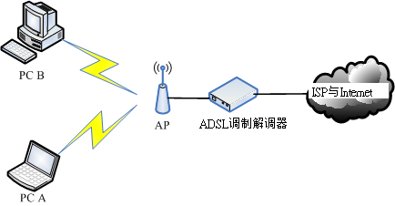
图 4.3-1、无线网络的联机图标
Tip: 基本上，Linux 核心预设不支持的设备，建议不要购买啦！ 否则很难处理！
4.3.2 关于 AP 的设定：网络安全方面
如果 AP 不设定任何联机限制，那任何拥有无线网卡的主机都可以透过这个 AP 连接上你的 LAN. 通常我们都会认为 LAN 是信任网域，所以内部是没有防火墙的，亦即是不设防的状态.
无线网络的安全性一定是具有很大的漏洞, 因此，请你务必在你的 AP 上面进行好联机的限制设定，一般可以这样做限制的：
- 在 AP 上面使用网卡卡号 (MAC) 来作为是否可以存取 AP 的限制: 这个方法有个问题， 那就是当有其他主机想要透过这个 AP 联机时，你就得要手动的登入 AP 去进行 MAC 的设定， 在经常有变动性装置的环境中 (例如公司行号或学校)，这个方法比较麻烦
- 设定你的 AP 联机加密机制与密钥：另一个比较可行的办法就是设定联机时所需要的验证密钥！这个密钥不但可以在网络联机的数据当中加密，使得即使你的数据被窃听， 对方也是仅能得到一堆乱码，同时由于 client 端也需要知道密钥并且在联机阶段输入密钥， 因此也可以被用来限制可联机的用户
当然，上面两种方法你可以同时设定，亦即不但需要联机的密钥，而且在 AP 处也设定能够存取的 MAC 网卡.
关于 ESSID/SSID ：
每部 AP 都会有一个联机的名字，那就是 SSID 或 ESSID，这个 SSID 可以提供给 client 端， 当 client 端需要进行无线联机时，他必须要说明他要利用哪一部 AP ，那个 ESSID 就是那时需要输入的数据了！
我们先选择 (1)无线网络加密设定，然后在右边窗口 (2)点选 WPA-PSK/WPA2-PSK 的加密方式，然后 (3)输入加密的密钥长度
这个时候我们就会有底下两个数据：
- SSID： vbirdtsai
- 密钥密码： 123456789aaa
4.3.3 利用无线网卡开始联机
无线网卡有很多模式，鸟哥选择的是 USB 无线网卡，所以想要知道有没有捉到这张网卡，就得要使用 lsusb 来检查， 如果核心预设不支持，还得要自行编译驱动程序才行！如前所述，我们的驱动程序已经捉在 /root 底下了！
1. 检查无线网卡的硬件装置：
使用 USB 无线网卡的检查方式如下：
[root@www ~]# lsusb Bus 002 Device 001: ID 1d6b:0001 Linux Foundation 1.1 root hub Bus 001 Device 003: ID 07d1:3c0a D-Link System DWA-140 RangeBooster N Adapter(rev.B2) [Ralink RT2870] Bus 001 Device 001: ID 1d6b:0002 Linux Foundation 2.0 root hub # 是有捉到的！只是，有加载吗？不知道呢！继续往下检查看看！
2. 察看模块与相对应的网卡代号：(modinfo 与 iwconfig)
知道核心侦测到这张网卡，但是能不能正确的加载模块呢？来瞧瞧：
[root@www ~]# iwconfig lo no wireless extensions. eth0 no wireless extensions. # 要出现名为 wlan0 之类的网卡才是有捉到喔！所以没有加载正确模块啦！
因为没有加载正确的驱动程序，现在让我们来安装刚刚下载的 RPM 驱动程序吧！请先将 USB 拔出来， 然后再安装 RPM 档案。
[root@www ~]# rpm -ivh kmod-rt3070sta* rt2870-firmware* # 这个动作会进行很久，似乎程序在侦测硬件的样子！ # 这个咚咚做完之后，请将 USB 网卡插入 USB 插槽吧！ [root@www ~]# iwconfig lo no wireless extensions. eth0 no wireless extensions. ra0 Ralink STA
这个 iwconfig 是用在作为无线网络设定之用的一个指令，与 ifconfig 类似！不过，当我们使用 iwconfig 时，如果有发现上述的特殊字体(the last line)，那就代表该网络接口使用的是无线网卡的意思啊！虽然有时你会看到无线网卡为 wlan0 之类的代号，不过这张网卡却使用 ra0 作为代号，挺有趣的！
3. 利用 iwlist 侦测 AP ：
接下来要干嘛？当然是看看我们的无线网卡是否能够找到 AP 啊！所以，首先我们要启动无线网卡，就利用 ifconfig 即可：
[root@www ~]# ifconfig ra0 up
启动网卡后才能以这个网卡来搜寻整个区域内的无线基地台啊！接下来，直接使用 iwlist 来使用这个无线网卡搜寻看看吧！
[root@www ~]# iwlist ra0 scan
ra0 Scan completed :
Cell 01 - Address: 74:EA:3A:C9:EE:1A
Protocol:802.11b/g/n
ESSID:"vbird_tsai"
Mode:Managed
Frequency:2.437 GHz (Channel 6)
Quality=100/100 Signal level=-45 dBm Noise level=-92 dBm
Encryption key:on
Bit Rates:54 Mb/s
IE: WPA Version 1
Group Cipher : CCMP
Pairwise Ciphers (1) : CCMP
Authentication Suites (1) : PSK
IE: IEEE 802.11i/WPA2 Version 1
Group Cipher : CCMP
Pairwise Ciphers (1) : CCMP
Authentication Suites (1) : PSK
....(底下省略)....
从上面可以看到 (1)这个无线 AP 的协议，并且也能够知道 (2)ESSID 的名号是没错的！当然啦，(3)连加密的机制是 WPA2-PSK 也是能够得知的！这与前一小节的 AP 设定是相符合的！(4)使用的无线频道是 6 号，接下来呢？就得要去修改配置文件，这部份很麻烦，请参考如下的网页来设定：
[root@www ~]# ifconfig ra0 down && rmmod rt3070sta
[root@www ~]# vim /etc/Wireless/RT2870STA/RT2870STA.dat
Default
CountryRegion=5
CountryRegionABand=7
CountryCode=TW <==台湾的国码代号！
ChannelGeography=1
SSID=vbird_tsai <==你的 AP 的 ESSID 喔！
NetworkType=Infra
WirelessMode=9 <==与无线 AP 支持的协议有关！参考上述网址说明
Channel=6 <==与 CountryRegion 及侦测到的频道有关的设定！
....(中间省略)....
AuthMode=WPAPSK <==我们的 AP 提供的认证模式
EncrypType=AES <==传送认证码的加密机制啊！
WPAPSK="123456780aaa" <==密钥密码！最好用双引号括起来较佳！
....(底下省略)....
# 鸟哥实际有修改的，就是上面有特别说明的地方，其余的地方都保留默认值即可。
# 更奇怪的是，每次 ifconfig ra0 down 后，这个档案会莫名其妙的修改掉 @_@
[root@www ~]# modprobe rt3070sta && ifconfig ra0 up
[root@www ~]# iwconfig ra0
ra0 Ralink STA ESSID:"vbird_tsai" Nickname:"RT2870STA"
Mode:Auto Frequency=2.437 GHz Access Point: 74:EA:3A:C9:EE:1A
Bit Rate=1 Mb/s
RTS thr:off Fragment thr:off
Encryption key:off
Link Quality=100/100 Signal level:-37 dBm Noise level:-37 dBm
Rx invalid nwid:0 Rx invalid crypt:0 Rx invalid frag:0
Tx excessive retries:0 Invalid misc:0 Missed beacon:0
如果顺利出现上面的数据，那就表示你的无线网卡已经与 AP 接上线了～再来则是设定网络卡的配置文件
4. 设定网络卡配置文件 (ifcfg-ethn)
因为我们的网络卡使用的代号是 ra0，所以也是需要在 /etc/sysconfig/network-scripts 设定好相对应的档案才行啊！而由于我们的这块卡其实是无线网卡， 所以很多设定值都与原本的以太网络卡不同，详细的各项变量设定你可以自行参考一下底下的档案：
- /etc/sysconfig/network-scripts/ifup-wireless
我的网络卡设定是这样的：
[root@www ~]# cd /etc/sysconfig/network-scripts [root@www network-scripts]# vim ifcfg-ra0 DEVICE=ra0 BOOTPROTO=dhcp ONBOOT=no <== 若需要每次都自动启动，改成 yes 即可！ ESSID=vbird_tsai RATE=54M <== 可以严格指定传输的速率，要与上面 iwconfig 相同，单位 b/s
要注意的是那个 ONBOOT=no 的设定，如果你想要每次开机时无线，网卡都会自动启动， 那就将他设定为 yes 吧！否则就设定为 no 啰！要启动再以 ifup ra0 来启动即可！
Tip: 上面那个配置文件的内容都是在规划出 iwconfig 的参数而已，所以你除了可以查阅 ifup-wireless 的内容外，可以 man iwconfig ，会知道的更详细喔！而最重要的参数当然就是 ESSID 及 KEY
5. 启动与观察无线网卡
要启动就用 ifup wlan0 来启动，很简单啦！要观察就用 iwconfig 及 ifconfig 分别观察
[root@www ~]# ifup ra0 Determining IP information for ra0... done.
一般来说，目前比较常见的笔记本电脑内建的 Intel 无线网络模块 (Centrino) 适用于 Linux 的 ipw2200/ipw21000 模块，所以设定上也是很快！因为 CentOS 6.x 预设就有支持，你不必重新安装无线网卡驱动程序！ 那直接透过上述的方式来处理你的无线网络即可！
4.4 常见问题说明
4.4.1 内部网域使用某些联机服务(如 FTP, POP3)所遇到的联机延迟问题
问题：『我在我的内部区域网域内有几部计算机， 这几部计算机明明都是在同一个网域之内，而且系统通通没有问题，为什么我使用 pop3 或者是 ftp 连上我的 Linux 主机会停顿好久才连上？但是连上之后，速度就又恢复正常！』
由于网络在联机时，两部主机之间会互相询问对方的主机名配合的 IP ，以确认对方的身份。 在目前的因特网上面，我们大多使用 Domain Name System (DNS) 系统做为主机名与 IP 对应的查询，那就是我们在上面提到的 /etc/resolv.conf 档案内设定的 IP 由来， 如果没有指定正确的 DNS IP 的话，那么我们就无法查询到主机名与 IP 的对应了。
公开的因特网可以这样设定，但是如果是我们内部网域的私有 IP 主机呢？ 因为是私有 IP 的主机，所以当然无法使用 /etc/resolv.conf 的设定来查询到这部主机的名称啊！ 那怎么办？要知道，如果两部主机之间无法查询到正确的主机名与 IP 的对应， 那么将『可能』发生持续查询主机名对应的动作，这个动作一般需要持续 30-60 秒，因此，你的该次联机将会持续检查主机名 30 秒钟，也就会造成奇怪的 delay 的情况。
这个问题最常发生在内部的 LAN ，例如使用 192.168.1.1 的主机联机到 192.168.1.2 的主机。 这个问题虽然可以透过修改软件的设定来略过主机名的检查，但是绝大多数的软件都是默认启用这个机制的， 因此，内部主机『老是联机时期很慢，联机成功后速度就会恢复正常』 时，通常就是这个问题啦！尤其是在 FTP 及 POP3 等网络联机软件上最常见。
最简单的方法就是『给予内部的主机每部主机一个名称与 IP 的对应』即可。举例来说，我们知道每部主机都有一个主机名为 localhost ，对应到 127.0.0.1 ，为什么呢？因为这个 127.0.0.1 与 localhost 的对应就被写到 /etc/hosts 内嘛！ 当我们需要主机名与 IP 的对应时，系统就会先到 /etc/hosts 找寻对应的设定值， 如果找不到，才会使用 /etc/resolv.conf 的设定去因特网找。这样说，你明白了吧？ 也就是说，只要修改了 /etc/hosts，加入每部主机与 IP 的对应， 就能够加快主机名的检查
所以说，你就要将你的 私有 IP 的计算机与计算机名称写入你的 /etc/hosts 当中了！这也是为啥我们在主机名设定的地方， 特别强调第五个检查步骤的缘故。
所以说，你就要将你的 私有 IP 的计算机与计算机名称写入你的 /etc/hosts 当中了！这也是为啥我们在主机名设定的地方， 特别强调第五个检查步骤的缘故。
[root@www ~]# cat /etc/hosts # Do not remove the following line, or various programs # that require network functionality will fail. 127.0.0.1 localhost.localdomain localhost # 主机的 IP 主机的名称 主机的别名
Note: localhost 那一行不能拿掉呦！ 否则系统的某些服务可能就会无法被启动
将我局域网络内的所有的计算机 IP 都给他写进去！并且，每一部给他取一个你喜欢的名字， 即使与 client 的计算机名称设定不同也没关系啦！ 以鸟哥为例，如果我还额外加设了 DHCP 的时候，那么我就干脆将所有的 C Class 的所有网段全部给他写入 /etc/hosts 当中，有点像底下这样：
[root@www ~]# vim /etc/hosts # Do not remove the following line, or various programs # that require network functionality will fail. 127.0.0.1 localhost.localdomain localhost 192.168.1.1 linux001 192.168.1.2 linux002 192.168.1.3 linux003 ......... ......... 192.168.1.254 linux254
如此一来，不论我哪一部计算机连上来，不论是在同一个网段的哪一个 IP ， 我都可以很快速的追查到！
4.4.2 网址列无法解析问题
可以拨接上网了，也可以 ping 到奇摩雅虎的 IP ，但为何就是无法直接以网址连上 Internet 呢！
就是名称解析不对啦！赶快改一下 /etc/resolv.conf 这个档案吧！改成上层 ISP 给你的 DNS 主机的 IP 就可以啦！
朋友们常常会在这个地方写错，因为很多书上都说这里要设定成为 NAT 主机的 IP ， 那根本就是不对的！你应该要将所有管理的计算机内，关于 DNS 的设定都直接使用上面的设定值即可！ 除非你的上层环境有使用防火墙，那才另外考虑！
4.4.3 预设路由的问题
预设路由通常仅有一个，用来做为同一网域的其他主机传递非本网域的封包网关。 但我们也知道在每个网络配置文件案 (/etc/sysconfig/network-scripts/ifcfg-ethx) 内部都可以指定『 GATEWAY 』这个参数，若这个参数重复设定的话，那可就麻烦啦！
举例来说，你的 ifcfg-eth0 用来做为内部网域的沟通，所以你在该档案内设定 GATEWAY 为你自己的 IP ， 但是该主机为使用 ADSL 拨接，所以当拨接成功后会产生一个 ppp0 的接口，这个 ppp0 接口也有自己的 default gateway ，好了，那么当你要将封包传送到 Yahoo 这个非为本网域的主机时， 这个封包是要传到 eth0 还是 ppp0 呢？因为两个都有 default gateway 啊！
没错！很多朋友就是这里搞不懂啦！常常会错乱～所以，请注意， 你的 default gateway 应该只能有一个， 如果是拨接，请不要在 ifcfg-eth0 当中指定 GATEWAY或 GATEWAYDEV 等变量，重要重要！
更多的网络除错请参考后续第六章 Linux 网络侦错的说明。
4.5 重点回顾
- Linux 以太网络卡的默认代号为 eth0, eth1 等等, 无线网卡则为 wlan0, ra0 等等；
- 若需要自行编译网卡驱动程序时，则你必须要先安装 gcc, make, kernel-header 等软件。
- 内部网域的私有 IP 之主机的『 IP 与主机名的对应』，最好还是写入 /etc/hosts ， 可以克服很多软件的 IP 反查所花费的等待时间。
- IP 参数设定在 /etc/sysconfig/network-scripts/ifcfg-eth0 当中，主机名设定在 /etc/sysconfig/network 当中，DNS 设定在 /etc/resolv.conf 当中，主机名与 IP 的对应设定在 /etc/hosts；
- 在 GATEWAY 这个参数的设定上面，务必检查妥当，仅设定一个 GATEWAY 即可。
- 可以使用 /etc/init.d/network restart 来重新启动整个系统的网络接口。
- 若使用 DHCP 协议时，则请将 GATEWAY 取消设定，避免重复出现多个 default gateway ，反而造成无法联机的状况。
- ADSL 拨接后可以产生一个新的实体接口，名称为 ppp0
- 无线网卡与无线基地台之间的联机由于是透过无线接口，所以需要特别注意网络安全；
- 常见的无线基地台(AP)的联机防护，主要利用控制登入者的 MAC 或者是加上联机加密机制的密钥等方法；
- 设定网络卡可以使用 ifconfig 这个指令，而设定无线网卡则需要 iwconfig ，至于扫瞄基地台， 可以使用 iwlist 这个指令。
4.6 本章习题
我要如何确定我在 Linux 系统上面的网络卡已经被 Linux 捉到并且驱动了？
网络卡能不能被捉到可以使用『 dmesg|grep eth 』来判断，有没有驱动则可以使用 lsmod 看看模块有没有加载核心！最后，以 ifconfig eth0 192.168.0.10 测试看看！
假设我的网络参数为：IP 192.168.100.100, Netmask 255.255.255.0, 请问我要如何在 Linux 上面设定好这些网络参数 (未提及的网络参数请自行定义！)？请使用手动与档案设定方法分别说明。 手动设定为：『 ifconfig eth0 192.168.100.100 netmask 255.255.255.0 up 』 档案设定为：vi /etc/sysconfig/network-scripts/ifcfg-eth0 ，内容为：
DEVICE=eth0 ONBOOT=yes BOOTPROTO=static IPADDR=192.168.100.100 NETMASK=255.255.255.0 NETWORK=192.168.100.0 BROADCAST=192.168.100.255
要启动则使用 ifup eth0 即可！
我要将我的 Linux 主机名改名字，步骤应该如何(更改那个档案？如何启用？)？
Linux 主机名在 /etc/sysconfig/network 这个档案里面的『HOSTNAME=主机名』来设定，先以 vi 来修改，改完后可以使用 /etc/init.d/network restart 不过建议直接 reboot 启动主机名！
/etc/resolv.conf 与 /etc/hosts 的功能为何？
以主机名寻找 IP 的方法， /etc/resolv.conf 内填写 DNS 主机名，至于 /etc/hosts 则直接填写主机名对应的 IP 即可！ 其中 /etc/hosts 对于内部私有 IP 的主机名查询非常有帮助！
我使用 ADSL 拨接连上 Internet ，请问拨接成功之后，我的 Linux 上面会有几个网络接口 (假设我只有一个网络卡)？
因为拨接是使用 PPP (点对点)协议，所以拨接成功后会多出一个 ppp0 的接口，此外，系统原本即有 eth0 及 lo 这两个界面，所以共有三个界面。
一般来说，如果我拨接成功，也取得了 ppp0 这个接口，但是却无法对外联机成功， 你认为应该是哪里出了问题？该如何解决？
因为拨接成功了，表示物理对外联机没有问题，那么可能的问题应该是发生在 Gateway 上面了！确认的方法请使用 route -n 查阅路由信息，然后修订 /etc/sysconfig/network-scripts/ifcfg-eth0 吧！
如果一部主机上面插了两张相同芯片的网络卡，代表两者使用的模块为同一个，此时可能会造成网卡代号的误判； 请问你如何克服这个问题？让网卡代号不会变动？
以现在的方法来讲，其实我们可以透过指定 Hardware Address(硬件地址，通称为 MAC) 来指定网卡代号与 MAC 的对应。 这个设定值可以在 ifcfg-ethx 里面以 HWADDR 这个设定项目来指定的。
如何在 Linux 上面的文字接口搜寻你所在区域的无线 AP ？
透过直接使用『 iwlist scan 』这个指令来指定某个无线网卡的搜寻！ 然后再以 iwconfig 来进行网卡的设定即可！
请依序说明：如果你想要新增一块新的网络卡在你的主机上，并给予一个固定的私有 IP ，应如何进行？
- 先关掉主机的 power ，然后拆掉机壳，装上网络卡；
- 开机完成后，以 dmesg | grep eth 查询是否可捉到该网络卡，若无法捉到，请编译模块，若可捉到，找出网卡代号， 并且将该模块与网卡代号写入 /etc/modprobe.conf 当中，以利未来开机时可自动达成对应；
- 利用『 ifconfig "网卡代号" 』来查询 MAC 为何？
- 开始在 /etc/sysconfig/network-scripts 内建立 ifcfg-"网卡代号" 档案，同时给予 HWADDR 的对应；
- 启动 /etc/init.d/network restart 测试是否能成功！
4.7 参考数据与延伸阅读
- 注1：rp-pppoe 官方网站：http://www.roaringpenguin.com/pppoe/, rp-pppoe 的安装方法：http://linux.vbird.org/linux_server/0130internet_connect/0130internet_connect.php#connect_adsl
- 注2：相关的认证说明：
- 注3：802.11n 在维基百科的说明：http://en.wikipedia.org/wiki/IEEE_802.11n-2009
- 注4：Wi-Fi http://zh.wikipedia.org/zh-tw/WiFi, WiMAX http://zh.wikipedia.org/wiki/WiMAX?variant=zh-tw
- 注5：无线网络安全白皮书：http://www.cert.org.tw/document/docfile/Wireless_Security.pdf
- 注6：Intel Centrino 的无线网卡相关模块信息：http://ipw2100.sourceforge.net/, http://ipw2200.sourceforge.net/, HP 的许多无线网络的计划链接：http://www.hpl.hp.com/personal/Jean_Tourrilhes/Linux/
4.8 针对本文的建议：http://phorum.vbird.org/viewtopic.php?p=112420
第五章、 Linux 常用网络指令
这个章节主要的目的在介绍一些常见的网络指令.
这一章还有个相当重要的重点，那就是封包撷取的指令。
5.1 网络参数设定使用的指令
如果你想要做好你的网络参数设定，ifconfig 及 route 这两支指令算是较重要的. 比较新鲜的作法，可以使用 ip 这个汇整的指令来设定 IP 参数.
- ifconfig ：查询、设定网络卡与 IP 网域等相关参数；
- ifup, ifdown：这两个档案是 script，透过更简单的方式来启动网络接口；
- route ：查询、设定路由表 (route table)
- ip ：复合式的指令， 可以直接修改上述提到的功能；
5.1.1 手动/自动设定与启动/关闭 IP 参数：ifconfig, ifup, ifdown
这三个指令的用途都是在启动网络接口，不过， ifup 与 ifdown 仅能就 /etc/sysconfig/network-scripts 内的 ifcfg-ethX (X 为数字) 进行启动或关闭的动作，并不能直接修改网络参数，除非手动调整 ifcfg-ethX 档案才行。至于 ifconfig 则可以直接手动给予某个接口 IP 或调整其网络参数
ifconfig
可以手动的启动、观察与修改网络接口的相关参数，可以修改的参数很多啊，包括 IP 参数以及 MTU 等等都可以修改
[root@www ~]# ifconfig {interface} {up|down} <== 观察与启动接口
[root@www ~]# ifconfig interface {options} <== 设定与修改接口
选项与参数：
interface：网络卡接口代号，包括 eth0, eth1, ppp0 等等
options ：可以接的参数，包括如下：
up, down ：启动 (up) 或关闭 (down) 该网络接口(不涉及任何参数)
mtu ：可以设定不同的 MTU 数值，例如 mtu 1500 (单位为 byte)
netmask ：就是子屏蔽网络；
broadcast：就是广播地址啊！
# 范例一：观察所有的网络接口(直接输入 ifconfig)
[root@www ~]# ifconfig
eth0 Link encap:Ethernet HWaddr 08:00:27:71:85:BD
inet addr:192.168.1.100 Bcast:192.168.1.255 Mask:255.255.255.0
inet6 addr: fe80::a00:27ff:fe71:85bd/64 Scope:Link
UP BROADCAST RUNNING MULTICAST MTU:1500 Metric:1
RX packets:2555 errors:0 dropped:0 overruns:0 frame:0
TX packets:70 errors:0 dropped:0 overruns:0 carrier:0
collisions:0 txqueuelen:1000
RX bytes:239892 (234.2 KiB) TX bytes:11153 (10.8 KiB)
直接输入 ifconfig 就会列出目前已经被启动的卡，不论这个卡是否有给予 IP，都会被显示出来。而如果是输入 ifconfig eth0，则仅会秀出这张接口的相关数据， 而不管该接口是否有启动。
上表出现的各项数据是这样的(数据排列由上而下、由左而右)：
- eth0：就是网络卡的代号，也有 lo 这个 loopback ；
- HWaddr：就是网络卡的硬件地址，俗称的 MAC 是也；
- inet addr：IPv4 的 IP 地址，后续的 Bcast, Mask 分别代表的是 Broadcast 与 netmask 喔！
- inet6 addr：是 IPv6 的版本的 IP ，我们没有使用，所以略过；
- MTU：就是第二章谈到的 MTU 啊！
- RX：那一行代表的是网络由启动到目前为止的封包接收情况， packets 代表封包数、errors 代表封包发生错误的数量、 dropped 代表封包由于有问题而遭丢弃的数量等等
- TX：与 RX 相反，为网络由启动到目前为止的传送情况；
- collisions：代表封包碰撞的情况，如果发生太多次， 表示你的网络状况不太好；
- txqueuelen：代表用来传输数据的缓冲区的储存长度；
- RX bytes, TX bytes：总接收、发送字节总量
透过观察上述的资料，大致上可以了解到你的网络情况，尤其是那个 RX, TX 内的 error 数量， 以及是否发生严重的 collision 情况，都是需要注意的
# 范例二：暂时修改网络接口，给予 eth0 一个 192.168.100.100/24 的参数
[root@www ~]# ifconfig eth0 192.168.100.100
# 如果不加任何其他参数，则系统会依照该 IP 所在的 class 范围，自动的计算出
# netmask 以及 network, broadcast 等 IP 参数，若想改其他参数则：
[root@www ~]# ifconfig eth0 192.168.100.100 \
> netmask 255.255.255.128 mtu 8000
# 设定不同参数的网络接口，同时设定 MTU 的数值！
[root@www ~]# ifconfig eth0 mtu 9000
# 仅修改该接口的 MTU 数值，其他的保持不动！
[root@www ~]# ifconfig eth0:0 192.168.50.50
# 仔细看那个界面是 eth0:0 喔！那就是在该实体网卡上，再仿真一个网络接口，
# 亦即是在一张网络卡上面设定多个 IP 的意思啦！
[root@www ~]# ifconfig
eth0 Link encap:Ethernet HWaddr 08:00:27:71:85:BD
inet addr:192.168.100.100 Bcast:192.168.100.127 Mask:255.255.255.128
inet6 addr: fe80::a00:27ff:fe71:85bd/64 Scope:Link
UP BROADCAST RUNNING MULTICAST MTU:9000 Metric:1
RX packets:2555 errors:0 dropped:0 overruns:0 frame:0
TX packets:70 errors:0 dropped:0 overruns:0 carrier:0
collisions:0 txqueuelen:1000
RX bytes:239892 (234.2 KiB) TX bytes:11153 (10.8 KiB)
eth0:0 Link encap:Ethernet HWaddr 08:00:27:71:85:BD
inet addr:192.168.50.50 Bcast:192.168.50.255 Mask:255.255.255.0
UP BROADCAST RUNNING MULTICAST MTU:9000 Metric:1
# 仔细看，是否与硬件有关的信息都相同啊！没错！因为是同一张网卡嘛！
# 那如果想要将刚刚建立的那张 eth0:0 关闭就好，不影响原有的 eth0 呢？
[root@www ~]# ifconfig eth0:0 down
# 关掉 eth0:0 这个界面。那如果想用默认值启动 eth1：『ifconfig eth1 up』即可达成
# 范例三：将手动的处理全部取消，使用原有的设定值重建网络参数：
[root@www ~]# /etc/init.d/network restart
# 刚刚设定的数据全部失效，会以 ifcfg-ethX 的设定为主！
使用 ifconfig 可以暂时手动来设定或修改某个适配卡的相关功能，并且也可以透过 eth0:0 这种虚拟的网络接口来设定好一张网络卡上面的多个 IP 喔！手动的方式真是简单啊！并且设定错误也不打紧，因为我们可以利用 /etc/init.d/network restart 来重新启动整个网络接口，那么之前手动的设定数据会全部都失效喔！另外， 要启动某个网络接口，但又不让他具有 IP 参数时，直接给他 ifconfig eth0 up 即可！ 这个动作经常在 无线网卡 当中会进行，因为我们必须要启动无线网卡让他去侦测 AP 存在与否
SOMEDAY ifup, ifdown [ME: ubuntu doesn't use /etc/sysconfig/network-scripts]
如果以 ifconfig eth0 …. 来设定或者是修改了网络接口后， 那就无法再以 ifdown eth0 的方式来关闭了！因为 ifdown 会分析比对目前的网络参数与 ifcfg-eth0 是否相符，不符的话，就会放弃该次动作。因此，使用 ifconfig 修改完毕后，应该要以 ifconfig eth0 down 才能够关闭该界面
5.1.2 路由修改： route
我们在第二章网络基础的时候谈过关于路由的问题， 两部主机之间一定要有路由才能够互通 TCP/IP 的协议，否则就无法进行联机啊！一般来说，只要有网络接口， 该接口就会产生一个路由，所以我们安装的主机有一个 eth0 的接口，看起来就会是这样：
[root@www ~]# route [-nee] [root@www ~]# route add [-net|-host] [网域或主机] netmask [mask] [gw|dev] [root@www ~]# route del [-net|-host] [网域或主机] netmask [mask] [gw|dev] 观察的参数： -n ：不要使用通讯协议或主机名，直接使用 IP 或 port number； -ee ：使用更详细的信息来显示 增加 (add) 与删除 (del) 路由的相关参数： -net ：表示后面接的路由为一个网域； -host ：表示后面接的为连接到单部主机的路由； netmask ：与网域有关，可以设定 netmask 决定网域的大小； gw ：gateway 的简写，后续接的是 IP 的数值喔，与 dev 不同； dev ：如果只是要指定由那一块网络卡联机出去，则使用这个设定，后面接 eth0 等 # 范例一：单纯的观察路由状态 [root@www ~]# route -n Kernel IP routing table Destination Gateway Genmask Flags Metric Ref Use Iface 192.168.1.0 0.0.0.0 255.255.255.0 U 0 0 0 eth0 169.254.0.0 0.0.0.0 255.255.0.0 U 1002 0 0 eth0 0.0.0.0 192.168.1.254 0.0.0.0 UG 0 0 0 eth0 [root@www ~]# route Kernel IP routing table Destination Gateway Genmask Flags Metric Ref Use Iface 192.168.1.0 * 255.255.255.0 U 0 0 0 eth0 link-local * 255.255.0.0 U 1002 0 0 eth0 default 192.168.1.254 0.0.0.0 UG 0 0 0 eth0
- 有加 -n 参数的主要是显示出 IP ，至于使用 route 而已的话，显示的则是『主机名』喔！也就是说，在预设的情况下， route 会去找出该 IP 的主机名，如果找不到呢？ 就会显示的钝钝的(有点小慢)，所以说，鸟哥通常都直接使用 route -n
default = 0.0.0.0/0.0.0.0- Destination, Genmask: 这两个就是 network 与 netmask 啦！所以这两个就组合成为一个完整的网域
- Gateway：该网域是通过哪个 gateway 连接出去的？如果显示 0.0.0.0 表示该路由是直接由本机传送，亦即可以透过局域网络的 MAC 直接传讯；如果有显示 IP 的话，表示该路由需要经过路由器 (通讯闸) 的帮忙才能够传送出去。
- Flags：总共有多个旗标，代表的意义如下：
- U (route is up)：该路由是启动的；
- H (target is a host)：目标是一部主机 (IP) 而非网域；
- G (use gateway)：需要透过外部的主机 (gateway) 来转递封包；
- R (reinstate route for dynamic routing)：使用动态路由时，恢复路由信息的旗标；
- D (dynamically installed by daemon or redirect)：已经由服务或转 port 功能设定为动态路由
- M (modified from routing daemon or redirect)：路由已经被修改了；
- ! (reject route)：这个路由将不会被接受(用来抵挡不安全的网域！)
- Iface：这个路由传递封包的接口。
- 观察一下上面的路由排列顺序喔，依序是由小网域 (192.168.1.0/24 是 Class C)，逐渐到大网域 (169.254.0.0/16 Class B) 最后则是预设路由 (0.0.0.0/0.0.0.0)。 然后当我们要判断某个网络封包应该如何传送的时候，该封包会经由这个路由的过程来判断喔！ 举例来说，我上头仅有三个路由，若我有一个传往 192.168.1.20 的封包要传递，那首先会找 192.168.1.0/24 这个网域的路由，找到了！所以直接由 eth0 传送出去； 如果是传送到 Yahoo 的主机呢？ Yahoo 的主机 IP 是 119.160.246.241，我们通过判断 1)不是 192.168.1.0/24， 2)不是 169.254.0.0/16 结果到达 3)0/0 时，OK！传出去了，透过 eth0 将封包传给 192.168.1.254 那部 gateway 主机啊！所以说，路由是有顺序的。
当你重复设定多个同样的路由时， 例如在你的主机上的两张网络卡设定为相同网域的 IP 时，会出现什么情况？会出现如下的情况：
Kernel IP routing table Destination Gateway Genmask Flags Metric Ref Use Iface 192.168.1.0 0.0.0.0 255.255.255.0 U 0 0 0 eth0 192.168.1.0 0.0.0.0 255.255.255.0 U 0 0 0 eth1
- 由于路由是依照顺序来排列与传送的， 所以不论封包是由那个界面 (eth0, eth1) 所接收，都会由上述的 eth0 传送出去， 所以，在一部主机上面设定两个相同网域的 IP 本身没有什么意义！有点多此一举就是了。 除非是类似虚拟机 (Xen, VMware 等软件) 所架设的多主机时，才会有这个必要
# 范例二：路由的增加与删除 [root@www ~]# route del -net 169.254.0.0 netmask 255.255.0.0 dev eth0 # 上面这个动作可以删除掉 169.254.0.0/16 这个网域！ # 请注意，在删除的时候，需要将路由表上面出现的信息都写入 # 包括 netmask , dev 等等参数喔！注意注意 [root@www ~]# route add -net 192.168.100.0 \ > netmask 255.255.255.0 dev eth0 # 透过 route add 来增加一个路由！请注意，这个路由的设定必须要能够与你的网络互通。 # 举例来说，如果我下达底下的指令就会显示错误： # route add -net 192.168.200.0 netmask 255.255.255.0 gw 192.168.200.254 # 因为我的主机内仅有 192.168.1.11 这个 IP ，所以不能直接与 192.168.200.254 # 这个网段直接使用 MAC 互通！这样说，可以理解吗？ [root@www ~]# route add default gw 192.168.1.250 # 增加预设路由的方法！请注意，只要有一个预设路由就够了喔！ # 同样的，那个 192.168.1.250 的 IP 也需要能与你的 LAN 沟通才行！ # 在这个地方如果你随便设定后，记得使用底下的指令重新设定你的网络 # /etc/init.d/network restart
- 使用 man route 里面的数据就很丰富了！仔细查阅一下
- 当出现『SIOCADDRT: Network is unreachable』 这个错误时，肯定是由于 gw 后面接的 IP 无法直接与你的网域沟通 (Gateway 并不在你的网域内)， 所以，赶紧检查一下是否输入错误
Tip: 一般来说，鸟哥如果接触到一个新的环境内的主机，在不想要更动原系统的配置文件情况下，然后预计使用本书的网络环境设定时， 手动的处理就变成：『ifconfig eth0 192.168.1.100; route add default gw 192.168.1.254』这样就搞定了！ 直接联网与测试。等到完成测试后，再给她 /etc/init.d/network restart 恢复原系统的网络即可。
5.1.3 网络参数综合指令： ip
基本上，他就是整合了 ifconfig 与 route 这两个指令啰～不过， ip 可以达成的功能却又多更多！
Tip: 如果你有兴趣的话，请自行 vi /sbin/ifup ，就知道整个 ifup 就是利用 ip 这个指令来达成的。
[root@www ~]# ip [option] [动作] [指令]
选项与参数：
option ：设定的参数，主要有：
-s ：显示出该装置的统计数据(statistics)，例如总接受封包数等；
动作：亦即是可以针对哪些网络参数进行动作，包括有：
link ：关于装置 (device) 的相关设定，包括 MTU, MAC 地址等等
addr/address ：关于额外的 IP 协议，例如多 IP 的达成等等；
route ：与路由有关的相关设定
ip 除了可以设定一些基本的网络参数之外，还能够进行额外的 IP 协议，包括多 IP 的达成，真是太完美了！底下我们就分三个部分 (link, addr, route) 来介绍这个 ip 指令
关于装置接口 (device) 的相关设定： ip link
ip link 可以设定与装置 (device) 有关的相关参数，包括 MTU 以及该网络接口的 MAC 等等，当然也可以启动 (up) 或关闭 (down) 某个网络接口
[root@www ~]# ip [-s] link show <== 单纯的查阅该装置相关的信息
[root@www ~]# ip link set [device] [动作与参数]
选项与参数：
show：仅显示出这个装置的相关内容，如果加上 -s 会显示更多统计数据；
set ：可以开始设定项目， device 指的是 eth0, eth1 等等界面代号；
动作与参数：包括有底下的这些动作：
up|down ：启动 (up) 或关闭 (down) 某个接口，其他参数使用默认的以太网络；
address ：如果这个装置可以更改 MAC 的话，用这个参数修改！
name ：给予这个装置一个特殊的名字；
mtu ：就是最大传输单元啊！
# 范例一：显示出所有的接口信息
[root@www ~]# ip link show
1: lo: <LOOPBACK,UP,LOWER_UP> mtu 16436 qdisc noqueue state UNKNOWN
link/loopback 00:00:00:00:00:00 brd 00:00:00:00:00:00
2: eth0: <BROADCAST,MULTICAST,UP,LOWER_UP> mtu 1500 qdisc pfifo_fast state UP qlen 1000
link/ether 08:00:27:71:85:bd brd ff:ff:ff:ff:ff:ff
3: eth1: <BROADCAST,MULTICAST> mtu 1500 qdisc noop state DOWN qlen 1000
link/ether 08:00:27:2a:30:14 brd ff:ff:ff:ff:ff:ff
4: sit0: <NOARP> mtu 1480 qdisc noop state DOWN
link/sit 0.0.0.0 brd 0.0.0.0
[root@www ~]# ip -s link show eth0
2: eth0: <BROADCAST,MULTICAST,UP,LOWER_UP> mtu 1500 qdisc pfifo_fast state UP qlen 1000
link/ether 08:00:27:71:85:bd brd ff:ff:ff:ff:ff:ff
RX: bytes packets errors dropped overrun mcast
314685 3354 0 0 0 0
TX: bytes packets errors dropped carrier collsns
27200 199 0 0 0 0
- 使用 ip link show 可以显示出整个装置接口的硬件相关信息，如上所示，包括网卡地址(MAC)、MTU等等， 比较有趣的应该是那个 sit0 的接口了，那个 sit0 的界面是用在 IPv4 及 IPv6 的封包转换上的， 对于我们仅使用 IPv4 的网络是没有作用的。 lo 及 sit0 都是主机内部所自行设定的。
- 加上 -s 的参数后，则这个网络卡的相关统计信息就会被列出来， 包括接收 (RX) 及传送 (TX) 的封包数量等等，详细的内容与 ifconfig 所输出的结果相同
# 范例二：启动、关闭与设定装置的相关信息 [root@www ~]# ip link set eth0 up # 启动 eth0 这个装置接口； [root@www ~]# ip link set eth0 down # 阿就关闭啊！简单的要命～ [root@www ~]# ip link set eth0 mtu 1000 # 更改 MTU 的值，达到 1000 bytes，单位就是 bytes 啊！
更新网络卡的 MTU 使用 ifconfig 也可以达成啊！没啥了不起，不过，如果是要更改『网络卡代号、 MAC 地址的信息』的话，那可就得使用 ip 啰～不过，设定前可能得要先关闭该网络卡，否则会不成功。
# 范例三：修改网络卡代号、MAC 等参数
[root@www ~]# ip link set eth0 name vbird
SIOCSIFNAME: Device or resource busy
# 因为该装置目前是启动的，所以不能这样做设定。你应该要这样做：
[root@www ~]# ip link set eth0 down <==关闭界面
[root@www ~]# ip link set eth0 name vbird <==重新设定
[root@www ~]# ip link show <==观察一下
2: vbird: <BROADCAST,MULTICAST,UP,LOWER_UP> mtu 1500 qdisc pfifo_fast state UP qlen 1000
link/ether 08:00:27:71:85:bd brd ff:ff:ff:ff:ff:ff
# 怕了吧！连网络卡代号都可以改变！不过，玩玩后记得改回来啊！
# 因为我们的 ifcfg-eth0 还是使用原本的装置代号！避免有问题，要改回来
[root@www ~]# ip link set vbird name eth0 <==界面改回来
[root@www ~]# ip link set eth0 address aa:aa:aa:aa:aa:aa
[root@www ~]# ip link show eth0
# 如果你的网络卡支持硬件地址(MAC)可以更改的话，上面这个动作就可以更改
# 你的网络卡地址了！厉害吧！不过，还是那句老话，测试完之后请立刻改回来啊！
- MTU, MAC 以及传输的模式等等，都可以在这里设定。
- address 的项目，那个项目后面接的可是硬件地址 (MAC) 而不是 IP 喔！ 很容易搞错啊！切记切记！
- 更多的硬件参数可以使用 man ip 查阅一下与 ip link 有关的设定。
关于额外的 IP 相关设定： ip address
如果说 ip link 是与 OSI 七层协定 的第二层资料连阶层有关的话，那么 ip address (ip addr) 就是与第三层网络层有关的参数啦！ 主要是在设定与 IP 有关的各项参数，包括 netmask, broadcast 等等。
[root@www ~]# ip address show <==就是查阅 IP 参数啊！
[root@www ~]# ip address [add|del] [IP参数] [dev 装置名] [相关参数]
选项与参数：
show ：单纯的显示出接口的 IP 信息啊；
add|del ：进行相关参数的增加 (add) 或删除 (del) 设定，主要有：
IP 参数：主要就是网域的设定，例如 192.168.100.100/24 之类的设定喔；
dev ：这个 IP 参数所要设定的接口，例如 eth0, eth1 等等；
相关参数：主要有底下这些：
broadcast：设定广播地址，如果设定值是 + 表示『让系统自动计算』
label ：亦即是这个装置的别名，例如 eth0:0 就是了！
scope ：这个界面的领域，通常是这几个大类：
global ：允许来自所有来源的联机；
site ：仅支持 IPv6 ，仅允许本主机的联机；
link ：仅允许本装置自我联机；
host ：仅允许本主机内部的联机；
所以当然是使用 global 啰！预设也是 global 啦！
# 范例一：显示出所有的接口之 IP 参数：
[root@www ~]# ip address show
1: lo: <LOOPBACK,UP,LOWER_UP> mtu 16436 qdisc noqueue state UNKNOWN
link/loopback 00:00:00:00:00:00 brd 00:00:00:00:00:00
inet 127.0.0.1/8 scope host lo
inet6 ::1/128 scope host
valid_lft forever preferred_lft forever
2: eth0: <BROADCAST,MULTICAST,UP,LOWER_UP> mtu 1500 qdisc pfifo_fast state UP qlen 1000
link/ether 08:00:27:71:85:bd brd ff:ff:ff:ff:ff:ff
inet 192.168.1.100/24 brd 192.168.1.255 scope global eth0
inet6 fe80::a00:27ff:fe71:85bd/64 scope link
valid_lft forever preferred_lft forever
3: eth1: <BROADCAST,MULTICAST> mtu 1500 qdisc noop state DOWN qlen 1000
link/ether 08:00:27:2a:30:14 brd ff:ff:ff:ff:ff:ff
4: sit0: <NOARP> mtu 1480 qdisc noop state DOWN
link/sit 0.0.0.0 brd 0.0.0.0
我们进一步来新增虚拟的网络介面:
# 范例二：新增一个接口，名称假设为 eth0:vbird
[root@www ~]# ip address add 192.168.50.50/24 broadcast + \
> dev eth0 label eth0:vbird
[root@www ~]# ip address show eth0
2: eth0: <BROADCAST,MULTICAST,UP,LOWER_UP> mtu 1500 qdisc pfifo_fast state UP qlen 1000
link/ether 08:00:27:71:85:bd brd ff:ff:ff:ff:ff:ff
inet 192.168.1.100/24 brd 192.168.1.255 scope global eth0
inet 192.168.50.50/24 brd 192.168.50.255 scope global eth0:vbird
inet6 fe80::a00:27ff:fe71:85bd/64 scope link
valid_lft forever preferred_lft forever
# 看到上面的特殊字体了吧？多出了一行新的接口，且名称是 eth0:vbird
# 至于那个 broadcast + 也可以写成 broadcast 192.168.50.255 啦！
[root@www ~]# ifconfig
eth0:vbird Link encap:Ethernet HWaddr 08:00:27:71:85:BD
inet addr:192.168.50.50 Bcast:192.168.50.255 Mask:255.255.255.0
UP BROADCAST RUNNING MULTICAST MTU:1500 Metric:1
# 如果使用 ifconfig 就能够看到这个怪东西了！可爱吧！ ^_^
# 范例三：将刚刚的界面删除
[root@www ~]# ip address del 192.168.50.50/24 dev eth0
# 删除就比较简单啊！ ^_^
关于路由的相关设定： ip route
ip route 的功能几乎与 route 这个指令差不多，但是，他还可以进行额外的参数设计，例如 MTU 的规划等等，相当的强悍
[root@www ~]# ip route show <==单纯的显示出路由的设定而已
[root@www ~]# ip route [add|del] [IP或网域] [via gateway] [dev 装置]
选项与参数：
show ：单纯的显示出路由表，也可以使用 list ；
add|del ：增加 (add) 或删除 (del) 路由的意思。
IP或网域：可使用 192.168.50.0/24 之类的网域或者是单纯的 IP ；
via ：从那个 gateway 出去，不一定需要；
dev ：由那个装置连出去，这就需要了！
mtu ：可以额外的设定 MTU 的数值喔！
# 范例一：显示出目前的路由资料
[root@www ~]# ip route show
192.168.1.0/24 dev eth0 proto kernel scope link src 192.168.1.100
169.254.0.0/16 dev eth0 scope link metric 1002
default via 192.168.1.254 dev eth0
指示必须要注意几个小东西：
- proto：此路由的路由协议，主要有 redirect, kernel, boot, static, ra 等， 其中 kernel 指的是直接由核心判断自动设定。
- scope：路由的范围，主要是 link ，亦即是与本装置有关的直接联机。
再来看一下如何进行路由的增加与删除吧！
# 范例二：增加路由，主要是本机直接可沟通的网域 [root@www ~]# ip route add 192.168.5.0/24 dev eth0 # 针对本机直接沟通的网域设定好路由，不需要透过外部的路由器 [root@www ~]# ip route show 192.168.5.0/24 dev eth0 scope link ....(以下省略).... # 范例三：增加可以通往外部的路由，需透过 router 喔！ [root@www ~]# ip route add 192.168.10.0/24 via 192.168.5.100 dev eth0 [root@www ~]# ip route show 192.168.5.0/24 dev eth0 scope link ....(其他省略).... 192.168.10.0/24 via 192.168.5.100 dev eth0 # 仔细看喔，因为我有 192.168.5.0/24 的路由存在 (我的网卡直接联系)， # 所以才可以将 192.168.10.0/24 的路由丢给 192.168.5.100 # 那部主机来帮忙传递喔！与之前提到的 route 指令是一样的限制！ # 范例四：增加预设路由 [root@www ~]# ip route add default via 192.168.1.254 dev eth0 # 那个 192.168.1.254 就是我的预设路由器 (gateway) 的意思啊！ ^_^ # 真的记得，只要一个预设路由就 OK ！ # 范例五：删除路由 [root@www ~]# ip route del 192.168.10.0/24 [root@www ~]# ip route del 192.168.5.0/24
有兴趣的话，也可以自行参考 ethtool 这个指令喔！ (man ethtool)。
5.1.4 无线网络： iwlist, iwconfig
这两个指令你必须要有无线网卡才能够进行喔！这两个指令的用途是这样的：
- iwlist：利用无线网卡进行无线 AP 的侦测与取得相关的数据；
- iwconfig：设定无线网卡的相关参数。
这两个指令的应用我们在第四章里面的无线网卡设定谈了很多了. 有兴趣的朋友应该先使用 man iwlist 与 man iwconfig 了解一下语法， 然后再到前一章的无线网络小节查一查相关的用法
5.1.5 手动使用 DHCP 自动取得 IP 参数：dhclient
如果你是使用 DHCP 协议在局域网络内取得 IP 的话，那么是否一定要去编辑 ifcfg-eth0 内的 BOOTPROTO 呢？ 嘿嘿！有个更快速的作法，那就是利用 dhclient 这个指令～因为这个指令才是真正发送 dhcp 要求工作的程序
如果不考虑其他的参数，使用底下的方法即可：
dhclient eth0
这样就可以立刻叫我们的网络卡以 dhcp 协议去尝试取得 IP
5.2 网络侦错与观察指令
我们可以自己使用测试软件来追踪可能的错误原因，而很多的网络侦测指令其实在 Linux 里头已经都预设存在
我们在第四章谈到的五个检查步骤已经是相当详细的网络侦错流程了！ 只是还有些重要的侦测指令也得要来了解一下
5.2.1 两部主机两点沟通： ping, 用 ping 追踪路径中的最大 MTU 数值
这个 ping 是很重要的指令，ping 主要透过 ICMP 封包 来进行整个网络的状况报告，当然啦，最重要的就是那个 ICMP type 0, 8 这两个类型， 分别是要求回报与主动回报网络状态是否存在的特性。要特别注意的是， ping 还是需要透过 IP 封包来传送 ICMP 封包的， 而 IP 封包里面有个相当重要的 TTL 属性，这是很重要的一个路由特性， 详细的 IP 与 ICMP 表头资料请参考第二章网络基础的详细介绍。
[root@www ~]# ping [选项与参数] IP 选项与参数： -c 数值：后面接的是执行 ping 的次数，例如 -c 5 ； -n ：在输出数据时不进行 IP 与主机名的反查，直接使用 IP 输出(速度较快)； -s 数值：发送出去的 ICMP 封包大小，预设为 56bytes，不过你可以放大此一数值； -t 数值：TTL 的数值，预设是 255，每经过一个节点就会少一； -W 数值：等待响应对方主机的秒数。 -M [do|dont] ：主要在侦测网络的 MTU 数值大小，两个常见的项目是： do ：代表传送一个 DF (Don't Fragment) 旗标，让封包不能重新拆包与打包； dont：代表不要传送 DF 旗标，表示封包可以在其他主机上拆包与打包 # 范例一：侦测一下 168.95.1.1 这部 DNS 主机是否存在？ [root@www ~]# ping -c 3 168.95.1.1 PING 168.95.1.1 (168.95.1.1) 56(84) bytes of data. 64 bytes from 168.95.1.1: icmp_seq=1 ttl=245 time=15.4 ms 64 bytes from 168.95.1.1: icmp_seq=2 ttl=245 time=10.0 ms 64 bytes from 168.95.1.1: icmp_seq=3 ttl=245 time=10.2 ms --- 168.95.1.1 ping statistics --- 3 packets transmitted, 3 received, 0% packet loss, time 2047ms rtt min/avg/max/mdev = 10.056/11.910/15.453/2.506 ms
ping 最简单的功能就是传送 ICMP 封包去要求对方主机回应是否存在于网络环境中，上面的响应消息当中，几个重要的项目是这样的：
- 64 bytes：表示这次传送的 ICMP 封包大小为 64 bytes 这么大，这是默认值， 在某些特殊场合中，例如要搜索整个网络内最大的 MTU 时，可以使用 -s 2000 之类的数值来取代；
- icmpseq=1：ICMP 所侦测进行的次数，第一次编号为 1 ；
- ttl=243：TTL 与 IP 封包内的 TTL 是相同的，每经过一个带有 MAC 的节点 (node) 时，例如 router, bridge 时， TTL 就会减少一，预设的 TTL 为 255 ， 你可以透过 -t 150 之类的方法来重新设定预设 TTL 数值；
- time=15.4 ms：响应时间，单位有 ms(0.001秒)及 us(0.000001秒)， 一般来说，越小的响应时间，表示两部主机之间的网络联机越良好！
例题： 写一支脚本程序 ping.sh ，透过这支脚本程序，你可以用 ping 侦测整个网域的主机是否有响应。此外，每部主机的侦测仅等待一秒钟，也仅侦测一次。 答： 由于仅侦测一次且等待一秒，因此 ping 的选项为： -W1 -c1 ，而位于本机所在的区网为 192.168.1.0/24 ，所以可以这样写 (vim /root/bin/ping.sh)：
#!/bin/bash for siteip in $(seq 1 254) do site="192.168.1.${siteip}" ping -c1 -W1 ${site} &> /dev/null if [ "$?" == "0" ]; then echo "$site is UP" else echo "$site is DOWN" fi done
Tip: 特别注意一下，如果你的主机与待侦测主机并不在同一个网域内， 那么 TTL 预设使用 255 ，如果是同一个网域内，那么 TTL 预设则使用 64 喔！
用 ping 追踪路径中的最大 MTU 数值
我们由第二章的网络基础里面谈到加大讯框 (frame) 时， 对于网络效能是有帮助的，因为封包打包的次数会减少，加上如果整个传输的媒体都能够接受这个 frame 而不需要重新进行封包的拆解与重组的话，那么效能当然会更好，那个修改 frame 大小的参数就是 MTU 啦！
好了，现在我们知道网络卡的 MTU 修改可以透过 ifconfig 或者是 ip 等指令来达成，那么追踪整个网络传输的最大 MTU 时，又该如何查询？呵呵！最简单的方法当然是透过 ping 传送一个大封包， 并且不许中继的路由器或 switch 将该封包重组，那就能够处理啦！没错！可以这样的：
# 范例二：找出最大的 MTU 数值 [root@www ~]# ping -c 2 -s 1000 -M do 192.168.1.254 PING 192.168.1.254 (192.168.1.254) 1000(1028) bytes of data. 1008 bytes from 192.168.1.254: icmp_seq=1 ttl=64 time=0.311 ms # 如果有响应，那就是可以接受这个封包，如果无响应，那就表示这个 MTU 太大了。 [root@www ~]# ping -c 2 -s 8000 -M do 192.168.1.254 PING 192.168.1.254 (192.168.1.254) 8000(8028) bytes of data. From 192.168.1.100 icmp_seq=1 Frag needed and DF set (mtu = 1500) # 这个错误讯息是说，本地端的 MTU 才到 1500 而已，你要侦测 8000 的 MTU # 根本就是无法达成的！那要如何是好？用前一小节介绍的 ip link 来进行 MTU 设定吧！
不过，你需要知道的是，由于 IP 封包表头 (不含 options) 就已经占用了 20 bytes ，再加上 ICMP 的表头有 8 bytes ，所以当然你在使用 -s size 的时候，那个封包的大小就得要先扣除 (20+8=28) 的大小了。 因此如果要使用 MTU 为 1500 时，就得要下达『 ping -s 1472 -M do xx.yy.zz.ip 』才行啊！
另外，由于本地端的网络卡 MTU 也会影响到侦测，所以如果想要侦测整个传输媒体的 MTU 数值， 那么每个可以调整的主机就得要先使用 ifcofig 或 ip 先将 MTU 调大，然后再去进行侦测， 否则就会出现像上面提供的案例一样，可能会出现错误讯息的！
不过这个 MTU 不要随便调整啊！除非真的有问题。通常调整 MTU 的时间是在这个时候：
- 因为全部的主机群都是在内部的区网，例如丛集架构 (cluster) 的环境下， 由于内部的网络节点都是我们可以控制的，因此可以透过修改 MTU 来增进网络效能；
- 因为操作系统默认的 MTU 与你的网域不符，导致某些网站可以顺利联机，某些网站则无法联机。 以 Windows 操作系统作为联机分享的主机时，在 Client 端挺容易发生这个问题；
如果是要连上 Internet 的主机，注意不要随便调整 MTU ，因为我们无法知道 Internet 上面的每部机器能够支持的 MTU 到多大
每种联机方式都有不同的 MTU 值，常见的各种接口的 MTU 值分别为︰
- Ethernet 1500
- PPPoE 1492
- Dial-up(Modem) 576
5.2.2 两主机间各节点分析： traceroute
追踪两部主机之间通过的各个节点 (node) 通讯状况的好坏. 举例来说，如果我们联机到 yahoo 的速度比平常慢，你觉得是 (1)自己的网络环境有问题？ (2)还是外部的 Internet 有问题？如果是 (1) 的话，我们当然需要检查自己的网络环境啊，看看是否又有谁中毒了？但如果是 Internet 的问题呢？那只有『等等等』啊！ 判断是 (1) 还是 (2) 就得要使用 traceroute 这个指令
[root@www ~]# traceroute [选项与参数] IP
选项与参数：
-n ：可以不必进行主机的名称解析，单纯用 IP ，速度较快！
-U ：使用 UDP 的 port 33434 来进行侦测，这是预设的侦测协议；
-I ：使用 ICMP 的方式来进行侦测；
-T ：使用 TCP 来进行侦测，一般使用 port 80 测试
-w ：若对方主机在几秒钟内没有回声就宣告不治...预设是 5 秒
-p 埠号：若不想使用 UDP 与 TCP 的预设埠号来侦测，可在此改变埠号。
-i 装置：用在比较复杂的环境，如果你的网络接口很多很复杂时，才会用到这个参数；
举例来说，你有两条 ADSL 可以连接到外部，那你的主机会有两个 ppp，
你可以使用 -i 来选择是 ppp0 还是 ppp1 啦！
-g 路由：与 -i 的参数相仿，只是 -g 后面接的是 gateway 的 IP 就是了。
# 范例一：侦测本机到 yahoo 去的各节点联机状态
[root@www ~]# traceroute -n tw.yahoo.com
traceroute to tw.yahoo.com (119.160.246.241), 30 hops max, 40 byte packets
1 192.168.1.254 0.279 ms 0.156 ms 0.169 ms
2 172.20.168.254 0.430 ms 0.513 ms 0.409 ms
3 10.40.1.1 0.996 ms 0.890 ms 1.042 ms
4 203.72.191.85 0.942 ms 0.969 ms 0.951 ms
5 211.20.206.58 1.360 ms 1.379 ms 1.355 ms
6 203.75.72.90 1.123 ms 0.988 ms 1.086 ms
7 220.128.24.22 11.238 ms 11.179 ms 11.128 ms
8 220.128.1.82 12.456 ms 12.327 ms 12.221 ms
9 220.128.3.149 8.062 ms 8.058 ms 7.990 ms
10 * * *
11 119.160.240.1 10.688 ms 10.590 ms 119.160.240.3 10.047 ms
12 * * * <==可能有防火墙装置等情况发生所致
- 这个指令会针对欲连接的目的地之所有 node 进行 UDP 的逾时等待， 例如上面的例子当中，由鸟哥的主机连接到 Yahoo 时，他会经过 12 个节点以上，traceroute 会主动的对这 12 个节点做 UDP 的回声等待，并侦测回复的时间，每节点侦测三次，最终回传像上头显示的结果。 你可以发现每个节点其实回复的时间大约在 50 ms 以内，算是还可以的 Internet 环境了。
- 比较特殊的算是第 10/12 个，会回传星号的，代表该 node 可能设有某些防护措施，让我们发送的封包信息被丢弃所致。 因为我们是直接透过路由器转递封包，并没有进入路由器去取得路由器的使用资源，所以某些路由器仅支持封包转递， 并不会接受来自客户端的各项侦测啦！此时就会出现上述的问题。因为 traceroute 预设使用 UDP 封包，如果你想尝试使用其他封包， 那么 -I 或 -T 可以试看看
由于目前 UDP/ICMP 的攻击层出不穷，因此很多路由器可能就此取消这两个封包的响应功能。所以我们可以使用 TCP 来侦测呦！ 例如使用同样的方法，透过等待时间 1 秒，以及 TCP 80 埠口的情况下，可以这样做：
[root@www ~]# traceroute -w 1 -n -T tw.yahoo.com
5.2.3 察看本机的网络联机与后门： netstat
如果你觉得你的某个网络服务明明就启动了，但是就是无法造成联机的话，那么应该怎么办？ 首先你应该要查询一下自己的网络接口所监听的端口 (port) 来看看是否真的有启动，因为有时候屏幕上面显示的 [OK] 并不一定是 OK
[root@www ~]# netstat -[rn] <==与路由有关的参数 [root@www ~]# netstat -[antulpc] <==与网络接口有关的参数 选项与参数： 与路由 (route) 有关的参数说明： -r ：列出路由表(route table)，功能如同 route 这个指令； -n ：不使用主机名与服务名称，使用 IP 与 port number ，如同 route -n 与网络接口有关的参数： -a ：列出所有的联机状态，包括 tcp/udp/unix socket 等； -t ：仅列出 TCP 封包的联机； -u ：仅列出 UDP 封包的联机； -l ：仅列出有在 Listen (监听) 的服务之网络状态； -p ：列出 PID 与 Program 的檔名； -c ：可以设定几秒钟后自动更新一次，例如 -c 5 每五秒更新一次网络状态的显示； # 范例一：列出目前的路由表状态，且以 IP 及 port number 显示： [root@www ~]# netstat -rn Kernel IP routing table Destination Gateway Genmask Flags MSS Window irtt Iface 192.168.1.0 0.0.0.0 255.255.255.0 U 0 0 0 eth0 169.254.0.0 0.0.0.0 255.255.0.0 U 0 0 0 eth0 0.0.0.0 192.168.1.254 0.0.0.0 UG 0 0 0 eth0 # 其实这个参数就跟 route -n 一模一样，对吧！这不是 netstat 的主要功能啦！ # 范例二：列出目前的所有网络联机状态，使用 IP 与 port number [root@www ~]# netstat -an Active Internet connections (servers and established) Proto Recv-Q Send-Q Local Address Foreign Address State ....(中间省略).... tcp 0 0 127.0.0.1:25 0.0.0.0:* LISTEN tcp 0 52 192.168.1.100:22 192.168.1.101:1937 ESTABLISHED tcp 0 0 :::22 :::* LISTEN ....(中间省略).... Active UNIX domain sockets (servers and established) Proto RefCnt Flags Type State I-Node Path unix 2 [ ACC ] STREAM LISTENING 11075 @/var/run/hald/dbus-uukdg1qMPh unix 2 [ ACC ] STREAM LISTENING 10952 /var/run/dbus/system_bus_socket unix 2 [ ACC ] STREAM LISTENING 11032 /var/run/acpid.socket ....(底下省略)....
netstat 的输出主要分为两大部分，分别是 TCP/IP 的网络接口部分，以及传统的 Unix socket 部分。 还记得我们在基础篇里面曾经谈到档案的类型吗？那个 socket 与 FIFO 档案还记得吧？ 那就是在 Unix 接口用来做为程序数据交流的接口了，也就是上头表格内看到的 Active Unix domain sockets 的内容
通常鸟哥都是建议加上『 -n 』这个参数的，因为可以避过主机名与服务名称的反查，直接以 IP 及端口号码 (port number) 来显示，显示的速度上会快很多
输出的讯息当中， 我们先来谈一谈关于网络联机状态的输出部分，他主要是分为底下几个大项：
- Proto：该联机的封包协议，主要为 TCP/UDP 等封包；
- Recv-Q：非由用户程序连接所复制而来的总 bytes 数；
- Send-Q：由远程主机所传送而来，但不具有 ACK 标志的总 bytes 数， 意指主动联机 SYN 或其他标志的封包所占的 bytes 数；
- Local Address：本地端的地址，可以是 IP (-n 参数存在时)， 也可以是完整的主机名。使用的格是就是『 IP:port 』只是 IP 的格式有 IPv4 及 IPv6 的差异。 如上所示，在 port 22 的接口中，使用的 :::22 就是针对 IPv6 的显示，事实上他就相同于 0.0.0.0:22 的意思。 至于 port 25 仅针对 lo 接口开放，意指 Internet 基本上是无法连接到我本机的 25 埠口啦！
- Foreign Address：远程的主机 IP 与 port number
- stat：状态栏，主要的状态含有：
- ESTABLISED：已建立联机的状态；
- SYNSENT：发出主动联机 (SYN 标志) 的联机封包；
- SYNRECV：接收到一个要求联机的主动联机封包；
- FINWAIT1：该插槽服务(socket)已中断，该联机正在断线当中；
- FINWAIT2：该联机已挂断，但正在等待对方主机响应断线确认的封包；
- TIMEWAIT：该联机已挂断，但 socket 还在网络上等待结束；
- LISTEN：通常用在服务的监听 port ！可使用『 -l 』参数查阅。
我们常常谈到的 netstat 的功能，就是在观察网络的联机状态了，而网络联机状态中， 又以观察『我目前开了多少的 port 在等待客户端的联机』以及 『目前我的网络联机状态中，有多少联机已建立或产生问题』最常见。
# 范例三：秀出目前已经启动的网络服务 [root@www ~]# netstat -tulnp Active Internet connections (only servers) Proto Recv-Q Send-Q Local Address Foreign Address State PID/Program name tcp 0 0 0.0.0.0:34796 0.0.0.0:* LISTEN 987/rpc.statd tcp 0 0 0.0.0.0:111 0.0.0.0:* LISTEN 969/rpcbind tcp 0 0 127.0.0.1:25 0.0.0.0:* LISTEN 1231/master tcp 0 0 :::22 :::* LISTEN 1155/sshd udp 0 0 0.0.0.0:111 0.0.0.0:* 969/rpcbind ....(底下省略).... # 上面最重要的其实是那个 -l 的参数，因为可以仅列出有在 Listen 的 port
你可以发现很多的网络服务其实仅针对本机的 lo 开放而已，因特网是连接不到该埠口与服务的。 而由上述的数据我们也可以看到，启动 port 111 的，其实就是 rpcbind 那只程序，那如果想要关闭这个埠口， 你可以使用 kill 删除 PID 969，也可以使用 killall 删除 rpcbind 这个程序即可。如此一来， 很轻松的你就能知道哪个程序启动了哪些端口
# 范例四：观察本机上头所有的网络联机状态 [root@www ~]# netstat -atunp Active Internet connections (servers and established) Proto Recv-Q Send-Q Local Address Foreign Address State PID/Program tcp 0 0 0.0.0.0:111 0.0.0.0:* LISTEN 969/rpcbind tcp 0 0 0.0.0.0:22 0.0.0.0:* LISTEN 1155/sshd tcp 0 0 127.0.0.1:25 0.0.0.0:* LISTEN 1231/master tcp 0 52 192.168.1.100:22 192.168.1.101:1937 ESTABLISHED 4716/0 ....(底下省略)....
ESTABLISHED 代表目前已经建立联机的一条网络联机，他是由远程主机 192.168.1.101 启动一个大于 1024 的埠口向本地端主机 192.168.1.100 的 port 22 进行的一条联机， 你必须要想起来的是：『Client 端是随机取一个大于 1024 以上的 port 进行联机』，此外『只有 root 可以启动小于 1024 以下的 port 』，那就看的懂上头那条联机啰！如果这条联机你想要砍掉他的话， 看到最右边的 4716 了没？ kill 会用吧！
至于传统的 Unix socket 的数据，记得使用 man netstat 查阅一下吧！ 这个 Unix socket 通常是用在一些仅在本机上运作的程序所开启的插槽接口文件， 例如 X Window 不都是在本机上运作而已吗？那何必启动网络的 port 呢？当然可以使用 Unix socket 啰，另外，例如 Postfix 这一类的网络服务器，由于很多动作都是在本机上头来完成的， 所以以会占用很多的 Unix socket
例题： 请说明服务名称与 port number 的对应在 Linux 当中，是用那个档案来设定对应的？
答： /etc/services
5.2.4 侦测主机名与 IP 对应： host, nslookup
关于主机名与 IP 的对应中，我们主要介绍的是 DNS 客户端功能的 dig 这个指令。不过除了这个指令之外， 其实还有两个更简单的指令，那就是 host 与 nslookup
host
用来查出某个主机名的 IP:
[root@www ~]# host [-a] hostname [server] 选项与参数： -a ：列出该主机详细的各项主机名设定数据 [server] ：可以使用非为 /etc/resolv.conf 的 DNS 服务器 IP 来查询。 # 范例一：列出 tw.yahoo.com 的 IP [root@www ~]# host tw.yahoo.com tw.yahoo.com is an alias for tw-cidr.fyap.b.yahoo.com. tw-cidr.fyap.b.yahoo.com is an alias for tw-tpe-fo.fyap.b.yahoo.com. tw-tpe-fo.fyap.b.yahoo.com has address 119.160.246.241
这个 IP 是向谁查询的呢？其实就是写在 /etc/resolv.conf 那个档案内的 DNS 服务器 IP 啦！如果不想要使用该档案内的主机来查询，也可以这样做：
[root@www ~]# host tw.yahoo.com 168.95.1.1 Using domain server: Name: 168.95.1.1 Address: 168.95.1.1#53 Aliases: tw.yahoo.com is an alias for tw-cidr.fyap.b.yahoo.com. tw-cidr.fyap.b.yahoo.com is an alias for tw-tpe-fo.fyap.b.yahoo.com. tw-tpe-fo.fyap.b.yahoo.com has address 119.160.246.241
不过，再怎么清楚也比不过 dig 这个指令的，所以这个指令仅是参考
nslookup
用途与 host 基本上是一样的，就是用来作为 IP 与主机名对应的检查， 同样是使用 /etc/resolv.conf 这个档案来作为 DNS 服务器的来源选择。
[root@www ~]# nslookup [-query=[type]] [hostname|IP]
选项与参数：
-query=type：查询的类型，除了传统的 IP 与主机名对应外，DNS 还有很多信息，
所以我们可以查询很多不同的信息，包括 mx, cname 等等，
例如： -query=mx 的查询方法！
# 范例一：找出 www.google.com 的 IP
[root@www ~]# nslookup www.google.com
Server: 168.95.1.1
Address: 168.95.1.1#53
Non-authoritative answer:
www.google.com canonical name = www.l.google.com.
Name: www.l.google.com
Address: 74.125.71.106
....(底下省略)....
# 范例二：找出 168.95.1.1 的主机名
[root@www ~]# nslookup 168.95.1.1
Server: 168.95.1.1
Address: 168.95.1.1#53
1.1.95.168.in-addr.arpa name = dns.hinet.net.
nslookup 还可以由 IP 找出主机名喔！ 例如那个范例二，他的主机名是： dns.hinet.net 哩！目前大家都建议使用 dig 这个指令来取代 nslookup ，我们会在第十九章 DNS 服务器那时再来好好谈一谈
5.3 远程联机指令与实时通讯软件
就是在不同的计算机之间进行登入。 我们可以透过 telnet, ssh 或者是 ftp 等协议来进行远程主机的登入。这里仅是谈到客户端功能喔， 相关的服务器我们则会在后续进行说明
5.3.1 终端机与 BBS 联机： telnet
telnet 本身的数据在传送的时候是使用明码 (原始的数据，没有加密) ， 所以数据在 Internet 上面跑的时候，会比较危险一点 (就怕被别人监听啊)。 更详细的资料我们会在第十一章远程联机服务器内做介绍
[root@www ~]# telnet [host|IP [port]]
# 范例一：连结到台湾相当热门的 PTT BBS 站 ptt.cc
[root@www ~]# yum install telnet <==默认没有安装这软件
[root@www ~]# telnet ptt.cc
欢迎来到 批踢踢实业坊 目前有【100118】名使用者与您一同对抗炎炎夏日。
请输入代号，或以 guest 参观，或以 new 注册:
[高手召集令] 台湾黑客年会 暑假与你骇翻南港 http://reg.hitcon.org/hit2011
要学计算机，首选台湾大学信息训练班! http://tinyurl.com/3z42apw
另外，在 Linux 上的 telnet 软件还提供了 Kerberos 的认证方式，有兴趣的话请自行参阅 man telnet 的说明。
除了连结到服务器以及连结到 BBS 站之外， telnet 还可以用来连结到某个 port (服务) 上头吶！ 举例来说，我们可以用 telnet 连接到 port 110 ，看看这个 port 是否有正确的启动呢？
# 范例二：侦测本机端的 110 这个 port 是否正确启动？ [root@www ~]# telnet localhost 110 Trying 127.0.0.1... telnet: connect to address 127.0.0.1: Connection refused # 如果出现这样的讯息，代表这个 port 没有启动或者是这个联机有问题， # 因为你看到那个 refused 嘛！ [root@www ~]# telnet localhost 25 Trying ::1... Connected to localhost. Escape character is '^]'. 220 www.centos.vbird ESMTP Postfix ehlo localhost 250-www.centos.vbird 250-PIPELINING 250-SIZE 10240000 ....(中间省略).... 250 DSN quit 221 2.0.0 Bye Connection closed by foreign host.
根据输出的结果，我们就能够知道这个通讯协议 (port number 提供的通讯协议功能) 是否有成功的启动吶！ 而在每个 port 所监听的服务都有其特殊的指令，例如上述的 port 25 就是在本机接口所提供的电子邮件服务， 那个服务所支持的指令就如同上面使用的数据一样，但是其他的 port 就不见得支持这个『 ehlo 』的命令， 因为不同的 port 有不同的程序嘛！所以当然支持的命令就不同
5.3.2 FTP 联机软件： ftp, lftp (自动化脚本)
如果想要一口气传送个几百 MB 的档案，恐怕还是得要透过 FTP 这个通讯协议才行
文字接口的 FTP 软件主要有 ftp, lftp 两个，图形接口的呢？在 CentOS 上面预设有 gftp
ftp
处理 FTP 服务器的下载数据
[root@www ~]# ftp [host|IP] [port] # 范例一：联机到昆山科大去看看 [root@www ~]# yum install ftp [root@www ~]# ftp ftp.ksu.edu.tw Connected to ftp.ksu.edu.tw (120.114.150.21). 220---------- Welcome to Pure-FTPd [privsep] ---------- 220-You are user number 1 of 50 allowed. 220-Local time is now 16:25. Server port: 21. 220-Only anonymous FTP is allowed here <==讯息要看啊！这个 FTP 仅支援匿名 220-IPv6 connections are also welcome on this server. 220 You will be disconnected after 5 minutes of inactivity. Name (ftp.ksu.edu.tw:root): anonymous <==鸟哥这里用匿名登录！ 230 Anonymous user logged in <==嗯！确实是匿名登录了！ Remote system type is UNIX. Using binary mode to transfer files. ftp> <==最终登入的结果看起来是这样！ ftp> help <==提供需要的指令说明，可以常参考！ ftp> dir <==显示远程服务器的目录内容 (文件名列表) ftp> cd /pub <==变换目录到 /pub 当中 ftp> get filename <==下载单一档案，档名为 filename ftp> mget filename* <==下载多个档案，可使用通配符 * ftp> put filename <==上传 filename 这个档案到服务器上 ftp> delete file <==删除主机上的 file 这个档案 ftp> mkdir dir <==建立 dir 这个目录 ftp> lcd /home <==切换『本地端主机』的工作目录 ftp> passive <==启动或关闭 passive 模式 ftp> binary <==数据传输模式设定为 binary 格式 ftp> bye <==结束 ftp 软件的使用
FTP 其实算是一个很麻烦的协议，因为他使用两个 port 分别进行命令与数据的交流，详细的数据我们会在第二十一章的 FTP 服务器内详谈
连到大学的 FTP 网站后，使用 help (或问号 ?) 来参考可用的指令
离开 ftp 软件时，得要输入『 bye 』喔！不是『 exit 』
如果由于某些理由，让你的 FTP 主机的 port 开在非正规的埠口时，那你就可以利用底下的方式来连接到该部主机:
[root@www ~]# ftp hostname 318 # 假设对方主机的 ftp 服务开启在 318 这个 port 啊！
lftp
使用类似网址列的方式来登入 FTP 服务器
lftp 预设使用匿名登录 FTP 服务器，可以使用类似网址列的方式取得数据， 使用上比单纯的 ftp 要好用些。此外，由于可在指令列输入账号/密码，可以辅助进行程序脚本的设计
[root@www ~]# lftp [-p port] [-u user[,pass]] [host|IP]
[root@www ~]# lftp -f filename
[root@www ~]# lftp -c "commands"
选项与参数：
-p ：后面可以直接接上远程 FTP 主机提供的 port
-u ：后面则是接上账号与密码，就能够连接上远程主机了
如果没有加账号密码， lftp 默认会使用 anonymous 尝试匿名登录
-f ：可以将指令写入脚本中，这样可以帮助进行 shell script 的自动处理喔！
-c ：后面直接加上所需要的指令。
# 范例一：利用 lftp 登入昆山科大的 FTP 服务器
[root@www ~]# yum install lftp
[root@www ~]# lftp ftp.ksu.edu.tw
lftp ftp.ksu.edu.tw:~>
# 瞧！一下子就登入了！很快乐吧！ ^_^！你同样可使用 help 去查阅相关内部指令
登入 FTP 主机后，一样可以使用『help』来显示出可以执行的指令，与 ftp 很类似啦！不过多了书签的功能，而且也非常的类似 bash
如果你想要定时的去捉下昆山科大 FTP 网站下的 /pub/CentOS/RPM-GPG* 的档案时，那么那个脚本应该要怎么写呢？
# 使用档案配合 lftp 去处理时： [root@www ~]# mkdir lftp; cd lftp [root@www lftp]# vim lftp.ksu.sh open ftp.ksu.edu.tw cd /pub/CentOS/ mget -c -d RPM-GPG* bye [root@www lftp]# lftp -f lftp.ksu.sh [root@www lftp]# ls lftp.ksu.sh RPM-GPG-KEY-CentOS-3 RPM-GPG-KEY-CentOS-4 RPM-GPG-KEY-CentOS-6 RPM-GPG-KEY-beta RPM-GPG-KEY-centos4 RPM-GPG-KEY-CentOS-5 # 直接将要处理的动作加入 lftp 指令中 [root@www lftp]# vim lftp.ksu.sh lftp -c "open ftp.ksu.edu.tw cd /pub/CentOS/ mget -c -d RPM-GPG* bye" [root@www lftp]# sh lftp.ksu.sh
若为非匿名登录时，则可以使用『 open -u username,password hostname 』修改 lftp.ksu.sh 的第一行！ 如果再将这个脚本写入 crontab 当中，你就可以定时的以 FTP 进行上传/下载的功能啰！这就是文字指令的好处！
5.3.3 图形接口的实时通讯软件： pidgin (gaim 的延伸)
5.4 文字接口网页浏览
在文字界面下上网浏览的好工具！分别是 links 及 wget .
5.4.1 文字浏览器： links
早期鸟哥最常使用的是 lynx 这个文字浏览器，不过 CentOS 从 5.x 以后默认使用的文字浏览器是 links 这一支，这两支的使用方式又非常的类似
这个指令可以让我们来浏览网页，但鸟哥认为，这个档案最大的功能是在『 查阅 Linux 本机上面以 HTML 语法写成的文件数据 (document)』 怎么说呢？如果你曾经到 Linux 本机底下的 /usr/share/doc 这个目录看过文件数据的话， 就会常常发现一些网页档案，使用 vi 去查阅时，老是看到一堆 HTML 的语法！有碍阅读啊～ 这时候使用 links 就是个好方法啦！可以看的清清楚楚
[root@www ~]# links [options] [URL] 选项与参数： -anonymous [0|1]：是否使用匿名登录的意思； -dump [0|1] ：是否将网页的数据直接输出到 standard out 而非 links 软件功能 -dump_charset ：后面接想要透过 dump 输出到屏幕的语系编码，big5 使用 cp950 喔 # 范例一：浏览 Linux kernel 网站 [root@www ~]# links http://www.kernel.org
基本说明如下：
- 进入画面之后，由于是文字型态，所以编排可能会有点位移！不过不打紧！不会影响我们看咚咚！
- 这个时候可以使用『上下键』来让光标在上面的选项当中(如信箱、书签等等的)，按下 Enter 就进入该页面
- 可以使用『左右键』来移动『上一页或下一页』
- 一些常见功能按键：
- h：history ，曾经浏览过的 URL 就显示到画面中
- g：Goto URL，按 g 后输入网页地址(URL) 如 :http://www.abc.edu/%E7%AD%89
- d：download，将该链接数据下载到本机成为档案；
- q：Quit，离开 links 这个软件；
- o：Option，进入功能参数的设定值修改中，最终可写入 ~/.elinks/elinks.conf 中
- Ctrl+C ：强迫切断 links 的执行。
- 箭头键:
- 上 ：移动光标至本页中 "上一个可连结点" .
- 下 ：移动光标至本页中 "下一个可连结点" .
- 左 ：back. 跳回上一页.
- 右 ：进入反白光标所链接之网页.
- ENTER 同鼠标 "右" 键.
浏览 Linux 本机上面的网页档案:
[root@www ~]# links /usr/share/doc/HTML/index.html
因为你的环境可能是在 Linux 本机的 tty1~tty6 ，所以无法显示出中文，这个时候你就得要设定为： 『LANG=enUS』之类的语系设定才行喔！
另外，如果某些时刻你必须上网点选某个网站以自动取得更新时。 举例来说，早期的自动在线更新主机名系统，仅支持网页更新，那你如何进行更新呢？嘿嘿！可以使用 links 喔！利用 -dump 这个参数处理
# 透过 links 将 tw.yahoo.com 的网页内容整个抓下来储存 [root@www ~]# links -dump http://tw.yahoo.com > yahoo.html # 某个网站透过 GET 功能可以上传账号为 user 密码为 pw ，用文字接口处理为： [root@www ~]# links -dump \ > http://some.site.name/web.php?name=user&password=pw > testfile
如果网站提供的数据是以『 POST 』为主的话，那鸟哥就不知道如何搞定了。 GET 与 POST 是 WWW 通讯协议中，用来将数据透过浏览器上传到服务器端的一种方式， 一般来说，目前讨论区或部落格等，大多使用可以支持较多数据的 POST 方式上传啦！ 关于 GET 与 POST 的相关信息我们会在第二十章 WWW 服务器当中再次的提及
5.4.2 文字接口下载器： wget
如果说 links 是在进行网页的『浏览』，那么 wget 就是在进行『网页数据的取得』。
我们知道可以使用 lftp 来下载数据，但如果想要用浏览器来下载呢？那就利用 wget
[root@www ~]# wget [option] [网址] 选项与参数： 若想要联机的网站有提供账号与密码的保护时，可以利用这两个参数来输入喔！ --http-user=usrname --http-password=password --quiet ：不要显示 wget 在抓取数据时候的显示讯息 更多的参数请自行参考 man wget 吧！ ^_^ # 范例一：请下载 2.6.39 版的核心 [root@www ~]# wget \ > http://www.kernel.org/pub/linux/kernel/v2.6/linux-2.6.39.tar.bz2 --2011-07-18 16:58:26-- http://www.kernel.org/pub/linux/kernel/v2.6/.. Resolving www.kernel.org... 130.239.17.5, 149.20.4.69, 149.20.20.133, ... Connecting to www.kernel.org|130.239.17.5|:80... connected. HTTP request sent, awaiting response... 200 OK Length: 76096559 (73M) [application/x-bzip2] Saving to: `linux-2.6.39.tar.bz2' 88% [================================> ] 67,520,536 1.85M/s eta 7s
只要知道网址后，立即可以进行档案的下载， 又快速又方便，还可以透过 proxy 的帮助来下载呢！透过修改 /etc/wgetrc 来设定你的代理服务器：
[root@www ~]# vim /etc/wgetrc #http_proxy = http://proxy.yoyodyne.com:18023/ <==找到底下这几行，大约在 78 行 #ftp_proxy = http://proxy.yoyodyne.com:18023/ #use_proxy = on # 将他改成类似底下的模样，记得，你必须要有可接受的 proxy 主机才行！ http_proxy = http://proxy.ksu.edu.tw:3128/ use_proxy = on
5.5 封包撷取功能
很多时候由于我们的网络联机出现问题，使用类似 ping 的软件功能却又无法找出问题点，最常见的是因为路由与 IP 转递后所产生的一些困扰 (请参考防火墙与 NAT 主机部分)，这个时候要怎么办？最简单的方法就是『分析封包的流向』啰！透过分析封包的流向，我们可以了解一条联机应该是如何进行双向的联机的动作， 也就会清楚的了解到可能发生的问题所在了！底下我们就来谈一谈这个 tcpdump 与图形接口的封包分析软件吧！
5.5.1 文字接口封包撷取器： tcpdump
对于 tcpdump 这个软件来说，你甚至可以说这个软件其实就是个黑客软件， 因为他不但可以分析封包的流向，连封包的内容也可以进行『监听』， 如果你使用的传输数据是明码的话，不得了，在 router 或 hub 上面就可能被人家监听走了！ 我们在第二章谈到的 CSMA/CD 流程中，不是说过有所谓的『监听软件』吗？这个 tcpdump 就是.
Note: 这个 tcpdump 必须使用 root 的身份执行
[root@www ~]# tcpdump [-AennqX] [-i 接口] [-w 储存档名] [-c 次数] \
[-r 档案] [所欲撷取的封包数据格式]
选项与参数：
-A ：封包的内容以 ASCII 显示，通常用来捉取 WWW 的网页封包资料。
-e ：使用资料连接层 (OSI 第二层) 的 MAC 封包数据来显示；
-nn：直接以 IP 及 port number 显示，而非主机名与服务名称
-q ：仅列出较为简短的封包信息，每一行的内容比较精简
-X ：可以列出十六进制 (hex) 以及 ASCII 的封包内容，对于监听封包内容很有用
-i ：后面接要『监听』的网络接口，例如 eth0, lo, ppp0 等等的界面；
-w ：如果你要将监听所得的封包数据储存下来，用这个参数就对了！后面接档名
-r ：从后面接的档案将封包数据读出来。那个『档案』是已经存在的档案，
并且这个『档案』是由 -w 所制作出来的。
-c ：监听的封包数，如果没有这个参数， tcpdump 会持续不断的监听，
直到使用者输入 [ctrl]-c 为止。
所欲撷取的封包数据格式：我们可以专门针对某些通讯协议或者是 IP 来源进行封包撷取，
那就可以简化输出的结果，并取得最有用的信息。常见的表示方法有：
'host foo', 'host 127.0.0.1' ：针对单部主机来进行封包撷取
'net 192.168' ：针对某个网域来进行封包的撷取；
'src host 127.0.0.1' 'dst net 192.168'：同时加上来源(src)或目标(dst)限制
'tcp port 21'：还可以针对通讯协议侦测，如 tcp, udp, arp, ether 等
还可以利用 and 与 or 来进行封包数据的整合显示呢！
# 范例一：以 IP 与 port number 捉下 eth0 这个网络卡上的封包，持续 3 秒
[root@www ~]# tcpdump -i eth0 -nn
tcpdump: verbose output suppressed, use -v or -vv for full protocol decode
listening on eth0, link-type EN10MB (Ethernet), capture size 65535 bytes
17:01:47.360523 IP 192.168.1.101.1937 > 192.168.1.100.22: Flags [.], ack 196, win 65219,
17:01:47.362139 IP 192.168.1.100.22 > 192.168.1.101.1937: Flags [P.], seq 196:472, ack 1, <-----
17:01:47.363201 IP 192.168.1.100.22 > 192.168.1.101.1937: Flags [P.], seq 472:636, ack 1,
17:01:47.363328 IP 192.168.1.101.1937 > 192.168.1.100.22: Flags [.], ack 636, win 64779,
<==按下 [ctrl]-c 之后结束
6680 packets captured <==捉下来的封包数量
14250 packets received by filter <==由过滤所得的总封包数量
7512 packets dropped by kernel <==被核心所丢弃的封包
tcpdump 几乎都是分析封包的表头数据，用户如果没有简易的网络封包基础，要看懂粉难吶！ 所以，至少你得要回到网络基础里面去将 TCP 封包的表头资料理解理解才好
范例一所产生的输出范例中，我们可以约略区分为数个字段， 我们以范例一当中那个特殊字体行来说明一下：
- 17:01:47.362139：这个是此封包被撷取的时间，『时:分:秒』的单位；
- IP：透过的通讯协议是 IP ；
- 192.168.1.100.22 > ：传送端是 192.168.1.100 这个 IP，而传送的 port number 为 22，你必须要了解的是，那个大于 (>) 的符号指的是封包的传输方向喔！
- 192.168.1.101.1937：接收端的 IP 是 192.168.1.101， 且该主机开启 port 1937 来接收；
- [P.], seq 196:472：这个封包带有 PUSH 的数据传输标志， 且传输的数据为整体数据的 196~472 byte；
- ack 1：ACK 的相关资料。
最简单的说法，就是该封包是由 192.168.1.100 传到 192.168.1.101，透过的 port 是由 22 到 1937 ， 使用的是 PUSH 的旗标，而不是 SYN 之类的主动联机标志。
一个网络状态很忙的主机上面，你想要取得某部主机对你联机的封包数据而已时， 使用 tcpdump 配合管线命令与正规表示法也可以，不过，毕竟不好捉取！ 我们可以透过 tcpdump 的表示法功能，就能够轻易的将所需要的数据独立的取出来。 在上面的范例一当中，我们仅针对 eth0 做监听，所以整个 eth0 接口上面的数据都会被显示到屏幕上， 不好分析啊！那么我们可以简化吗？例如只取出 port 21 的联机封包，可以这样做：
[root@www ~]# tcpdump -i eth0 -nn port 21 tcpdump: verbose output suppressed, use -v or -vv for full protocol decode listening on eth0, link-type EN10MB (Ethernet), capture size 96 bytes 01:54:37.96 IP 192.168.1.101.1240 > 192.168.1.100.21: . ack 1 win 65535 01:54:37.96 IP 192.168.1.100.21 > 192.168.1.101.1240: P 1:21(20) ack 1 win 5840 01:54:38.12 IP 192.168.1.101.1240 > 192.168.1.100.21: . ack 21 win 65515 01:54:42.79 IP 192.168.1.101.1240 > 192.168.1.100.21: P 1:17(16) ack 21 win 65515 01:54:42.79 IP 192.168.1.100.21 > 192.168.1.101.1240: . ack 17 win 5840 01:54:42.79 IP 192.168.1.100.21 > 192.168.1.101.1240: P 21:55(34) ack 17 win 5840
我们也就可以经过这个封包的流向来了解到封包运作的过程。举例来说：
- 我们先在一个终端机窗口输入『 tcpdump -i lo -nn 』 的监听，
- 再另开一个终端机窗口来对本机 (127.0.0.1) 登入『ssh localhost』
那么输出的结果会是如何？
[root@www ~]# tcpdump -i lo -nn 1 tcpdump: verbose output suppressed, use -v or -vv for full protocol decode 2 listening on lo, link-type EN10MB (Ethernet), capture size 96 bytes 3 11:02:54.253777 IP 127.0.0.1.32936 > 127.0.0.1.22: S 933696132:933696132(0) win 32767 <mss 16396,sackOK,timestamp 236681316 0,nop,wscale 2> 4 11:02:54.253831 IP 127.0.0.1.22 > 127.0.0.1.32936: S 920046702:920046702(0) ack 933696133 win 32767 <mss 16396,sackOK,timestamp 236681316 236681316,nop, wscale 2> 5 11:02:54.253871 IP 127.0.0.1.32936 > 127.0.0.1.22: . ack 1 win 8192 <nop, nop,timestamp 236681316 236681316> 6 11:02:54.272124 IP 127.0.0.1.22 > 127.0.0.1.32936: P 1:23(22) ack 1 win 8192 <nop,nop,timestamp 236681334 236681316> 7 11:02:54.272375 IP 127.0.0.1.32936 > 127.0.0.1.22: . ack 23 win 8192 <nop, nop,timestamp 236681334 236681334>
头两行是 tcpdump 的基本说明，然后：
- 第 3 行显示的是『来自 client 端，带有 SYN 主动联机的封包』，
- 第 4 行显示的是『来自 server 端，除了响应 client 端之外(ACK)，还带有 SYN 主动联机的标志；
- 第 5 行则显示 client 端响应 server 确定联机建立 (ACK)
- 第 6 行以后则开始进入数据传输的步骤。
第 3-5 行的流程就是三向交握的基础流程.
tcpdump 之所以被称为黑客软件之一可不止上头介绍的功能吶！ 上面介绍的功能可以用来作为我们主机的封包联机与传输的流程分析， 这将有助于我们了解到封包的运作，同时了解到主机的防火墙设定规则是否有需要修订的地方。
更神奇的使用要来啦！如果我们使用 tcpdump 在 router 上面监听『明码』的传输数据时， 例如 FTP 传输协议，你觉得会发生什么问题呢？ 我们先在主机端下达『 tcpdump -i lo port 21 -nn -X 』然后再以 ftp 登入本机，并输入账号与密码， 结果你就可以发现如下的状况：
[root@www ~]# tcpdump -i lo -nn -X 'port 21'
0x0000: 4500 0048 2a28 4000 4006 1286 7f00 0001 E..H*(@.@.......
0x0010: 7f00 0001 0015 80ab 8355 2149 835c d825 .........U!I.\.%
0x0020: 8018 2000 fe3c 0000 0101 080a 0e2e 0b67 .....<.........g
0x0030: 0e2e 0b61 3232 3020 2876 7346 5450 6420 ...a220.(vsFTPd.
0x0040: 322e 302e 3129 0d0a 2.0.1)..
0x0000: 4510 0041 d34b 4000 4006 6959 7f00 0001 E..A.K@.@.iY....
0x0010: 7f00 0001 80ab 0015 835c d825 8355 215d .........\.%.U!]
0x0020: 8018 2000 fe35 0000 0101 080a 0e2e 1b37 .....5.........7
0x0030: 0e2e 0b67 5553 4552 2064 6d74 7361 690d ...gUSER.dmtsai.
0x0040: 0a .
0x0000: 4510 004a d34f 4000 4006 694c 7f00 0001 E..J.O@.@.iL....
0x0010: 7f00 0001 80ab 0015 835c d832 8355 217f .........\.2.U!.
0x0020: 8018 2000 fe3e 0000 0101 080a 0e2e 3227 .....>........2'
0x0030: 0e2e 1b38 5041 5353 206d 7970 6173 7377 ...8PASS.mypassw
0x0040: 6f72 6469 7379 6f75 0d0a ordisyou..
从上面输出结果的特殊字体中，我们可以发现『该 FTP 软件使用的是 vsftpd ，并且使用者输入 dmtsai 这个账号名称，且密码是 mypasswordisyou』
Tip: 为了让网络接口可以让 tcpdump 监听，所以执行 tcpdump 时网络接口会启动在 『错乱模式 (promiscuous)』，所以你会在 /var/log/messages 里面看到很多的警告讯息， 通知你说你的网络卡被设定成为错乱模式！别担心，那是正常的。至于更多的应用，请参考 man tcpdump
例题： 如何使用 tcpdump 监听 (1)来自 eth0 适配卡且 (2)通讯协议为 port 22 ，(3)封包来源为 192.168.1.101 的封包资料？
答： tcpdump -i eth0 -nn 'port 22 and src host 192.168.1.101'
TODO 5.5.2 图形接口封包撷取器： wireshark
wireshark (注1) 这套软件。这套软件早期称为 ethereal ，目前同时提供文字接口的 tethereal 以及图形接口的 wireshark
[ME: sudo apt-get install wireshark wireshark-qt ]
5.5.3 任意启动 TCP/UDP 封包的埠口联机： nc, netcat
这个 nc 指令可以用来作为某些服务的检测，因为他可以连接到某个 port 来进行沟通，此外，还可以自行启动一个 port 来倾听其他用户的联机吶！非常的不错
如果在编译 nc 软件的时候给予『GAPINGSECURITYHOLE』参数的话，嘿嘿！ 这个软件还可以用来取得客户端的 bash 哩！可怕吧！我们的 CentOS 预设并没有给予上面的参数， 所以我们不能够用来作为黑客软件～但是 nc 用来取代 telnet 也是个很棒的功能了！(有的系统将执行文件 nc 改名为 netcat 啦！)
[root@www ~]# nc [-u] [IP|host] [port] [root@www ~]# nc -l [IP|host] [port] 选项与参数： -l ：作为监听之用，亦即开启一个 port 来监听用户的联机； -u ：不使用 TCP 而是使用 UDP 作为联机的封包状态 # 范例一：与 telnet 类似，连接本地端的 port 25 查阅相关讯息 [root@www ~]# yum install nc [root@www ~]# nc localhost 25
这个最简单的功能与 telnet 几乎一样吧！可以去检查某个服务啦！不过，更神奇的在后面， 我们可以建立两个联机来传讯喔！举个例子来说，我们先在服务器端启动一个 port 来进行倾听：
# 范例二：激活一个 port 20000 来监听使用者的联机要求 [root@www ~]# nc -l localhost 20000 & [root@www ~]# netstat -tlunp | grep nc tcp 0 0 ::1:20000 :::* LISTEN 5433/nc # 启动一个 port 20000 在本机上！
接下来你再开另外一个终端机来看看，也利用 nc 来联机服务器，并且输入一些指令看看喔！
[root@www ~]# nc localhost 20000 <==这里可以开始输入字符串了！
此时，在客户端我们可以打入一些字，你会发现在服务器端会同时出现你输入的字眼吶！ 如果你同时给予一些额外的参数，例如利用标准输入与输出 (stdout, stdin) 的话，那么就可以透过这个联机来作很多事情了！ 当然 nc 的功能不只如此，你还可以发现很多的用途喔！ 请自行到你主机内的 usr/share/doc/nc-1.84/scripts 目录下看看这些 script ，有帮助的吶！ 不过，如果你需要额外的编译出含有 GAPINGSECURITYHOLE 功能， 以使两端联机可以进行额外指令的执行时，就得要自行下载原始码来编译了！
5.6 重点回顾
- 修改网络接口的硬件相关参数，可以使用 ifconfig 这个指令，包括 MTU 等等；
- ifup 与 ifdown 其实只是 script ，在使用时，会主动去 /etc/sysconfig/network-scripts 下找到相对应的装置配置文件，才能够正确的启动与关闭；
- 路由的修改与查阅可以使用 route 来查询，此外， route 亦可进行新增、删除路由的工作；
- ip 指令可以用来作为整个网络环境的设定，利用 ip link 可以修改『网络装置的硬件相关功能』， 包括 MTU 与 MAC 等等，可以使用 ip address 修改 TCP/IP 方面的参数，包括 IP 以及网域参数等等， ip route 则可以修改路由！
- ping 主要是透过 ICMP 封包来进行网络环境的检测工作，并且可以使用 ping 来查询整体网域可接受最大的 MTU 值；
- 侦察每个节点的联机状况，可以使用 traceroute 这个指令来追踪！
- netstat 除了可以观察本机的启动接口外，还可以观察 Unix socket 的传统插槽接口数据；
- host 与 nslookup 预设都是透过 /etc/resolv.conf 内设定的 DNS 主机来进行主机名与 IP 的查询；
- lftp 可以用来匿名登录远程的 FTP 主机；
- links 主要的功能是『浏览』，包括本机上 HTML 语法的档案， wget 则主要在用来下载 WWW 的资料；
- 撷取封包以分析封包的流向，可使用 tcpdump ，至于图形接口的 wireshark 则可以进行更为详细的解析。
- 透过 tcpdump 分析三向交握，以及分析明码传输的数据，可发现网络加密的重要性。
- nc 可用来取代 telnet 进行某些服务埠口的检测工作。
5.7 本章习题
暂时将你的 eth0 这张网络卡的 IP 设定为 192.168.1.100 ，如何进行？
ifconfig eth0 192.168.1.100
我要增加一个路由规则，以 eth0 连接 192.168.100.100/24 这个网域，应该如何下达指令？
route add -net 192.l68.100.0 netmask 255.255.255.0 dev eth0
我的网络停顿的很厉害，尤其是连接到 tw.yahoo.com 的时候，那么我应该如何检查那个环节出了问题？
traceroute tw.yahoo.com
我发现我的 Linux 主机上面有个联机很怪异，想要将他断线，应该如何进行？
以 root 的身份进行『netstat -anp |more』查出该联机的 PID，然后以『 kill -9 PID 』踢掉该联机。
你如何知道 green.ev.ncku.edu.tw 这部主机的 IP ？
方法很多，可以利用 host green.ev.ncku.edu.tw 或 dig green.ev.ncku.edu.tw 或 nslookup green.ev.ncku.edu.tw 等方法找出
请找出你的机器上面最适当的 MTU 应该是多少？
请利用『ping -c 3 -M do -s MTU yourIP 』找出你的 IP 的 MTU 数值。 事实上，你还可以先以 ip 设定网络卡较大的 MTU 后，在进行上述的动作，才能够找出网域内适合的 MTU。
如何在终端机接口上面进行 WWW 浏览？又该如何下载 WWW 上面提供的档案？
要浏览可以使用 links 或 lynx ，至于要下载则使用 wget 这个软件。
在终端机接口中，如何连接 bbs.sayya.org 这个 BBS ？
利用 telnet bbs.sayya.org 即可连接上
请自行以 tcpdump 观察本机端的 ssh 联机时，三向交握的内容
请自行回答：为何使用明码传输的网络联机数据较为危险？并自行以软件将封包取出，并与同学讨论封包的信息
请自行至 Internet 下载 nc(netcat) 的原始码，并且编译成为具有 GAPINGSECURITYHOLE 的参数， 然后建立一条联机使用 -e /bin/bash 尝试将本地端的 bash 丢给目的端执行 (特殊功能，可让 client 取得来自主机的 bash)。
5.8 参考数据与延伸阅读
- 注1：wireshark 的官网网址：http://www.wireshark.org/
5.9 针对本文的建议：http://phorum.vbird.org/viewtopic.php?t=26123
TODO 第六章、 Linux 网络侦错
虽然我们在第四章谈完了连上 Internet 的方法，也大略介绍了五个主要的网络检查步骤。为了让大家对网络问题的解决有个方向可以进行处理，鸟哥底下列出一些常见的问题
6.1 无法联机原因分析
主要可以归类为硬件问题与软件设定问题。硬件的问题比较麻烦，因为需要透过一些专门的装置来分析硬件； 至于软件方面，绝大部分都是设定错误或者是观念错误而已，比较好处理啦 (第四章谈到的就是软件问题)！
6.1.1 硬件问题：网络线材、网络设备、网络布线等
6.1.2 软件问题：IP 参数设定、路由设定、服务与防火墙设定等
6.1.3 问题的处理
6.2 处理流程
6.2.1 步骤一：网络卡工作确认
6.2.2 步骤二：局域网络内各项连接设备检测
6.2.3 步骤三：取得正确的 IP 参数
6.2.4 步骤四：确认路由表的规则
6.2.5 步骤五：主机名与 IP 查询的 DNS 错误
6.2.6 步骤六：Linux 的 NAT 服务器或 IP 分享器出问题
6.2.7 步骤七：Internet 的问题
6.2.8 步骤八：服务器的问题
6.3 本章习题
6.4 参考数据与延伸阅读
6.5 针对本文的建议：http://phorum.vbird.org/viewtopic.php?t=26155
第二部分：主机的简易防火措施
一部没有经过更新与保护的 Linux/Windows 主机 (不论是一般个人计算机还是服务器)，只要一接上 Internet 几乎可以在数小时以内就被入侵或被当成跳板！
应该要如何保护你的服务器主机呢？ 基本上，你最要知道的是
- 你的服务器开了多少网络服务，
- 而这些服务会启动什么埠口？
- 根据这层关系来关闭一些不必要的网络服务。
- 再者，利用在线更新系统让你的 Linux 随时保持在最新的软件的状态， 这个小动作可以预防绝大部分的入侵攻击，可以说是最重要的一步了！
- 最后才是架设基础防火墙。
第七章、网络安全与主机基本防护：限制端口, 网络升级与 SELinux
(http://cn.linux.vbird.org/linux_server/0210network-secure.php)
在开始服务器设定之前，我们必须要让你的系统强壮些！以避免被恶意的 cracker 所攻击啊！在这一章当中， 我们会介绍封包的流向，然后根据该流向来制订系统强化的流程！包括在线自动升级、服务管控以及 SELinux 等等。
7.1 网络封包联机进入主机的流程
当来自一个网络上的联机要求想进入我们的主机时， 这个网络封包在进入主机实际取得数据的整个流程是如何？了解了整个流程之后， 你才会发现：原来系统操作的基本概念是如此的重要！ 而你也才会了解要如何保护你的主机安全
7.1.1 封包进入主机的流程
假设你的主机是 WWW 服务器，透过底下的图标，网络封包如何进入你的主机呢？
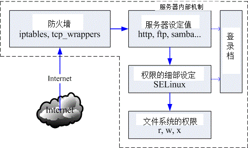
图 7.1-1、网络封包进入主机的流程
1. 经过防火墙的分析：
Linux 系统有内建的防火墙机制，因此你的联机能不能成功，得要先看防火墙的脸色才行。预设的 Linux 防火墙就有两个机制，这两个机制都是独立存在的，因此我们预设就有两层防火墙喔。第一层是封包过滤式的 netfilter 防火墙， 另一个则是透过软件控管的 TCP Wrappers 防火墙。
透过防火墙的管控，我们可以将大部分来自因特网的垃圾联机丢弃，只允许自己开放的服务的联机进入本机而已， 可以达到最基础的安全防护。
要进入 Linux 本机的封包都会先通过 Linux 核心的预设防火墙，就是称为 netfilter. 简单的说，就是 iptables 这个软件所提供的防火墙功能。
为何称为封包过滤呢？因为他主要是分析 TCP/IP 的封包表头来进行过滤的机制，主要分析的是 OSI 的第二、三、四层，主要控制的就是 MAC, IP, ICMP, TCP 与 UDP 的埠口与状态 (SYN, ACK…) 等。详细的资料我们会在第九章防火墙介绍。
通过 netfilter 之后，网络封包会开始接受 Super daemons 及 TCPWrappers 的检验，那个是什么呢？ 说穿了就是 /etc/hosts.allow 与 /etc/hosts.deny 的配置文件功能啰。 这个功能也是针对 TCP 的 Header 进行再次的分析，同样你可以设定一些机制来抵制某些 IP 或 Port ，好让来源端的封包被丢弃或通过检验；
2. 服务 (daemon) 的基本功能：
预设的防火墙是 Linux 的内建功能，但防火墙主要管理的是 MAC, IP, Port 等封包表头方面的信息，如果想要控管某些目录可以进入， 某些目录则无法使用的功能，那就得要透过权限以及服务器软件提供的相关功能了。举例来说，你可以在 httpd.conf 这个配置文件之内规范某些 IP 来源不能使用 httpd 这个服务来取得主机的数据， 那么即使该 IP 通过前面两层的过滤，他依旧无法取得主机的资源喔！但要注意的是， 如果 httpd 这支程序本来就有问题的话，那么 client 端将可直接利用 httpd 软件的漏洞来入侵主机，而不需要取得主机内 root 的密码！因此， 要小心这些启动在因特网上面的软件喔！
3. SELinux 对网络服务的细部权限控制：
为了避免前面一个步骤的权限误用，或者是程序有问题所造成的资安状况，因此 Security Enhanced Linux (安全强化 Linux) 就来发挥它的功能啦！简单的说，SELinux 可以针对网络服务的权限来设定一些规则 (policy) ，让程序能够进行的功能有限， 因此即使使用者的档案权限设定错误，以及程序有问题时，该程序能够进行的动作还是被限制的，即使该程序使用的是 root 的权限也一样。举例来说，前一个步骤的 httpd 真的被 cracker 攻击而让对方取得 root 的使用权，由于 httpd 已经被 SELinux 控制在 /var/www/html 里面，且能够进行的功能已经被规范住了，因此 cracker 就无法使用该程序来进行系统的进一步破坏啰。现在这个 SELinux 一定要开启喔！
4. 使用主机的文件系统资源：
使用浏览器连接到 WWW 主机最主要的目的是什么？当然就是读取主机的 WWW 数据啦！ 那 WWW 资料是啥？就是档案啊！^_！所以，最终网络封包其实是要向主机要求文件系统的数据啦。 我们这里假设你要使用 httpd 这支程序来取得系统的档案数据，但 httpd 默认是由一个系统账号名称为 httpd 来启动的，所以：你的网页数据的权限当然就是要让 httpd 这支程序可以读取才行啊！如果你前面三关的设定都 OK ，最终权限设定错误，使用者依旧无法浏览你的网页数据
5. 登录文件记录
Linux 以及相关的软件都可能还会支持登录文件记录的功能，为了记录历史历程， 以方便管理者在未来的错误查询与入侵检测，良好的分析登录档的习惯是一定要建立的，尤其是 /var/log/messages 与 /var/log/secure 这些个档案！虽然各大主要 Linux distribution 大多有推出适合他们自己的登录文件分析软件，例如 CentOS 的 logwatch ，不过毕竟该软件并不见得适合所有的 distributions ，所以鸟哥尝试自己写了一个 logfile.sh 的 shell script，你可以在底下的网址下载该程序：http://linux.vbird.org/download/index.php?action=detail&fileid=60
7.1.2 常见的攻击手法与相关保护： 猜密码, 漏洞, 社交工程, 程序误用, rootkit, DDoS
我们由图 7.1-1 了解到数据传送到本机时所需要经过的几道防线后，那个权限是最后的关键啦！ 现在你应该比较清楚为何我们常常在基础篇里面一直谈到设定正确的权限可以保护你的主机了吧？ 那么 cracker 是如何透过上述的流程还能够攻击你的系统?
取得帐户信息后猜密码
很多人喜欢用自己的名字来作为帐户信息，因此账号的取得是很容易的！举例来说，如果你的朋友将你的 email address 不小心泄漏出去，例如： dmtsai@your.host.name 之类的样式，那么人家就会知道你有一部主机，名称为 your.host.name，且在这部主机上面会有一个使用者账号，账号名称为 dmtsai ，之后这个坏家伙再利用某些特殊软件例如 nmap 来进行你主机的 port scan 之后，嘿嘿！他就可以开始透过你主机有启动的软件功能来猜你这个账号的密码了！
另外，如果你常常观察你的主机登录文件，那你也会发现如果你的主机有启动 Mail server 的服务时， 你的登录档就会常常出现有些怪家伙尝试以一些奇怪的常见账号在试图猜测你的密码， 举例来说像：admin, administrator, webmaster …. 之类的账号，尝试来窃取你的私人信件。 如果你的主机真的有这类的账号，而且这类的账号还没有良好的密码规划，那就容易『中标』！ 唉！真是麻烦！所以我们常讲， 系统账号千万不能给予密码，容易被猜密码啊！
不过这种攻击方式比较费时，因为目前很多软件都有密码输入次数的限制，如果连续输入三次密码还不能成功的登入， 那该次联机就会被断线！所以，这种攻击方式日益减少，目前偶而还会看到就是了！这也是初级 cracker 会使用的方式之一。 那我们要如何保护呢？基本方式是这样的：
- 减少信息的曝光机会：例如不要将 Email Address 随意散布到 Internet 上头；
- 建立较严格的密码设定规则：包括 /etc/shadow, /etc/login.defs 等档案的设定， 建议你可以参考基础篇内的账号管理那一章来规范你的用户密码变更时间等等， 如果主机够稳定且不会持续加入某些账号时，也可以考虑使用 chattr 来限制账号 (/etc/passwd, /etc/shadow) 的更改；
- 完善的权限设定：由于这类的攻击方式会取得你的某个使用者账号的登入权限， 所以如果你的系统权限设定得宜的话，那么攻击者也仅能取得一般使用者的权限而已，对于主机的伤害比较有限啦！ 所以说，权限设定是重要的；
利用系统的程序漏洞『主动』攻击
代码由于产生问题的大小，有分为 bug (臭虫，可能会造成系统的不稳定或当机) 与 Security (安全问题，程序代码撰写方式会导致系统的权限被恶意者所掌握) 等问题。
当程序的问题被公布后，某些较高阶的 cracker 会尝试撰写一些针对这个漏洞的攻击程序代码.
这种攻击模式是目前最常见的，因为攻击者只要拿到攻击程序就可以进行攻击了， 『而且由攻击开始到取得你系统的 root 权限不需要猜密码， 不需要两分钟，就能够立刻入侵成功』
如果你的主机随时保持在实时更新的阶段， 或者是关闭大部分不需要的程序，那就可以躲避过这个问题。因此，你应该要这样做：
- 关闭不需要的网络服务：开的 port 越少，可以被入侵的管道越少， 一部主机负责的服务越单纯，越容易找出问题点。
- 随时保持更新：这个没话讲！一定要进行的！
- 关闭不需要的软件功能：举例来说，后面会提到的远程登录服务器 SSH 可以提供 root 由远程登录，那么危险的事情当然要给他取消啊！^_^
利用社交工程作欺骗
社交工程 (Social Engineering) 指的其实很简单，就是透过人与人的互动来达到『入侵』的目的！
如何防范呢？
- 追踪对谈者：不要一味的相信对方，你必须要有信心的向上呈报， 不要一时心慌就中了计！
- 不要随意透露账号/密码等信息：最好不要随意在 Internet 上面填写这些数据， 真的很危险的！因为在 Internet 上面，你永远不知道对方屏幕前面坐着的是谁？
利用程序功能的『被动』攻击
由『恶意网站』讲起了。如果你喜欢上网随意浏览的话，那么有的时候可能会连上一些广告很多， 或者是一堆弹出式窗口的网站，这些网站有时还会很好心的『提供你很多好用的软件自动下载与安装』的功能
怎么『浏览器也会有问题？』这是因为很多浏览器会主动的答应对方 WWW 主机所提供的各项程序功能， 或者是自动安装来自对方主机的软件，有时浏览器还可能由于程序发生安全问题， 让对方 WWW 浏览器得以传送恶意代码给你的主机来执行
如何防备啊？当然建立良好的习惯最重要了：
- 随时更新主机上的所有软件：如果你的浏览器是没有问题的， 那对方传递恶意代码时，你的浏览器就不会执行，那自然安全的多啊！
- 较小化软件的功能：举例来说，让你的收信软件不要主动的下载文件， 让你的浏览器在安装某些软件时，要通过你的确认后才安装，这样就比较容易克服一些小麻烦；
- 不要连接到不明的主机：其实鸟哥认为这个才最难！ 因为很多时候我们都用 google 在搜寻问题的解决之道啊，那你如何知道对方是否是骗人的？ 所以，前面两点防备还是很重要的！不要以为没有连接上恶意网站就不会有问题啊！
蠕虫或木马的 rootkit
rootkit 意思是说可以取得 root 权限的一群工具组 (kit)，就如同前面主动攻击程序漏洞的方法一样， rootkit 主要也是透过主机的程序漏洞。不过， rootkit 也会透过社交工程让用户下载、安装 rootkit 软件， 结果让 cracker 得以简单的绑架对方主机啊！
rootkit 还会伪装或者是进行自我复制， 举例来说，很多的 rootkit 本身就是蠕虫或者是木马间谍程序。蠕虫会让你的主机一直发送封包向外攻击， 结果会让你的网络带宽被吃光光，例如 2001-2003 年间的 Nimda, Code Red 等等；至于木马程序 (Trojan Horse) 则会对你的主机进行开启后门 (开一个 port 来让 cracker 主动的入侵)，结果就是….绑架、绑架、绑架！
rootkit 其实挺不好追踪的，因为很多时候他会主动的去修改系统观察的指令， 包括 ls, top, netstat, ps, who, w, last, find 等等，让你看不到某些有问题的程序， 如此一来，你的 Linux 主机就很容易被当成是跳板了！有够危险！那如何防备呢？
- 不要随意安装不明来源的档案或者是不明网站的档案数据；
- 不要让系统有太多危险的指令：例如 SUID/SGID 的程序， 这些程序很可能会造成用户不当的使用，而使得木马程序有机可趁！
- 可以定时以 rkhunter 之类的软件来追查：有个网站提供 rootkit 程序的检查，你可以前往下载与分析你的主机： http://www.rootkit.nl/projects/rootkit_hunter.html
DDoS 攻击法 (Distributed Denial of Service )
分布式阻断服务攻击.
透过分散在各地的僵尸计算机进行攻击， 让你的系统所提供的服务被阻断而无法顺利的提供服务给其他用户的方式。 这种攻击法也很要命，而且方法有很多，最常见的就属 SYN Flood 攻击法了！还记得我们在网络基础里面提到的，当主机接收了一个带有 SYN 的 TCP 封包之后，就会启用对方要求的 port 来等待联机，并且发送出回应封包 (带有 SYN/ACK 旗目标 TCP 封包)，并等待 Client 端的再次回应。如果 cient 端在发送出 SYN 的封包后，却将来自 Server 端的确认封包丢弃，那么你的 Server 端就会一直空等，而且 Client 端可以透过软件功能，在短短的时间内持续发送出这样的 SYN 封包，那么你的 Server 就会持续不断的发送确认封包，并且开启大量的 port 在空等～呵呵！等到全部主机的 port 都启用完毕，那么…..系统就挂了！
更可怕的是，通常攻击主机的一方不会只有一部！他会透过 Internet 上面的僵尸网络 (已经成为跳板，但网站主却没有发现的主机) 发动全体攻击，让你的主机在短时间内就立刻挂点。 这种 DDoS 的攻击手法比较类似『玉石俱焚』的手段， 他不是入侵你的系统，而是要让你的系统无法正常提供服务！ 最常被用来作为阻断式服务的网络服务就是 WWW 了，因为 WWW 通常得对整个 Internet 开放服务。
这种攻击方法也是最难处理的，因为要嘛就得要系统核心有支持自动抵挡 DDoS 攻击的机制， 要嘛你就得要自行撰写侦测软件来判断！
其他
还有一些高竿的攻击法啦，不过那些攻击法都需要有比较高的技术水准，例如 IP 欺骗。他可以欺骗你主机告知该封包来源是来自信任网域，而且透过封包传送的机制， 由攻击的一方持续的主动发送出确认封包与工作指令。如此一来，你的主机可能就会误判该封包确实有响应， 而且是来自内部的主机。
不过我们知道因特网是有路由的，而每部主机在每一个时段的 ACK 确认码都不相同， 所以这个方式要达成可以登入，会比较麻烦，所以说，不太容易发生在我们这些小型主机上面啦！ 不过你还是得要注意一下说：
- 设定规则完善的防火墙：利用 Linux 内建的防火墙软件 iptables 建立较为完善的防火墙，可以防范部分的攻击行为；
- 核心功能：这部份比较复杂，你必须要对系统核心有很深入的了解， 才有办法设定好你的核心网络功能。
- 登录文件与系统监控：你可以透过分析登录文件来了解系统的状况， 另外也可以透过类似 MRTG 之类的监控软件 来实时了解到系统是否有异常，这些工作都是很好的努力方向！
小结语
我们的服务器通常会对内部来源的主机规范的较为宽松，如果你的主机在公司内部， 但是不小心被入侵的话，那么贵公司的服务器是否就会暴露在危险的环境当中了？
在蠕虫很『发达』的年代，我们也会发现只要局域网络里面有一部主机中标，整个局域网络就会无法使用网络了， 因为带宽已经被蠕虫塞爆！
主机防护还是很重要的！不要小看了！提供几个方向给大家思考看看吧：
- 建立完善的登入密码规则限制；
- 完善的主机权限设定；
- 设定自动升级与修补软件漏洞、及移除危险软件；
- 在每项系统服务的设定当中，强化安全设定的项目；
- 利用 iptables, TCPWrappers 强化网络防火墙；
- 利用主机监控软件如 MRTG 与 logwatch 来分析主机状况与登录文件；
7.1.3 主机能作的保护：软件更新、减少网络服务、启动 SELinux
对于开放某些服务的服务器来说，你的防火墙『根本跟屁一样，是没有用的！』怎么说呢？
软件更新的重要性
假设你需要对全世界开放 WWW ，那么提供 WWW 服务的 httpd 这只程序就得要执行，如果 httpd 这只程序有资安方面的问题时，请问防火墙有没有效用？当然没有！因为防火墙原本就得要开放 port 80.
没啥好说的，就是软件持续更新到最新就对了！
你得要注意，你的系统能否更新软件与系统的版本有关！最好使用有持续维护的 Linux 版本（例如 Ubuntu LTS），否则就得手动使用 make 来编译源代码了。
想要了解软件的安全通报，可以参考如下的网站数据喔！
- 台湾计算机危机处理小组(TWCERT)：http://www.cert.org.tw/
- Red Hat 的官方说明：https://www.redhat.com/support/
认识系统服务的重要性
如果能够减少服务器上面的监听埠口， 此时因为服务器端没有可供联机的埠口，客户端当然也就无法联机到服务器端嘛！那么如何限制服务器开启的埠口呢？ 第二章就谈到过了，关闭埠口的方式是透过关闭网络服务。没错啊！所以啰，此时能够减少网络服务就减少，可以避免很多不必要的麻烦。
权限与 SELinux 的辅助
根据网络上面多年来的观察，很多朋友在发生权限不足方面的问题后，都会直接将某个目录直接修订成为 chmod -R 777 /some/path/。 如果这部主机只是测试用的没有上网提供服务，那还好。如果有上网提供某些服务时，那可就伤脑筋了！因为目录的 wx 权限设定一起后， 代表该身份可以进行新增与删除的动作。偏偏你又给 777 (rwxrwxrwx) ，代表所有的人都可以在该目录下进行新增与删除！ 万一不小心某支程序被攻击而被取得操作权，想想看，你的系统不就可能被写入某些可怕的东西了吗？ 所以不要随便设定权限啊！
那如果由于当初规划的账号身份与群组设定的太杂乱，导致无法使用单纯的三种身份的三种权限来设定你的系统时，那该如何是好？ 没关系的，可以透过 ACL 这个好用的东西！ ACL 可以针对单一账号或单一群组进行特定的权限设定，相当好用喔！ 他可以辅助传统 Unix 的权限设定方面的困扰哩。详情请参考基础篇的内容呦！
那如何避免用户乱用系统，乱设定权限呢？这个时候就得要透过 SELinux 来控制了。SELinux 可以在程序与档案之间再加入一道细部的权限控制，因此，即使程序与档案的权限符合了操作动作，但如果程序与档案的 SELinux 类型 (type) 不吻合时，那么该程序就无法读取该档案喔！ 此外，我们的 CentOS 也针对了某些常用的网络服务制订了许多的档案使用规则 (rule)，如果这些规则没有启用， 那么即使权限、SELinux 类型都对了，该网络服务的功能还是无法顺利的运作喔！
随时更新系统软件、限制联机端口以及透过启动 SELinux 来限制网络服务的权限，经过这三个简单的步骤，你的系统将可以获得相当大的保护！当然啦， 后续的防火墙以及系统注册表档分析工作仍是需要进行的。
7.2 网络自动升级软件
除了未来架设防火墙之外，最重要的 Linux 日常管理工作，莫过于软件的升级了！ 不过，如果使用者还得要自己每天观察网络安全通报，并主动去查询各大 distribution 针对这些漏洞来提供升级软件包， 那真是太不人性化了！因此，目前就有很多在线直接更新的机制出现了！有了这些在线直接更新软件的手段与方法， 我们系统管理员在管理主机系统上面，可就轻松的多啰！
7.2.1 如何进行软件升级
通常鸟哥安装好 Linux 之后，会先开启系统默认的防火墙机制，然后第一件事情就是进行全系统更新啦！你的软件如果想要升级，那就得依据当时你安装该软件的方式来进行升级啊！而每种方式都有其适用性 – rpm, tarball, dpkg
由于各家 distributions 在管理系统上都有自己独特的想法，所以在分析 RPM 或 dpkg 软件与方式上面就有所不同， 也就有底下这些不同的在线升级机制啦：
- yum： CentOS 与 Fedora 所常用的自动升级机制，透过 FTP 或 WWW 来进行在线升级以及在线直接安装软件；
- apt： 最早由 debian 这个 distribution 所发展，现在 B2D 也是使用 apt ，同时由于 apt 的可移植性， 所以只要你的 RPM 可以使用 apt 来管理的话，就可以自行建立 apt 服务器来提供其他使用者进行在线安装与升级。
- you： 所谓的 Yast Online Update (YOU) 是由 SuSE 所自行开发出来的在线安装升级方式， 经过注册取得一组账号密码后，就能够使用 you 的机制来进行在线升级。不过如果是免费的版本， 则仅有 60 天的试用期！
- urpmi： 这个则是 Mandriva 所提供的在线升级机制！
每个 distribution 可以使用的在线升级机制都不相同』的啊！所以请参考你的 distribution 所提供的文件来进行在线升级的设定
SOMEDAY 7.2.2 CentOS 的 yum 软件更新、映像站使用的原理
SOMEDAY 7.2.3 yum 的使用： 安装, 软件群组, 全系统更新
7.2.4 挑选特定的映射站：修改 yum 配置文件与清除 yum 快取
7.3 限制联机埠口 (port)
仔细的检查自己系统上面的端口到底开了多少个，并且予以严格的管理，才能够降低被攻击的可能性
7.3.1 什么是 port
当妳启动一个网络服务，这个服务会依据 TCP/IP 的相关通讯协议启动一个埠口在进行监听， 那就是 TCP/UDP 封包的 port (埠口) 了。我们从第二章也知道网络联机是双向的，服务器端得要启动一个监听的埠口， 客户端得要随机启动一个埠口来接收响应的数据才行。
将第二章中与 port 有关的资料给她汇整一下:
- 服务器端启动的监听埠口所对应的服务是固定的：
- 客户端启动程序时，随机启动一个大于 1024以上的埠口：
- 一部服务器可以同时提供多种服务：
- 共 65536 个 port：由第二章的 TCP/UDP 表头数据中，就知道 port 占用 16 个位，因此一般主机会有 65536 个 port，而这些 port 又分成两个部分，以 port 1024 作区隔：
- 只有 root 才能启动的保留的 port：在小于 1024 的埠口，都是需要以 root 的身份才能启动的，这些 port 主要是用于一些常见的通讯服务，在 Linux 系统下，常见的协议与 port 的对应是记录在 /etc/services 里面的。
- 大于 1024 用于 client 端的 port：在大于 1024 以上的 port 主要是作为 client 端的软件激活的 port 。
- 是否需要三向交握：建立可靠的联机服务需要使用到 TCP 协议，也就需要所谓的三向交握了，如果是非面向连接的服务，例如 DNS 与视讯系统， 那只要使用 UDP 协议即可。
- 通讯协议可以启用在非正规的 port
- 所谓的 port 的安全性：真正影响网络安全的并不是 port ，而是启动 port 的那个软件 (程序)！
7.3.2 埠口的观察： netstat, nmap
『服务』跟『 port 』对应的档案是哪一个？– /etc/services
常用来观察 port 的则有底下两个程序：
- netstat：在本机上面以自己的程序监测自己的 port；
- nmap：透过网络的侦测软件辅助，可侦测非本机上的其他网络主机，但有违法之虞。
netstat
这个指令的使用方法在 第五章常用网络功能指令介绍当中提过了， 底下我们仅提供如何使用这个工具的方法
[root@www ~]# netstat -tunl ctive Internet connections (only servers) Proto Recv-Q Send-Q Local Address Foreign Address State tcp 0 0 0.0.0.0:111 0.0.0.0:* LISTEN tcp 0 0 0.0.0.0:22 0.0.0.0:* LISTEN tcp 0 0 127.0.0.1:25 0.0.0.0:* LISTEN ....(底下省略)....
上面说明了我的主机至少有启动 port 111, 22, 25 等，而且观察各联机接口，可发现 25 为 TCP 埠口，但只针对 lo 内部循环测试网络提供服务，因特网是连不到该埠口的。至于 port 22 则有提供因特网的联机功能。
[root@www ~]# netstat -tun Active Internet connections (w/o servers) Proto Recv-Q Send-Q Local Address Foreign Address State tcp 0 52 192.168.1.100:22 192.168.1.101:2162 ESTABLISHED
从上面的数据来看，我的本地端服务器 (Local Address, 192.168.1.100) 目前仅有一条已建立的联机，那就是与 192.168.1.101 那部主机连接的联机，并且联机方线是由对方连接到我主机的 port 22 来取用我服务器的服务吶！
如果想要将已经建立，或者是正在监听当中的网络服务关闭的话，最简单的方法当然就是找出该联机的 PID， 然后将他 kill 掉即可
[root@www ~]# netstat -tunp Active Internet connections (w/o servers) Proto Recv-Q Send-Q Local Address Foreign Address State PID/P name tcp 0 52 192.168.1.100:22 192.168.1.101:2162 ESTABLISHED 1342/0
如上面的范例，我们可以找出来该联机是由 sshd 这个程序来启用的，并且他的 PID 是 1342， 希望你不要心急的用 killall 这个指令，否则容易删错人 (因为你的主机里面可能会有多个 sshd 存在)， 应该要使用 kill 这个指令才对喔！
[root@www ~]# kill -9 1342
nmap
nmap (注1)的软件说明之名称为：『Network exploration tool and security / port scanner』，顾名思义， 这个东西是被系统管理员用来管理系统安全性查核的工具！他的具体描述当中也提到了， nmap 可以经由程序内部自行定义的几个 port 对应的指纹数据，来查出该 port 的服务为何，所以我们也可以藉此了解我们主机的 port 到底是干嘛用的！在 CentOS 里头是有提供 nmap 的， 如果你没有安装，那么就使用 yum 去安装他吧！
[root@www ~]# nmap [扫瞄类型] [扫瞄参数] [hosts 地址与范围]
选项与参数：
[扫瞄类型]：主要的扫瞄类型有底下几种：
-sT：扫瞄 TCP 封包已建立的联机 connect() ！
-sS：扫瞄 TCP 封包带有 SYN 卷标的数据
-sP：以 ping 的方式进行扫瞄
-sU：以 UDP 的封包格式进行扫瞄
-sO：以 IP 的协议 (protocol) 进行主机的扫瞄
[扫瞄参数]：主要的扫瞄参数有几种：
-PT：使用 TCP 里头的 ping 的方式来进行扫瞄，可以获知目前有几部计算机存活(较常用)
-PI：使用实际的 ping (带有 ICMP 封包的) 来进行扫瞄
-p ：这个是 port range ，例如 1024-, 80-1023, 30000-60000 等等的使用方式
[Hosts 地址与范围]：这个有趣多了，有几种类似的类型
192.168.1.100 ：直接写入 HOST IP 而已，仅检查一部；
192.168.1.0/24 ：为 C Class 的型态，
192.168.*.* ：嘿嘿！则变为 B Class 的型态了！扫瞄的范围变广了！
192.168.1.0-50,60-100,103,200 ：这种是变形的主机范围啦！很好用吧！
# 范例一：使用预设参数扫瞄本机所启用的 port (只会扫瞄 TCP)
[root@www ~]# yum install nmap
[root@www ~]# nmap localhost
PORT STATE SERVICE
22/tcp open ssh
25/tcp open smtp
111/tcp open rpcbind
# 在预设的情况下，nmap 仅会扫瞄 TCP 的协议喔！
在预设的情况下 nmap 仅会帮你分析 TCP 这个通讯协议而已，像上面这个例子的输出结果。但优点是顺道也将开启该埠口的服务也列出来了. 如果想要同时分析 TCP/UDP 这两个常见的通讯协议:
# 范例二：同时扫瞄本机的 TCP/UDP 埠口 [root@www ~]# nmap -sTU localhost PORT STATE SERVICE 22/tcp open ssh 25/tcp open smtp 111/tcp open rpcbind 111/udp open rpcbind <==会多出 UDP 的通讯协议埠口！
如果你想要了解一下到底有几部主机活在你的网络当中时，则可以这样做：
# 范例三：透过 ICMP 封包的检测，分析区网内有几部主机是启动的 [root@www ~]# nmap -sP 192.168.1.0/24 Starting Nmap 5.21 ( http://nmap.org ) at 2011-07-20 17:05 CST Nmap scan report for www.centos.vbird (192.168.1.100) Host is up. Nmap scan report for 192.168.1.101 <==这三行讲的是 192.168.101 的范例！ Host is up (0.00024s latency). MAC Address: 00:1B:FC:58:9A:BB (Asustek Computer) Nmap scan report for 192.168.1.254 Host is up (0.00026s latency). MAC Address: 00:0C:6E:85:D5:69 (Asustek Computer) Nmap done: 256 IP addresses (3 hosts up) scanned in 3.81 seconds
看到否？鸟哥的环境当中有三部主机活着吶 (Host is up)！并且该 IP 所对应的 MAC 也会被记录下来
如果你还想要将各个主机的启动的 port 作一番侦测的话，那就得要使用：
[root@www ~]# nmap 192.168.1.0/24
之后你就会看到一堆 port number 被输出到屏幕上啰～如果想要随时记录整个网段的主机是否不小心开放了某些服务， 嘿嘿！利用 nmap 配合数据流重导向 (>, >> 等) 来输出成为档案， 那随时可以掌握住您局域网络内每部主机的服务启动状况啊！ ^_^
Note: 请特别留意，这个 nmap 的功能相当的强大，也是因为如此，所以很多刚在练习的黑客会使用这个软件来侦测别人的计算机。 这个时候请您特别留意，目前很多的人已经都有『特别的方式』来进行登录的工作！例如以 TCPWrappers (/etc/hosts.allow, /etc/hosts.deny) 的功能来记录曾经侦测过该 port 的 IP！ 这个软件用来『侦测自己机器的安全性』是很不错的一个工具，但是如果用来侦测别人的主机， 可是会『吃上官司』的！
7.3.3 埠口与服务的启动/关闭及开机时状态设定： 服务类型, 开机启动
kill 这个指令通常具有强制关闭某些程序的功能，但我们想要正常的关闭该程序啊！ 所以，就利用系统给我们的 script 来关闭
同时，我们就得再来稍微复习一下，一般传统的服务有哪几种类型？
stand alone 与 super daemon
我们在基础学习篇内谈到，在一般正常的 Linux 系统环境下，服务的启动与管理主要有两种方式：
- Stand alone:
顾名思义，stand alone 就是直接执行该服务的执行档，让该执行文件直接加载到内存当中运作， 用这种方式来启动可以让该服务具有较快速响应的优点。一般来说，这种服务的启动 script 都会放置到 etc/init.d 这个目录底下，所以你通常可以使用：『 /etc/init.d/sshd restart 』之类的方式来重新启动这种服务； - Super daemon:
用一个超级服务作为总管，来统一管理某些特殊的服务。在 CentOS 6.x 里面使用的则是 xinetd 这个 super daemon 啊！这种方式启动的网络服务虽然在响应上速度会比较慢， 不过，可以透过 super daemon 额外提供一些控管，例如控制何时启动、何时可以进行联机、 那个 IP 可以连进来、是否允许同时联机等等。通常个别服务的配置文件放置在 etc/xinetd.d 当中，但设定完毕后需要重新以『 /etc/init.d/xinetd restart 』重新来启动才行！
关于更详细的服务说明，请参考基础篇的认识服务一文
如果我想要将我系统上面的 port 111 关掉的话， 那应该如何关闭呢？最简单的作法就是先找出那个 port 111 的启动程序:
[root@www ~]# netstat -tnlp | grep 111 tcp 0 0 0.0.0.0:111 0.0.0.0:* LISTEN 990/rpcbind tcp 0 0 :::111 :::* LISTEN 990/rpcbind # 原来用的是 rpcbind 这个服务程序！ [root@www ~]# which rpcbind /sbin/rpcbind # 找到档案后，再以 rpm 处理处理 [root@www ~]# rpm -qf /sbin/rpcbind rpcbind-0.2.0-8.el6.x86_64 # 找到了！就是这个软件！所以将他关闭的方法可能就是： [root@www ~]# rpm -qc rpcbind | grep init /etc/rc.d/init.d/rpcbind [root@www ~]# /etc/init.d/rpcbind stop
透过上面的这个分析的流程，你可以利用系统提供的很多方便的工具来达成某个服务的关闭！ 为啥这么麻烦？不是利用 kill -9 990 就可以删掉该服务了吗？ 是没错啦！不过，你知道该服务是做啥用的吗？你知道将他关闭之后，你的系统会出什么问题吗？ 如果不知道的话，那么利用上面的流程不就可以找出该服务软件，再利用 rpm 查询功能， 不就能够知道该服务的作用了？所以说，这个方式还是对您会有帮助的
例题： 我们知道系统的 Telnet 服务通常是以 super daemon 来控管的，请您启动您系统的 telnet 试看看。
答： 要启动 telnet 首先必须要已经安装了 telnet 的服务器才行，所以请先以 rpm 查询看看是否有安装 telnet-server 呢？ 『rpm -qa | grep telnet-server』如果没有安装的话，请利用原版光盘来安装，或者使用『yum install telnet-server』 安装一下先； 由于是 super daemon 控管，所以请编辑 /etc/xinetd.d/telnet 这个档案，将其中的『disable = yes』改成 『disable = no』之后以『/etc/init.d/xinetd restart』重新启动 super daemon 吧！ 利用 netstat -tnlp 察看是否有启动 port 23 呢？
预设启动的服务
如果你想要在开机的时候就启动或不启动某项服务时，那就得要了解一下基础学习篇里面谈到的开机流程管理的内容啦！在 Unix like 的系统当中我们都是透过 run level 来设定某些执行等级需要启动的服务，以 Red Hat 系统来说，这些 run level 启动的数据都是放置在 etc/rc.d/rc[0-6].d 里面的，那如何管理该目录下的 script 呢？
必须要熟悉 chkconfig 或 Red Hat 系统的 ntsysv 这几个指令才行！
例题： (1)如何查阅 rpcbind 这个程序一开机就执行？ (2)如果开机就执行，如何将他改为开机时不要启动？ (3)如何立即关闭这个 rpcbind 服务？
答：
- 可以透过『 chkconfig –list | grep rpcbind 』与『 runlevel 』确认一下你的环境与 rpcbind 是否启动？
- 如果有启动，可透过『 chkconfig –level 35 rpcbind off 』来设定开机时不要启动；
- 可以透过『 /etc/init.d/rpcbind stop 』来立即关闭他！
很多的系统服务是必须要存在的，否则系统将会出问题. 举例来说，那个保持系统可以具有工作排程的 crond 服务就一定要存在，而那个记录系统状况的 rsyslogd 也当然要存在. 所以啰，除非你知道每个服务的目的是啥，否则不要随便关闭该服务。 底下鸟哥列出几个常见的必须要存在的系统服务给大家参考:
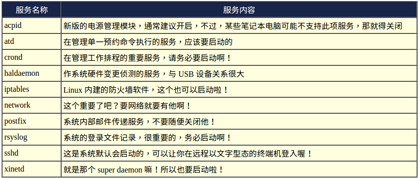
只要不是网络服务，你都可以保留他！如果是网络服务呢？那…鸟哥建议你不知道的服务就先关闭他！ 以后我们谈到每个相关的服务时，再一个一个打开即可。
7.3.4 安全性考虑-关闭网络服务端口
举个简单的例子来处理，将你的网络服务关闭就好，其他在系统内部的服务，就暂时保留吧！
例题： 找出目前系统上面正在运作中的服务，并且找到相对应的启动脚本 (在 /etc/init.d 内的档名之意)。
答： 要找出服务，就利用 netstat -tunlp 即可找到！以鸟哥从第一章安装的示范机为例，鸟哥目前启动的网络服务有底下这些：
[root@www ~]# netstat -tlunp Active Internet connections (only servers) Proto Local Address State PID/Program name tcp 0.0.0.0:22 LISTEN 1176/sshd tcp 127.0.0.1:25 LISTEN 1252/master tcp 0.0.0.0:37753 LISTEN 1008/rpc.statd tcp :::22 LISTEN 1176/sshd tcp :::23 LISTEN 1851/xinetd tcp ::1:25 LISTEN 1252/master tcp :::38149 LISTEN 1008/rpc.statd tcp 0.0.0.0:111 LISTEN 1873/rpcbind tcp 0 :::111 LISTEN 1873/rpcbind udp 0 0.0.0.0:111 1873/rpcbind udp 0 0.0.0.0:776 1873/rpcbind udp 0 :::111 1873/rpcbind udp 0 :::776 1873/rpcbind udp 0.0.0.0:760 1008/rpc.statd udp 0.0.0.0:52525 1008/rpc.statd udp :::52343 1008/rpc.statd # 上述的输出鸟哥有稍微简化一些喔，所以有些字段不见了。 # 这个重点只是要展现出最后一个字段而已啦！
看起来总共有 sshd, master, rpc.statd, xinetd, rpcbind 等这几个服务，对照前一小节的数据内容来看， master (port 25) [ME: mail smtp service], sshd 不能关掉，那么其他的就予以关闭
透过前两个小节的介绍，使用 which 与 rpm 搜寻吧！举例来说， rpc.statd 的启动脚本在：『rpm -qc $(rpm -qf $(which rpc.statd) ) | grep init』这样找，结果是在『/etc/rc.d/init.d/nfslock” 这里，因此最终的结果如下：
rpc.statd /etc/rc.d/init.d/nfs
/etc/rc.d/init.d/nfslock
/etc/rc.d/init.d/rpcgssd
/etc/rc.d/init.d/rpcidmapd
/etc/rc.d/init.d/rpcsvcgssd
xinetd /etc/rc.d/init.d/xinetd
rpcbind /etc/rc.d/init.d/rpcbind
接下来就是将该服务关闭，并且设定为开机不启动吧！
[root@www ~]# vim bin/closedaemon.sh for daemon in nfs nfslock rpcgssd rpcidmapd rpcsvcgssd xinetd rpcbind do chkconfig $daemon off /etc/init.d/$daemon stop done [root@www ~]# sh bin/closedaemon.sh
做完上面的例子之后，你再次下达 netstat -tlunp 之后，会得到仅剩 port 25, 22 而已！ 如此一来，绝大部分服务器用不到的服务就被你关闭，而且即使重新启动也不会被启动
7.4 SELinux 管理原则
SELinux 使用所谓的委任式访问控制 (Mandatory Access Control, MAC) ，他可以针对特定的程序与特定的档案资源来进行权限的控管！ 也就是说，即使你是 root ，那么在使用不同的程序时，你所能取得的权限并不一定是 root ，而得要看当时该程序的设定而定。 如此一来，我们针对控制的『主体』变成了『程序』而不是『使用者』喔！因此，这个权限的管理模式就特别适合网络服务的『程序』了！ 因为，即使你的程序使用 root 的身份去启动，如果这个程序被攻击而被取得操作权，那该程序能作的事情还是有限的， 因为被 SELinux 限制住了能进行的工作
举例来说， WWW 服务器软件的达成程序为 httpd 这支程序， 而默认情况下， httpd 仅能在 var/www 这个目录底下存取档案，如果 httpd 这个程序想要到其他目录去存取数据时，除了规则设定要开放外，目标目录也得要设定成 httpd 可读取的模式 (type) 才行喔！限制非常多！ 所以，即使不小心 httpd 被 cracker 取得了控制权，他也无权浏览 /etc/shadow 等重要的配置文件喔！
7.4.1 SELinux 的运作模式： 安全性本文, domain/type
再次的重复说明一下，SELinux 是透过 MAC 的方式来控管程序，他控制的主体是程序， 而目标则是该程序能否读取的『档案资源』！所以先来说明一下这些咚咚的相关性啦！
- 主体 (Subject)：
SELinux 主要想要管理的就是程序，因此你可以将『主体』跟本章谈到的 process 划上等号； - 目标 (Object)：
主体程序能否存取的『目标资源』一般就是文件系统。因此这个目标项目可以等文件系统划上等号； - 政策 (Policy)：
由于程序与档案数量庞大，因此 SELinux 会依据某些服务来制订基本的存取安全性政策。这些政策内还会有详细的规则 (rule) 来指定不同的服务开放某些资源的存取与否。在目前的 CentOS 6.x 里面仅有提供两个主要的政策如下，一般来说，使用预设的 target 政策即可。- targeted：针对网络服务限制较多，针对本机限制较少，是预设的政策；
- mls：完整的 SELinux 限制，限制方面较为严格。
- 安全性本文 (security context)：
我们刚刚谈到了主体、目标与政策面，但是主体能不能存取目标除了要符合政策指定之外，主体与目标的安全性本文必须一致才能够顺利存取。 这个安全性本文 (security context) 有点类似文件系统的 rwx 啦！安全性本文的内容与设定是非常重要的！ 如果设定错误，你的某些服务(主体程序)就无法存取文件系统(目标资源)，当然就会一直出现『权限不符』的错误讯息了！
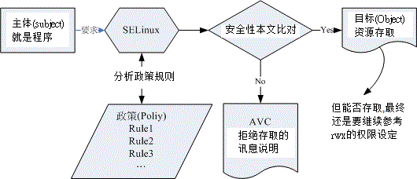
图 7.4-1、SELinux 运作的各组件之相关性(本图参考小州老师的上课讲义)
上图的重点在『主体』如何取得『目标』的资源访问权限！ 由上图我们可以发现，(1)主体程序必须要通过 SELinux 政策内的规则放行后，就可以与目标资源进行安全性本文的比对， (2)若比对失败则无法存取目标，若比对成功则可以开始存取目标。问题是，最终能否存取目标还是与文件系统的 rwx 权限设定有关喔！如此一来，加入了 SELinux 之后，出现权限不符的情况时，你就得要一步一步的分析可能的问题了！
安全性本文 (Security Context)
这个安全性本文你就将他想成 SELinux 内必备的 rwx 就是了！这样比较好理解
安全性本文存在于主体程序中与目标档案资源中。程序在内存内，所以安全性本文可以存入是没问题。 那档案的安全性本文是记录在哪里呢？事实上，安全性本文是放置到档案的 inode 内的，因此主体程序想要读取目标档案资源时，同样需要读取 inode ， 这 inode 内就可以比对安全性本文以及 rwx 等权限值是否正确，而给予适当的读取权限依据。
那么安全性本文到底是什么样的存在呢？我们先来看看 /root 底下的档案的安全性本文好了。 观察安全性本文可使用『 ls -Z 』去观察如下：(注意：你必须已经启动了 SELinux 才行！若尚未启动，这部份请稍微看过一遍即可。底下会介绍如何启动 SELinux 喔！)
[root@www ~]# ls -Z -rw-------. root root system_u:object_r:admin_home_t:s0 anaconda-ks.cfg drwxr-xr-x. root root unconfined_u:object_r:admin_home_t:s0 bin -rw-r--r--. root root system_u:object_r:admin_home_t:s0 install.log -rw-r--r--. root root system_u:object_r:admin_home_t:s0 install.log.syslog # 上述特殊字体的部分，就是安全性本文的内容！
如上所示，安全性本文主要用冒号分为三个字段 (最后一个字段先略过不看)，这三个字段的意义为：
Identify:role:type 身份识别:角色:类型
- 身份识别 (Identify)： 相当于账号方面的身份识别！主要的身份识别则有底下三种常见的类型：
- root：表示 root 的账号身份，如同上面的表格显示的是 root 家目录下的数据啊！
- systemu：表示系统程序方面的识别，通常就是程序啰；
- useru：代表的是一般使用者账号相关的身份。
- 角色 (Role)： 透过角色字段，我们可以知道这个数据是属于程序、档案资源还是代表使用者。一般的角色有：
- objectr： 代表的是档案或目录等档案资源，这应该是最常见的啰；
- systemr： 代表的就是程序啦！不过，一般使用者也会被指定成为 systemr 喔！
- 类型 (Type)： 在预设的 targeted 政策中， Identify 与 Role 字段基本上是不重要的！重要的在于这个类型 (type) 字段！ 基本上，一个主体程序能不能读取到这个档案资源，与类型字段有关！而类型字段在档案与程序的定义不太相同，分别是：
- type：在档案资源 (Object) 上面称为类型 (Type)；
- domain：在主体程序 (Subject) 则称为领域 (domain) 了！
domain 需要与 type 搭配，则该程序才能够顺利的读取档案资源啦！
程序与档案 SELinux type 字段的相关性
这三个字段如何利用呢？首先我们来瞧瞧主体程序在这三个字段的意义为何！透过身份识别与角色字段的定义， 我们可以约略知道某个程序所代表的意义喔！基本上，这些对应资料在 targeted 政策下的对应如下：
| 身份识别 | 角色 | 该对应在 targeted 的意义 |
| root | systemr | 代表供 root 账号登入时所取得的权限 |
| systemu | systemr | 由于为系统账号，因此是非交谈式的系统运作程序 |
| useru | systemr | 一般可登入用户的程序啰！ |
但就如上所述，其实最重要的字段是类型字段，主体与目标之间是否具有可以读写的权限，与程序的 domain 及档案的 type 有关！
这两者的关系我们可以使用达成 WWW 服务器功能的 httpd 这支程序与 /var/www/html 这个网页放置的目录来说明。
[root@www ~]# yum install httpd [root@www ~]# ll -Zd /usr/sbin/httpd /var/www/html -rwxr-xr-x. root root system_u:object_r:httpd_exec_t:s0 /usr/sbin/httpd drwxr-xr-x. root root system_u:object_r:httpd_sys_content_t:s0 /var/www/html # 两者的角色字段都是 object_r ，代表都是档案！而 httpd 属于 httpd_exec_t 类型， # /var/www/html 则属于 httpd_sys_content_t 这个类型！
httpd 属于 httpdexect 这个可以执行的类型，而 /var/www/html 则属于 httpdsyscontentt 这个可以让 httpd 领域 (domain) 读取的类型。文字看起来不太容易了解吧！我们使用图示来说明这两者的关系！
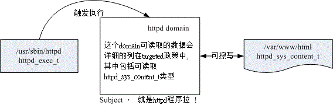
图 7.4-2、主体程序取得的 domain 与目标档案资源的 type 相互关系
上图的意义我们可以这样看的：
- 首先，我们触发一个可执行的目标档案，那就是具有 httpdexect 这个类型的 /usr/sbin/httpd
- 该档案的类型会让这个档案所造成的主体程序 (Subject) 具有 httpd 这个领域 (domain)， 我们的政策针对这个领域已经制定了许多规则，其中包括这个领域可以读取的目标资源类型；
- 由于 httpd domain 被设定为可以读取 httpdsyscontentt 这个类型的目标档案 (Object)， 因此你的网页放置到 var/www/html 目录下，就能够被 httpd 那支程序所读取了；
- 但最终能不能读到正确的资料，还得要看 rwx 是否符合 Linux 权限的规范！
上述的流程告诉我们几个重点，第一个是政策内需要制订详细的 domain/type 相关性；第二个是若档案的 type 设定错误， 那么即使权限设定为 rwx 全开的 777 ，该主体程序也无法读取目标档案资源的啦！不过如此一来， 也就可以避免用户将他的家目录设定为 777 时所造成的权限困扰。
7.4.2 SELinux 的启动、关闭与观察： getenforce, setenforce
并非所有的 Linux distributions 都支持 SELinux 的，所以你必须要先观察一下你的系统版本为何！
目前 SELinux 支持三种模式，分别如下：
- enforcing：强制模式，代表 SELinux 运作中，且已经正确的开始限制 domain/type 了；
- permissive：宽容模式：代表 SELinux 运作中，不过仅会有警告讯息并不会实际限制 domain/type 的存取。这种模式可以运来作为 SELinux 的 debug 之用；
- disabled：关闭，SELinux 并没有实际运作。
怎么知道目前的 SELinux 模式呢？
[root@www ~]# getenforce Enforcing <==诺！就显示出目前的模式为 Enforcing 啰！
另外，我们又如何知道 SELinux 的政策 (Policy) 为何呢？这时可以来观察配置文件啦：
[root@www ~]# vim /etc/selinux/config SELINUX=enforcing <==调整 enforcing|disabled|permissive SELINUXTYPE=targeted <==目前仅有 targeted 与 mls
SOMEDAY SELinux 的启动与关闭
上面是默认的政策与启动的模式！你要注意的是，如果改变了政策则需要重新启动；如果由 enforcing 或 permissive 改成 disabled ，或由 disabled 改成其他两个，那也必须要重新启动。这是因为 SELinux 是整合到核心里面去的， 你只可以在 SELinux 运作下切换成为强制 (enforcing) 或宽容 (permissive) 模式，不能够直接关闭 SELinux 的！ 如果刚刚你发现 getenforce 出现 disabled 时，请到上述档案修改成为 enforcing 然后重新启动吧！
[ME: SELinux is not namespaced, so individual containers cannot have their own separate SELinux policies. SELinux will always appear to be "disabled" in a container, though it is running on the host.
If your application requires SELinux, you cannot use it inside Docker. You will need to use a regular virtual machine. link]
SOMEDAY 7.4.3 SELinux type 的修改： chcon, restorecon, semanage
SOMEDAY 7.4.4 SELinux 政策内的规则布尔值修订： seinfo, sesearch, getsebool, setsebool
SOMEDAY 7.4.5 SELinux 登录文件记录所需服务-以 httpd 为范例： setroubleshoot, sealert
SOMEDAY 7.5 被攻击后的主机修复工作
7.5.1 网管人员应具备的技能
7.5.2 主机受攻击后复原工作流程
7.6 重点回顾
- 要管制登入服务器的来源主机，得要了解网络封包的特性，这主要包括 TCP/IP 的封包协议， 以及重要的 Socket Pair ，亦即来源与目标的 IP 与 port 等。在 TCP 封包方面，则还得了解 SYN/ACK 等封包状态；
- 网络封包要进入我们 Linux 本机，至少需要通过 (1)防火墙 (2)服务本身的管理 (3)SELinux (4)取得档案的 rwx 权限等步骤；
- 主机的基本保护之一，就是拥有正确的权限设定。而复杂的权限设定可以利用 ACL 或者是 SELinux 来辅助；
- 关闭 SELinux 可在 /etc/selinux/config 档案内设定，亦可在核心功能中加入 selinux=0 的项目；
- rootkit 为一种取得 root 的工具组，你可以利用 rkhunter 来查询你主机是否被植入 rootkit；
- 网管人员应该注意在员工的教育训练还有主机的完善备份方案上面；
- 一些所谓的黑客软件，几乎都是透过你的 Linux 上面的软件漏洞来攻击 Linux 主机的；
- 软件升级是预防被入侵的最有效方法之一；
- 良好的登录档分析习惯可以在短时间内发现系统的漏洞，并加以修复。
SOMEDAY 7.7 本章习题
SOMEDAY 7.8 参考数据与延伸阅读
7.9 针对本文的建议：http://phorum.vbird.org/viewtopic.php?p=114062
第八章、路由观念与路由器设定
(http://cn.linux.vbird.org/linux_server/0230router.php)
本章应该是第二章网络基础的延伸，将网络的设定延伸到整个区网的路由器上而已。那何时会用到路由器？ 如果你的环境中需要将整批 IP 再区隔出不同的广播区段时，那么就得要透过路由器的封包转递能力了。 本章是下一章防火墙与 NAT 的基础.
8.1 路由
最大的功能就是在帮我们规划网络封包的传递方式与方向。至于路由的观察则可以使用 route 这个指令来查阅与设定。
8.1.1 路由表产生的类型
每一部主机都有自己的路由表， 也就是说，你必须要透过你自己的路由表来传递你主机的封包到下一个路由器上头。 若传送出去后，该封包就得要透过下一个路由器的路由表来传送了，此时与你自己主机的路由表就没有关系啦！ 所以说，如果网络上面的某一部路由器设定错误，那…封包的流向就会发生很大的问题。 我们就得要透过 traceroute 来尝试了解一下每个 router 的封包流向
[ME: apt-get install net-tools before using ifconfig, netstat, link]
以底下这个路由表来说明：
[root@www ~]# route -n Kernel IP routing table Destination Gateway Genmask Flags Metric Ref Use Iface 192.168.1.0 0.0.0.0 255.255.255.0 U 0 0 0 eth0 <== 1 169.254.0.0 0.0.0.0 255.255.0.0 U 1002 0 0 eth0 <== 2 0.0.0.0 192.168.1.254 0.0.0.0 UG 0 0 0 eth0 <== 3
依据网络接口产生的 IP 而存在的路由：
你主机上面有几个网络接口的存在时，该网络接口就会存在一个路由才对。
手动或预设路由(default route)：
可以使用 route 这个指令手动的给予额外的路由设定，例如那个预设路由 (0.0.0.0/0) 就是额外的路由。 使用 route 这个指令时，最重要的一个概念是：『你所规划的路由必须要是你的装置 (如 eth0) 或 IP 可以直接沟通 (broadcast) 的情况』才行。
举例来说，以上述的环境来看， 我的环境里面仅有 192.168.1.100 及 192.168.2.100 ，那我如果想要连接到 192.168.5.254 这个路由器时， 下达：
[root@www ~]# route add -net 192.168.5.0 \ > netmask 255.255.255.0 gw 192.168.5.254 SIOCADDRT: No such process
系统就会响应没有办法连接到该网域，因为我们的网络接口与 192.168.5.0/24 根本就没有关系嘛！ 那如果 192.168.5.254 真的是在我们的实体网络连接上，并且与我们的 eth0 连接在一起，那其实你应该是这样做：
[root@www ~]# route add -net 192.168.5.0 \ > netmask 255.255.255.0 dev eth0 [root@www ~]# route -n Kernel IP routing table Destination Gateway Genmask Flags Metric Ref Use Iface 192.168.5.0 0.0.0.0 255.255.255.0 U 0 0 0 eth0 192.168.2.0 0.0.0.0 255.255.255.0 U 0 0 0 eth1 192.168.1.0 0.0.0.0 255.255.255.0 U 0 0 0 eth0 169.254.0.0 0.0.0.0 255.255.0.0 U 1002 0 0 eth0 0.0.0.0 192.168.1.254 0.0.0.0 UG 0 0 0 eth0
这样你的主机就会直接用 eth0 这个装置去尝试连接 192.168.5.254 了！ 另外，上面路由输出的重点其实是那个『Flags 的 G 』了！因为那个 G 代表使用外部的装置作为 Gateway 的意思！而那个 Gateway (192.168.1.254) 必须要在我们的已存在的路由环境中。 这可是很重要的概念
8.1.2 一个网卡绑多个 IP：IP Alias 的测试功能
我们在第五章的 ifconfig 指令里面谈过 eth0:0 这个装置吧？这个装置可以在原本的 eth0 上面模拟出一个虚拟接口出来，以让我们原本的网络卡具有多个 IP ，具有多个 IP 的功能就被称为 IP Alias 了。而这个 eth0:0 的装置可以透过 ifconfig 或 ip 这两个指令来达成， 关于这两个指令的用途请翻回去之前的章节阅读
IP Alias 最大的用途就是可以让你用来『应急』！ 怎么说呢？我们就来聊一聊他的几个常见的用途好了：
- 测试用：
现在使用 IP 分享器的朋友很多吧，而 IP 分享器的设定通常是使用 WWW 接口来提供的。这个 IP 分享器通常会给予一个私有 IP 亦即是 192.168.0.1 来让用户开启 WWW 接口的浏览。问题来了，那你要如何连接上这部 IP 分享器呢？嘿嘿！在不更动既有的网络环境下，你可以直接利用：[root@www ~]# ifconfig [device] [ IP ] netmask [netmask ip] [up|down] [root@www ~]# ifconfig eth0:0 192.168.0.100 netmask 255.255.255.0 up
来建立一个虚拟的网络接口，这样就可以立刻连接上 IP 分享器了，也不会更动到你原本的网络参数设定值哩！
[ME: 例如要设置一部新的 router，它的默认出厂 IP 是 192.168.0.1，而 notebook 的 IP 已经设置为 10.0.0.2，此时就可以使用 IP Alias 仿照上面的例子增加一个 IP 192.168.0.100 来连接这部 router 进行设置] - 在一个实体网域中含有多个 IP 网域：
另外，如果像是在补习班或者是学校单位的话，由于原本的主机网络设定最好不要随便修改， 那如果要让同学们大家互通所有的计算机信息时，就可以让每个同学都透过 IP Alias 来设定同一网域的 IP ， 如此大家就可以在同一个网段内进行各项网络服务的测试了，很不错吧！ - 既有设备无法提供更多实体网卡时：
如果你的这部主机需要连接多个网域，但该设备却无法提供安装更多的网卡时，你只好勉为其难的使用 IP Alias 来提供不同网段的联机服务了！
Note: 所有的 IP Alias 都是由实体网卡仿真来的，所以当要启动 eth0:0 时，eth0 必须要先被启动才行。而当 eth0 被关闭后，所以 eth0:n 的模拟网卡将同时也被关闭。
基本上，除非有特殊需求，否则建议你要有多个 IP 时，最好在不同的网卡上面达成，如果你真的要使用 IP Alias 时，那么如何在开机的时候就启动 IP alias 呢？方法有很多啦！包括将上面用 ifconfig 启动的指令写入 /etc/rc.d/rc.local 档案中 (但使用 /etc/init.d/network restart 时，该 IP alias 无法被重新启动)， 但鸟哥个人比较建议使用如下的方式来处理：
- 透过建立 /etc/sysconfig/network-scripts/ifcfg-eth0:0 配置文件
举例来说，你可以透过底下这个方法来建立一个虚拟设备的配置文件案：
[root@www ~]# cd /etc/sysconfig/network-scripts [root@www network-scripts]# vim ifcfg-eth0:0 DEVICE=eth0:0 <==相当重要！一定要与文件名相同的装置代号！ ONBOOT=yes BOOTPROTO=static IPADDR=192.168.0.100 NETMASK=255.255.255.0 [root@www network-scripts]# ifup eth0:0 [root@www network-scripts]# ifdown eth0:0 [root@www network-scripts]# /etc/init.d/network restart
关于装置的配置文件案内的更多参数说明， 请参考第四章 4.2.1 手动设定 IP 参数的相关说明， 在此不再叙述！使用这个方法有个好处，就是当你使用『 /etc/init.d/network restart 』时，系统依旧会使用你的 ifcfg-eth0:0 档案内的设定值来启动你的虚拟网卡喔！另外，不论 ifcfg-eth0:0 内的 ONBOOT 设定值为何，只要 ifcfg-eth0 这个实体网卡的配置文件中， ONBOOT 为 yes 时，开机就会将全部的 eth0:n 都启动。
透过这个简单的方法，你就可以在开机的时候启动你的虚拟接口而取得多个 IP 在同一张网卡上了。不过需要注意的是， 如果你的这张网卡分别透过 DHCP 以及手动的方式来设定你的 IP 参数，那么 dhcp 的取得务必使用实体网卡，亦即是 eth0 之类的网卡代号，而手动的就以 eth0:0 之类的代号来设定较佳。
8.1.3 重复路由的问题
很多朋友可能都有一个可爱的想法，那就是：『我可不可以利用两张网卡， 利用两个相同网域的 IP 来增加我这部主机的网络流量』？事实上这是一个可行的方案， 不过必须要透过许多的设定来达成，若你有需求的话，可以参考网中人大哥写的这一篇 (注1)： 带宽负载平衡 (http://www.study-area.org/tips/multipath.htm)
如果只是单纯的以为设定好两张网卡的 IP 在同一个网域就能够增加你主机的两倍流量，那可就大错特错了. 如果你有两张网络卡时，假设： (底下信息请思考，不用实作！)
- eth0 : 192.168.0.100
- eth1 : 192.168.0.200
那你的路由规则会是如何呢？理论上会变成这样：
[root@www ~]# route -n Kernel IP routing table Destination Gateway Genmask Flags Metric Ref Use Iface 192.168.0.0 0.0.0.0 255.255.255.0 U 0 0 0 eth1 192.168.0.0 0.0.0.0 255.255.255.0 U 0 0 0 eth0
也就是说，(1)当要主动发送封包到 192.168.0.0/24 的网域时，都只会透过第一条规则 ，也就是透过 eth1 来传出去！ (2)在响应封包方面，不管是由 eth0 还是由 eth1 进来的网络封包，都会透过 eth1 来回传！这可能会造成一些问题，尤其是一些防火墙的规则方面，很可能会发生一些严重的错误， 如此一来，根本没有办法达成负载平衡，也不会有增加网络流量的效果！ 更惨的是，还可能发生封包传递错误的情况吶！所以说，同一部主机上面设定相同网域的 IP 时， 得要特别留意你的路由规则，一般来说，不应该设定同一的网段的不同 IP 在同一部主机上面。
8.2 路由器架设
局域网络里面的主机可以透过广播的方式来进行网络封包的传送，但在不同网段内的主机想要互相联机时，就得要透过路由器了。
8.2.1 什么是路由器与 IP 分享器： sysctl.conf
路由器会分析来源端封包的 IP 表头，在表头内找出要送达的目标 IP 后，透过路由器本身的路由表 (routing table) 来将这个封包向下一个目标 (next hop) 传送。
那么路由器的功能可以如何达成呢？目前有两种方法可以达成：
- 硬件功能：例如 Cisco, TP-Link, D-Link (注2) 等公司都有生产硬件路由器， 这些路由器内有嵌入式的操作系统，可以负责不同网域间的封包转译与转递等功能；
- 软件功能：例如 Linux 这个操作系统的核心就有提供封包转递的能力。
仅讨论在以太网络里头最简单的路由器功能： 连接两个不同的网域。
打开核心的封包转递 (IP forward) 功能
如同路由表是由 Linux 的核心功能所提供的，这个转递封包的能力也是 Linux 核心所提供， 那如何观察核心是否已经有启动封包转递呢？很简单啊，观察核心功能的显示档案即可
[root@www ~]# cat /proc/sys/net/ipv4/ip_forward 0 <== 0 代表没有启动， 1 代表启动了
要让该档案的内容变成启动值 1 最简单的方是就是使用：『echo 1 > /proc/sys/net/ipv4/ipforward』即可。 不过，这个设定结果在下次重新启动后就会失效。因此，鸟哥建议您直接修改系统配置文件的内容，那就是 /etc/sysctl.conf 来达成开机启动封包转递的功能:
[root@www ~]# vim /etc/sysctl.conf # 将底下这个设定值修改正确即可！ (本来值为 0 ，将它改为 1 即可) net.ipv4.ip_forward = 1 [root@www ~]# sysctl -p <==立刻让该设定生效
sysctl 这个指令是在核心工作时用来直接修改核心参数的一个指令，更多的功能可以参考 man sysctl 查询。 不要怀疑！只要这个动作，你的 Linux 就具有最简单的路由器功能了。
由于 Linux 路由器的路由表设定方法的不同，通常路由器规划其路由的方式就有两种：
- 静态路由：直接以类似 route 这个指令来直接设定路由表到核心功能当中，设定值只要与网域环境相符即可。 不过，当你的网域有变化时，路由器就得要重新设定；
- 动态路由：透过类似 Quagga 或 zebra 软件的功能，这些软件可以安装在 Linux 路由器上， 而这些软件可以动态的侦测网域的变化，并直接修改 Linux 核心的路由表信息， 你无须手动以 route 来修改你的路由表信息
接下来你可能需要了解到什么是 NAT (Network Address Translation, 网络地址转换) 服务器. 其实 IP 分享器就是最简单的 NAT 服务器. 没错， NAT 可以达成 IP 分享的功能， 而 NAT 本身就是一个路由器，只是 NAT 比路由器多了一个『 IP 转换』的功能。怎么说呢？
- 一般来说，路由器会有两个网络接口，透过路由器本身的 IP 转递功能让两个网域可以互相沟通网络封包。 那如果两个接口一边是公共 IP (public IP) 但一边是私有 IP (private IP) 呢？ 由于私有 IP 不能直接与公共 IP 沟通其路由信息，此时就得要额外的『 IP 转译』功能了；
- Linux 的 NAT 服务器可以透过修改封包的 IP 表头数据之来源或目标 IP ，让来自私有 IP 的封包可以转成 NAT 服务器的公共 IP ，就可以连上 Internet ！
所以说，当路由器两端的网域分别是 Public 与 Private IP 时，才需要 NAT 的功能！ NAT 功能我们会在下一章防火墙时谈及
8.2.2 何时需要路由器
一般来说，计算机数量小于数十部的小型企业是无须路由器的，只需要利用 hub/switch 串接各部计算机， 然后透过单一线路连接到 Internet 上即可。不过，如果是超过数百部计算机的大型企业环境， 由于他们的环境通常需要考虑如下的状况，因此才需要路由器的架设：
- 实体线路之布线及效能的考虑：
在一栋大楼的不同楼层要串接所有的计算机可能有点难度，那可以透过每个楼层架设一部路由器， 并将每个楼层路由器相连接，就能够简单的管理各楼层的网络； 此外，如果各楼层不想架设路由器，而是直接以网络线串接各楼层的 hub/switch 时， 那由于同一网域的数据是透过广播来传递的，那当整个大楼的某一部计算机在广播时， 所有的计算机将会予以回应，哇！会造成大楼内网络效能的问题；所以架设路由器将实体线路分隔， 就有助于这方面的网络效能； - 部门独立与保护数据的考虑：
只要实体线路是连接在一起的，那么当数据透过广播时，你就可以透过类似 tcpdump 的指令来监听封包数据， 并且予以窃取～所以，如果你的部门之间的数据可能需要独立， 或者是某些重要的资料必须要在公司内部也予以保护时，可以将那些重要的计算机放到一个独立的实体网域， 并额外加设防火墙、路由器等连接上公司内部的网域。
8.2.3 静态路由之路由器
假设在贵公司的网络环境当中，除了一般职员的工作用计算机是直接连接到对外的路由器来连结因特网， 在内部其实还有一个部门需要较安全的独立环境，因此这部份的网络规划可能是这样的情况 (参考图 3.2-1 内容延伸而来)：
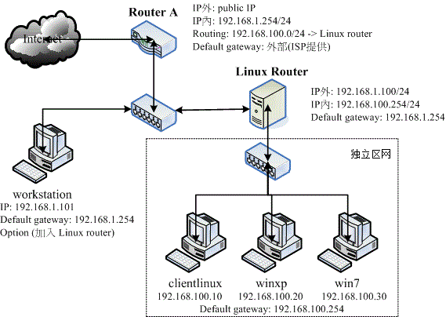
图 8.2-1、静态路由之路由器架构示意图
以上图的架构来说，这家公司主要有两个 class C 的网段，分别是：
- 一般区网(192.168.1.0/24) ：包括 Router A, workstation 以及 Linux Router 三部主机所构成；
- 保护内网(192.168.100.0/24)：包括 Linux Router, clientlinux, winxp, win7 等主机所构成。
只要是具有路由器功能的设备 (Router A, Linux Router) 都会具有两个以上的接口， 分别用来沟通不同的网域，同时该路由器也都会具有一个预设路由. 另外，你还可以加上一些防火墙的软件在 Linux Router 上，以保护 clientlinux, winxp, win7.
先来探讨一下联机的机制好了，先从 clientlinux 这部计算机谈起。如果 clientlinux 想要连上 Internet，那么他的联机情况会是如何？
- 发起联机需求：clientlinux –> Linux Router –> Router A –> Internet
- 响应联机需求：Internet –> Router A –> Linux Router –> clientlinux
要达到上述功能，则 Router A 必须要有两个接口，一个是对外的 Public IP 一个则是对内的 Private IP ，因为 IP 的类别不同，因此 Router A 还需要额外增加 NAT 这个机制才行，这个机制我们在后续章节会继续谈到。 除此之外，Router A 并不需要什么额外的设定。至于 Linux Router 就更简单了！什么事都不用作，将两个网络适配器设定两个 IP ， 并且启动核心的封包转递功能，立刻就架设完毕了！非常简单！
Linux Router
这部主机内需要有两张网卡，鸟哥在这里将他定义为 (假设你已经将刚刚实作的 eth0:0 取消掉了)：
- eth0: 192.168.1.100/24
- eth1: 192.168.100.254/24
# 1. 再看看 eth0 的设定吧！虽然我们已经在第四章就搞定了： [root@www ~]# vim /etc/sysconfig/network-scripts/ifcfg-eth0 DEVICE="eth0" HWADDR="08:00:27:71:85:BD" NM_CONTROLLED="no" ONBOOT="yes" BOOTPROTO=none IPADDR=192.168.1.100 NETMASK=255.255.255.0 GATEWAY=192.168.1.254 <==最重要的设定啊！透过这部主机连出去的！ [ME: 连接到主 router（通往internet）] # 2. 再处理 eth1 这张之前一直都没有驱动的网络卡吧！ [root@www ~]# vim /etc/sysconfig/network-scripts/ifcfg-eth1 DEVICE="eth1" HWADDR="08:00:27:2A:30:14" NM_CONTROLLED="no" ONBOOT="yes" BOOTPROTO="none" IPADDR=192.168.100.254 NETMASK=255.255.255.0 # 3. 启动 IP 转递，真的来实作成功才行！ [root@www ~]# vim /etc/sysctl.conf net.ipv4.ip_forward = 1 # 找到上述的设定值，将默认值 0 改为上述的 1 即可！储存后离开去！ [root@www ~]# sysctl -p [root@www ~]# cat /proc/sys/net/ipv4/ip_forward 1 <==这就是重点！要是 1 才可以呦！ # 4. 重新启动网络，并且观察路由与 ping Router A [root@www ~]# /etc/init.d/network restart [root@www ~]# route -n Kernel IP routing table Destination Gateway Genmask Flags Metric Ref Use Iface 192.168.100.0 0.0.0.0 255.255.255.0 U 0 0 0 eth1 192.168.1.0 0.0.0.0 255.255.255.0 U 0 0 0 eth0 0.0.0.0 192.168.1.254 0.0.0.0 UG 0 0 0 eth0 # 上面的重点在于最后面那个路由器的设定是否正确呦！ [root@www ~]# ping -c 2 192.168.1.254 PING 192.168.1.254 (192.168.1.254) 56(84) bytes of data. 64 bytes from 192.168.1.254: icmp_seq=1 ttl=64 time=0.294 ms 64 bytes from 192.168.1.254: icmp_seq=2 ttl=64 time=0.119 ms <==有回应即可 # 5. 暂时关闭防火墙！这一步也很重要喔！ [root@www ~]# /etc/init.d/iptables stop
- #5: 此外，CentOS 6.x 默认的防火墙规则会将来自不同网卡的沟通封包剔除，所以还得要暂时关闭防火墙才行。 接下来则是要设定 clientlinux 这个被保护的内部主机网络啰。
受保护的网域，以 clientlinux 为例
不论你的 clientlinux 是哪一种操作系统，你的环境都应该是这样的 (图 8.2-1)：
- IP: 192.168.100.10
- netmask: 255.255.255.0
- gateway: 192.168.100.254
- hostname: clientlinux.centos.vbird
- DNS: 168.95.1.1
以 Linux 操作系统为例，并且 clientlinux 仅有 eth0 一张网卡时，他的设定是这样的：
[root@clientlinux ~]# vim /etc/sysconfig/network-scripts/ifcfg-eth0 DEVICE="eth0" NM_CONTROLLED="no" ONBOOT="yes" BOOTPROTO=none IPADDR=192.168.100.10 NETMASK=255.255.255.0 GATEWAY=192.168.100.254 <==这个设定最重要啦！ DNS1=168.95.1.1 <==有这个就不用自己改 /etc/resolv.conf [root@clientlinux ~]# /etc/init.d/network restart [root@clientlinux ~]# route -n Kernel IP routing table Destination Gateway Genmask Flags Metric Ref Use Iface 192.168.100.0 0.0.0.0 255.255.255.0 U 1 0 0 eth0 169.254.0.0 0.0.0.0 255.255.0.0 U 1002 0 0 eth0 0.0.0.0 192.168.100.254 0.0.0.0 UG 0 0 0 eth0 [root@clientlinux ~]# ping -c 2 192.168.100.254 <==ping自己的gateway(会成功) [root@clientlinux ~]# ping -c 2 192.168.1.254 <==ping外部的gateway(会失败)
最后一个动作有问题呦！怎么会连 ping 都没有办法 ping 到 Router A 的 IP 呢？如果连 ping 都没有办法给予回应的话， 那么表示我们的联机是有问题的！再从刚刚的响应联机需求流程来看一下吧！
- 发起联机：clientlinux –> Linux Router (OK) –> Router A (OK)
- 回应联机：Router A (此时 router A 要响应的目标是 192.168.100.10)，Router A 仅有 public 与 192.168.1.0/24 的路由，所以该封包会由 public 界面再传出去，因此封包就回不来了…
只好告知 Router A 当路由规则碰到 192.168.100.0/24 时，要将该封包传 192.168.1.100
特别的路由规则： Router A 所需路由
假设我的 Router A 对外的网卡为 eth1 ，而内部的 192.168.1.254 则是设定在 eth0 上头。直接使用 route add:
[root@routera ~]# route add -net 192.168.100.0 netmask 255.255.255.0 \ > gw 192.168.1.100
不过这个规则并不会写入到配置文件，因此下次重新启动这个规则就不见了！所以，你应该要建立一个路由配置文件。 由于这个路由是依附在 eth0 网卡上的，所以配置文件的档名应该要是 route-eth0 喔！这个配置文件的内容当中，我们要设定 192.168.100.0/24 这个网域的 gateway 是 192.168.1.100，且是透过 eth0 ，那么写法就会变成：
[root@routera ~]# vim /etc/sysconfig/network-scripts/route-eth0 192.168.100.0/24 via 192.168.1.100 dev eth0 目标网域 透过的gateway 装置 [root@routera ~]# route -n Destination Gateway Genmask Flags Metric Ref Use Iface 120.114.142.0 0.0.0.0 255.255.255.0 U 0 0 0 eth1 192.168.100.0 192.168.1.100 255.255.255.0 UG 0 0 0 eth0 <------ 192.168.1.0 0.0.0.0 255.255.255.0 U 0 0 0 eth0 169.254.0.0 0.0.0.0 255.255.0.0 U 0 0 0 eth1 0.0.0.0 120.114.142.254 0.0.0.0 UG 0 0 0 eth1
既然内部保护网络已经可以连上 Internet 了，那么是否代表 clientlinux 可以直接与一般员工的网域，例如 workstation 进行联机呢？我们依旧透过路由规则来探讨一下，当 clientlinux 要直接联机到 workstation 时，他的联机方向是这样的 (参考图 8.2-1)：
- 联机发起： clientlinux –> Linux Router (OK) –> workstation (OK)
- 回应联机： workstation (联机目标为 192.168.100.10，因为并没有该路由规则，因此联机丢给 default gateway，亦即是 Router A) –> Router A (OK) –> Linux Router (OK) –> clientlinux
联机发起是没有问题啦，不过呢，响应联机竟然会偷偷透过 Router A 来帮忙呦！ 这是因为 workstation 与当初的 Router A 一样，并不知道 192.168.100.0/24 在 192.168.1.100 里面啦！不过，反正 Router A 已经知道了该网域在 Linux Router 内，所以，该封包还是可以顺利的回到 clientlinux.
让 workstation 与 clientlinux 不透过 Router A 的沟通方式
如果你不想要让 workstation 得要透过 Router A 才能够联机到 clientlinux 的话，那么就得要与 Router A 相同，增加那一条路由规则:
[root@workstation ~]# vim /etc/sysconfig/network-scripts/route-eth0 192.168.100.0/24 via 192.168.1.100 dev eth0 [root@workstation ~]# /etc/init.d/network restart [root@www ~]# route -n Kernel IP routing table Destination Gateway Genmask Flags Metric Ref Use Iface 192.168.1.0 0.0.0.0 255.255.255.0 U 0 0 0 eth0 192.168.100.0 192.168.1.100 255.255.255.0 UG 0 0 0 eth0 169.254.0.0 0.0.0.0 255.255.0.0 U 0 0 0 eth0 0.0.0.0 192.168.1.254 0.0.0.0 UG 0 0 0 eth0
只要 clientlinux 使用 ping 可以连到 workstation，同样的，workstation 也可以 ping 到 clientlinux 的话，就表示你的设定是 OK 的.
路由是双向的，你必须要了解出去的路由与回来时的规则. 举例来说，在预设的情况下 (Router A 与 workstation 都没有额外的路由设定时)，其实封包是可以由 clientlinux 联机到 workstation 的，但是 workstation 却没有相关的路由可以响应到 clientlinux ～所以上头才会要你在 Router A 或者是 workstation 上面设定额外的路由规则.
用 Linux 作一个静态路由的 Router 很简单: 在 Linux Router 上面几乎没有作什么额外的工作，只要将网络 IP 与网络接口对应好启动，然后加上 IP Forward 的功能， 让你的 Linux 核心支持封包转递，然后其他的工作咱们的 Linux kernel 就主动帮你搞定了！
Note: 这里必须要提醒的是，如果你的 Linux Router 有设定防火墙的话， 而且还有设定类似 NAT 主机的 IP 伪装技术，那可得特别留意，因为还可能会造成路由误判的问题～ 上述的 Linux Router 当中『并没有使用到任何 NAT 的功能』
8.3 动态路由器架设：quagga (zebra + ripd)
一般的静态路由器上面，我们可以透过修改路由配置文件 (route-ethN) 来设定好既定的路由规则，让你的路由器运作顺利。这样的方法总是觉得很讨厌！如果某天因为组织的再造导致需要重新规划子网网段，如此一来，你就得要在图 8.2-1 的 Router A 与 Linux Router 再次的处理与检查路由规则. 能不能让路由器自己学习新的路由，来达成自动增加该笔路由的信息呢？ -> 动态路由。动态路由通常是用在路由器与路由器之间的沟通，所以要让你的路由器具有动态路由的功能， 你必须要了解到对方路由器上面所提供的动态路由协议才行，这样两部路由器才能够透过该协议来沟通彼此的路由规则。 目前常见的动态路由协议有：RIPv1, RIPv2, OSPF, BGP 等。
想要在 CentOS 上面搞定这些动态路由的相关机制，那就得要使用 quagga 这个软件啦！这个软件是 zebra 计划的延伸， 相关的官网说明可以参考文后的参考数据(注3)。
先安装他:
[root@www ~]# yum install quagga [root@www ~]# ls -l /etc/quagga -rw-r--r--. 1 root root 406 Jun 25 20:19 ripd.conf.sample -rw-r-----. 1 quagga quagga 26 Jul 22 11:11 zebra.conf -rw-r--r--. 1 root root 369 Jun 25 20:19 zebra.conf.sample .....(其他省略).....
这个软件所提供的各项动态路由协议都放置到 etc/quagga 目录内，底下我们以较为简单的 RIPv2 协议来处理动态路由， 不过你得要注意的是，不论你要启动什么动态路由协议，那个 zebra 都必须要先启动才行！这是因为：
- zebra 这个 daemon 的功能在更新核心的路由规则；
- RIP 这个 daemon 则是在向附近的其他 Router 沟通协调路由规则的传送与否。
各个路由服务的配置文件都必须要以 /etc/quagga/*.conf 的档名来储存才行，如上表我们可以发现 zebra 这个服务是有设定好了，不过 ripd 的档名却不是 .conf 结尾。所以我们必须要额外作些设定才行。
设计一下可能的网络联机: 假设网络联机的图标如下，共有三个区网的网段， 其中最大的是 192.168.1.0/24 这个外部区网，另有两个内部区网分别是 192.168.100.0/24 及 192.168.200.0/24 。
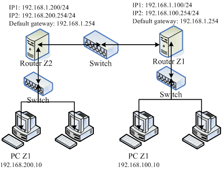
图 8.3-1、练习动态路由所设定的网络联机示意图
上图的两部 Linux Router 分别负责不同的网域，其中 Router Z1 是上个小节设定好之后就保留的，左边的 Router Z2 则是需要额外设定的路由器喔！两部 Router 可以透过 192.168.1.0/24 这个网域来沟通。在没有设定额外路由规则的情况下，那个 PC Z1 与 PC Z2 是无法沟通的！另外，quagga 必须要同时安装在两部 Linux Router 上头才行， 而且我们只要设定好这两部主机的网络接口 (eth0, eth1) 后，不需要手动输入额外的路由设定喔！可以透过 RIP 这个路由协议来搞定的！
透过这个 quagga 以及 RIPv2 的路由协议的辅助，我们可以轻松的就将路由规则分享到附近区网的其他路由器上头， 比起单纯使用 route 去修改 Linux 的核心路由表，这个动作当然要快速很多！不过，如果是很小型的网络环境，那么不要使用这个 quagga 啊！因为有点多此一举的感觉。
Tip: 鸟哥差一点被这一版的 ripd.conf 设定内容搞死～因为 CentOS 5.x 以后的版本预设的 RIPv2 会去进行身份验证，所以原先在 CentOS 4.x 的设定是不能用的，偏偏登录档又看不出个所以然..后来查到可以透过 ripd.conf 内的 debug 参数去设定除错登录， 才发现 RIPv2 的认证问题！最终 google 一下才解决问题～好累啊！
SOMEDAY 1. 将所有主机的 IP 设定妥当：
SOMEDAY 2. 在两部 Router 上面设定 zebra ：
SOMEDAY 3. 在两部 Router 上面设定 ripd 服务：
SOMEDAY 4. 检查 RIP 协议的沟通结果：
SOMEDAY 8.4 特殊状况：路由器两边界面是同一个 IP 网段：ARP Proxy
如果你一开始设计的网络环境就是同一个 Class C 的网域，例如 192.168.1.0/24 ， 后来因为某些因素必须要将某些主机搬到比较内部的环境中，例如图 8.2-1的 clientlinxu, winxp, win7。 然后又因为某些因素，所以你不能变更这些计算机的 IP，此时你的同一网域就会横跨在一个路由器的左右两边了！ 举例来说，联机图示有点像底下这样：
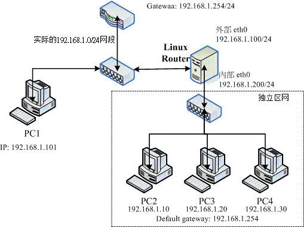
图 8.4-1、在路由器两个界面两边的 IP 是在同一个网域的设定情况
如此一来，在 Linux Router 两边要如何制作路由啊？好问题！真是好问题～ 因为 OSI 第三层网络层的路由是一条一条去设定比对的，所以如果两块网卡上面都是同一个网域的 IP 时， 就会发生错误。那如何处理啊？
举我们图 8.4-1 的例子来说，就是在 Linux Router 的 eth0 界面上，规定 192.168.1.10, 192.168.1.20, 192.168.1.30 这三个 IP 都对应到 eth0 的 MAC 上，所以三个 IP 的封包就会由 eth0 代为收下，因此才叫做 ARP 代理人嘛！所以啦，每一部在 eth0 那端的主机都会『误判』那三个 IP 是 Linux Router 所拥有，这样就能够让封包传给 Linux Router 啦！
透过这个案例你也可以清楚的知道，能不能联机其实与路由的关系才大哩！ 而路由是双向的，你必须要考虑到这个封包如何回来的问题
8.5 重点回顾
- 网络卡的代号为 eth0, eth1, eth2…，而第一张网络卡的第一个虚拟接口为 eth0:0 …
- 网络卡的参数可使用 ifconfig 直接设定，亦可使用配置文件如 /etc/sysconfig/network-scripts/ifcfg-ethn 来设定；
- 路由是双向的，所以由网络封包发送处发送到目标的路由规划，必须要考虑回程时是否具有相对的路由， 否则该封包可能会『遗失』；
- 每部主机都有自己的路由表，此路由表 (routing table) 是作为封包传送时的路径依据；
- 每部可对外 Internet 传送封包的主机，其路由信息中应有一个预设路由 (default gateway)；
- 要让 Linux 作为 Router 最重要的是启动核心的 IP Forward 功能；
- 重复路由可能会让你的网络封包传递到错误的方向；
- 动态路由通常是用在两个 Router 之间沟通彼此的路由规则用的，常见的 Linux 上的动态路由套件为 zebra ；
- arp proxy 可以透过 arp 与 route 的功能，让路由器两端都在同一个网段内；
- 一般来说，路由器上都会有两个以上的网络接口
- 事实上，Router 除了作为路由转换之外，在 Router 上面架设防火墙，亦可在企业内部再分隔出多个需要安全 (Security) 的单位数据的区隔！
SOMEDAY 8.6 本章习题
8.7 参考数据与延伸阅读
- 注1：网中人写的『带宽负载平衡』：http://www.study-area.org/tips/multipath.htm
- 注2：一些生产网络硬设备的公司：
- 思科 (Cisco) ：http://www.cisco.com/
- 友讯 (D-Link) ：http://www.dlinktw.com.tw/
- 普联技术 (TP-Link) ：http://www.tplink.com.tw/
- 注3：动态路由架设软件：
- 动态路由软件 Quagga: http://www.quagga.net
- 动态路由软件 zebra: http://www.zebra.org
- Ben 哥写的『实作 Linux 动态路由』：http://linux.vbird.org/somepaper/20060714-linux_cisco_route.pdf
- quagga 官方操作文件：http://www.quagga.net/docs/quagga.pdf
- 酷学园的 ARP Proxy：http://phorum.study-area.org/viewtopic.php?t=5619
- 酷学园 ericshei 的 ARP Proxy 分享：http://phorum.study-area.org/viewtopic.php?t=22943
8.8 针对本文的建议：http://phorum.vbird.org/viewtopic.php?t=26428
第九章、防火墙与 NAT 服务器
(http://cn.linux.vbird.org/linux_server/0250simple_firewall.php)
从第七章的图 7.1-1 我们可以发现防火墙是整个封包要进入主机前的第一道关卡，但，什么是防火墙？Linux 的防火墙有哪些机制？ 防火墙可以达到与无法达到的功能有哪些？防火墙能不能作为区域防火墙而不是仅针对单一主机而已呢？其实，Linux 的防火墙主要是透过 Netfilter 与 TCP Wrappers 两个机制来管理的。其中，透过 Netfilter 防火墙机制，我们可以达到让私有 IP 的主机上网 (IP 分享器功能) ，并且也能够让 Internet 连到我内部的私有 IP 所架设的 Linux 服务器 (DNAT 功能)！
9.1 认识防火墙
网络安全除了随时注意相关软件的漏洞以及网络上的安全通报之外，你最好能够依据自己的环境来订定防火墙机制！ 这样对于你的网络环境，会比较有保障一点
什么是防火墙呢？其实防火墙就是透过订定一些有顺序的规则，并管制进入到我们网域内的主机 (或者可以说是网域) 数据封包的一种机制！更广义的来说，只要能够分析与过滤进出我们管理之网域的封包数据， 就可以称为防火墙。
防火墙又可以分为硬件防火墙与本机的软件防火墙。硬件防火墙是由厂商设计好的主机硬件， 这部硬件防火墙内的操作系统主要以提供封包数据的过滤机制为主，并将其他不必要的功能拿掉。因为单纯作为防火墙功能而已， 因此封包过滤的效率较佳。至于软件防火墙呢？那就是我们这个章节要来谈论的啊！ 软件防火墙本身就是在保护系统网络安全的一套软件(或称为机制)，例如 Netfilter 与 TCP Wrappers 都可以称为软件防火墙。
我们这个章节主要在介绍 Linux 系统本身提供的软件防火墙的功能，那就是 Netfilter 。至于 TCP Wrappers 虽然在基础篇的第十八章认识系统服务里面谈过了，我们这里还会稍微简单的介绍
9.1.1 开始之前来个提醒事项
请到第二章加强一下 MAC, IP, ICMP, TCP, UDP 等封包表头数据的认识，以及 Network/Netmask 的整体网域 (CIDR) 写法等。
虽然 Netfilter 机制可以透过 iptables 指令的方式来进行规则的排序与修改，不过鸟哥建议你利用 shell script 来撰写属于你自己的防火墙机制比较好，因为对于规则的排序与汇整有比较好的观察性， 可以让你的防火墙规则比较清晰一点。所以在你开始了解底下的资料之前，希望你可以先阅读过相关的数据了：
- 已经认识 Shell 以及 Shell script；
- 已经阅读过第二章网络基础的内容；
- 已经阅读过第七章认识网络安全的内容；
- 已经阅读过第八章路由器的内容，了解重要的路由概念；
- 最好拥有两部主机以上的小型局域网络环境，以方便测试防火墙；
- 做为区域防火墙的 Linux 主机最好有两张实体网卡，可以进行多种测试，并架设 NAT 服务器；
9.1.2 为何需要防火墙
仔细分析第七章的图 7.1-1 可以发现， 封包进入本机时，会通过防火墙、服务器软件程序、SELinux与文件系统等。所以基本上，如果你的系统 (1)已经关闭不需要而且危险的服务； (2)已经将整个系统的所有软件都保持在最新的状态； (3)权限设定妥当且定时进行备份工作； (4)已经教育用户具有良好的网络、系统操作习惯。 那么你的系统实际上已经颇为安全了！要不要架设防火墙？那就见仁见智啰！
不过，毕竟网络世界是很复杂的，而 Linux 主机也不是一个简单的东西，说不定哪一天你在进行某个软件的测试时， 主机突然间就启动了一个网络服务，如果你没有管制该服务的使用范围，那么该服务就等于对所有 Internet 开放， 那就麻烦了！因为该服务可能可以允许任何人登入你的系统，那不是挺危险？
防火墙能作什么呢？防火墙最大的功能就是帮助你『限制某些服务的存取来源』！ 举例来说： (1)你可以限制文件传输服务 (FTP) 只在子域内的主机才能够使用，而不对整个 Internet 开放； (2)你可以限制整部 Linux 主机仅可以接受客户端的 WWW 要求，其他的服务都关闭； (3)你还可以限制整部主机仅能主动对外联机。反过来说，若有客户端对我们主机发送主动联机的封包状态 (TCP 封包的 SYN flag) 就予以抵挡等等。这些就是最主要的防火墙功能了！
防火墙最重要的任务就是在规划出：
- 切割被信任(如子域)与不被信任(如 Internet)的网段；
- 划分出可提供 Internet 的服务与必须受保护的服务；
- 分析出可接受与不可接受的封包状态；
Linux 的 iptables 防火墙软件还可以进行更细部深入的 NAT (Network Address Translation) 的设定，并进行更弹性的 IP 封包伪装功能，不过，对于单一主机的防火墙来说， 最简单的任务还是上面那三项就是了！所以，你需不需要防火墙呢？理论上，当然需要！ 而且你必须要知道『你的系统哪些数据与服务需要保护』，针对需要受保护的服务来设定防火墙的规则吧！ 底下我们先来谈一谈，那在 Linux 上头常见的防火墙类型有哪些？
9.1.3 Linux 系统上防火墙的主要类别
依据防火墙管理的范围，我们可以将防火墙区分为网域型与单一主机型的控管。在单一主机型的控管方面， 主要的防火墙有封包过滤型的 Netfilter 与依据服务软件程序作为分析的 TCP Wrappers 两种。若以区域型的防火墙而言， 由于此类防火墙都是当作路由器角色，因此防火墙类型主要则有封包过滤的 Netfilter 与利用代理服务器 (proxy server) 进行存取代理的方式了。
Netfilter (封包过滤机制)
所谓的封包过滤，亦即是分析进入主机的网络封包，将封包的表头数据捉出来进行分析，以决定该联机为放行或抵挡的机制。 由于这种方式可以直接分析封包表头数据，所以包括硬件地址(MAC), 软件地址 (IP), TCP, UDP, ICMP 等封包的信息都可以进行过滤分析的功能，因此用途非常的广泛。(其实主要分析的是 OSI 七层协议的 2, 3, 4 层啦)
在 Linux 上面我们使用核心内建的 Netfilter 这个机制，而 Netfilter 提供了 iptables 这个软件来作为防火墙封包过滤的指令。由于 Netfilter 是核心内建的功能，因此他的效率非常的高！ 非常适合于一般小型环境的设定呢！Netfilter 利用一些封包过滤的规则设定，来定义出什么资料可以接收， 什么数据需要剔除，以达到保护主机的目的
TCP Wrappers (程序控管)
另一种抵挡封包进入的方法，为透过服务器程序的外挂 (tcpd) 来处置的！与封包过滤不同的是， 这种机制主要是分析谁对某程序进行存取，然后透过规则去分析该服务器程序谁能够联机、谁不能联机。 由于主要是透过分析服务器程序来控管，因此与启动的埠口无关，只与程序的名称有关。 举例来说，我们知道 FTP 可以启动在非正规的 port 21 进行监听，当你透过 Linux 内建的 TCP wrappers 限制 FTP 时， 那么你只要知道 FTP 的软件名称 (vsftpd) ，然后对他作限制，则不管 FTP 启动在哪个埠口，都会被该规则管理的。
Proxy (代理服务器)
代理服务器是一种网络服务，它可以『代理』用户的需求，而代为前往服务器取得相关的资料。
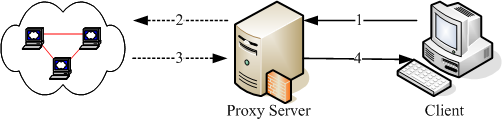
图 9.1-1、Proxy Server 的运作原理简介
以上图为例，当 Client 端想要前往 Internet 取得 Google 的数据时，他取得数据的流程是这样的：
- client 会向 proxy server 要求数据，请 proxy 帮忙处理；
- proxy 可以分析使用者的 IP 来源是否合法？使用者想要去的 Google 服务器是否合法？ 如果这个 client 的要求都合法的话，那么 proxy 就会主动的帮忙 client 前往 Google 取得资料；
- Google 所回传的数据是传给 proxy server 的喔，所以 Google 服务器上面看到的是 proxy server 的 IP 啰；
- 最后 proxy 将 Google 回传的数据送给 client。
client 并没有直接连上 Internet ，所以在实线部分(步骤 1, 4)只要 Proxy 与 Client 可以联机就可以了！此时 client 甚至不需要拥有 public IP 哩！而当有人想要攻击 client 端的主机时， 除非他能够攻破 Proxy server ，否则是无法与 client 联机的
另外，一般 proxy 主机通常仅开放 port 80, 21, 20 等 WWW 与 FTP 的埠口而已，而且通常 Proxy 就架设在路由器上面，因此可以完整的掌控局域网络内的对外联机！让你的 LAN 变的更安全. 有兴趣的话可以参考一下第十七章 squid (注1) 这个软件的官网或 google 一下.
9.1.4 防火墙的一般网络布线示意
防火墙除了可以『保护防火墙机制本身所在的那部主机』之外，还可以『保护防火墙后面的主机』。也就是说，防火墙除了可以防备本机被入侵之外， 他还可以架设在路由器上面藉以控管进出本地端网域的网络封包。 这种规划对于内部私有网域的安全也有一定程度的保护作用呢！底下我们稍微谈一谈目前常见的防火墙与网络布线的配置
单一网域，仅有一个路由器：
防火墙除了可以作为 Linux 本机的基本防护之外，他还可以架设在路由器上面以管控整个局域网络的封包进出。 因此，在这类的防火墙上头通常至少需要有两个接口，将可信任的内部与不可信任的 Internet 分开， 所以可以分别设定两块网络接口的防火墙规则啦！简单的环境如同下列图 9.1-2 所示。
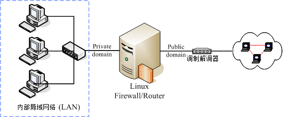
图 9.1-2、单一网域，仅有一个路由器的环境示意图
由于防火墙是设定在所有网络封包都会经过的路由器上头， 因此这个防火墙可以很轻易的就掌控到局域网络内的所有封包， 而且你只要管理这部防火墙主机，就可以很轻易的将来自 Internet 的不良网络封包抵挡掉 -> 只要管理一部主机就能够造福整的 LAN 里面的 PC，很划算的
如果你想要将局域网络控管的更严格的话，那你甚至可以在这部 Linux 防火墙上面架设更严格的代理服务器， 让客户端仅能连上你所开放的 WWW 服务器而已，而且还可以透过代理服务器的登录文件分析功能， 明确的查出来那个使用者在某个时间点曾经连上哪些 WWW 服务器. 如果在这个防火墙上面再加装类似 MRTG 的流量监控软件，还能针对整个网域的流量进行监测。这样配置的优点是：
- 因为内外网域已经分开，所以安全维护在内部可以开放的权限较大！
- 安全机制的设定可以针对 Linux 防火墙主机来维护即可！
- 对外只看的到 Linux 防火墙主机，所以对于内部可以达到有效的安全防护！
内部网络包含安全性更高的子网，需内部防火墙切开子网：
一般来说，我们的防火墙对于 LAN 的防备都不会设定的很严格，因为是我们自己的 LAN 嘛！所以是信任网域之一啰！不过，最常听到的入侵方法也是使用这样的一个信任漏洞！
所以，如果你有特别重要的部门需要更安全的保护网络环境，那么将 LAN 里面再加设一个防火墙，将安全等级分类，那么将会让你的重要数据获得更佳的保护:
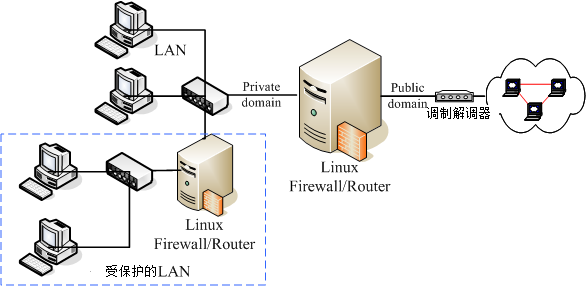
图 9.1-3、内部网络包含需要更安全的子网防火墙
在防火墙的后面架设网络服务器主机
还有一种更有趣的设定，那就是将提供网络服务的服务器放在防火墙后面，这有什么好处呢？ 如下图所示，Web, Mail 与 FTP 都是透过防火墙连到 Internet 上面去，所以， 底下这四部主机在 Internet 上面的 Public IP 都是一样的！(这个观念我们会在本章底下的 NAT 服务器的时候再次的强调)。 只是透过防火墙的封包分析后，将 WWW 的要求封包转送到 Web 主机，将 Mail 送给 Mail Server 去处理而已(透过 port 的不同来转递)。
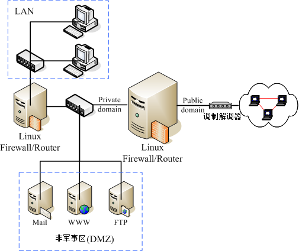
图 9.1-4、架设在防火墙后端的网络服务器环境示意图
四部主机在 Internet 上面看到的 IP 都相同，但是事实上却是四部不同的主机， 而当有攻击者想要入侵你的 FTP 主机好了，他使用各种分析方法去进攻的主机，其实是『防火墙』那一部， 攻击者想要攻击你内部的主机，除非他能够成功的搞定你的防火墙，否则就很难入侵你的内部主机
而且，由于主机放置在两部防火墙中间，内部网络如果发生状况时 (例如某些使用者不良操作导致中毒啊、 被社交工程攻陷导致内部主机被绑架啊等等的) ，是不会影响到网络服务器的正常运作的。 这种方式适用在比较大型的企业当中，因为对这些企业来说，网络主机能否提供正常稳定的服务是很重要的！
不过，这种架构下所进行的设定就得包含 port 的转递，而且要有很强的网络逻辑概念， 可以厘清封包双向沟通时的流动方式。对于新手来说，设定上有一定的难度， 鸟哥个人不太建议新手这么做
通常像上图的环境中，将网络服务器独立放置在两个防火墙中间的网络，我们称之为非军事区域 (DMZ)。 DMZ 的目的就如同前面提到的，重点在保护服务器本身，所以将 Internet 与 LAN 都隔离开来，如此一来不论是服务器本身，或者是 LAN 被攻陷时，另一个区块还是完好无缺的！[ME: with a grain of salt. DMZ exposes all servers in it to the outside world.]
9.1.5 防火墙的使用限制
封包滤式防火墙主要在分析 OSI 七层协议当中的 2, 3, 4 层，既然如此的话， Linux 的 Netfilter 机制到底可以做些什么事情呢？其实可以进行的分析工作主要有：
- 拒绝让 Internet 的封包进入主机的某些端口
例如你的 port 21 这个 FTP 相关的埠口，若只想要开放给内部网络的话，那么当 Internet 来的封包想要进入你的 port 21 时，就可以将该数据封包丢掉！因为我们可以分析的到该封包表头的端口号码 - 拒绝让某些来源 IP 的封包进入
例如你已经发现某个 IP 主要都是来自攻击行为的主机，那么只要来自该 IP 的资料封包，就将他丢弃 - 拒绝让带有某些特殊旗标 (flag) 的封包进入
最常拒绝的就是带有 SYN 的主动联机的旗标了！只要一经发现，嘿嘿！你就可以将该封包丢弃 - 分析硬件地址 (MAC) 来决定联机与否
如果你的局域网络里面有比较捣蛋的但是又具有比较高强的网络功力的高手时，如果你使用 IP 来抵挡他使用网络的权限，而他却懂得反正换一个 IP 就好了，都在同一个网域内嘛！ 同样还是在搞破坏～怎么办？没关系，我们可以死锁他的网络卡硬件地址啊！因为 MAC 是焊在网络卡上面的，所以你只要分析到该使用者所使用的 MAC 之后，可以利用防火墙将该 MAC 锁住，呵呵！除非他能够一换再换他的网络卡来取得新的 MAC, 否则换 IP 是没有用的
虽然 Netfilter 防火墙已经可以做到这么多的事情，不过，还是有很多事情没有办法透过 Netfilter 来完成. 防火墙虽然可以防止不受欢迎的封包进入我们的网络当中，不过，某些情况下，他并不能保证我们的网络一定就很安全。 举几个例子来谈一谈：
- 防火墙并不能很有效的抵挡病毒或木马程序
假设你已经开放了 WWW 的服务，那么你的 WWW 主机上面，防火墙一定得要将 WWW 服务的 port 开放给 Client 端登入. 『万一你的 WWW 服务器软件有漏洞，或者本身向你要求 WWW 服务的该封包就是病毒在侦测你的系统』时，你的防火墙可是一点办法也没有. 因为本来设定的规则就是会让他通过. - 防火墙对于来自内部 LAN 的攻击较无承受力
因为防火墙对于内部的规则设定通常比较少， 所以就容易造成内部员工对于网络误用或滥用的情况。
所以啦，还是回到第七章的图 7.1-1 的说明去看看，分析一下该图示，你就会知道，在你的 Linux 主机实地上网之前，还是得先：
- 关闭几个不安全的服务；
- 升级几个可能有问题的套件；
- 架设好最起码的安全防护–防火墙–
其他相关的讯息还是请到第七章认识网络安全里面去看一看怎么增加自身的安全吧！
9.2 TCP Wrappers
进入主题之前，我们先来玩一个简单的防火墙机制，那就是 TCP Wrappers 这玩意儿。如同前面说的， TCP wrappers 是透过客户端想要链接的程序文件名，然后分析客户端的 IP ，看看是否需要放行。那么哪些程序支持 TCP wrappers 的功能？这个 TCP wrappers 又该如何设定？我们这里先简单的谈谈吧！(这个小节仅是简单的介绍过 TCP wrappers ，更多相关功能请参考基础学习篇的第十八章内容)
9.2.1 哪些服务有支持： ldd
说穿了， TCP wrappers 就是透过 /etc/hosts.allow, /etc/hosts.deny 这两个宝贝蛋来管理的一个类似防火墙的机制， 但并非所有的软件都可以透过这两个档案来控管，只有底下的软件才能够透过这两个档案来管理防火墙规则，分别是：
- 由 super daemon (xinetd) 所管理的服务；配置文件在 etc/xinetd.d 里面的服务就是 xinetd 所管理的
- 有支援 libwrap.so 模块的服务。
什么是有支持 libwrap.so 模块呢？就让我们来进行底下的例题，你就比较容易明白
例题： 请查出你的系统有没有安装 xinetd ，若没有请安装。安装完毕后，请查询 xinetd 管理的服务有哪些？
答：
[root@www ~]# yum install xinetd
Setting up Install Process
Package 2:xinetd-2.3.14-29.el6.x86_64 already installed and latest version
Nothing to do
# 画面中显示，已经是最新的 xinetd ！所以，已经有安装啰！
# 接下来找出 xinetd 所管理的服务群！
[root@www ~]# chkconfig xinetd on <==要先让 xinetd on 后才能看到底下的
[root@www ~]# chkconfig --list
....(前面省略)....
xinetd based services:
chargen-dgram: off
chargen-stream: off
....(中间省略)....
rsync: off <==下一小节的范例就用这玩意儿来解释
tcpmux-server: off
telnet: on
上述结果最终输出的部分就是 xinetd 所管理的服务群啰！上述的服务之防火墙简易设定，都可以透过 TCP wrappers 来管理的噜！
例题： 请问， rsyslogd, sshd, xinetd, httpd (若该服务不存在，请自行安装软件)，这四个程序有没有支持 tcp wrappers 的抵挡功能？
答： 由于支持 tcp wrappers 的服务必定包含 libwrap 这一个动态函式库，因此可以使用 ldd 来观察该服务即可。 简单的使用方式为：
[root@www ~]# ldd $(which rsyslogd sshd xinetd httpd)
# 这个方式可以将所有的动态函式库取出来查阅，不过需要眼睛搜寻。
# 可以透过底下的方式来处理更快！
[root@www ~]# for name in rsyslogd sshd xinetd httpd; do echo $name; \
> ldd $(which $name) | grep libwrap; done
rsyslogd
sshd
libwrap.so.0 => /lib64/libwrap.so.0 (0x00007fb41d3c9000)
xinetd
libwrap.so.0 => /lib64/libwrap.so.0 (0x00007f6314821000)
httpd
上述的结果中，在该档名档下有出现 libwrap 的，代表有找到该函式库，才有支持 tcp wrappers。 所以， sshd, xinetd 有支持，但是 rsyslogd, httpd 这两支程序则不支持。也就是说， httpd 与 rsyslogd 不能够使用 /etc/hosts.{allow|deny} 来进行防火墙机制的控管。
9.2.2 /etc/hosts.{allow|deny} 的设定方式
那如何透过这两个档案来抵挡有问题的 IP 来源呢？这两个档案的语法都一样，很简单的：
<service(program_name)> : <IP, domain, hostname> <服务 (亦即程序名称)> : <IP 或领域 或主机名> # 上头的 > < 是不存在于配置文件中的喔！
我们知道防火墙的规则都是有顺序的，那这两个档案与规则的顺序优先是怎样呢？基本上是这样的：
- 先以 /etc/hosts.allow 为优先比对，该规则符合就予以放行；
- 再以 /etc/hosts.deny 比对，规则符合就予以抵挡；
- 若不在这两个档案内，亦即规则都不符合，最终则予以放行。
我们拿 rsync 这个 xinetd 管理的服务来进行说明好了，请参考底下的例题吧：
例题： 先开放本机的 127.0.0.1 可以进行任何本机的服务，然后，让区网 (192.168.1.0/24) 可以使用 rsync ， 同时 10.0.0.100 也能够使用 rsync ，但其他来源则不允许使用 rsync 喔。
答： 我们得要先知道 rsync 的服务启动的档名为何，因为 tcp wrappers 是透过启动服务的档名来管理的。 当我们观察 rsync 的配置文件时，可以发现：
[root@www ~]# cat /etc/xinetd.d/rsync
service rsync
{
disable = yes
flags = IPv6
socket_type = stream
wait = no
user = root
server = /usr/bin/rsync <==檔名叫做 rsync
server_args = --daemon
log_on_failure += USERID
}
因此程序字段的项目要写的是 rsync 喔！因此，我们应该要这样设定的：
[root@www ~]# vim /etc/hosts.allow ALL: 127.0.0.1 <==这就是本机全部的服务都接受！ rsync: 192.168.1.0/255.255.255.0 10.0.0.100 [root@www ~]# vim /etc/hosts.deny rsync: ALL
- 首先， tcp wrappers 理论上不支持 192.168.1.0/24 这种透过 bit 数值来定义的网域， 只支持 netmask 的地址显示方式。
- 另外，如果有多个网域或者是单一来源，可以透过空格来累加。 如果想要写成多行呢？也可以啊！多写几行『 kshd: IP 』的方式也可以，不必要将所有数据集中在一行啦！因为 tcp wrappers 也是一条一条规则比对
基本上，你只要理解这些数据即可！因为绝大部分的时刻，我们都会建议使用底下介绍的 Netfilter 的机制来抵挡封包。
9.3 Linux 的封包过滤软件： iptables
目前我们的 2.6 版这个 Linux 核心到底使用什么核心功能来进行防火墙设定？
9.3.1 不同 Linux 核心版本的防火墙软件
Linux 的防火墙为什么功能这么好？这是因为他本身就是由 Linux 核心所提供，由于直接经过核心来处理，因此效能非常好！ 不过，不同核心版本所使用的防火墙软件是不一样的！因为核心支持的防火墙是逐渐演进而来的嘛！
- Version 2.0：使用 ipfwadm 这个防火墙机制；
- Version 2.2：使用的是 ipchains 这个防火墙机制；
- Version 2.4 与 2.6 ：主要是使用 iptables 这个防火墙机制，不过在某些早期的 Version 2.4 版本的 distributions 当中，亦同时支持 ipchains (编译成为模块)，好让用户仍然可以使用来自 2.2 版的 ipchains 的防火墙规划。不过，不建议在 2.4 以上的核心版本使用 ipchains
不同的核心使用的防火墙机制不同，且支持的软件指令与语法也不相同，所以在 Linux 上头设定属于你自己的防火墙规则时，要注意啊，先用 uname -r 追踪一下你的核心版本再说！如果你是安装 2004 年以后推出的 distributions ，那就不需要担心了，因为这些 distributions 几乎都使用 kernel 2.6 版的核心
9.3.2 封包进入流程：规则顺序的重要性！
啥是规则啊？因为 iptables 是利用封包过滤的机制， 所以他会分析封包的表头数据。根据表头数据与定义的『规则』来决定该封包是否可以进入主机或者是被丢弃。 意思就是说：『根据封包的分析资料 "比对" 你预先定义的规则内容， 若封包数据与规则内容相同则进行动作，否则就继续下一条规则的比对！』 重点在那个『比对与分析顺序』上。
假设我预先定义 10 条防火墙规则好了，那么当 Internet 来了一个封包想要进入我的主机， 那么防火墙是如何分析这个封包的呢？
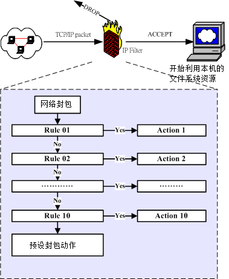
图 9.3-1、封包过滤的规则动作及分析流程
当一个网络封包要进入到主机之前，会先经由 NetFilter 进行检查，那就是 iptables 的规则了。 检查通过则接受 (ACCEPT) 进入本机取得资源，如果检查不通过，则可能予以丢弃 (DROP) ！ 上图中主要的目的在告知你：『规则是有顺序的』！例如当网络封包进入 Rule 1 的比对时， 如果比对结果符合 Rule 1 ，此时这个网络封包就会进行 Action 1 的动作，而不会理会后续的 Rule 2, Rule 3…. 等规则的分析了。
而如果这个封包并不符合 Rule 1 的比对，那就会进入 Rule 2 的比对了！如此一个一个规则去进行比对就是了。 那如果所有的规则都不符合怎办？此时就会透过预设动作 (封包政策, Policy) 来决定这个封包的去向。 所以啦，当你的规则顺序排列错误时，就会产生很严重的错误了。
Example: 如果 Rule 1 变成了『将所有的封包丢弃』，Rule 2 才设定『WWW 服务封包通过』，请问，我的 client 可以使用我的 WWW 服务吗？呵呵！答案是『否～』
9.3.3 iptables 的表格 (table) 与链 (chain)
事实上，那个图 9.3-1 所列出的规则仅是 iptables 众多表格当中的一个链 (chain) 而已。 什么是链呢？这得由 iptables 的名称说起。为什么称为 ip"tables" 呢？ 因为这个防火墙软件里面有多个表格 (table) ，每个表格都定义出自己的默认政策与规则， 且每个表格的用途都不相同。
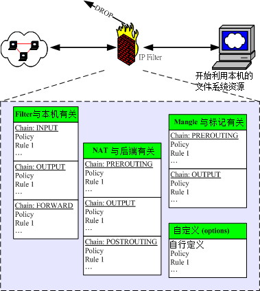
图 9.3-2、iptables 的表格与相关链示意图
预设的情况下，咱们 Linux 的 iptables 至少就有三个表格，包括管理本机进出的 filter 、管理后端主机 (防火墙内部的其他计算机) 的 nat 、管理特殊旗标使用的 mangle (较少使用) 。更有甚者，我们还可以自定义额外的链呢！
每个表格与其中链的用途分别是这样的：
- filter (过滤器)：主要跟进入 Linux 本机的封包有关，这个是预设的 table 喔！
- INPUT：主要与想要进入我们 Linux 本机的封包有关；
- OUTPUT：主要与我们 Linux 本机所要送出的封包有关；
- FORWARD：这个咚咚与 Linux 本机比较没有关系， 他可以『转递封包』到后端的计算机中，与下列 nat table 相关性较高。
- nat (地址转换)：是 Network Address Translation 的缩写， 这个表格主要在进行来源与目的之 IP 或 port 的转换，与 Linux 本机较无关，主要与 Linux 主机后的局域网络内计算机较有相关。
- PREROUTING：在进行路由判断之前所要进行的规则(DNAT/REDIRECT)
- POSTROUTING：在进行路由判断之后所要进行的规则(SNAT/MASQUERADE)
- OUTPUT：与发送出去的封包有关
- mangle (破坏者)：这个表格主要是与特殊的封包的路由旗标有关， 早期仅有 PREROUTING 及 OUTPUT 链，不过从 kernel 2.4.18 之后加入了 INPUT 及 FORWARD 链。 由于这个表格与特殊旗标相关性较高，所以像咱们这种单纯的环境当中，较少使用 mangle 这个表格。
所以说，如果你的 Linux 是作为 www 服务，那么要开放客户端对你的 www 要求有响应，就得要处理 filter 的 INPUT 链； 而如果你的 Linux 是作为局域网络的路由器，那么就得要分析 nat 的各个链以及 filter 的 FORWARD 链才行。也就是说， 其实各个表格的链结之间是有关系的！简单的关系可以由下图这么看：
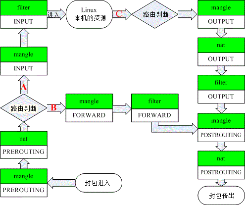
图 9.3-3、iptables 内建各表格与链的相关性
iptables 可以控制三种封包的流向：
- 封包进入 Linux 主机使用资源 (路径 A)： 在路由判断后确定是向 Linux 主机要求数据的封包，主要就会透过 filter 的 INPUT 链来进行控管；
- 封包经由 Linux 主机的转递，没有使用主机资源，而是向后端主机流动 (路径 B)： 在路由判断之前进行封包表头的修订作业后，发现到封包主要是要透过防火墙而去后端，此时封包就会透过路径 B 来跑动。 也就是说，该封包的目标并非我们的 Linux 本机。主要经过的链是 filter 的 FORWARD 以及 nat 的 POSTROUTING, PREROUTING。 这路径 B 的封包流向使用情况，我们会在本章的 9.5 小节来跟大家作个简单的介绍。
- 封包由 Linux 本机发送出去 (路径 C)： 例如响应客户端的要求，或者是 Linux 本机主动送出的封包，都是透过路径 C 来跑的。先是透过路由判断， 决定了输出的路径后，再透过 filter 的 OUTPUT 链来传送的！当然，最终还是会经过 nat 的 POSTROUTING 链。
Tip: 有没有发现有两个『路由判断』呢？因为网络是双向的，所以进与出要分开来看！因此，进入的封包需要路由判断， 送出的封包当然也要进行路由判断才能够发送出去
由于 mangle 这个表格很少被使用，如果将图 9.3-3 的 mangle 拿掉的话，那就容易看的多了：
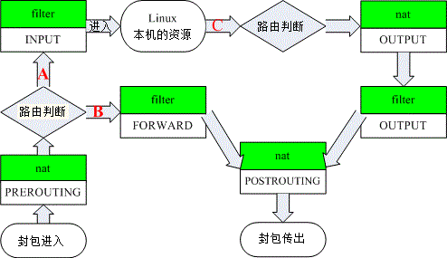
图 9.3-4、iptables 内建各表格与链的相关性(简图)
透过图 9.3-4 你就可以更轻松的了解到，事实上与本机最有关的其实是 filter 这个表格内的 INPUT 与 OUTPUT 这两条链，如果你的 iptables 只是用来保护 Linux 主机本身的话，那 nat 的规则根本就不需要理他，直接设定为开放即可。
不过，如果你的防火墙事实上是用来管制 LAN 内的其他主机的话，那么你就必须要再针对 filter 的 FORWARD 这条链，还有 nat 的 PREROUTING, POSTROUTING 以及 OUTPUT 进行额外的规则订定才行。 nat 表格的使用需要很清晰的路由概念才能够设定的好，建议新手先不要碰！最多就是先玩一玩最阳春的 nat 功能『IP 分享器的功能』就好了！ ^_！这部份我们在本章的最后一小节会介绍
9.3.4 本机的 iptables 语法
理论上，当你安装好 Linux 之后，系统应该会主动的帮你启动一个阳春的防火墙规则才是， 不过这个阳春防火墙可能不是我们想要的模式，因此我们需要额外进行一些修订的行为。
Warning: 在开始进行底下的练习之前， 鸟哥这里有个很重要的事情要告知一下。因为 iptables 的指令会将网络封包进行过滤及抵挡的动作，所以， 请不要在远程主机上进行防火墙的练习，因为你很有可能一不小心将自己关在家门外！
iptables 至少有三个预设的 table (filter, nat, mangle)，较常用的是本机的 filter 表格， 这也是默认表格啦。另一个则是后端主机的 nat 表格，至于 mangle 较少使用，所以这个章节我们并不会讨论 mangle。 由于不同的 table 他们的链不一样，导致使用的指令语法或多或少都有点差异。 在这个小节当中，我们主要将针对 filter 这个默认表格的三条链来做介绍。
Tip: 防火墙的设定主要使用的就是 iptables 这个指令而已。而防火墙是系统管理员的主要任务之一， 且对于系统的影响相当的大，因此『只能让 root 使用 iptables 』，不论是设定还是观察防火墙规则喔
9.3.4-1 规则的观察与清除
如果你在安装的时候选择没有防火墙的话，那么 iptables 在一开始的时候应该是没有规则的，不过， 可能因为你在安装的时候就有选择系统自动帮你建立防火墙机制，那系统就会有默认的防火墙规则了！
[root@www ~]# iptables [-t tables] [-L] [-nv] 选项与参数： -t ：后面接 table ，例如 nat 或 filter ，若省略此项目，则使用默认的 filter -L ：列出目前的 table 的规则 -n ：不进行 IP 与 HOSTNAME 的反查，显示讯息的速度会快很多！ -v ：列出更多的信息，包括通过该规则的封包总位数、相关的网络接口等 范例：列出 filter table 三条链的规则 [root@www ~]# iptables -L -n Chain INPUT (policy ACCEPT) <==针对 INPUT 链，且预设政策为可接受 target prot opt source destination <==说明栏 ACCEPT all -- 0.0.0.0/0 0.0.0.0/0 state RELATED,ESTABLISHED <==第 1 条规则 ACCEPT icmp -- 0.0.0.0/0 0.0.0.0/0 <==第 2 条规则 ACCEPT all -- 0.0.0.0/0 0.0.0.0/0 <==第 3 条规则 ACCEPT tcp -- 0.0.0.0/0 0.0.0.0/0 state NEW tcp dpt:22 <==以下类推 REJECT all -- 0.0.0.0/0 0.0.0.0/0 reject-with icmp-host-prohibited Chain FORWARD (policy ACCEPT) <==针对 FORWARD 链，且预设政策为可接受 target prot opt source destination REJECT all -- 0.0.0.0/0 0.0.0.0/0 reject-with icmp-host-prohibited Chain OUTPUT (policy ACCEPT) <==针对 OUTPUT 链，且预设政策为可接受 target prot opt source destination 范例：列出 nat table 三条链的规则 [root@www ~]# iptables -t nat -L -n Chain PREROUTING (policy ACCEPT) target prot opt source destination Chain POSTROUTING (policy ACCEPT) target prot opt source destination Chain OUTPUT (policy ACCEPT) target prot opt source destination
Chain 那一行里面括号的 policy 就是预设的政策， 那底下的 target, prot 代表什么呢？
- target：代表进行的动作， ACCEPT 是放行，而 REJECT 则是拒绝，此外，尚有 DROP (丢弃) 的项目！
- prot：代表使用的封包协议，主要有 tcp, udp 及 icmp 三种封包格式；
- opt：额外的选项说明
- source ：代表此规则是针对哪个『来源 IP』进行限制？
- destination ：代表此规则是针对哪个『目标 IP』进行限制？
在输出结果中，第一个范例因为没有加上 -t 的选项，所以默认就是 filter 这个表格内的 INPUT, OUTPUT, FORWARD 三条链的规则啰。若针对单机来说，INPUT 与 FORWARD 算是比较重要的管制防火墙链， 所以你可以发现最后一条规则的政策是 REJECT (拒绝) 喔！虽然 INPUT 与 FORWARD 的政策是放行 (ACCEPT)， 不过在最后一条规则就已经将全部的封包都拒绝了！
不过这个指令的观察只是作个格式化的查阅，要详细解释每个规则会比较不容易解析。举例来说， 我们将 INPUT 的 5 条规则依据输出结果来说明一下，结果会变成：
- 只要是封包状态为 RELATED,ESTABLISHED 就予以接受
- 只要封包协议是 icmp 类型的，就予以放行
- 无论任何来源 (0.0.0.0/0) 且要去任何目标的封包，不论任何封包格式 (prot 为 all)，通通都接受
- 只要是传给 port 22 的主动式联机 tcp 封包就接受
- 全部的封包信息通通拒绝
Note: 最有趣的应该是第 3 条规则了，怎么会所有的封包信息都予以接受？如果都接受的话，那么后续的规则根本就不会有用嘛！ 其实那条规则是仅针对每部主机都有的内部循环测试网络 (lo) 接口啦！如果没有列出接口，那么我们就很容易搞错啰～ 所以，近来鸟哥都建议使用 iptables-save 这个指令来观察防火墙规则啦！因为 iptables-save 会列出完整的防火墙规则，只是并没有规格化输出而已。
[root@www ~]# iptables-save [-t table] 选项与参数： -t ：可以仅针对某些表格来输出，例如仅针对 nat 或 filter 等等 [root@www ~]# iptables-save # Generated by iptables-save v1.4.7 on Fri Jul 22 15:51:52 2011 *filter <==星号开头的指的是表格，这里为 filter :INPUT ACCEPT [0:0] <==冒号开头的指的是链，三条内建的链 :FORWARD ACCEPT [0:0] <==三条内建链的政策都是 ACCEPT 啰！ :OUTPUT ACCEPT [680:100461] -A INPUT -m state --state RELATED,ESTABLISHED -j ACCEPT <==针对 INPUT 的规则 -A INPUT -p icmp -j ACCEPT -A INPUT -i lo -j ACCEPT <==这条很重要！针对本机内部接口开放！ -A INPUT -p tcp -m state --state NEW -m tcp --dport 22 -j ACCEPT -A INPUT -j REJECT --reject-with icmp-host-prohibited -A FORWARD -j REJECT --reject-with icmp-host-prohibited <==针对 FORWARD 的规则 COMMIT # Completed on Fri Jul 22 15:51:52 2011
既然这个规则不是我们想要的，那该如何修改规则呢？鸟哥建议，先删除规则再慢慢建立各个需要的规则！ 那如何清除规则？
[root@www ~]# iptables [-t tables] [-FXZ] 选项与参数： -F ：清除所有的已订定的规则； -X ：杀掉所有使用者 "自定义" 的 chain (应该说的是 tables ）啰； -Z ：将所有的 chain 的计数与流量统计都归零 范例：清除本机防火墙 (filter) 的所有规则 [root@www ~]# iptables -F [root@www ~]# iptables -X [root@www ~]# iptables -Z
Warning: 由于这三个指令会将本机防火墙的所有规则都清除，但却不会改变预设政策 (policy) ， 所以如果你不是在本机下达这三行指令时，很可能你会被自己挡在家门外 (若 INPUT 设定为 DROP 时)！要小心啊！
9.3.4-2 定义预设政策 (policy)
清除规则之后，再接下来就是要设定规则的政策啦！还记得政策指的是什么吗？『 当你的封包不在你设定的规则之内时，则该封包的通过与否，是以 Policy 的设定为准』，在本机方面的预设政策中，假设你对于内部的使用者有信心的话， 那么 filter 内的 INPUT 链方面可以定义的比较严格一点，而 FORWARD 与 OUTPUT 则可以订定的松一些！通常鸟哥都是将 INPUT 的 policy 定义为 DROP 啦，其他两个则定义为 ACCEPT。 至于 nat table 则暂时先不理会他。
[root@www ~]# iptables [-t nat] -P [INPUT,OUTPUT,FORWARD] [ACCEPT,DROP] 选项与参数： -P ：定义政策( Policy )。注意，这个 P 为大写啊！ ACCEPT ：该封包可接受 DROP ：该封包直接丢弃，不会让 client 端知道为何被丢弃。 范例：将本机的 INPUT 设定为 DROP ，其他设定为 ACCEPT [root@www ~]# iptables -P INPUT DROP [root@www ~]# iptables -P OUTPUT ACCEPT [root@www ~]# iptables -P FORWARD ACCEPT [root@www ~]# iptables-save # Generated by iptables-save v1.4.7 on Fri Jul 22 15:56:34 2011 *filter :INPUT DROP [0:0] :FORWARD ACCEPT [0:0] :OUTPUT ACCEPT [0:0] COMMIT # Completed on Fri Jul 22 15:56:34 2011 # 由于 INPUT 设定为 DROP 而又尚未有任何规则，所以上面的输出结果显示： # 所有的封包都无法进入你的主机！是不通的防火墙设定！(网络联机是双向的)
其他的 nat table 三条链的预设政策设定也是一样的方式，例如：『 iptables -t nat -P PREROUTING ACCEPT 』就设定了 nat table 的 PREROUTING 链为可接受的意思！预设政策设定完毕后，来谈一谈关于各规则的封包基础比对设定吧。
9.3.4-3 封包的基础比对：IP, 网域及接口装置： 信任装置, 信任网域
进行防火墙规则的封包比对设定: 既然是因特网，那么我们就由最基础的 IP, 网域及埠口，亦即是 OSI 的第三层谈起，再来谈谈装置 (网络卡) 的限制等等。这一小节与下一小节的语法你一定要记住，因为这是最基础的比对语法
[root@www ~]# iptables [-AI 链名] [-io 网络接口] [-p 协议] \
> [-s 来源IP/网域] [-d 目标IP/网域] -j [ACCEPT|DROP|REJECT|LOG]
选项与参数：
-AI 链名：针对某的链进行规则的 "插入" 或 "累加"
-A ：新增加一条规则，该规则增加在原本规则的最后面。例如原本已经有四条规则，
使用 -A 就可以加上第五条规则！
-I ：插入一条规则。如果没有指定此规则的顺序，默认是插入变成第一条规则。
例如原本有四条规则，使用 -I 则该规则变成第一条，而原本四条变成 2~5 号
链 ：有 INPUT, OUTPUT, FORWARD 等，此链名称又与 -io 有关，请看底下。
-io 网络接口：设定封包进出的接口规范
-i ：封包所进入的那个网络接口，例如 eth0, lo 等接口。需与 INPUT 链配合；
-o ：封包所传出的那个网络接口，需与 OUTPUT 链配合；
-p 协定：设定此规则适用于哪种封包格式
主要的封包格式有： tcp, udp, icmp 及 all 。
-s 来源 IP/网域：设定此规则之封包的来源项目，可指定单纯的 IP 或包括网域，例如：
IP ：192.168.0.100
网域：192.168.0.0/24, 192.168.0.0/255.255.255.0 均可。
若规范为『不许』时，则加上 ! 即可，例如：
-s ! 192.168.100.0/24 表示不许 192.168.100.0/24 之封包来源；
-d 目标 IP/网域：同 -s ，只不过这里指的是目标的 IP 或网域。
-j ：后面接动作，主要的动作有接受(ACCEPT)、丢弃(DROP)、拒绝(REJECT)及记录(LOG)
iptables 的基本参数就如同上面所示的，仅只谈到 IP 、网域与装置等等的信息， 至于 TCP, UDP 封包特有的埠口 (port number) 与状态 (如 SYN 旗标) 则在下小节才会谈到。
来看看最基础的几个规则，例如开放 lo 这个本机的接口以及某个 IP 来源吧:
范例：设定 lo 成为受信任的装置，亦即进出 lo 的封包都予以接受 [root@www ~]# iptables -A INPUT -i lo -j ACCEPT
仔细看上面并没有列出 -s, -d 等等的规则，这表示：不论封包来自何处或去到哪里，只要是来自 lo 这个界面，就予以接受！这个观念挺重要的，就是『没有指定的项目，则表示该项目完全接受』
这就是所谓的信任装置啦！假如你的主机有两张以太网络卡，其中一张是对内部的网域，假设该网卡的代号为 eth1 好了， 如果内部网域是可信任的，那么该网卡的进出封包就通通会被接受，那你就能够用：『iptables -A INPUT -i eth1 -j ACCEPT』 来将该装置设定为信任装置。不过，下达这个指令前要特别注意，因为这样等于该网卡没有任何防备了
范例：只要是来自内网的 (192.168.100.0/24) 的封包通通接受 [root@www ~]# iptables -A INPUT -i eth1 -s 192.168.100.0/24 -j ACCEPT # 由于是内网就接受，因此也可以称之为『信任网域』啰。 范例：只要是来自 192.168.100.10 就接受，但 192.168.100.230 这个恶意来源就丢弃 [root@www ~]# iptables -A INPUT -i eth1 -s 192.168.100.10 -j ACCEPT [root@www ~]# iptables -A INPUT -i eth1 -s 192.168.100.230 -j DROP # 针对单一 IP 来源，可视为信任主机或者是不信任的恶意来源喔！ [root@www ~]# iptables-save # Generated by iptables-save v1.4.7 on Fri Jul 22 16:00:43 2011 *filter :INPUT DROP [0:0] :FORWARD ACCEPT [0:0] :OUTPUT ACCEPT [17:1724] -A INPUT -i lo -j ACCEPT -A INPUT -s 192.168.100.0/24 -i eth1 -j ACCEPT -A INPUT -s 192.168.100.10/32 -i eth1 -j ACCEPT -A INPUT -s 192.168.100.230/32 -i eth1 -j DROP COMMIT # Completed on Fri Jul 22 16:00:43 2011
- 有两条规则可能有问题～ 那就是上面的特殊字体圈起来的规则顺序。明明已经放行了 192.168.100.0/24 了，所以那个 192.168.100.230 的规则就不可能会被用到！这就是有问题的防火墙设定啊！了解乎？那该怎办？就重打啊！[ME: this is why the writer prefers to write iptable rules in a script!]
如果你想要记录某个规则的纪录怎么办？可以这样做：
[root@www ~]# iptables -A INPUT -s 192.168.2.200 -j LOG [root@www ~]# iptables -L -n target prot opt source destination LOG all -- 192.168.2.200 0.0.0.0/0 LOG flags 0 level 4
- 输出结果的最左边，会出现的是 LOG 喔！只要有封包来自 192.168.2.200 这个 IP 时， 那么该封包的相关信息就会被写入到核心讯息，亦即是 /var/log/messages 这个档案当中。 然后该封包会继续进行后续的规则比对。所以说， LOG 这个动作仅在进行记录而已，并不会影响到这个封包的其他规则比对的。
接下来我们分别来看看 TCP,UDP 以及 ICMP 封包的其他规则比对
9.3.4-4 TCP, UDP 的规则比对：针对埠口设定
我们在第二章网络基础谈过各种不同的封包格式， 在谈到 TCP 与 UDP 时，比较特殊的就是那个埠口 (port)，在 TCP 方面则另外有所谓的联机封包状态， 包括最常见的 SYN 主动联机的封包格式。那么如何针对这两种封包格式进行防火墙规则的设定呢？
[root@www ~]# iptables [-AI 链] [-io 网络接口] [-p tcp,udp] \ > [-s 来源IP/网域] [--sport 埠口范围] \ > [-d 目标IP/网域] [--dport 埠口范围] -j [ACCEPT|DROP|REJECT] 选项与参数： --sport 埠口范围：限制来源的端口号码，端口号码可以是连续的，例如 1024:65535 --dport 埠口范围：限制目标的端口号码。
事实上就是多了那个 –sport 及 –dport 这两个玩意儿，重点在那个 port 上面啦！ 不过你得要特别注意，因为仅有 tcp 与 udp 封包具有埠口，因此你想要使用 –dport, –sport 时，得要加上 -p tcp 或 -p udp 的参数才会成功
几个小测试：
范例：想要联机进入本机 port 21 的封包都抵挡掉： [root@www ~]# iptables -A INPUT -i eth0 -p tcp --dport 21 -j DROP 范例：想连到我这部主机的网芳 (upd port 137,138 tcp port 139,445) 就放行 [root@www ~]# iptables -A INPUT -i eth0 -p udp --dport 137:138 -j ACCEPT [root@www ~]# iptables -A INPUT -i eth0 -p tcp --dport 139 -j ACCEPT [root@www ~]# iptables -A INPUT -i eth0 -p tcp --dport 445 -j ACCEPT
可以综合处理: 例如：只要来自 192.168.1.0/24 的 1024:65535 埠口的封包，且想要联机到本机的 ssh port 就予以抵挡
[root@www ~]# iptables -A INPUT -i eth0 -p tcp -s 192.168.1.0/24 \ > --sport 1024:65534 --dport ssh -j DROP
除了埠口之外，在 TCP 还有特殊的旗标啊！最常见的就是那个主动联机的 SYN 旗标了。 我们在 iptables 里面还支持『 –syn 』的处理方式，我们以底下的例子来说明好了：
范例：将来自任何地方来源 port 1:1023 的主动联机到本机端的 1:1023 联机丢弃 [root@www ~]# iptables -A INPUT -i eth0 -p tcp --sport 1:1023 \ > --dport 1:1023 --syn -j DROP
- 一般来说，client 端启用的 port 都是大于 1024 以上的埠口，而 server 端则是启用小于 1023 以下的埠口在监听的。所以我们可以让来自远程的小于 1023 以下的端口数据的主动联机都给他丢弃！ 但不适用在 FTP 的主动联机中！这部份我们未来在二十一章的 FTP 服务器再来谈吧！
9.3.4-5 iptables 外挂模块：mac 与 state
在 kernel 2.2 以前使用 ipchains 管理防火墙时，通常会让系统管理员相当头痛！因为 ipchains 没有所谓的封包状态模块，因此我们必须要针对封包的进、出方向进行管控。举例来说，如果你想要联机到远程主机的 port 22 时，你必须要针对两条规则来设定：
- 本机端的 1024:65535 到远程的 port 22 必须要放行 (OUTPUT 链)；
- 远程主机 port 22 到本机的 1024:65535 必须放行 (INPUT 链)；
这会很麻烦！因为如果你要联机到 10 部主机的 port 22 时，假设 OUTPUT 为预设开启 (ACCEPT)， 你依旧需要填写十行规则，让那十部远程主机的 port 22 可以联机到你的本地端主机上。 那如果开启全部的 port 22 呢？又担心某些恶意主机会主动以 port 22 联机到你的机器上！ 同样的道理，如果你要让本地端主机可以连到外部的 port 80 (WWW 服务)，那就更不得了～ 这就是网络联机是双向的一个很重要的概念！[ME: stateless!]
好在我们的 iptables 免除了这个困扰！他可以透过一个状态模块来分析 『这个想要进入的封包是否为刚刚我发出去的响应？』 如果是刚刚我发出去的响应，那么就可以予以接受放行！这样就不用管远程主机是否联机进来的问题了！
[root@www ~]# iptables -A INPUT [-m state] [--state 状态]
选项与参数：
-m ：一些 iptables 的外挂模块，主要常见的有：
state ：状态模块
mac ：网络卡硬件地址 (hardware address)
--state ：一些封包的状态，主要有：
INVALID ：无效的封包，例如数据破损的封包状态
ESTABLISHED：已经联机成功的联机状态；
NEW ：想要新建立联机的封包状态；
RELATED ：这个最常用！表示这个封包是与我们主机发送出去的封包有关
范例：只要已建立或相关封包就予以通过，只要是不合法封包就丢弃
[root@www ~]# iptables -A INPUT -m state \
> --state RELATED,ESTABLISHED -j ACCEPT
[root@www ~]# iptables -A INPUT -m state --state INVALID -j DROP
- 如此一来，我们的 iptables 就会主动分析出该封包是否为响应状态，若是的话，就直接予以接受。呵呵！ 这样一来你就不需要针对响应的封包来撰写个别的防火墙规则了！
iptables 的另一个外挂， 那就是针对网卡来进行放行与防御：
范例：针对局域网络内的 aa:bb:cc:dd:ee:ff 主机开放其联机 [root@www ~]# iptables -A INPUT -m mac --mac-source aa:bb:cc:dd:ee:ff \ > -j ACCEPT 选项与参数： --mac-source ：就是来源主机的 MAC 啦！
- 如果你的区网当中有某些网络高手，老是可以透过修改 IP 去尝试透过路由器往外跑，那你该怎么办？ 难道将整个区网拒绝？并不需要的，你可以透过之前谈到的 ARP 相关概念，去捉到那部主机的 MAC ，然后透过上头的这个机制， 将该主机整个 DROP 掉即可。不管他改了什么 IP ，除非他知道你是用网卡的 MAC 来管理，否则他就是出不去啦！
Tip: 其实 MAC 也是可以伪装的，可以透过某些软件来修改网卡的 MAC。不过，这里我们是假设 MAC 是无法修改的情况来说明的。 此外，MAC 是不能跨路由的，因此上述的案例中才特别说明是在区网内，而不是指 Internet 外部的来源唷！
9.3.4-6 ICMP 封包规则的比对：针对是否响应 ping 来设计
在第二章 ICMP 协议当中我们知道 ICMP 的类型相当的多，而且很多 ICMP 封包的类型都是为了要用来进行网络检测用的！所以最好不要将所有的 ICMP 封包都丢弃！如果不是做为路由器的主机时，通常我们会把 ICMP type 8 (echo request) 拿掉而已，让远程主机不知道我们是否存在，也不会接受 ping 的响应就是了。ICMP 封包格式的处理是这样的：
[root@www ~]# iptables -A INPUT [-p icmp] [--icmp-type 类型] -j ACCEPT
选项与参数：
--icmp-type ：后面必须要接 ICMP 的封包类型，也可以使用代号，
例如 8 代表 echo request 的意思。
范例：让 0,3,4,11,12,14,16,18 的 ICMP type 可以进入本机：
[root@www ~]# vi somefile
#!/bin/bash
icmp_type="0 3 4 11 12 14 16 18"
for typeicmp in $icmp_type
do
iptables -A INPUT -i eth0 -p icmp --icmp-type $typeicmp -j ACCEPT
done
[root@www ~]# sh somefile
Note: 如果你的主机是作为区网的路由器， 那么建议 icmp 封包还是要通通放行才好！这是因为客户端检测网络时，常常会使用 ping 来测试到路由器的线路是否畅通之故呦！ 所以不要将路由器的 icmp 关掉，会有状况啦！
9.3.4-7 超阳春客户端防火墙设计与防火墙规则储存
如果站在客户端且不提供网络服务的 Linux 本机角色时， 你应该要如何设计你的防火墙呢？老实说，你只要分析过 CentOS 默认的防火墙规则就会知道了，理论上， 应该要有的规则如下：
- 规则归零：清除所有已经存在的规则 (iptables -F…)
- 预设政策：除了 INPUT 这个自定义链设为 DROP 外，其他为预设 ACCEPT；
- 信任本机：由于 lo 对本机来说是相当重要的，因此 lo 必须设定为信任装置；
- 回应封包：让本机主动向外要求而响应的封包可以进入本机 (ESTABLISHED,RELATED)
- 信任用户：这是非必要的，如果你想要让区网的来源可用你的主机资源时
这就是最最阳春的防火墙，你可以透过第二步骤抵挡所有远程的来源封包，而透过第四步骤让你要求的远程主机响应封包可以进入， 加上让本机的 lo 这个内部循环装置可以放行，嘿嘿！一部 client 专用的防火墙规则就 OK 了！你可以在某个 script 上面这样做即可：
[root@www ~]# vim bin/firewall.sh #!/bin/bash PATH=/sbin:/bin:/usr/sbin:/usr/bin; export PATH # 1. 清除规则 iptables -F iptables -X iptables -Z # 2. 设定政策 iptables -P INPUT DROP iptables -P OUTPUT ACCEPT iptables -P FORWARD ACCEPT # 3~5. 制订各项规则 iptables -A INPUT -i lo -j ACCEPT iptables -A INPUT -i eth0 -m state --state RELATED,ESTABLISHED -j ACCEPT #iptables -A INPUT -i eth0 -s 192.168.1.0/24 -j ACCEPT # 6. 写入防火墙规则配置文件 /etc/init.d/iptables save [root@www ~]# sh bin/firewall.sh iptables: Saving firewall rules to /etc/sysconfig/iptables:[ OK ]
其实防火墙也是一个服务，你可以透过『chkconfig –list iptables』去察看就知道了。 因此，你这次修改的各种设定想要在下次开机还保存，那就得要进行『 /etc/init.d/iptables save 』这个指令加参数。 因此，鸟哥现在都是将储存的动作写入这个 firewall.sh 脚本中，比较单纯些啰！现在，你的 Linux 主机已经有相当的保护了， 只是如果想要作为服务器，或者是作为路由器，那就得要自行加上某些自定义的规则啰。
Tip: 老实说，如果你对 Linux 够熟悉的话，直接去修改 /etc/sysconfig/iptables 然后将 iptables 这个服务 restart， 那你的防火墙规则就是会在开机后持续存在啰！不过，鸟哥个人还是喜欢写 scripts 就是了。
制订好规则后当然就是要测试啰！那么如何测试呢？
- 先由主机向外面主动联机试看看；
- 再由私有网域内的 PC 向外面主动联机试看看；
- 最后，由 Internet 上面的主机，主动联机到你的 Linux 主机试看看；
鸟哥在参考数据(注2)当中列出几个有用的防火墙网页，希望大家有空真的要多多的去看看！会很有帮助的！
9.3.5 IPv4 的核心管理功能：/proc/sys/net/ipv4/*
除了 iptables 这个防火墙软件之外，其实咱们 Linux kernel 2.6 提供很多核心预设的攻击抵挡机制喔！ 由于是核心的网络功能，所以相关的设定数据都是放置在 proc/sys/net/ipv4 这个目录当中。 至于该目录下各个档案的详细资料，可以参考核心的说明文件 (你得要先安装 kernel-doc 软件)：
- /usr/share/doc/kernel-doc-2.6.32/Documentation/networking/ip-sysctl.txt
拿几个简单的档案来作说明
/proc/sys/net/ipv4/tcpsyncookies
我们在前一章谈到所谓的阻断式服务 (DoS) 攻击法当中的一种方式，就是利用 TCP 封包的 SYN 三向交握原理所达成的， 这种方式称为 SYN Flooding 。那如何预防这种方式的攻击呢？我们可以启用核心的 SYN Cookie 模块啊！ 这个 SYN Cookie 模块可以在系统用来启动随机联机的埠口 (1024:65535) 即将用完时自动启动。
当启动 SYN Cookie 时，主机在发送 SYN/ACK 确认封包前，会要求 Client 端在短时间内回复一个序号，这个序号包含许多原本 SYN 封包内的信息，包括 IP、port 等。若 Client 端可以回复正确的序号，那么主机就确定该封包为可信的，因此会发送 SYN/ACK 封包，否则就不理会此一封包。
透过此一机制可以大大的降低无效的 SYN 等待埠口，而避免 SYN Flooding 的 DoS 攻击！ 那么如何启动这个模块呢？很简单，这样做即可：
[root@www ~]# echo "1" > /proc/sys/net/ipv4/tcp_syncookies
但是这个设定值由于违反 TCP 的三向交握 (因为主机在发送 SYN/ACK 之前需要先等待 client 的序号响应)， 所以可能会造成某些服务的延迟现象，例如 SMTP (mail server)。 不过总的来说，这个设定值还是不错用的！ 只是不适合用在负载已经很高的服务器内喔！ 因为负载太高的主机有时会让核心误判遭受 SYN Flooding 的攻击呢。
如果是为了系统的 TCP 封包联机优化，则可以参考 tcpmaxsynbacklog, tcpsynackretries, tcpabortonoverflow 这几个设定值的意义。
/proc/sys/net/ipv4/icmpechoignorebroadcasts
阻断式服务常见的是 SYN Flooding ，不过，我们知道系统其实可以接受使用 ping 的响应， 而 ping 的封包数据量是可以给很大的！想象一个状况， 如果有个搞破坏的人使用 1000 台主机传送 ping 给你的主机，而且每个 ping 都高达数百 K bytes时， 你的网络带宽会怎样？要嘛就是带宽被吃光，要嘛可能系统会当机！ 这种方式分别被称为 ping flooding (不断发 ping) 及 ping of death (发送大的 ping 封包)。
那如何避免呢？取消 ICMP 类型 8 的 ICMP 封包回应就是了。我们可以透过防火墙来抵挡， 这也是比较建议的方式。当然也可以让核心自动取消 ping 的响应。不过你必须要了解， 某些局域网络内常见的服务 (例如动态 IP 分配 DHCP 协议) 会使用 ping 的方式来侦测是否有重复的 IP ，所以你最好不要取消所有的 ping 响应比较好。
核心取消 ping 回应的设定值有两个，分别是：/proc/sys/net/ipv4 内的 icmpechoignorebroadcasts (仅有 ping broadcast 地址时才取消 ping 的回应) 及 icmpechoignoreall (全部的 ping 都不回应)。鸟哥建议设定 icmpechoignorebroadcasts 就好了。 你可以这么做：
[root@www ~]# echo "1" > \ > /proc/sys/net/ipv4/icmp_echo_ignore_broadcasts
/proc/sys/net/ipv4/conf/网络接口/*
咱们的核心还可以针对不同的网络接口进行不一样的参数设定喔！网络接口的相关设定放置在 proc/sys/net/ipv4/conf 当中，每个接口都以接口代号做为其代表，例如 eth0 接口的相关设定数据在 proc/sys/net/ipv4/conf/eth0 内。那么网络接口的设定数据有哪些比较需要注意的呢？ 大概有底下这几个：
- rpfilter：称为逆向路径过滤 (Reverse Path Filtering)， 可以藉由分析网络接口的路由信息配合封包的来源地址，来分析该封包是否为合理。举例来说，你有两张网卡，eth0 为 192.168.1.10/24 ，eth1 为 public IP 。那么当有一个封包自称来自 eth1 ，但是其 IP 来源为 192.168.1.200 ， 那这个封包就不合理，应予以丢弃。这个设定值建议可以启动的。
- logmartians：这个设定数据可以用来启动记录不合法的 IP 来源， 举例来说，包括来源为 0.0.0.0、127.x.x.x、及 Class E 的 IP 来源，因为这些来源的 IP 不应该应用于 Internet 啊。 记录的数据默认放置到核心放置的登录档 /var/log/messages。
- acceptsourceroute：或许某些路由器会启动这个设定值， 不过目前的设备很少使用到这种来源路由，你可以取消这个设定值。
- acceptredirects：当你在同一个实体网域内架设一部路由器， 但这个实体网域有两个 IP 网域，例如 192.168.0.0/24, 192.168.1.0/24。此时你的 192.168.0.100 想要向 192.168.1.100 传送讯息时，路由器可能会传送一个 ICMP redirect 封包告知 192.168.0.100 直接传送数据给 192.168.1.100 即可，而不需透过路由器。因为 192.168.0.100 与 192.168.1.100确实是在同一个实体线路上 (两者可以直接互通)，所以路由器会告知来源 IP 使用最短路径去传递数据。但那两部主机在不同的 IP 段，却是无法实际传递讯息的！这个设定也可能会产生一些轻微的安全风险，所以建议关闭他。
- sendredirects：与上一个类似，只是此值为发送一个 ICMP redirect 封包。 同样建议关闭。(事实上，鸟哥就曾经为了这个 ICMP redirect 的问题伤脑筋！其实关闭 redirect 的这两个项目即可啊！)
虽然你可以使用『 echo "1" > proc/sys/net/ipv4/conf???/rpfilter 』之类的方法来启动这个项目，不过， 鸟哥比较建议修改系统设定值，那就是 /etc/sysctl.conf 这个档案！假设我们仅有 eth0 这个以太接口，而且上述的功能要通通启动， 那你可以这样做：
[root@www ~]# vim /etc/sysctl.conf # Adding by VBird 2011/01/28 net.ipv4.tcp_syncookies = 1 net.ipv4.icmp_echo_ignore_broadcasts = 1 net.ipv4.conf.all.rp_filter = 1 net.ipv4.conf.default.rp_filter = 1 net.ipv4.conf.eth0.rp_filter = 1 net.ipv4.conf.lo.rp_filter = 1 ....(以下省略).... [root@www ~]# sysctl -p
9.4 单机防火墙的一个实例
鸟哥还是比较偏好使用脚本来撰写防火墙， 然后透过最终的 /etc/init.d/iptables save 来将结果储存到 /etc/sysconfig/iptables 去！ 而且此一特色还可以用在呼叫其他的 scripts ，可以让防火墙规则具有较为灵活的使用方式。
9.4.1 规则草拟
鸟哥底下介绍的这个防火墙，其实可以用来作为路由器上的防火墙，也可以用来作为本机的防火墙。 假设硬件联机如同下图所示， Linux 主机本身也是内部 LAN 的路由器！亦即是一个简单的 IP 分享器的功能啦！依据第三章的图 3.2-1 假设鸟哥网络接口有底下这些：
- 外部网络使用 eth0 (如果是拨接，有可能是 ppp0，请针对你的环境来设定)；
- 内部网络使用 eth1 ，且内部使用 192.168.100.0/24 这个 Class ；
- 主机默认开放的服务有 WWW, SSH, https 等等；
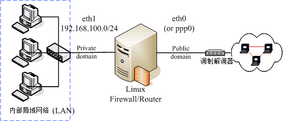
图 9.4-1、一个局域网络的路由器架构示意图
由于希望将信任网域 (LAN) 与不信任网域 (Internet) 整个分开的完整一点， 所以希望你可以在 Linux 上面安装两块以上的实体网卡，将两块网卡接在不同的网域，这样可以避免很多问题。
最重要的防火墙政策是：『关闭所有的联机，仅开放特定的服务』模式。 而且假设内部使用者已经受过良好的训练，因此在 filter table 的三条链个预设政策是：
- INPUT 为 DROP
- OUTPUT 及 FORWARD 为 ACCEPT
鸟哥底下预计提供的防火墙流程是这样的：
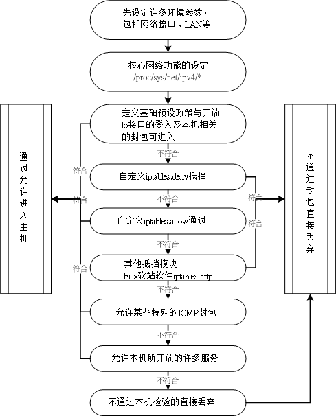
图 9.4-2、本机的防火墙规则流程示意图
原则上，内部 LAN 主机与主机本身的开放度很高，因为 Output 与 Forward 是完全开放不理的！对于小家庭的主机是可以接受的，因为我们内部的计算机数量不多，而且人员都是熟悉的， 所以不需要特别加以控管！但是：『在大企业的内部，这样的规划是很不合格的， 因为你不能保证内部所有的人都可以按照你的规定来使用 Network ！』也就是说『家贼难防』呀！ 因此，那样的环境连 Output 与 Forward 都需要特别加以管理才行！
9.4.2 实际设定
底下是利用上面的流程图所规划出来的防火墙脚本，你可以参考看看， 但是你需要将环境修改成适合你自己的环境才行喔！此外，为了未来修改维护的方便，鸟哥将整个 script 拆成三部分，分别是：
- iptables.rule：设定最基本的规则，包括清除防火墙规则、加载模块、设定服务可接受等；
- iptables.deny：设定抵挡某些恶意主机的进入；
- iptables.allow：设定允许某些自定义的后门来源主机！
鸟哥个人习惯是将这个脚本放置到 /usr/local/virus/iptables 目录下，你也可以自行放置到自己习惯的位置去.
[root@www ~]# mkdir -p /usr/local/virus/iptables
[root@www ~]# cd /usr/local/virus/iptables
[root@www iptables]# vim iptables.rule
#!/bin/bash
# 请先输入您的相关参数，不要输入错误了！
EXTIF="eth0" # 这个是可以连上 Public IP 的网络接口
INIF="eth1" # 内部 LAN 的连接接口；若无则写成 INIF=""
INNET="192.168.100.0/24" # 若无内部网域接口，请填写成 INNET=""
export EXTIF INIF INNET
# 第一部份，针对本机的防火墙设定！##########################################
# 1. 先设定好核心的网络功能：
echo "1" > /proc/sys/net/ipv4/tcp_syncookies
echo "1" > /proc/sys/net/ipv4/icmp_echo_ignore_broadcasts
for i in /proc/sys/net/ipv4/conf/*/{rp_filter,log_martians}; do
echo "1" > $i
done
for i in /proc/sys/net/ipv4/conf/*/{accept_source_route,accept_redirects,\
send_redirects}; do
echo "0" > $i
done
# 2. 清除规则、设定默认政策及开放 lo 与相关的设定值
PATH=/sbin:/usr/sbin:/bin:/usr/bin:/usr/local/sbin:/usr/local/bin; export PATH
iptables -F
iptables -X
iptables -Z
iptables -P INPUT DROP
iptables -P OUTPUT ACCEPT
iptables -P FORWARD ACCEPT
iptables -A INPUT -i lo -j ACCEPT
iptables -A INPUT -m state --state RELATED,ESTABLISHED -j ACCEPT
# 3. 启动额外的防火墙 script 模块
if [ -f /usr/local/virus/iptables/iptables.deny ]; then
sh /usr/local/virus/iptables/iptables.deny
fi
if [ -f /usr/local/virus/iptables/iptables.allow ]; then
sh /usr/local/virus/iptables/iptables.allow
fi
if [ -f /usr/local/virus/httpd-err/iptables.http ]; then
sh /usr/local/virus/httpd-err/iptables.http
fi
# 4. 允许某些类型的 ICMP 封包进入
AICMP="0 3 3/4 4 11 12 14 16 18"
for tyicmp in $AICMP
do
iptables -A INPUT -i $EXTIF -p icmp --icmp-type $tyicmp -j ACCEPT
done
# 5. 允许某些服务的进入，请依照你自己的环境开启
# iptables -A INPUT -p TCP -i $EXTIF --dport 21 --sport 1024:65534 -j ACCEPT # FTP
# iptables -A INPUT -p TCP -i $EXTIF --dport 22 --sport 1024:65534 -j ACCEPT # SSH
# iptables -A INPUT -p TCP -i $EXTIF --dport 25 --sport 1024:65534 -j ACCEPT # SMTP
# iptables -A INPUT -p UDP -i $EXTIF --dport 53 --sport 1024:65534 -j ACCEPT # DNS
# iptables -A INPUT -p TCP -i $EXTIF --dport 53 --sport 1024:65534 -j ACCEPT # DNS
# iptables -A INPUT -p TCP -i $EXTIF --dport 80 --sport 1024:65534 -j ACCEPT # WWW
# iptables -A INPUT -p TCP -i $EXTIF --dport 110 --sport 1024:65534 -j ACCEPT # POP3
# iptables -A INPUT -p TCP -i $EXTIF --dport 443 --sport 1024:65534 -j ACCEPT # HTTPS
# 第二部份，针对后端主机的防火墙设定！###############################
# 1. 先加载一些有用的模块
modules="ip_tables iptable_nat ip_nat_ftp ip_nat_irc ip_conntrack
ip_conntrack_ftp ip_conntrack_irc"
for mod in $modules
do
testmod=`lsmod | grep "^${mod} " | awk '{print $1}'`
if [ "$testmod" == "" ]; then
modprobe $mod
fi
done
# 2. 清除 NAT table 的规则吧！
iptables -F -t nat
iptables -X -t nat
iptables -Z -t nat
iptables -t nat -P PREROUTING ACCEPT
iptables -t nat -P POSTROUTING ACCEPT
iptables -t nat -P OUTPUT ACCEPT
# 3. 若有内部接口的存在 (双网卡) 开放成为路由器，且为 IP 分享器！
if [ "$INIF" != "" ]; then
iptables -A INPUT -i $INIF -j ACCEPT
echo "1" > /proc/sys/net/ipv4/ip_forward
if [ "$INNET" != "" ]; then
for innet in $INNET
do
iptables -t nat -A POSTROUTING -s $innet -o $EXTIF -j MASQUERADE
done
fi
fi
# 如果你的 MSN 一直无法联机，或者是某些网站 OK 某些网站不 OK，
# 可能是 MTU 的问题，那你可以将底下这一行给他取消批注来启动 MTU 限制范围
# iptables -A FORWARD -p tcp -m tcp --tcp-flags SYN,RST SYN -m tcpmss \
# --mss 1400:1536 -j TCPMSS --clamp-mss-to-pmtu
# 4. NAT 服务器后端的 LAN 内对外之服务器设定
# iptables -t nat -A PREROUTING -p tcp -i $EXTIF --dport 80 \
# -j DNAT --to-destination 192.168.1.210:80 # WWW
# 5. 特殊的功能，包括 Windows 远程桌面所产生的规则，假设桌面主机为 1.2.3.4
# iptables -t nat -A PREROUTING -p tcp -s 1.2.3.4 --dport 6000 \
# -j DNAT --to-destination 192.168.100.10
# iptables -t nat -A PREROUTING -p tcp -s 1.2.3.4 --sport 3389 \
# -j DNAT --to-destination 192.168.100.20
# 6. 最终将这些功能储存下来吧！
/etc/init.d/iptables save
特别留意上面程序代码的特殊字体部分，基本上，你只要修改一下最上方的接口部分， 应该就能够运作这个防火墙了。不过因为每个人的环境都不相同， 因此你在设定完成后，依旧需要测试一下才行.
再来看一下关于 iptables.allow 的内容是如何？假如我要让一个 140.116.44.0/24 这个网域的所有主机来源可以进入我的主机的话，那么这个档案的内容可以写成这样：
[root@www iptables]# vim iptables.allow #!/bin/bash # 底下则填写你允许进入本机的其他网域或主机啊！ iptables -A INPUT -i $EXTIF -s 140.116.44.0/24 -j ACCEPT # 底下则是关于抵挡的档案设定法！ [root@www iptables]# vim iptables.deny #!/bin/bash # 底下填写的是『你要抵挡的那个咚咚！』 iptables -A INPUT -i $EXTIF -s 140.116.44.254 -j DROP [root@www iptables]# chmod 700 iptables.*
将这三个档案的权限设定为 700 且只属于 root 的权限后，就能够直接执行 iptables.rule
Note: 上面的案例当中，鸟哥预设将所有的服务的通道都是关闭的！ 所以你必须要到本机防火墙的第 5 步骤 [ME: 第一部分的第五步] 处将一些批注符号 (#) 解开才行。 同样的，如果有其他更多的 port 想要开启时，一样需要增加额外的规则才行
还是如同前面我们所说的，这个 firewall 仅能提供基本的安全防护，其他的相关问题还需要再测试测试.
此外，如果你希望一开机就自动执行这个 script 的话，请将这个档案的完整档名写入 /etc/rc.d/rc.local 当中 [ME: /etc/rc.local on ubuntu]:
[root@www ~]# vim /etc/rc.d/rc.local ....(其他省略).... # 1. Firewall /usr/local/virus/iptables/iptables.rule
事实上，这个脚本的最底下已经加入写入防火墙默认规则文件的功能，所以你只要执行一次，就拥有最正确的规则了！ 上述的 rc.local 仅是预防万一而已。
Note: 上述三个档案请你不要在 Windows 系统上面编辑后才传送到 Linux 上运作，因为 Windows 系统的断行字符问题，将可能导致该档案无法执行。建议你直接到底下去下载，传送到 Linux 后可以利用 dos2unix 指令去转换断行字符！就不会有问题！ http://linux.vbird.org/download/index.php?action=detail&fileid=43
这就是一个最简单、阳春的防火墙。同时，这个防火墙还可以具有最阳春的 IP 分享器的功能呢！ 也就是在 iptables.rule 这个档案当中的第二部分了。 这部分我们在下一节会再继续介绍的。
TODO 9.5 NAT 服务器的设定
9.5.1 什么是 NAT？ SNAT？ DNAT？
9.5.2 最阳春 NAT 服务器： IP 分享功能
9.5.3 iptables 的额外核心模块功能
9.5.4 在防火墙后端之网络服务器 DNAT 设定
9.6 重点回顾
- 要拥有一部安全的主机，必须要有良好的主机权限设定；随时的更新套件；定期的重要数据备份；完善的员工教育训练。 仅有防火墙是不足够的；
- 防火墙最大的功能就是帮助你『限制某些服务的存取来源』，可以管制来源与目标的 IP ；
- 防火墙依据封包抵挡的阶层，可以分为 Proxy 以及 IP Filter (封包过滤) 两种类型；
- 在防火墙内，但不在 LAN 内的服务器所在网域，通常被称为 DMZ (非军事区)，如图 9.1-4所示；
- 封包过滤机制的防火墙，通常至少可以分析 IP, port, flag (如 TCP 封包的 SYN), MAC 等等；
- 防火墙对于病毒的抵挡并不敏感；
- 防火墙对于来自内部的网络误用或滥用的抵挡性可能较不足；
- 并不是架设防火墙之后，系统就一定很安全！还是需要更新套件漏洞以及管制使用者及权限设定等；
- 核心 2.4 以后的 Linux 使用 iptables 作为防火墙的软件；
- 防火墙的订定与『规则顺序』有很大的关系；若规则顺序错误，可能会导致防火墙的失效；
- iptables 的预设 table 共有三个，分别是 filter, nat 及 mangle ，惯用者为 filter (本机) 与 nat (后端主机)。
- filter table 主要为针对本机的防火墙设定，依据封包流向又分为 INPUT, OUTPUT, FORWARD 三条链；
- nat table 主要针对防火墙的后端主机，依据封包流向又分为 PREROUTING, OUTPUT, POSTROUTING 三条链， 其中 PREROUTING 与 DNAT 有关， POSTROUTING 则与 SNAT 有关；
- iptables 的防火墙为规则比对，但所有规则都不符合时，则以预设政策 (policy) 作为封包的行为依据；
- iptables 的指令列当中，可以下达的参数相当的多，当下达 -j LOG 的参数时，则该封包的流程会被纪录到 /var/log/messages 当中；
- 防火墙可以多重设定，例如虽然已经设定了 iptables ，但是仍然可以持续设定 TCP Wrappers ，因为谁也不晓得什么时候 iptables 会有漏洞～或者是规则规划不良！
TODO 9.7 本章习题
TODO 9.8 参考数据与延伸阅读
9.9 针对本文的建议：http://phorum.vbird.org/viewtopic.php?p=114475
TODO 第十章、申请合法的主机名
(http://cn.linux.vbird.org/linux_server/0270dynamic_dns.php)
在读完了网络基础并且架设了个人简易的防火墙之后，总算是准备要开始来给他进入 Server 的架设了！服务器架设的步骤里面，很重要的一点是『你的主机名必须要在 Internet 上面可以被查询』才好！这是因为人类对于 IP 记忆力不佳，所以才会以主机名来取代 IP。不过， 你的主机名要能够被查询到才有用啊！这个时候，一个『合法』的主机名就很重要了！那要合法的主机，就得要让 DNS 系统能够找的到你的主机啊！不过，如果我们的主机是使用拨接得到的不固定 IP 呢？又该如何申请 DNS 主机名？那就得要使用动态 DNS 的系统啰！在这个章节中，我们主要在介绍 Client 端的设定，而不是在设定 DNS 服务器喔！
10.1 为何需要主机名
因为 IP 是那么难背的东西，而且，如果你的 IP 又是类似拨接的不固定的 IP 时，那还更伤脑筋呢！ 因此我们才会习惯以熟悉的英文字符串来做为主机名，然后让『这个主机名与 IP 达成对应』，那直接记忆主机名就行了，反正 IP 的查询就交给计算机主机来做即可！在这样的想法下，我们当然就需要有主机名啦！
Tip: 在这个章节当中，我们将会介绍如何申请一个合法的主机名。目前 Internet 上面使用的主机名都是透过所谓的 DNS 系统，而你想要取得一个 DNS 的主机名，就必须要『注册』，所谓的『注册』就是要钱去申请啦！ 当然也有免费提供主机名的服务啦！在这个章节当中鸟哥不会介绍如何架设一部 DNS 服务器， 而是介绍如何利用注册或免费申请的方式来达成主机名的取得。
10.1.1 主机名的由来
早期连上网络的计算机数量不多，所以在网络上的人们就想出一个简单的办法来进行主机名与 IP 的对应，那就是『在每部计算机的 /etc/hosts 里面设定好主机名与 IP 的对应表』。那么人们就可以直接藉由主机名来连接上某些网络上的主机
因为科技的发达，连上 Internet 的人们越来越多，使用 /etc/hosts 的方法已经搞不定了 (只要一部新计算机上线，全部 Internet 上面的所有计算机都要重新改写 /etc/hosts 才行！) ，这个时候领域名系统 ( Domain Name System, DNS ) 就适时的出现了！
DNS 利用类似树状目录的型态，将主机名的管理分配在不同层级的 DNS 服务器当中，经由分层管理，所以每一部服务器记忆的信息就不会很多，而且异动上面也相当的容易修改！他的额外功能还很多，关于 DNS 的详细的解析部分我们将在后续的 第十九章 DNS 服务器架设当中再持续的加强内容，总之， 它的最大功能就是『让有意义的，人类较容易记忆的主机名(英文字母) ，转译成为计算机所熟悉的 IP 地址！』
如何加入一个主机名到 DNS 系统当中呢？『授权』是重点！那什么是授权呢？
10.1.2 重点在合法授权
除非你经由『注册』的手续来让 DNS 系统承认你主机名存在的合法性，否则你架设的 DNS 只能说是一个『地下练习的测试站』而已啦！并没有用途的。
如何加入 DNS 系统呢？很简单啦！首先你必须要选择一个注册单位， 并且检查出你想要注册的主机名是否存在？
要了解啥是『合法授权』的话，得要从 DNS 主机名的查询方式来谈起，由于 DNS 查询的方式都是由上层的 ISP 提供解析授权给下游的注册者，因此，下游的注册者只要设定妥当后， 全世界的主机就会知道你设定的数据了。详细的查询流程我们留到DNS 服务器章节再来谈， 底下仅是介绍一个简单的查询示意图。
10.1.3 申请静态还是动态 DNS 主机名
10.2 注册一个合法的主机名
10.2.1 静态 DNS 主机名注册：以 Hinet 为例
10.2.2 动态 DNS 主机名注册：以 no-ip 为例
10.3 重点回顾
- 主机名的目的在辅助人们记忆 TCP/IP 的 IP 数值；
- 主机名与 IP 的对应，由早期的 /etc/hosts 变更为 DNS 系统来记录
- 合法的主机名必须要透过合法授权后，才能够在 Internet 上面完整的生效
- 除了静态的主机名与 IP 对应外，若是不固定 IP 的联机模式，可以透过动态 DNS 服务，来达成非固定 IP 永远指向同一个主机名的任务。
10.4 本章习题
10.5 参考数据与延伸阅读
10.6 针对本文的建议：http://phorum.vbird.org/viewtopic.php?t=26634
第三部分：局域网络内常见的服务器架设
在开始实际 Linux 的网络服务器架设之前，切记前面两篇的内容都已经阅读过，并且已经强化您主机的网络安全后，才开始架设吧！
先来了解一下局域网络内常见的服务器吧。
这一篇当中，我们主要会介绍管理服务器用的联机服务器如 ssh, xdmcp, VNC, xrdp 等服务，然后针对网络参数管理部份来介绍 DHCP 服务器，在针对文件服务器的 NFS, SAMBA 等服务，再介绍与 NFS 相关性很强的账号同步的 NIS 服务器，然后介绍两个常见的服务器， 包括时间同步的 NTP 与网络监控能力较佳的 Proxy 服务器，最终再讲一个磁盘不够时的 iSCSI 仿真器吧！
第十一章、远程联机服务器SSH / XDMCP / VNC / RDP
(http://cn.linux.vbird.org/linux_server/0310telnetssh.php)
维护网络服务器最简单的方式不是跑去实体服务器前面登入，而是透过远程联机服务器联机功能来登入主机.
Linux 主机几乎都会提供 sshd 这个联机服务，而且这个服务还是主动进行数据加密的！ 讯息在网络上面跑安全多了。同时我们还能透过 rsync 这个指令以 sshd 信道来达成异地数据备援的功能
如果想要利用图形接口登入，那么默认的 Xdmcp 配合 VNC 就能够使用图形接口在网络的另一端登入你的服务器！ 如果你习惯使用 Windows 的远程桌面，那么 XRDP 也不要放过
11.1 远程联机服务器
开放全世界都可以尝试登入你的主机并不个好主意，因为可能会有安全性的问题
11.1.1 什么是远程联机服务器
远程联机服务器在提供你由远程透过文字或图形接口的方式来登入系统， 让你在远程的工作机前面登入 Linux 主机以取得可操控主机之接口 (shell)，而登入后的操作感觉上就像坐在系统前面一样
联机服务器的功能作用之一：分享 Unix Like 主机的运算能力
服务器类型 (Server) ：有限度的开放联机
服务器类型 (Server) ：有限度的开放联机
工作站类型 (Workstation) ：只对内网开放
工作站就是不提供因特网服务的主机，仅提供大量的运算能力给使用者。必须要提供给使用者登入的权限，这样大家才用的到运算功能啊！ 此时你就得要针对内部，或者是特定的某些来源开放他们使用你的工作站.
11.1.2 有哪些可供登入的类型？
以登入的联机界面来分类，基本上有文字接口与图形接口两种：
- 文字接口明码： telnet, rsh 等为主，目前非常少用；
- 文字接口密码： ssh 为主，已经取代上述的 telnet, rsh 等明码方式；
- 图形接口： Xdmcp, VNC, RDP 等较为常见. 比较简单的有 Xdmcp (X Display Manager Control Protocol)，架设 Xdmcp 很简单， 不过客户端的软件比较少。另外一款目前很常见的图形联机服务器，就是 VNC (Virtual Network Computing)， 透过 VNC server/client 软件来进行连接。如果你想要使用类似 Windows 的远程桌面联机，该功能使用的是 RDP (Remote Desktop Protocol)，那你可得要架设 RDP 服务器才行。
Tip: 建议你将图形接口的远程登录服务器开放在内部网域 (LAN)
由于明码传输的 telnet, rsh 等联机服务器已经被 ssh 取代，并且在一些实际应用上已经很少看到 telnet 与 rsh 了， 因此本章在文字接口上着重于介绍 ssh 的应用，包括以 rsync 藉由 ssh 通道来进行异地备援的任务等等。至于图形接口则会介绍 Xdmcp, VNC 与 RDP 喔！因为很多工作站用户需要显示他们在工作站实作后的图形呈现，因此这部分也是很重要的呢！
数据传送的明码与密码
使用 telnet 登入远程主机时，不是得要输入账号密码吗？那你的账号密码是以原本的数据格式传输， 所以如果被类似 tcpdump 之类的监听软件撷取数据， 那你的帐密就有可能被窃取啦！
目前我们通常都希望使用可以将这些在网络上面跑的数据加密的技术，以增加数据在 Internet 上面传送的安全性
Tip: 说 ssh 比较安全，其实是透过 ssh 信道传输讯息时，该讯息在网络上面比较安全，因为数据是加密过的，即使被窃取， 对方可能也不会知道数据内容为何，因此信息比较安全。但这不代表 ssh 这个通讯协议就比较安全喔！两者意义不同！
11.2 文字接口联机服务器：SSH 服务器
SSH 是 Secure SHell protocol 的简写 (安全的壳程序协议)，它可以透过数据封包加密技术，将等待传输的封包加密后再传输到网络上
SSH 可以用来取代较不安全的 finger, R Shell (rcp, rlogin, rsh 等), talk 及 telnet 等联机模式
注意：这个 SSH 协议，在预设的状态中，本身就提供两个服务器功能：
- 一个就是类似 telnet 的远程联机使用 shell 的服务器，亦即是俗称的 ssh ；
- 另一个就是类似 FTP 服务的 sftp-server ！提供更安全的 FTP 服务。
11.2.1 联机加密技术简介： 产生新的公钥
目前常见的网络封包加密技术通常是藉由所谓的『非对称密钥系统』来处理的。 主要是透过两把不一样的公钥与私钥 (Public and Private Key) 来进行加密与解密的过程。由于这两把钥匙是提供加解密的功用， 所以在同一个方向的联机中，这两把钥匙当然是需要成对的！它的功用分别如下：
- 公钥 (public key)：提供给远程主机进行数据加密的行为，也就是说，大家都能取得你的公钥来将数据加密的意思；
- 私钥 (private key)：远程主机使用你的公钥加密的数据，在本地端就能够使用私钥来进行解密。由于私钥是这么的重要， 因此私钥是不能够外流的！只能保护在自己的主机上。
由于每部主机都应该有自己的密钥 (公钥与私钥)，且公钥用来加密而私钥用来解密， 其中私钥不可外流。但因为网络联机是双向的，所以，每个人应该都要有对方的『公钥』才对
Tip: 数据加密的技术真的相当的多，也各有其优缺点，有的指令周期快，但是不够安全；有的够安全，但是加密/解密的速度较慢～ 目前在 SSH 使用上，主要是利用 RSA/DSA/Diffie-Hellman 等机制喔！
目前 SSH 的协议版本有两种，分别是 version 1 与 version 2 ，其中 V2 由于加上了联机检测的机制， 可以避免联机期间被插入恶意的攻击码，因此比 V1 还要更加的安全。所以啰，请尽量使用 V2 版本即可
SSH 的联机行为简介
我们可以将 ssh 服务器端与客户端的联机步骤示意为下图，至于步骤说明如后：
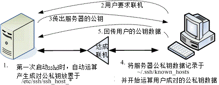
图 11.2-2、ssh 服务器端与客户端的联机步骤示意图
- 服务器建立公钥档： 每一次启动 sshd 服务时，该服务会主动去找 /etc/ssh/sshhost* 的档案，若系统刚刚安装完成时，由于没有这些公钥档案，因此 sshd 会主动去计算出这些需要的公钥档案，同时也会计算出服务器自己需要的私钥档；
- 客户端主动联机要求： 若客户端想要联机到 ssh 服务器，则需要使用适当的客户端程序来联机，包括 ssh, pietty 等客户端程序；
- 服务器传送公钥档给客户端： 接收到客户端的要求后，服务器便将第一个步骤取得的公钥档案传送给客户端使用 (此时应是明码传送，反正公钥本来就是给大家使用的！)；
- 客户端记录/比对服务器的公钥数据及随机计算自己的公私钥： 若客户端第一次连接到此服务器，则会将服务器的公钥数据记录到客户端的用户家目录内的 ~/.ssh/knownhosts 。若是已经记录过该服务器的公钥数据，则客户端会去比对此次接收到的与之前的记录是否有差异。若接受此公钥数据， 则开始计算客户端自己的公私钥数据；
- 回传客户端的公钥数据到服务器端： 用户将自己的公钥传送给服务器。此时服务器：『具有服务器的私钥与客户端的公钥』，而客户端则是： 『具有服务器的公钥以及客户端自己的私钥』，你会看到，在此次联机的服务器与客户端的密钥系统 (公钥+私钥) 并不一样，所以才称为非对称式密钥系统喔。
- 开始双向加解密： (1)服务器到客户端：服务器传送数据时，拿用户的公钥加密后送出。客户端接收后，用自己的私钥解密； (2)客户端到服务器：客户端传送数据时，拿服务器的公钥加密后送出。服务器接收后，用服务器的私钥解密。
在上述的第 4 步骤中，客户端的密钥是随机运算产生于本次联机当中的，所以你这次的联机与下次的联机的密钥可能就会不一样啦！ 此外在客户端的用户家目录下的 ~/.ssh/knownhosts 会记录曾经联机过的主机的 public key ，用以确认我们是连接上正确的那部服务器。[ME: still need login]
例题： 如何产生新的服务器端的 ssh 公钥与服务器自己使用的成对私钥？ (注：注意，本例题不要在已经正常运作的网络服务器上面，因为可能会造成其他客户端的困扰！)
答： 由于服务器提供的公钥与自己的私钥都放置于 /etc/ssh/sshhost* ，因此你可以这样做：
root@www ~]# rm /etc/ssh/ssh_host* <==删除密钥档 [root@www ~]# /etc/init.d/sshd restart 正在停止 sshd: [ 确定 ] 正在产生 SSH1 RSA 主机密钥: [ 确定 ] <==底下三个步骤重新产生密钥！ 正在产生 SSH2 RSA 主机密钥: [ 确定 ] 正在产生 SSH2 DSA 主机密钥: [ 确定 ] 正在激活 sshd: [ 确定 ] [root@www ~]# date; ll /etc/ssh/ssh_host* Mon Jul 25 11:36:12 CST 2011 -rw-------. 1 root root 668 Jul 25 11:35 /etc/ssh/ssh_host_dsa_key -rw-r--r--. 1 root root 590 Jul 25 11:35 /etc/ssh/ssh_host_dsa_key.pub -rw-------. 1 root root 963 Jul 25 11:35 /etc/ssh/ssh_host_key -rw-r--r--. 1 root root 627 Jul 25 11:35 /etc/ssh/ssh_host_key.pub -rw-------. 1 root root 1675 Jul 25 11:35 /etc/ssh/ssh_host_rsa_key -rw-r--r--. 1 root root 382 Jul 25 11:35 /etc/ssh/ssh_host_rsa_key.pub # 看一下上面输出的日期与档案的建立时间，刚刚建立的新公钥、私钥系统！
11.2.2 启动 ssh 服务
Linux 系统当中，默认就已经含有 SSH 的所有需要的软件了！这包含了可以产生密码等协议的 OpenSSL 软件与 OpenSSH 软件 (注1)，所以呢，要启动 SSH 真的是太简单了！
手动可以这样启动：
[root@www ~]# /etc/init.d/sshd restart [root@www ~]# netstat -tlnp | grep ssh Active Internet connections (only servers) Proto Recv-Q Send-Q Local Address Foreign Address State PID/Program name tcp 0 0 :::22 :::* LISTEN 1539/sshd
这个 sshd 可以同时提供 shell 与 ftp 喔！而且都是架构在 port 22 上面
11.2.3 ssh 客户端联机程序 - Linux 用户： ssh, ~/.ssh/knownhosts, sftp, scp
[root@www ~]# ssh [-f] [-o 参数项目] [-p 非正规埠口] [账号@]IP [指令]
选项与参数：
-f ：需要配合后面的 [指令] ，不登入远程主机直接发送一个指令过去而已；
-o 参数项目：主要的参数项目有：
ConnectTimeout=秒数 ：联机等待的秒数，减少等待的时间
StrictHostKeyChecking=[yes|no|ask]：预设是 ask, 若要让 public key 主动加入 known_hosts ，则可以设定为 no 即可。
-p ：如果你的 sshd 服务启动在非正规的埠口 (22)，需使用此项目；
[指令] ：不登入远程主机，直接发送指令过去。但与 -f 意义不太相同。
# 1. 直接联机登入到对方主机的方法 (以登入本机为例)：
[root@www ~]# ssh 127.0.0.1
The authenticity of host '127.0.0.1 (127.0.0.1)' can't be established.
RSA key fingerprint is eb:12:07:84:b9:3b:3f:e4:ad:ba:f1:85:41:fc:18:3b.
Are you sure you want to continue connecting (yes/no)? yes
Warning: Permanently added '127.0.0.1' (RSA) to the list of known hosts.
root@127.0.0.1's password: <==在这里输入 root 的密码即可！
Last login: Mon Jul 25 11:36:06 2011 from 192.168.1.101
[root@www ~]# exit <==离开这次的 ssh 联机
# 由于 ssh 后面没有加上账号，因此预设使用当前的账号来登入远程服务器
# 2. 使用 student 账号登入本机 [root@www ~]# ssh student@127.0.0.1 student@127.0.0.1's password: [student@www ~]$ exit # 由于加入账号，因此切换身份成为 student 了！另外，因为 127.0.0.1 曾登入过， # 所以就不会再出现提示你要增加主机公钥的讯息啰！ # 3. 登入对方主机执行过指令后立刻离开的方式： [root@www ~]# ssh student@127.0.0.1 find / &> ~/find1.log student@localhost's password: # 此时你会发现怎么画面卡住了？这是因为上头的指令会造成，你已经登入远程主机， # 但是执行的指令尚未跑完，因此你会在等待当中。那如何指定系统自己跑？ # 4. 与上题相同，但是让对方主机自己跑该指令，你立刻回到近端主机继续工作： [root@www ~]# ssh -f student@127.0.0.1 find / &> ~/find1.log # 此时你会立刻注销 127.0.0.1 ，但 find 指令会自己在远程服务器跑喔！
- 上述的范例当中，第 4 个范例最有用！如果你想要让远程主机进行关机的指令，如果不加上 -f 的参数， 那你会等待对方主机关机完毕再将你踢出联机，这比较不合理。因此，加上 -f 就很重要～因为你会指定远程主机自己跑关机， 而不需要在空空等待。例如：『ssh -f root@someIP shutdown -h now 』之类的指令
# 5. 删除掉 known_hosts 后，重新使用 root 联机到本机，且自动加上公钥记录 [root@www ~]# rm ~/.ssh/known_hosts [root@www ~]# ssh -o StrictHostKeyChecking=no root@localhost Warning: Permanently added 'localhost' (RSA) to the list of known hosts. root@localhost's password: # 如上所示，不会问你 yes 或 no 啦！直接会写入 ~/.ssh/known_hosts 当中！
- 鸟哥上课常常使用 ssh 联机到同学的计算机去看他有没有出错，有时候会写 script 来进行答案侦测。 此时如果每台计算机都在主动加上公钥文件记录，都得要输入『 yes 』，会累死！那么加上这个 StrictHostKeyChecking=no 就很有帮助啦！他会不询问自动加入主机的公钥到档案中，对于一般使用者帮助不大，对于程序脚本来说， 这玩意儿可就很不错用了！
服务器公钥记录文件： ~/.ssh/knownhosts
例题： 仿真伺服器重新安装后，假设服务器使用相同的 IP ，造成相同 IP 的服务器公钥不同，产生的问题与解决之道为何？
答： 利用前一小节讲过的方式，删除原有的系统公钥，重新启动 ssh 让你的公钥更新：
rm /etc/ssh/ssh_host* /etc/init.d/sshd restart
然后重新使用底下的方式来进行联机的动作：
[root@www ~]# ssh root@localhost @@@@@@@@@@@@@@@@@@@@@@@@@@@@@@@@@@@@@@@@@@@@@@@@@@@@@@@@@@@ @ WARNING: REMOTE HOST IDENTIFICATION HAS CHANGED! @ <==就告诉你可能有问题 @@@@@@@@@@@@@@@@@@@@@@@@@@@@@@@@@@@@@@@@@@@@@@@@@@@@@@@@@@@ IT IS POSSIBLE THAT SOMEONE IS DOING SOMETHING NASTY! Someone could be eavesdropping on you right now (man-in-the-middle attack)! It is also possible that the RSA host key has just been changed. The fingerprint for the RSA key sent by the remote host is a7:2e:58:51:9f:1b:02:64:56:ea:cb:9c:92:5e:79:f9. Please contact your system administrator. Add correct host key in /root/.ssh/known_hosts to get rid of this message. Offending key in /root/.ssh/known_hosts:1 <==冒号后面接的数字就是有问题数据行号 RSA host key for localhost has changed and you have requested strict checking. Host key verification failed.
上述的表格出现的错误讯息中，特殊字体的地方在告诉你：/root/.ssh/knownhosts 的第 1 行，里面的公钥与这次接收到的结果不同， 很可能被攻击了！那怎办？没关系啦！请你使用 vim 到 root.ssh/knownhosts ，并将第 1 行(冒号 : 后面接的数字就是了) 删除，之后再重新 ssh 过，那系统又会重新问你要不要加上公钥啰！就这么简单！ ^_^
模拟 FTP 的文件传输方式： sftp
如果你只是想要从远程服务器下载或上传档案呢？ 那就不是使用 ssh 啦，而必须要使用 sftp 或 scp。这两个指令也都是使用 ssh 的通道 (port 22)，只是模拟成 FTP 与复制的动作而已。我们先谈谈 sftp ，这个指令的用法与 ssh 很相似，只是 ssh 是用在登入而 sftp 在上传/下载文件而已。
[root@www ~]# sftp student@localhost Connecting to localhost... student@localhost's password: <== 这里请输入密码啊！ sftp> exit <== 这里就是在等待你输入 ftp 相关指令的地方了！
sftp 这个接口下的使用指令:
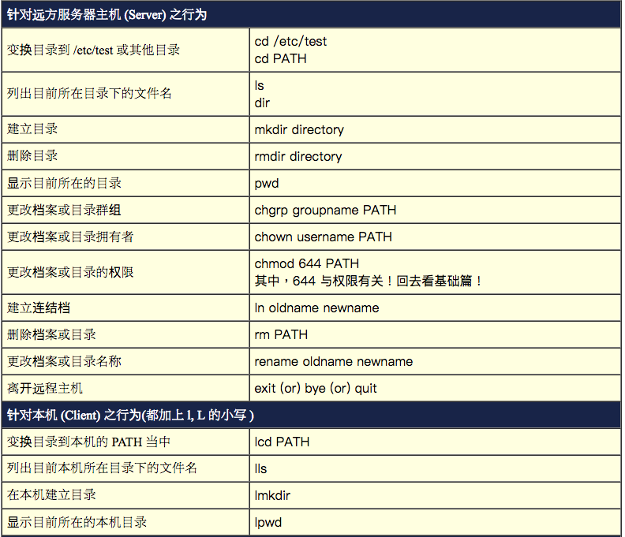
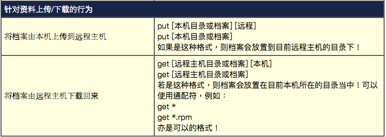
如果你不喜欢使用文字接口进行 FTP 的传输，那么还可以透过图形接口来连接到 sftp-server 哩！ 你可以利用二十一章 FTP 服务器提到的 Filezilla 来进行联机
档案异地直接复制： scp
通常使用 sftp 是因为可能不知道服务器上面有什么档名的档案存在，如果已经知道服务器上的档案档名了， 那么最简单的文件传输则是透过 scp 这个指令喔！最简单的 scp 用法如下：
[root@www ~]# scp [-pr] [-l 速率] file [账号@]主机:目录名 <==上传 [root@www ~]# scp [-pr] [-l 速率] [账号@]主机:file 目录名 <==下载 选项与参数： -p ：保留原本档案的权限数据； -r ：复制来源为目录时，可以复制整个目录 (含子目录) -l ：可以限制传输的速度，单位为 Kbits/s ，例如 [-l 800] 代表传输速限 100Kbytes/s # 1. 将本机的 /etc/hosts* 全部复制到 127.0.0.1 上面的 student 家目录内 [root@www ~]# scp /etc/hosts* student@127.0.0.1:~ student@127.0.0.1's password: <==输入 student 密码 hosts 100% 207 0.2KB/s 00:00 hosts.allow 100% 161 0.2KB/s 00:00 hosts.deny 100% 347 0.3KB/s 00:00 # 文件名显示 进度 容量(bytes) 传输速度 剩余时间 # 你可以仔细看，出现的讯息有五个字段，意义如上所示。 # 2. 将 127.0.0.1 这部远程主机的 /etc/bashrc 复制到本机的 /tmp 底下 [root@www ~]# scp student@127.0.0.1:/etc/bashrc /tmp
其实上传或下载的重点是那个冒号 (:) 啰！连接在冒号后面的就是远程主机的档案。 因此，如果冒号在前，代表的就是从远程主机下载下来，如果冒号在后，则代表本机数据上传啦！ 而如果想要复制目录的话，那么可以加上 -r 的选项！
例题： 假设本机有个档案档名为 /root/dd10mbfile ，这个档案有 10 MB 这么大。假设你想要上传到 127.0.0.1 的 /tmp 底下去， 而且你在 127.0.0.1 上面有 root 这个账号的使用权。但由于带宽很宝贵，因此你只想要花费 100Kbyes/s 的传输量给此一动作， 那该如何下达指令？
答： 由于预设不存在这个档案，因此我们得先使用 dd 来建立一个大档案：
dd if=/dev/zero of=/root/dd_10mb_file bs=1M count=10
建立妥当之后，由于是上传数据，观察 -l 的选项中，那个速率用的是 bit ，转成容量的 bytes 需要乘上 8 倍，因此指令就要这样下达：
scp -l 800 /root/dd_10mb_file root@127.0.0.1:/tmp
11.2.4 ssh 客户端联机程序 - Windows 用户： pietty, psftp, filezilla
直接联机的 pietty
在 Linux 底下想要连接 SSH 服务器，可以直接利用 ssh 这个指令，在 Windows 操作系统底下就得要使用 pietty 或 putty 这两个玩意儿，这两者的下载点请参考 (注2)：
- putty 官方网站：http://www.chiark.greenend.org.uk/~sgtatham/putty/
- pietty 官方网站：http://www.csie.ntu.edu.tw/~piaip/pietty/
在 putty 的官方网站上有很多的软件可以使用的，包括 putty/pscp/psftp 等等。他们分别对应了 ssh/scp/sftp 这三个指令就是了。而鸟哥爱用的 pietty 则是台湾的林弘德先生根据 putty 所改版而成的。由于 pietty 除了完整的兼容于 putty 之外，还提供了选单与较为完整的文字编码，实在很好用 [ME: Putty和Pietty的故事]
使用 sftp-server 的功能： psftp
使用方式跟前面提到的 sftp 一样
图形化接口的 sftp 客户端软件： Filezilla
详细的安装与使用流程请参考第二十一章 vsftpd 的说明
11.2.5 sshd 服务器细部设定
基本上，所有的 sshd 服务器详细设定都放在 /etc/ssh/sshdconfig 里面！不过，每个 Linux distribution 的预设设定都不太相同，所以我们有必要来了解一下整个设定值的意义为何才好！ 同时请注意，在预设的档案内，只要是预设有出现且被批注的设定值 (设定值前面加 #)，即为『默认值！』
[root@www ~]# vim /etc/ssh/sshd_config # 1. 关于 SSH Server 的整体设定，包含使用的 port 啦，以及使用的密码演算方式 # Port 22 # SSH 预设使用 22 这个port，也可以使用多个port，即重复使用 port 这个设定项目！ # 例如想要开放 sshd 在 22 与 443 ，则多加一行内容为：『 Port 443 』 # 然后重新启动 sshd 这样就好了！不过，不建议修改 port number 啦！ Protocol 2 # 选择的 SSH 协议版本，可以是 1 也可以是 2 ，CentOS 5.x 预设是仅支援 V2。 # 如果想要支持旧版 V1 ，就得要使用『 Protocol 2,1 』才行。 # ListenAddress 0.0.0.0 # 监听的主机适配器！举个例子来说，如果你有两个 IP，分别是 192.168.1.100 及 # 192.168.100.254，假设你只想要让 192.168.1.100 可以监听 sshd ，那就这样写： # 『 ListenAddress 192.168.1.100 』默认值是监听所有接口的 SSH 要求 # PidFile /var/run/sshd.pid # 可以放置 SSHD 这个 PID 的档案！上述为默认值 # LoginGraceTime 2m # 当使用者连上 SSH server 之后，会出现输入密码的画面，在该画面中， # 在多久时间内没有成功连上 SSH server 就强迫断线！若无单位则默认时间为秒！ # Compression delayed # 指定何时开始使用压缩数据模式进行传输。有 yes, no 与登入后才将数据压缩 (delayed) # 2. 说明主机的 Private Key 放置的档案，预设使用下面的档案即可！ # HostKey /etc/ssh/ssh_host_key # SSH version 1 使用的私钥 # HostKey /etc/ssh/ssh_host_rsa_key # SSH version 2 使用的 RSA 私钥 # HostKey /etc/ssh/ssh_host_dsa_key # SSH version 2 使用的 DSA 私钥 # 还记得我们在主机的 SSH 联机流程里面谈到的，这里就是 Host Key ～ # 3. 关于登录文件的讯息数据放置与 daemon 的名称！ SyslogFacility AUTHPRIV # 当有人使用 SSH 登入系统的时候，SSH 会记录信息，这个信息要记录在什么 daemon name # 底下？预设是以 AUTH 来设定的，即是 /var/log/secure 里面！什么？忘记了！ # 回到 Linux 基础去翻一下。其他可用的 daemon name 为：DAEMON,USER,AUTH, # LOCAL0,LOCAL1,LOCAL2,LOCAL3,LOCAL4,LOCAL5, # LogLevel INFO # 登录记录的等级！嘿嘿！任何讯息！同样的，忘记了就回去参考！ # 4. 安全设定项目！极重要！ # 4.1 登入设定部分 # PermitRootLogin yes # 是否允许 root 登入！预设是允许的，但是建议设定成 no！ # StrictModes yes # 是否让 sshd 去检查用户家目录或相关档案的权限数据， # 这是为了担心使用者将某些重要档案的权限设错，可能会导致一些问题所致。 # 例如使用者的 ~.ssh/ 权限设错时，某些特殊情况下会不许用户登入 # PubkeyAuthentication yes # AuthorizedKeysFile .ssh/authorized_keys # 是否允许用户自行使用成对的密钥系统进行登入行为，仅针对 version 2。 # 至于自制的公钥数据就放置于用户家目录下的 .ssh/authorized_keys 内 PasswordAuthentication yes # 密码验证当然是需要的！所以这里写 yes 啰！ # PermitEmptyPasswords no # 若上面那一项如果设定为 yes 的话，这一项就最好设定为 no ， # 这个项目在是否允许以空的密码登入！当然不许！ # 4.2 认证部分 # RhostsAuthentication no # 本机系统不使用 .rhosts，因为仅使用 .rhosts太不安全了，所以这里一定要设定为 no # IgnoreRhosts yes # 是否取消使用 ~/.ssh/.rhosts 来做为认证！当然是！ # RhostsRSAAuthentication no # # 这个选项是专门给 version 1 用的，使用 rhosts 档案在 /etc/hosts.equiv # 配合 RSA 演算方式来进行认证！不要使用啊！ # HostbasedAuthentication no # 这个项目与上面的项目类似，不过是给 version 2 使用的！ # IgnoreUserKnownHosts no # 是否忽略家目录内的 ~/.ssh/known_hosts 这个档案所记录的主机内容？ # 当然不要忽略，所以这里就是 no 啦！ ChallengeResponseAuthentication no # 允许任何的密码认证！所以，任何 login.conf 规定的认证方式，均可适用！ # 但目前我们比较喜欢使用 PAM 模块帮忙管理认证，因此这个选项可以设定为 no 喔！ UsePAM yes # 利用 PAM 管理使用者认证有很多好处，可以记录与管理。 # 所以这里我们建议你使用 UsePAM 且 ChallengeResponseAuthentication 设定为 no # 4.3 与 Kerberos 有关的参数设定！因为我们没有 Kerberos 主机，所以底下不用设定！ # KerberosAuthentication no # KerberosOrLocalPasswd yes # KerberosTicketCleanup yes # KerberosTgtPassing no # 4.4 底下是有关在 X-Window 底下使用的相关设定！ X11Forwarding yes # X11DisplayOffset 10 # X11UseLocalhost yes # 比较重要的是 X11Forwarding 项目，他可以让窗口的数据透过 ssh 信道来传送喔！ # 在本章后面比较进阶的 ssh 使用方法中会谈到。 # 4.5 登入后的项目： # PrintMotd yes # 登入后是否显示出一些信息呢？例如上次登入的时间、地点等等，预设是 yes # 亦即是打印出 /etc/motd 这个档案的内容。但是，如果为了安全，可以考虑改为 no ！ # PrintLastLog yes # 显示上次登入的信息！可以啊！预设也是 yes ！ # TCPKeepAlive yes # 当达成联机后，服务器会一直传送 TCP 封包给客户端藉以判断对方式否一直存在联机。 # 不过，如果联机时中间的路由器暂时停止服务几秒钟，也会让联机中断喔！ # 在这个情况下，任何一端死掉后，SSH可以立刻知道！而不会有僵尸程序的发生！ # 但如果你的网络或路由器常常不稳定，那么可以设定为 no 的啦！ UsePrivilegeSeparation yes # 是否权限较低的程序来提供用户操作。我们知道 sshd 启动在 port 22 ， # 因此启动的程序是属于 root 的身份。那么当 student 登入后，这个设定值 # 会让 sshd 产生一个属于 sutdent 的 sshd 程序来使用，对系统较安全 MaxStartups 10 # 同时允许几个尚未登入的联机画面？当我们连上 SSH ，但是尚未输入密码时， # 这个时候就是我们所谓的联机画面啦！在这个联机画面中，为了保护主机， # 所以需要设定最大值，预设最多十个联机画面，而已经建立联机的不计算在这十个当中 # 4.6 关于用户抵挡的设定项目： DenyUsers * # 设定受抵挡的使用者名称，如果是全部的使用者，那就是全部挡吧！ # 若是部分使用者，可以将该账号填入！例如下列！ DenyUsers test DenyGroups test # 与 DenyUsers 相同！仅抵挡几个群组而已！ # 5. 关于 SFTP 服务与其他的设定项目！ Subsystem sftp /usr/lib/ssh/sftp-server # UseDNS yes # 一般来说，为了要判断客户端来源是正常合法的，因此会使用 DNS 去反查客户端的主机名 # 不过如果是在内网互连，这项目设定为 no 会让联机达成速度比较快。
基本上，CentOS 预设的 sshd 服务已经算是挺安全的了，不过还不够！建议你 (1)将 root 的登入权限取消； (2)将 ssh 版本设定为 2 。其他的设定值就请你依照自己的喜好来设定了。 通常不建议进行随便修改啦！另外，如果你修改过上面这个档案(/etc/ssh/sshdconfig)，那么就必需要重新启动一次 sshd 这个 daemon 才行！亦即是：
/etc/init.d/sshd restart[ME: useserice ssh restartin ubuntu.]
11.2.6 制作不用密码可立即登入的 ssh 用户： ssh-keygen
能将 scp 的指令放置于 crontab 服务中， 让我们的系统透过 scp 直接在背景底下自行定期的进行网络复制与备份, 使用 public key 登录。
实作上的步骤可以是：
- 客户端建立两把钥匙：想一想，在密钥系统中，是公钥比较重要还是私钥比较重要？ 当然是私钥比较重要！因此私钥才是解密的关键啊！所以啰，这两把钥匙当然得在发起联机的客户端建置才对。利用的指令为 ssh-keygen 这个命令；
- 客户端放置好私钥档案：将 Private Key 放在 Client 上面的家目录，亦即 $HOME/.ssh/ ， 并且得要注意权限喔！
- 将公钥放置服务器端的正确目录与文件名去：最后，将那把 Public Key 放在任何一个你想要用来登入的服务器端的某 User 的家目录内之 .ssh/ 里面的认证档案即可完成整个程序。
假设前提如下，该进行的步骤则如下图：
Server 部分为 www.centos.vbird 这部 192.168.100.254 的主机，欲使用的账号为 dmtsai ； Client 部分为 clientlinux.centos.vbird 这部 192.168.100.10 的 vbirdtsai 这个账号， 该账号要用来登入 192.168.100.254 这部主机的 dmtsai 账号。
1. 客户端建立两把钥匙：
[vbirdtsai@clientlinux ~]$ ssh-keygen [-t rsa|dsa] <==可选 rsa 或 dsa [vbirdtsai@clientlinux ~]$ ssh-keygen <==用预设的方法建立密钥 Generating public/private rsa key pair. Enter file in which to save the key (/home/vbirdtsai/.ssh/id_rsa): <==按 enter Created directory '/home/vbirdtsai/.ssh'. <==此目录若不存在则会主动建立 Enter passphrase (empty for no passphrase): <==按 Enter 不给密码 Enter same passphrase again: <==再输入一次 Enter 吧！ Your identification has been saved in /home/vbirdtsai/.ssh/id_rsa. <==私钥档 Your public key has been saved in /home/vbirdtsai/.ssh/id_rsa.pub. <==公钥档 The key fingerprint is: 0f:d3:e7:1a:1c:bd:5c:03:f1:19:f1:22:df:9b:cc:08 vbirdtsai@clientlinux.centos.vbird [vbirdtsai@clientlinux ~]$ ls -ld ~/.ssh; ls -l ~/.ssh drwx------. 2 vbirdtsai vbirdtsai 4096 2011-07-25 12:58 /home/vbirdtsai/.ssh -rw-------. 1 vbirdtsai vbirdtsai 1675 2011-07-25 12:58 id_rsa <==私钥档 -rw-r--r--. 1 vbirdtsai vbirdtsai 416 2011-07-25 12:58 id_rsa.pub <==公钥档
当我执行 ssh-keygen 时，才会在我的家目录底下的 .ssh/ 这个目录里面产生所需要的两把 Keys ，分别是私钥 (idrsa) 与公钥 (idrsa.pub)。 ~/.ssh/ 目录必须要是 700 的权限才行！另外一个要特别注意的就是那个 idrsa 的档案权限啦！他必须要是 -rw. 否则在未来密钥比对的过程当中，可能会被判定为危险而无法成功的以公私钥成对档案的机制来达成联机. 其实，建立私钥后预设的权限与文件名放置位置都是正确的，你只要检查过没问题即可。
2. 将公钥档案数据上传到服务器上：
将上个步骤建立的公钥 (idrsa.pub) 上传到服务器上的 dmtsai 用户
[vbirdtsai@clientlinux ~]$ scp ~/.ssh/id_rsa.pub dmtsai@192.168.100.254:~ # 上传到 dmtsai 的家目录底下即可。
3. 将公钥放置服务器端的正确目录与文件名：
sshdconfig 里面谈到的 AuthorizedKeysFile 这个设定值吧？该设定值就是在指定公钥数据应该要放置的文件名
将刚刚上传的 idrsa.pub 数据附加到 authorizedkeys 这个档案内:
# 1. 建立 ~/.ssh 档案，注意权限需要为 700 喔！ [dmtsai@www ~]$ ls -ld .ssh ls: .ssh: 没有此一档案或目录 # 由于可能是新建的用户，因此这个目录不存在。不存在才作底下建立目录的行为 [dmtsai@www ~]$ mkdir .ssh; chmod 700 .ssh [dmtsai@www ~]$ ls -ld .ssh drwx------. 2 dmtsai dmtsai 4096 Jul 25 13:06 .ssh # 权限设定中，务必是 700 且属于使用者本人的账号与群组才行！ # 2. 将公钥档案内的数据使用 cat 转存到 authorized_keys 内 [dmtsai@www ~]$ ls -l *pub -rw-r--r--. 1 dmtsai dmtsai 416 Jul 25 13:05 id_rsa.pub <==确实有存在 [dmtsai@www ~]$ cat id_rsa.pub >> .ssh/authorized_keys [dmtsai@www ~]$ chmod 644 .ssh/authorized_keys [dmtsai@www ~]$ ls -l .ssh -rw-r--r--. 1 dmtsai dmtsai 416 Jul 25 13:07 authorized_keys # 这个档案的权限设定中，就得要是 644 才可以！不可以搞混了！
这样一来，使用 ssh 相关的客户端指令就可以不需密码的手续了！无论如何，在建立密钥系统的步骤中你要记得的是：
- Client 必须制作出 Public & Private 这两把 keys，且 Private 需放到 ~/.ssh/ 内；
- Server 必须要有 Public Key ，且放置到用户家目录下的 ~/.ssh/authorizedkeys，同时目录的权限 (.ssh/) 必须是 700 而档案权限则必须为 644 ，同时档案的拥有者与群组都必须与该账号吻合才行。
未来，当你还想要登入其他的主机时，只要将你的 public key (就是 idrsa.pub 这个档案) 给他 copy 到其他主机上面去，并且新增到某账号的 ~/.ssh/authorizedkeys 这个档案中
11.2.7 简易安全设定
其实 sshd 并不怎么安全的！翻开 openssh 的过去历史来看，确实有很多人是利用 ssh 的程序漏洞来取得远程主机 root 的权限，进一步黑掉对方的主机！
sshd 之所谓的『安全』其实指的是『 sshd 的数据是加密过的，所以他的数据在 Internet 上面传递时是比较安全的。至于 sshd 这个服务本身就不是那样安全了！所以说：『非必要，不要将 sshd 对 Internet 开放可登入的权限，尽量局限在几个小范围内的 IP 或主机名即可！这很重要
关于安全的设定方面，有没有什么值得注意的呢？当然是有啦！我们可以先建议几个项目吧！分别可以由底下这三方面来进行：
- 服务器软件本身的设定强化：/etc/ssh/sshdconfig
- TCP wrapper 的使用：/etc/hosts.allow, /etc/hosts.deny
- iptables 的使用： iptables.rule, iptables.allow
服务器软件本身的设定强化：/etc/ssh/sshdconfig
一般而言，这个档案的默认项目就已经很完备了！所以，事实上是不太需要更动他的！ 但是，如果你有些使用者方面的顾虑，那么可以这样修正一些问题呢！
- 禁止 root 这个账号使用 sshd 的服务；
- 禁止 nossh 这个群组的用户使用 sshd 的服务；
- 禁止 testssh 这个用户使用 sshd 的服务；
除了上述的账号之外，其他的用户则可以正常的使用系统.
假设你的系统里面已经有 sshnot1, sshnot2, sshnot3 加入 nossh 群组， 同时系统还有 testssh, student 等账号。相关的账号处理请自行参考基础篇来设定，底下仅是列出观察的重点：
# 1. 先观察一下所需要的账号是否存在呢？ [root@www ~]# for user in sshnot1 sshnot2 sshnot3 testssh student; do \ > id $user | cut -d ' ' -f1-3 ; done uid=507(sshnot1) gid=509(sshnot1) groups=509(sshnot1),508(nossh) uid=508(sshnot2) gid=510(sshnot2) groups=510(sshnot2),508(nossh) uid=509(sshnot3) gid=511(sshnot3) groups=511(sshnot3),508(nossh) uid=511(testssh) gid=513(testssh) groups=513(testssh) uid=505(student) gid=506(student) groups=506(student) # 若上述账号并不存在你的系统，请自己建置出来！UID/GID 与鸟哥的不同也没关系！ # 2. 修改 sshd_config 并且重新启动 sshd 吧！ [root@www ~]# vim /etc/ssh/sshd_config PermitRootLogin no <==约在第 39 行，请拿掉批注且修改成这样 DenyGroups nossh <==底下这两行可以加在档案的最后面 DenyUsers testssh [root@www ~]# /etc/init.d/sshd restart # 3. 测试与观察相关的账号登入情况吧！ [root@www ~]# ssh root@localhost <==并请输入正确的密码 [root@www ~]# tail /var/log/secure Jul 25 13:14:05 www sshd[2039]: pam_unix(sshd:auth): authentication failure; logname= uid=0 euid=0 tty=ssh ruser= rhost=localhost user=root # 你会发现出现这个错误讯息，而不是密码输入错误而已。 [root@www ~]# ssh sshnot1@localhost <==并请输入正确的密码 [root@www ~]# tail /var/log/secure Jul 25 13:15:53 www sshd[2061]: User sshnot1 from localhost not allowed because a group is listed in DenyGroups [root@www ~]# ssh testssh@localhost <==并请输入正确的密码 [root@www ~]# tail /var/log/secure Jul 25 13:17:16 www sshd[2074]: User testssh from localhost not allowed because listed in DenyUsers
从上面的结果来看，你就会发现到，不同的登入账号会产生不一样的登录档结果。因此，当你老是无法顺利使用 ssh 登入某一部主机时，记得到该服务器上去检查看看登录档，说不定就会顺利的让你解决问题啰！在我们的测试机上面，请还是放行 root 的登入喔！
/etc/hosts.allow 及 /etc/hosts.deny
举例来说，你的 sshd 只想让本机以及区网内的主机来源能够登入的话，那就这样作：
[root@www ~]# vim /etc/hosts.allow sshd: 127.0.0.1 192.168.1.0/255.255.255.0 192.168.100.0/255.255.255.0 [root@www ~]# vim /etc/hosts.deny sshd : ALL
iptables 封包过滤防火墙
多几层保护也很好的！所以也可以使用 iptables 喔！ 参考：第九章、防火墙与 NAT 服务器内的实际脚本程序，你应该在 iptables.rule 内将 port 22 的放行功能取消，然后再到 iptables.allow 里面新增这行：
[root@www ~]# vim /usr/local/virus/iptables/iptables.allow iptables -A INPUT -i $EXTIF -s 192.168.1.0/24 -p tcp --dport 22 -j ACCEPT iptables -A INPUT -i $EXTIF -s 192.168.100.0/24 -p tcp --dport 22 -j ACCEPT [root@www ~]# /usr/local/virus/iptables/iptables.rule
上述的方法处理完毕后，如果你还是一部测试机，那么记得要将设定值还原回来呦！最后， 『鸟哥呼吁大家，不要开放 SSH 的登入权限给所有 Internet 上面的主机～』 这很重要喔～因为如果对方可以 ssh 进入你的主机，那么…太危险了～
11.3 最原始图形接口： Xdmcp 服务的启用
11.3.1 X Window 的 Server/Client 架构与各组件
X Window System 在运作的过程中，又因控制的数据不同而分为 X Server 与 X Client 两种程序，虽然说是 X Server/Client ， 但是他的作用却与网络主机的 Server/Client 架构大异其趣喔～先来说说 X Server/Client 这两种程序所负责的任务先：
- X Server： 这组程序主要负责的是屏幕画面的绘制与显示。 X Server 可以接收来自 X client 的数据，将这些数据绘制呈现为图面在屏幕上。 此外，我们移动鼠标、点击数据、由键盘输入数据等等，也会透过 X Server 来传达到 X Client 端，而由 X Client 来加以运算出应绘制的数据；
- X Client： 这组程序主要负责的是数据的运算。 X Client 在接受到 X Server 传来的数据后 (例如移动鼠标、点击 icon 等动作)，会经由本身的运算而得到鼠标应该要如何移动、 点击的结果应该要出现什么样的数据、键盘输入的结果应该要如何呈现等等，然后将这些结果告知 X Server ，让他自行去绘制到屏幕上。
Tip: X server 就是画布，而 X client 就是手拿画笔的画家。你得要先有画布 (管理好所有可显示的硬件后) 之后画家的想法 (计算出来的绘图数据) 才能够绘制到画布上！
有一组特殊的 X client 在进行管理所有的其他 X client 程序，这个总管的咚咚就是 Window Manager！– Window Manager (WM)：是一组控制所有 X client 的管理程序，并同时提供例如任务栏、 背景桌面、虚拟桌面、窗口大小、窗口移动与重迭显示等任务。Window manager 主要由一些大型的计划案所开发而来，常见的有 GNOME, KDE, XFCE 等
为了简化启动个人图形接口的步骤，后来还有所谓的 Display Manager (DM) – Display Manager (DM)：提供使用者登入的画面以让用户可以藉由图形接口登入。 在使用者登入后，可透过 display manager 的功能去呼叫其他的 Window manager ，让用户在图形接口的登入过程变得更简单。 由于 DM 也是启动一个等待输入账号密码的图形数据，因此 DM 会主动去唤醒一个 X Server 然后在上头加载等待输入的画面就是了。
在目前新释出的 Linux distributions 中，通常启动图形接口让用户登入的方式中，都是先执行 Display Manager 程序， 该程序会主动加载一个 X Server 程序，然后再提供一个等待输入账号密码的接口程序，之后再根据用户的选择去启动所需要的 Window Manager 程序，最后就由用户直接操作 WM 来玩图形接口啰。
例题： 在 CentOS 6.x 当中，若预设为 init 5 的情况下，那么最终启动图形接口的是哪一只程序？
答： 分析 /etc/init/* 当中的档案，会发现有个档案的内容是这样：
[root@www ~]# cat /etc/init/prefdm.conf start on stopped rc RUNLEVEL=5 stop on starting rc RUNLEVEL=[!5] console output respawn respawn limit 10 120 exec /etc/X11/prefdm -nodaemon
你可以分析 /etc/X11/prefdm 的内容，就能够发现其实该行启动的就是一个 X display manager 程序
例题： 登入 init 5 的 CentOS 6.x 之前，先到 tty1 去查阅一下 X server 是由哪一支程序所唤醒的？
答： 我们可以透过 pstree 来观察程序间的相关性喔！同时注意，预设的 CentOS 6.x 的 X server 程序名称为 Xorg 的哩。
[root@www ~]# pstree -p
init(1)-+-NetworkManager(1086)
....(中间省略)....
|-gdm-binary(2642)---gdm-simple-slav(2661)-+-Xorg(2663)
| |-gdm-session-wor(2746)
....(后面省略)....
X Window System 用在网络上的方式： XDMCP
当 X server, X client 都在同一部主机上面的时候，你可以很轻松的启动一个完整的 X Window System。 但是如果你想要透过这个机制在网络上面启动 X 呢？此时你得先在客户端启动一个 X server 将图形接口绘图所需要的硬件装置配置好， 并且启动一个 X server 常见的接收埠口 (通常是 port 6000)，然后再由服务器端的 X client 取得绘图数据，再将数据绘制成图啰。 透过这个机制，你可以在任何一部启动 X server 登入服务器喔！而且不管你的操作系统是啥呢！意义就像下图， 如此一来，你就可以取得服务器所提供的图形接口环境啦！
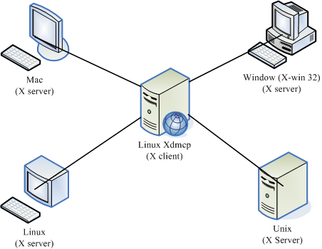
图 11.3-1、X server/client 的架构
splay manager 来管理使用者的登入与启动 X 吗？那服务器能不能提供一个类似的服务， 那我们直接透过服务器的 display manager 就能够提供我们登入的认证与加载自己选择的 window manager 的话，这样就太棒了！ 能够达到吗？当然可以啊！那就是透过 Xdmcp (X display manager control protocol) (注3)
Xdmcp 启动后会在服务器的 udp 177 开始监听，然后当客户端的 X server 联机到服务器的 port 177 之后， 我们的 Xdmcp 就会在客户端的 X server 放上用户输入账密的图形接口程序啰！那你就能透过这个 Xdmcp 去加载服务器所提供的类似 Window Manager 的相关 X client 啰！那你就能够取得图形接口的远程联机服务器
什么时候会出现多使用者连入服务器取得 X 的情况呢？以鸟哥的例子来说，鸟哥实验室有一组 Linux 在进行数值模拟， 他输出的结果是 NetCDF 档案，我们必须使用 PAVE 这一套软件去处理这些数据。但是我们有两三个人同时都会使用到那个功能， 偏偏 Linux 主机是放在机架柜里面的，要我们挤在那个小小的空间前面『站着』操作计算机，可真是讨人厌啊～ 这个时候，我们就会架设图形接口的远程登录服务器，让我们可以『多人同时以图形接口登入 Linux 主机』来操作我们自己的程序！
SOMEDAY 11.3.2 设定 gdm 的 XDMCP 服务
所谓的 Xdmcp 协议，那么是否意味着与 X display manager 有关呢？没错啦！ Xdmcp 协议是由 DM 程序所提供的。 我们的 CentOS 预设的 DM 为 GNOME 这个计划所提供的 gdm 哩！因此，你想要启动 Xdmcp 服务，那就得要针对 gdm 这个程序来设定啰。 这个 gdm 的设定数据都放置在 etc/gdm 目录下，而我们所要修改的配置文件其实仅是一个 /etc/gdm/custom.conf (注4) 档案
Tip: X11 提供的 display manager 为 xdm ，而著名的 KDE 与 GNOME 也都有自己的 display manager 管理程序，分别是 kdm 与 gdm 。你可以透过三者中任何一者的 display manager 的配置文件来启动 xdmcp 这个协定呢
SOMEDAY 11.3.3 用户系统为 Linux 的登入方式： Xnest
在不同的 X 环境下启动联机： 直接用 X
如果你的客户端已经在 runlevel 5 了，因此其实你已经有一个 X 窗口的环境，这个环境的显示终端机就称为『 :0 』。 在 CentOS 6.x 的环境中，如果原本就是 runlevel 5 的环境，那么这个图形接口的 :0 是在 tty1 终端机啦！如果是由 runlevel 3 启动图形接口，那就是在 tty7 喔！由于已经有一个 X 了，因此你必须要在另外的终端机启动另一个 X 才行！那个新的 X 就称为 :1 接口，其实通常就在 tty7 或 tty8 啦！但因为 X server 要接受 X client 必须要有授权才行， 所以你得先在窗口接口开放接受来自服务器的 X client 数据。
此外，虽然你在客户端是以主动的方式连接到服务器的 udp port 177 ，但是服务器的 X client 却会主动的连接到你客户端的 X server，因此，你必须要开放来自服务器端主动对你的 TCP port 6001 (因为是 :1 界面) 的防火墙联机才行喔！那就来实做看看：
# 1. 放行 X client 传来的资料：在 X Window 的画面当中启用 shell 输入： [root@clientlinux ~]# xhost + 192.168.100.254 192.168.100.254 being added to access control list # 注意！你是客户端！且假设我刚刚那部 Linux 主机的 IP 为 192.168.100.254 # 2. 开始放行防火墙，因为我们启动 port 6001 ，所以你在客户端这样作： [root@clientlinux ~]# vim /usr/local/virus/iptables/iptables.allow iptables -A INPUT -i $EXTIF -s 192.168.100.0/24 -p tcp --dport 6001 -j ACCEPT [root@clientlinux ~]# /usr/local/virus/iptables/iptables.rule [root@clientlinux ~]# iptables-save -A INPUT -s 192.168.100.0/24 -p tcp -m tcp --dport 6001 -j ACCEPT # 要能看到上面这一行才行呦！ # 3. 在文字接口 (例如 tty1) 下输入如下的指令： [root@clientlinux ~]# X -query 192.168.100.254 :1 # 进入 X Window 啰！
如果一切顺利的话，那么你在 clientlinux.centos.vbird 就会看到如下的画面(注意主机名)：
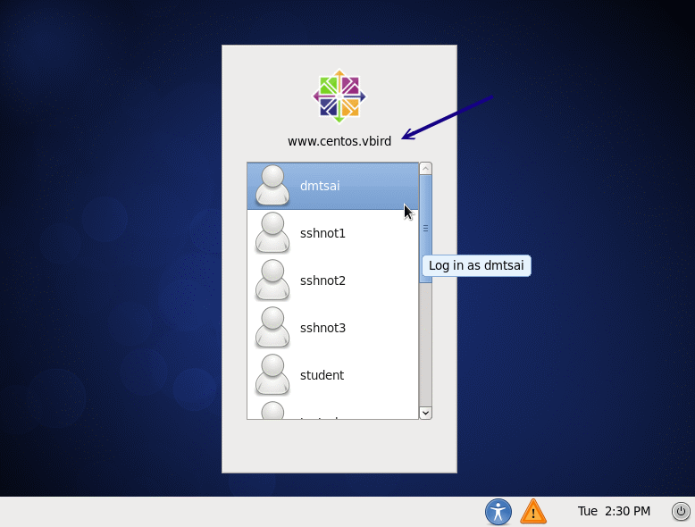
图 11.3-2、在客户端连上 Xdmcp 成功的画面
在上图中输入正确的账号与密码之后，你在 tty8 (:1) 就会有个窗口接口啰！那你如果想要回到本机的窗口接口， 就回到 tty7 (:0) 即可切换成功！(在 runlevel 5 时，:0 在 tty1 ，而 :1 在 tty7 喔！)那想要关闭 tty8 该如何是好？你不能够在 tty8 注销啦，因为注销后，系统会重新开一个等待登入的画面，你还是没办法关闭的。你得要回到刚刚启动 X 的 tty1 然后按下 [ctrl]-c 中断联机即可！
在同一个 X 底下启动另一个 X： 使用 Xnest
如果常常在 tty7, tty8 切换来去的话，偶而会忘记到底在哪个界面了，尤其是当你的桌面都一模一样时， 那就更难判断了。有没有办法直接在 tty7 启动另一个窗口来加载远程服务器的图形接口呢？可以的，那就透过 Xnest 吧！ 这指令需要在 X 的环境下使用喔！它的简单用法如下：
[root@www ~]# Xnest -query 主机名 -geometry 分辨率 :1 选项与参数： -query ：后面接 xdmcp 服务器的主机名或 IP 啰 -geometry ：后面接画面的分辨率，例如 1024x768 或 800x600 等之类的分辨率 # 根据上述数据，使用 800x600 连上 192.168.100.254 那部主机： [root@www ~]# yum install xorg-x11-server-Xnest [root@www ~]# Xnest -query 192.168.100.254 -geometry 640x480 :1
要关闭这个 X 就简单多了！直接按下关闭，或者是中断那个 Xnest 的程序即可。
SOMEDAY 11.3.4 用户系统为 Windows 的登入方式： Xming
由于 Windows 本身并没有提供预设的 X server ，因此我们得要自行安装 X server 在 Windows 上面才行。 目前常见的 X server 有底下这几个：
- X-Win32 (http://www.xwin32.tw/)
- Exceed (http://www.hummingbird.com/products/nc/exceed/index.html?cks=y)
- Xming (http://sourceforge.net/projects/xming/)
其中 X-Win32 与 Exceed 都属于商业软件，而 Xming 则属于轻量级的自由软件，说是轻量级并非说它不好， 而是因为 Xming 的档案真的很小，而该有的功能都有了
重点在 Server 与 Client 的防火墙上
最容易发生错误的其实就是防火墙啦！因为虽然我们客户端启动 X server 后，会主动联机到服务器端的 Xdmcp (port 177)，但是，接下来却是服务器主动联机到我们客户端的 X server (可能是 port 6000~6010)。 因此，如果你只是设定了服务器的防火墙而已，那么很可能出现问题的应该就是客户端的防火墙忘记打开提供服务器主动联机的规则
SOMEDAY 11.4 华丽的图形接口： VNC 服务器
使用 xdmcp 可能会启动多个不同的埠口，导致防火墙设定上面比较困扰些。那有没有简单一点的图形接口连接方式？
11.4.1 预设的 VNC 服务器：使用 twm window manager： vncserver, vncpasswd
11.4.2 VNC 的客户端联机软件： vncviewer, realvnc
11.4.3 VNC 搭配本机的 Xdmcp 画面
11.4.4 开机就启动 VNC server 的方法
11.4.5 同步的 VNC ：可以透过图示同步教学
SOMEDAY 11.5 仿真的远程桌面系统： XRDP 服务器
使用上面的图形接口的联机服务器都有一个问题，除了联机机制的不同之外，上头的 Xdmcp 与 VNC 原则上，资料都没有加密。 因此上面的动作大多仅适合局域网络内运作，不要连上 Internet 比较好。那如果你真的想要透过加密的方式运作 VNC， 那可能得要透过下一小节的介绍才能够有好的处理结果。那么我们知道 Windows 的远程桌面 (Remote Desktop Procotol, RDP, 注7) 其实是具有联机加密功能的，所以，能不能在 Linux 上面装一个 RDP Server 呢？是可以的，那就是 XRDP 服务器 (注8)。
在一般的主机上面安装好这个 xrdp 之后，你根本不需要调整任何配置文件，保留好配置文件就好了，然后启动它，并且设定开机后启动，未来只要用远程联机连到这部主机， 系统就会启动 5910~5920 以上的 VNC 埠口，然后你就能够透过 RDP 的协议取得 VNC 的画面，最后就能够登入系统
如果你还想要更进一步的了解 xrdp 的配置文件，那么请到 etc/xrdp 目录底下瞧瞧，然后再透过 man 去看看相关的配置文件信息，就能够理解设定值啰！鸟哥测试过，不用修改任何设定， 使用远程桌面就已经很顺畅
不过你要注意的是，因为 xrdp 最终会自动启用 VNC ，因此你还是必须要安装 tigervnc-server 才行！ 否则 xrdp 应该还是无法运作的呦！
11.6 SSH 服务器的进阶应用
事实上 ssh 真的很好用！你甚至不需要启动甚么 xdmcp, vnc, xrdp 等等服务，使用 ssh 的加密通道就能够在客户端启动图形接口！ 此外，我们知道很多服务都是没有加密的，那么能不能将这些服务透过 ssh 通道来加密呢？嘿嘿！当然是可以！ 在这个章节当中，我们就来谈谈一些 ssh 的进阶应用吧！
11.6.1 启动 ssh 在非正规埠口 (非 port 22)
sshd 这个服务其实并不是很安全，所以很多 ISP 在入口处就已经将 port 22 关闭了！
我们可以将 ssh 开放在非正规的埠口。如此一来， cracker 不会扫描到该端口，而你的 ISP 又没有对该埠口进行限制，那你就能够使用 ssh
设定 ssh 在 port 22 及 23 两个埠口的设定方式
[root@www ~]# vim /etc/ssh/sshd_config Port 22 Port 23 <==注意喔！要有两个 Port 的设定才行！ [root@www ~]# /etc/init.d/sshd restart
但是这一版的 CentOS 却将 SSH 规范 port 仅能启动于 22 而已，所以此时会出现一个 SELinux 的错误！那怎办？没关系， 根据 setroubleshoot 的提示，我们必须要自行定义一个 SELinux 的规则放行模块才行！
# 1. 于 /var/log/audit/audit.log 找出与 ssh 有关的 AVC 信息，并转为本地模块 [root@www ~]# cat /var/log/audit/audit.log | grep AVC | grep ssh | \ > audit2allow -m sshlocal > sshlocal.te <==扩展名要是 .te 才行 [root@www ~]# grep sshd_t /var/log/audit/audit.log | \ > audit2allow -M sshlocal <==sshlocal 就是刚刚建立的 .te 檔名 ******************** IMPORTANT *********************** To make this policy package active, execute: semodule -i sshlocal.pp <==这个指令会编译出这个重要的 .pp 模块！ # 2. 将这个模块加载系统的 SELinux 管理当中！ [root@www ~]# semodule -i sshlocal.pp # 3. 再重新启动 sshd 并且观察埠口吧！ [root@www ~]# /etc/init.d/sshd restart [root@www ~]# netstat -tlunp | grep ssh tcp 0 0 0.0.0.0:22 0.0.0.0:* LISTEN 7322/sshd tcp 0 0 0.0.0.0:23 0.0.0.0:* LISTEN 7322/sshd tcp 0 0 :::22 :::* LISTEN 7322/sshd tcp 0 0 :::23 :::* LISTEN 7322/sshd
非正规埠口的联机方式
Use -p option.
11.6.2 以 rsync 进行同步镜相备份
这个 rsync 可以作为一个相当棒的异地备援系统的备份指令喔！ 因为 rsync 可以达到类似『镜相 (mirror) 』的功能
rsync 最早是想要取代 rcp 这个指令的，因为 rsync 不但传输的速度快，而且他在传输时， 可以比对本地端与远程主机欲复制的档案内容，而仅复制两端有差异的档案而已，所以传输的时间就相对的降低很多！ 此外， rsync 的传输方式至少可以透过三种方式来运作：
- 在本机上直接运作，用法就与 cp 几乎一模一样，例如：
rsync -av /etc /tmp (将 /etc/ 的数据备份到 /tmp/etc 内)
- 透过 rsh 或 ssh 的信道在 server / client 之间进行数据传输，例如：
rsync -av -e ssh user@rsh.server:/etc /tmp (将 rsh.server 的 /etc 备份到本地主机的 /tmp 内)
- 直接透过 rsync 提供的服务 (daemon) 来传输，此时 rsync 主机需要启动 873 port：
- 你必须要在 server 端启动 rsync ， 看 /etc/xinetd.d/rsync 即可；
- 你必须编辑 /etc/rsyncd.conf 配置文件；
- 你必须设定好 client 端联机的密码数据；
- 在 client 端可以利用：
rsync -av user@hostname::/dir/path /local/path~
底下鸟哥将直接介绍利用 rsync 透过 ssh 来备份的动作.
在此之前咱们先来看看 rsync 的语法:
[root@www ~]# rsync [-avrlptgoD] [-e ssh] [user@host:/dir] [/local/path] 选项与参数： -v ：观察模式，可以列出更多的信息，包括镜像时的档案档名等； -q ：与 -v 相反，安静模式，略过正常信息，仅显示错误讯息； -r ：递归复制！可以针对『目录』来处理！很重要！ -u ：仅更新 (update)，若目标档案较新，则保留新档案不会覆盖； -l ：复制链接文件的属性，而非链接的目标源文件内容； -p ：复制时，连同属性 (permission) 也保存不变！ -g ：保存源文件的拥有群组； -o ：保存源文件的拥有人； -D ：保存源文件的装置属性 (device) -t ：保存源文件的时间参数； -I ：忽略更新时间 (mtime) 的属性，档案比对上会比较快速； -z ：在数据传输时，加上压缩的参数！ -e ：使用的信道协议，例如使用 ssh 通道，则 -e ssh -a ：相当于 -rlptgoD ，所以这个 -a 是最常用的参数了！ 更多说明请参考 man rsync 的解说！ # 1. 将 /etc 的数据备份到 /tmp 底下： [root@www ~]# rsync -av /etc /tmp ....(前面省略).... sent 21979554 bytes received 25934 bytes 4000997.82 bytes/sec total size is 21877999 speedup is 0.99 [root@www ~]# ll -d /tmp/etc /etc drwxr-xr-x. 106 root root 12288 Jul 26 16:10 /etc drwxr-xr-x. 106 root root 12288 Jul 26 16:10 /tmp/etc <==瞧！两个目录一样！ # 第一次运作时会花比较久的时间，因为首次建立嘛！如果再次备份呢？ [root@www ~]# rsync -av /etc /tmp sent 55716 bytes received 240 bytes 111912.00 bytes/sec total size is 21877999 speedup is 390.99 # 比较一下两次 rsync 的传输与接受数据量，你就会发现立刻就跑完了！ # 传输的数据也很少！因为再次比对，仅有差异的档案会被复制。 # 2. 利用 student 的身份登入 clientlinux.centos.vbird 将家目录复制到本机 /tmp [root@www ~]# rsync -av -e ssh student@192.168.100.10:~ /tmp student@192.168.100.10's password: <==输入对方主机的 student 密码 receiving file list ... done student/ student/.bash_logout ....(中间省略).... sent 110 bytes received 697 bytes 124.15 bytes/sec total size is 333 speedup is 0.41 [root@www ~]# ll -d /tmp/student drwx------. 4 student student 4096 Jul 26 16:52 /tmp/student # 瞧！这样就做好备份啦！很简单吧！
可以利用上面的范例二来做为备份 script 的参考！不过要注意的是，因为 rsync 是透过 ssh 来传输数据的，所以你可以针对 student 这个家伙制作出免用密码登入的 ssh 密钥！ 如此一来往后异地备援系统就能够自动的以 crontab 来进行备份了！
例题： 在 clientlinux.centos.vbird (192.168.100.10) 上面，使用 vbirdtsai 的身份建立一只脚本，这只脚本可以在每天的 2:00am 主动的以 rsync 配合 ssh 取得 www.centos.vbird (192.168.100.254) 的 etc, /root, /home 三个目录的镜像到 clientlinux.centos.vbird 的 /backups 底下。
答： 由于必须要透过 ssh 通道，且必须要使用 crontab 例行工作排程，因此肯定要使用密钥系统的免密码账号。我们在 11.2.6 小节已经谈过相关作法， vbirdtsai 已经有了公钥与私钥档案，因此不要再使用 ssh-keygen 了，直接将公钥档案复制到 www.centos.vbird 的 root.ssh/ 底下即可。 实际作法可以是这样的：
# 1. 在 clientlinux.centos.vbird 将公钥档复制给 www.centos.vbird 的 root
[vbirdtsia@clientlinux ~]$ scp ~/.ssh/id_rsa.pub root@192.168.100.254:~
# 2. 在 www.centos.vbird 上面用 root 建置好 authorized_keys
[root@www ~]# ls -ld id_rsa.pub .ssh
-rw-r--r--. 1 root root 416 Jul 26 16:59 id_rsa.pub <==有公钥档
drwx------. 2 root root 4096 Jul 25 11:44 .ssh <==有 ssh 的相关目录
[root@www ~]# cat id_rsa.pub >> ~/.ssh/authorized_keys
[root@www ~]# chmod 644 ~/.ssh/authorized_keys
# 3. 在 clientlinux.centos.vbird 上面撰写 script 并测试执行：
[vbirdtsai@clientlinux ~]$ mkdir ~/bin ; vim ~/bin/backup_www.sh
#!/bin/bash
localdir=/backups
remotedir="/etc /root /home"
remoteip="192.168.100.254"
[ -d ${localdir} ] || mkdir ${localdir}
for dir in ${remotedir}
do
rsync -av -e ssh root@${remoteip}:${dir} ${localdir}
done
[vbirdtsai@clientlinux ~]$ chmod 755 ~/bin/backup_www.sh
[vbirdtsai@clientlinux ~]$ ~/bin/backup_www.sh
# 上面在测试啦！第一次测试可能会失败，因为鸟哥忘记 /backups 需要 root
# 的权限才能够建立。所以，请您再以 root 的身份去 mkdir 及 setfacl 吧！
# 4. 建立 crontab 工作
[vbirdtsai@clientlinux ~]$ crontab -e
0 2 * * * /home/vbirdtsai/bin/backup_www.sh
11.6.3 透过 ssh 通道加密原本无加密的服务 important
rsync 默认已经可以透过 ssh 通道来进行加密以进行镜像传输。 既然如此，那么其他的服务能不能透过这个 ssh 进行数据加密来传送信息呢？当然可以！
用图示来谈一下作法。
假设服务器上面有启动了 VNC 服务在 port 5901 ，客户端则使用 vncviewer 要联机到服务器上的 port 5901 就是了。 那现在我们在客户端计算机上面启动一个 5911 的埠口，然后再透过本地端的 ssh 联机到服务器的 sshd 去，而服务器的 sshd 再去连接服务器的 VNC port 5901 。整个联机的图示如下所示：
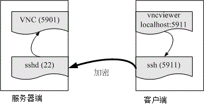
图 11.6-1、透过本地端的 ssh 加密联机到远程的服务器示意图
假设你已经透过上述各个小节建立好服务器 (www.centos.vbird) 上面的 VNC port 5901 ，而客户端则没有启动任何的 VNC 埠口。 那么你该如何透过 ssh 来进行加密呢？很简单，你可以在客户端计算机 (clientlinux.centos.vbird) 执行底下的指令：
[root@clientlinux ~]# ssh -L 本地埠口:127.0.0.1:远程端口 [-N] 远程主机 选项与参数： -N ：仅启动联机通道，不登入远程 sshd 服务器 本地埠口：就是开启 127.0.0.1 上面一个监听的埠口 远程埠口：指定联机到后面远程主机的 sshd 后，sshd 该连到哪个埠口进行传输 # 1. 在客户端启动所需要的端口进行的指令 [root@clientlinux ~]# ssh -L 5911:127.0.0.1:5901 -N 192.168.100.254 root@192.168.100.254's password: <==登入远程仅是开启一个监听埠口，所以停止不能动作 # 2. 在客户端在另一个终端机测试看看，这个动作不需要作，只是查阅而已 [root@clientlinux ~]# netstat -tnlp| grep ssh tcp 0 0 0.0.0.0:22 0.0.0.0:* LISTEN 1330/sshd tcp 0 0 127.0.0.1:5911 0.0.0.0:* LISTEN 3347/ssh tcp 0 0 :::22 :::* LISTEN 1330/sshd [root@clientlinux ~]# netstat -tnap| grep ssh tcp 0 0 192.168.100.10:55490 192.168.100.254:22 ESTABLISHED 3347/ssh # 在客户端启动 5911 的埠口是 ssh 启动的，同一个 PID 也联机到远程喔！
[ME: refer to SSH原理与运用（二）：远程操作与端口转发 by 阮一峰]
接下来你就可以在客户端 (192.168.100.10, clientlinux.centos.vbird) 使用『 vncviewer localhost:5911 』来联机， 但是该联机却会连到 www.centos.vbird (192.168.100.254) 那部主机的 port 5901 喔！不相信吗？ 当你达成 VNC 联机后，到 www.centos.vbird 那部主机上面瞧瞧就知道了：
# 3. 在服务器端测试看看，这个动作不需要作，只是查阅而已 [root@www ~]# netstat -tnp | grep ssh tcp 0 0 127.0.0.1:59442 127.0.0.1:5901 ESTABLISHED 7623/sshd: root tcp 0 0 192.168.100.254:22 192.168.100.10:55490 ESTABLISHED 7623/sshd: root # 明显的看到 port 22 的程序同时联机到 port 5901 喔！
那如何取消这个联机呢？先关闭 VNC 之后，然后再将 clientlinux.centos.vbird 的第一个动作 (ssh -L …) 按下 [ctrl]-c 就中断这个加密通道
11.6.4 以 ssh 信道配合 X server 传递图形接口 important
能不能不要启动甚么很复杂的接口，就是在原有的接口底下使用 ssh 信道，将我所需要的服务器上面的图形接口传过来就好了？ 是可以的
用一个 Windows 上面的 Xming X server 作范例好了。整个动作是这样的：
- 先在 Windows 上面启动 XLaunch，并设定好联机到 www.centos.vbird 的相关信息；
- 启动 Xming 程序，会取得一个 xterm 程序，该程序是 www.centos.vbird 的程序；
- 开始在 xterm 上面执行 X 软件，就会在 Windows 桌面上面显示啰！
那我们就开始来处理一下 Xming 这个程序吧！启动 XLaunch 之后出现下图模样：
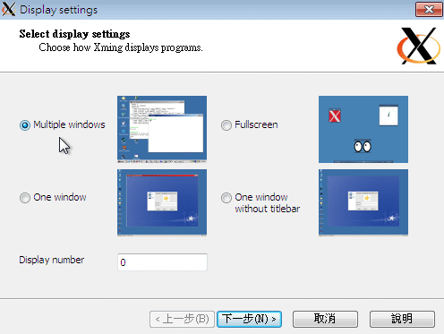
图 11.6-2、启动 XLaunch 程序-选择显示模式
记得上图中要选择 Multiple windows 会比较漂亮喔！然后按下『下一步』会出现下图：
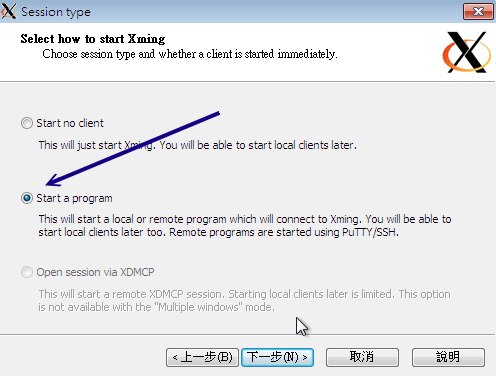
图 11.6-3、设定 XLaunch 程序-选择联机方式
我们要启动一只程序，并且是开放在 ssh/putty 之类的软件帮忙进行 ssh 信道的建立喔！然后下一步吧。
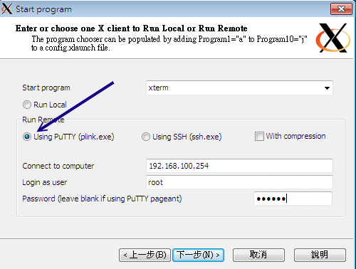
图 11.6-4、设定 XLaunch 程序-设定远程联机的相关参数
Xming 会主动的启动一个 putty 的程序帮你连进 sshd 服务器，所以这里得要帮忙设定好账号密码的相关信息。 鸟哥这里假设你的 sshd 尚未取消 root 登入，因此这里使用 root 的权限喔！
图 11.6-5、设定 XLaunch 程序-是否支持复制贴上功能
使用默认值吧！直接下一步。
图 11.6-6、设定 XLaunch 程序-完成设定
很简单！这样就完成设定了！请按下完成，你就会看到 Windows 的桌面竟然出现如下的图示了！
图 11.6-7、Windows 桌面出现的 X client 程序
上面这只程序就是 xterm 这个 X 的终端机程序。你可以在上面输入指令，该指令会传送到 Linux server ， 然后再将你要执行的图形数据透过 ssh 信道传送到目前的 Windows 上面的 Xming ，你的 Linux 完全不用启动 VNC, X, xrdp 等服务！只要有 sshd 就搞定了！就是这么简单！
11.7 重点回顾
- 远程联机服务器可以让使用者在任何一部计算机登入主机，以使用主机的资源或管理与维护主机；
- 常见的远程登录服务有 rsh, telnet, ssh, vnc, xdmcp 及 RDP 等；
- telnet 与 rsh 都是以明码传输数据，当数据在 Internet 上面传输时较不安全；
- ssh 由于使用密钥系统，因此数据在 Internet 上面传输时是加密过的，所以较为安全；
- 但 ssh 还是属于比较危险的服务，请不要对整个 Internet 开放 ssh 的可登入权限，可利用 iptables 规范可登入范围；
- ssh 的 public Key 是放在服务器端，而 private key 是放在 client 端；
- ssh 的联机机制有两种版本，建议使用可确认联机正确性的 version 2 ；
- 使用 ssh 时，尽量使用类似 email 的方式来登入，亦即： ssh username@hostname
- client 端可以比对 server 传来的 public key 的一致性，利用的档案为 ~user/.ssh/knownhosts；
- ssh 的 client 端软件提供 ssh, scp, sftp 等程序；
- 制作不需要密码的 ssh 账号可利用 ssh-keygen -t rsa 来制作 public, private Key pair；
- 上述指令所制作出的 public key 必须要上传到 server 的 ~user/.ssh/authorizedkeys 档案中；
- Xdmcp 是透过 X display manager (xdm, gdm, kdm 等) 所提供的功能协议；
- 若 client 端为 Linux 时，需要在 X 环境下以 xhost 增加可连接到本机 X Server 的 IP 才行；
- 除了 Xdmcp 之外，我们可以利用 VNC 来进行 X 的远程登录架构；
- VNC 预设开的 port number 为 5900 开始，每个 port 仅允许一个联机；
- rsync 可透过 ssh 的服务通道或 rsync –daemon 的方式来联机传输，其主要功能可以透过类似镜像备份， 仅备份新的数据，因此传输备份速度相当快速！
11.8 课后练习
Telnet 与 SSH 都是远程联机服务器，为何我们都会推荐使用 SSH 而避免使用 Telnet 呢？原因何在？
因为 Telnet 除了使用『明码』传送数据外，本身 telnet 就是很容易被入侵的一个服务器，所以当然也就比较危险了。 至于 ssh 其实也不是很安全的！由台湾计算机危机处理小组的文件可以明显的发现 openssl + openssh 也是常常有漏洞在发布！不过，比起 telnet 来说，确实是稍微安全一些！
请尝试说明 SSH 在 Server 与 Client 端联机时的封包加密机制；
利用 key pair 来达到加密的机制：Server 提供 Public Key 给 Client 端演算 Private key ，以提供封包传送时的加密、解密！
请问 SSH 的配置文件是哪一个？如果我要修改让 root 无法使用 SSH 联机进入我的 SSH 主机，应该如何设定？又，如果要让 badbird 这个用户无法登入 SSH 主机，该如何设定？
SSH 配置文件档名为 sshdconfig ，通常放置在 /etc/ssh/sshdconfig 内；如果不想让 root 登入，可以修改 sshdconfig 内的参数成为：『PermitRootLogin no 』，并重新启动 ssh 来设定！如果要让 badbird 使用者无法登入，同样在 sshdconfig 里面设定为：『DenyUsers badbird』即可！
在 Linux 上，预设的 Telnet 与 SSH 服务器使用的埠口(port number)各为多少？
telnet 与 ssh 的埠口分别是：23 与 22！请参考 /etc/services 喔！
如果发现我无法在 Client 端使用 ssh 程序登入我的 Linux 主机，但是 Linux 主机却一切正常，可能的原因为何？(防火墙、knownhosts…)
无法登入的原因可能有很多，最好先查询一下 /var/log/messages 里面的错误讯息来判断，当然，还有其他可能的原因为：
- 被防火墙挡住了，请以 iptables -L -n 来察看，当然也要察看 /etc/hosts.deny；
- 可能由于主机重新启动过， public key 改变了，请修改你的 ~/ssh/knownhosts 里面的主机 IP ；
- 可能由于 /etc/ssh/sshdconfig 里面的设定问题，导致你这个使用者无法使用；
- 在 /etc/passwd 里面，你的 user 不具有可以登入的 shell ；
- 其他因素(如账号密码过期等等)
既然 ssh 是比较安全的资料封包传送方式，那么我就可以在 Internet 上面开放我的 Linux 主机的 SSH 服务了吗？！请说明你选择的答案的原因！
最好不要对 Internet 开放你的 SSH 服务，因为 SSH 的加密函式库使用的是 openssl ，一般 Linux distribution 使用的 SSH 则是 openssh ，这两个套件事实上仍有不少的漏洞被发布过，因此，最好不要对 Internet 开放，毕竟 SSH 对于主机的权限是很高的！
11.9 参考数据与延伸阅读
- 注1：与 SSH 服务器有关的两个重要官网
- OpenSSH 官方网站：http://www.openssh.com/
- OpenSSL 官方网站：http://www.openssl.org/
- 注2：与 putty 及 pietty 有关的网站
- putty 官方网站：http://www.chiark.greenend.org.uk/~sgtatham/putty/
- pietty 中文网站：http://ntu.csie.org/~piaip/pietty/
- 注3：XDMCP 维基百科：http://en.wikipedia.org/wiki/X_display_manager_(program_type)
- 注4：教你怎么设定 gdm 的 custom.conf
- 注5：自由的 X server – Xming： http://sourceforge.net/projects/xming/
- 注6：与 VNC 相关的资料
- man vncserver, man Xvnc
- 使用 X 的 VNC Module：http://phorum.study-area.org/viewtopic.php?t=25713
- http://fedoranews.org/tchung/vnc/03.shtml
- 注7：维基百科：http://en.wikipedia.org/wiki/Remote_Desktop_Protocol
- 注8：官网在 http://xrdp.sourceforge.net/
- 注9： Fedora 基金会提供的 Extra Packages for Enterprise Linux (EPEL) 计划：
- 注10：rsync 的相关用法介绍：
- 酷学园：用 rsync 做备份：http://phorum.study-area.org/viewtopic.php?t=15553
- ADJ 实验室的 rsync + SSH：http://www.adj.idv.tw/server/linux_rsync.php
- 公钥加密机制的维基百科解释：http://en.wikipedia.org/wiki/Public_Key_Cryptography
11.10针对本文的建议：http://phorum.vbird.org/viewtopic.php?p=114550
SOMEDAY 第十二章、网络参数控管者： DHCP 服务器
12.1 DHCP 运作的原理
12.1.1 DHCP 服务器的用途
12.1.2 DHCP 协议的运作方式： IP 参数, 租约期限, 多部 DHCP 服务器
12.1.3 何时需要架设 DHCP 服务器
12.2 DHCP 服务器端的设定
12.2.1 所需软件与档案结构
12.2.2 主要配置文件 /etc/dhcp/dhcpd.conf 的语法
12.2.3 一个局域网络的 DHCP 服务器设定案例
12.2.4 DHCP 服务器的启动与观察
12.2.5 内部主机的 IP 对应
12.3 DHCP 客户端的设定
12.3.1 客户端是 Linux
12.3.2 客户端是 Windows
12.4 DHCP 服务器端进阶观察与使用
12.4.1 检查租约档案
12.4.2 让大量 PC 都具有固定 IP 的脚本
12.4.3 使用 ether-wake 实行远程自动开机 (remote boot)
12.4.4 DHCP 与 DNS 的关系
12.5 重点回顾
12.6 本章习题
12.7 参考数据与延伸阅读
12.8 针对本文的建议：http://phorum.vbird.org/viewtopic.php?p=117845
SOMEDAY 第十三章、文件服务器之一：NFS 服务器
13.1 NFS 的由来与其功能
13.1.1 什么是 NFS ( Network FileSystem )
13.1.2 什么是 RPC ( Remote Procedure Call )
13.1.3 NFS 启动的 RPC daemons
13.1.4 NFS 的档案访问权限
13.2 NFS Server 端的设定
13.2.1 所需要的软件
13.2.2 NFS 的软件结构
13.2.3 /etc/exports 配置文件的语法与参数
13.2.4 启动 NFS： rpcinfo
13.2.5 NFS 的联机观察： showmount, /var/lib/nfs/etab, exportfs
13.2.6 NFS 的安全性： 防火墙与埠口, 关机注意事项
13.3 NFS 客户端的设定
13.3.1 手动挂载 NFS 服务器分享的资源
13.3.2 客户端可处理的挂载参数与开机挂载： 特殊参数
13.3.3 无法挂载的原因分析
13.3.4 自动挂载 autofs 的使用
13.4 案例演练
13.5 重点回顾
13.6 本章习题
13.7 参考数据与延伸阅读
13.8 针对本文的建议：http://phorum.vbird.org/viewtopic.php?p=114695
SOMEDAY 第十四章、账号控管： NIS 服务器
14.1 NIS 的由来与功能
14.1.1 NIS 的主要功能：管理帐户信息
14.1.2 NIS 的运作流程：透过 RPC 服务
14.2 NIS server 端的设定
14.2.1 所需要的软件
14.2.2 NIS 服务器相关的配置文件
14.2.3 一个实作案例
14.2.4 NIS master 的设定与启动
14.2.5 防火墙设置
14.3 NIS client 端的设定
14.3.1 NIS client 所需软件与软件结构
14.3.2 NIS client 的设定与启动
14.3.3 NIS client 端的检验： yptest, ypwhich, ypcat
14.3.4 使用者参数修改： yppasswd, ypchfn, ypchsh
14.4 NIS 搭配 NFS 的设定在丛集计算机上的应用
14.5 重点回顾
14.6 课后练习
14.7 参考数据与延伸阅读
14.8 针对本文的建议：http://phorum.vbird.org/viewtopic.php?p=115269
SOMEDAY 第十五章、时间服务器： NTP 服务器
15.1 关于时区与网络校时的通讯协议
15.1.1 什么是时区？全球有多少时区？GMT 在那个时区？
15.1.2 什么是夏季节约时间 (daylight savings)？
15.1.3 Coordinated Universal Time (UTC)与系统时间的误差
15.1.4 NTP 通讯协议
15.1.5 NTP 服务器的阶层概念
15.2 NTP 服务器的安装与设定
15.2.1 所需软件与软件结构
15.2.2 主要配置文件 ntp.conf 的处理
15.2.3 NTP 的启动与观察： ntpstat, ntpq
15.2.4 安全性设定
15.3 客户端的时间更新方式
15.3.1 Linux 手动校时工作： date, hwclock
15.3.2 Linux 的网络校时： ntpdate
15.3.3 Windows 的网络校时
15.4 重点回顾
15.5 课后练习
15.6 参考数据
15.7 针对本文的建议：http://phorum.vbird.org/viewtopic.php?p=117976
SOMEDAY 第十六章、文件服务器之二： SAMBA 服务器
16.1 什么是 SAMBA
16.1.1 SAMBA 的发展历史与名称的由来
16.1.2 SAMBA 常见的应用
16.1.3 SAMBA 使用的 NetBIOS 通讯协议
16.1.4 SAMBA 使用的 daemons
16.1.5 联机模式的介绍 (peer/peer, domain model)
16.2 SAMBA 服务器的基础设定
16.2.1 Samba 所需软件及其软件结构
16.2.2 基础的网芳分享流程与 smb.conf 的常用设定项目：
服务器整体参数, 分享资源参数, 变数特性
16.2.3 不需密码的分享 (security = share, 纯测试) (testparm, smbclient)
16.2.4 需账号密码才可登入的分享 (security = user) (pdbedit, smbpasswd)
16.2.5 设定成为打印机服务器 (CUPS 系统) (cupsaddsmb)
16.2.6 安全性的议题与管理： SELinux, iptables, Samba 内建, Quota
16.2.7 主机安装时的规划与中文扇区挂载
16.3 Samba 客户端软件功能
16.3.1 Windows 系统的使用： WinXP 防火墙, port 445
16.3.2 Linux 系统的使用： smbclient, mount.cifs, nmblookup, smbtree, smbstatus
16.4 以 PDC 服务器提供账号管理
16.4.1 让 Samba 管理网域使用者的一个实作案例
16.4.2 PDC 服务器的建置
16.4.3 Wimdows XP pro. 的客户端
16.4.4 Wimdows 7 的客户端
16.4.5 PDC 之问题克服
16.5 服务器简单维护与管理
16.5.1 服务器相关问题克服
16.5.2 让用户修改 samba 密码同时同步更新 /etc/shadow 密码
16.5.3 利用 ACL 配合单一使用者时的控管
16.6 重点回顾
16.7 本章习题
16.8 参考数据与延伸阅读
16.9 针对本文的建议：http://phorum.vbird.org/viewtopic.php?p=118976
SOMEDAY 第十七章、区网控制者： Proxy 服务器
17.1 什么是代理服务器 (Proxy)
17.1.1 什么是代理服务器
17.1.2 代理服务器的运作流程
17.1.3 上层代理服务器
17.1.4 代理服务器与 NAT 服务器的差异
17.1.5 架设代理服务器的用途与优缺点
17.2 Proxy 服务器的基础设定
17.2.1 Proxy 所需的 squid 软件及其软件结构
17.2.2 CentOS 预设的 squid 设定： httpport, cachedir (SELinux), cachemem
17.2.3 管控信任来源 (如区网) 与目标 (如恶意网站)： acl 与 httpaccess 的使用
17.2.4 其他额外的功能项目
17.2.5 安全性设定：防火墙, SELinux 与黑名单档案
17.3 客户端的使用与测试
17.3.1 浏览器的设定： firefox & IE
17.3.2 测试 proxy 失败的画面
17.4 服务器的其他应用设定
17.4.1 上层 Proxy 与获取数据分流的设定
17.4.2 Proxy 服务放在 NAT 服务器上：通透式代理 (Transparent Proxy)
17.4.3 Proxy 的认证设定
17.4.4 末端登录档分析： sarg
17.5 重点回顾
17.6 本章习题
17.7 参考数据与延伸阅读
17.8 针对本文的建议：http://phorum.vbird.org/viewtopic.php?f=16&t=35439
SOMEDAY 第十八章、网络驱动器装置： iSCSI 服务器
18.1 网络文件系统还是网络驱动器
18.1.1 NAS 与 SAN
18.1.2 iSCSI 界面
18.1.3 各组件相关性
18.2 iSCSI target 的设定
18.2.1 所需软件与软件结构
18.2.2 target 的实际设定
18.3 iSCSI initiator 的设定
18.3.1 所需软件与软件结构
18.3.2 initiator 的实际设定
18.3.3 一个测试范例
18.4 重点回顾
18.5 本章习题
18.6 参考数据与延伸阅读
18.7 针对本文的建议：http://phorum.vbird.org/viewtopic.php?f=16&t=35503
SOMEDAY 第四部分：常见因特网服务器架设
第十九章、主机名控制者： DNS 服务器
19.1 什么是 DNS
19.1.1 用网络主机名取得 IP 的历史渊源： /etc/hosts, DNS, FQDN
19.1.2 DNS 的主机名对应 IP 的查询流程： 阶层式与 TLD, 查询流程, port
19.1.3 合法 DNS 的关键：申请领域查询授权
19.1.4 主机名交由 ISP 代管还是自己设定 DNS 服务器
19.1.5 DNS 数据库的记录：正解, 反解, Zone 的意义
19.1.6 DNS 数据库的类型：hint, master/slave 架构
19.2 Client 端的设定
19.2.1 相关配置文件： /etc/hosts, /etc/resolv.conf, /etc/nsswitch.conf
19.2.2 DNS 的正、反解查询指令： host, nslookup, dig
19.2.3 查询领域管理者相关信息： whois
19.3 DNS 服务器的软件、种类与 cache only DNS 服务器设定
19.3.1 架设 DNS 所需要的软件
19.3.2 BIND 的默认路径设定与 chroot： /etc/sysconfig/named 与 chroot
19.3.3 单纯的 cache-only DNS 服务器与 forwarding 功能：named.conf, messages
19.4 DNS 服务器的详细设定
19.4.1 正解文件记录的数据 (Resource Record, RR)： A, NS, SOA, CNAME, MX
19.4.2 反解文件记录的 RR 数据： PTR
19.4.3 步骤一：DNS 的环境规划：正解、反解 zone 的预先定义案例说明
19.4.4 步骤二：主配置文件 /etc/named.conf 的设置
19.4.5 步骤三：最上层 . (root) 数据库档案的设定
19.4.6 步骤四：正解数据库档案的设定
19.4.7 步骤五：反解数据库档案的设定
19.4.8 步骤六：DNS 的启动、观察与防火墙
19.4.9 步骤七：测试与数据库更新
19.5 协同工作的 DNS： Slave DNS 及子域授权设定
19.5.1 master DNS 权限的开放
19.5.2 Slave DNS 的设定与数据库权限问题
19.5.3 建置子域 DNS 服务器：子域授权课题
19.5.4 依不同接口给予不同的 DNS 主机名： view 功能的应用
19.6 DNS 服务器的进阶设定
19.6.1 架设一个合法授权的 DNS 服务器
19.6.2 LAME Server 的问题
19.6.3 利用 RNDC 指令管理 DNS 服务器
19.6.4 架设动态 DNS 主机：让你成为 ISP 啦！
19.7 重点回顾
19.8 本章习题
19.9 参考数据与延伸阅读
19.10 针对本文的建议：http://phorum.vbird.org/viewtopic.php?p=115692
第二十章、WWW 伺服器
20.1 WWW 的簡史、資源以及伺服器軟體
20.1.1 WWW 的簡史、HTML與標準制訂 (W3C)
20.1.2 WWW 伺服器與瀏覽器所提供的資源設定 (URL)
20.1.3 WWW 伺服器的類型：系統、平台、資料庫與程式 (LAMP)
20.1.4 https： 加密的網頁資料 (SSL) 及第三方公正單位
20.1.5 用戶端常見的瀏覽器
20.2 WWW (LAMP) 伺服器基本設定
20.2.1 LAMP 所需軟體與其結構
20.2.2 Apache 的基本設定： 伺服器環境, 中文編碼, 目錄權限 (DocumentRoot, Directory)
20.2.3 PHP 的預設參數修改： PHP資安設定, 上傳檔案容量
20.2.4 啟動 WWW 服務與測試 PHP 模組
20.2.5 MySQL 的基本設定： 啟動與帳號設定, 修改 /etc/my.cnf, root 密碼處理
20.2.6 防火牆設定與 SELinux 的規則放行
20.2.7 開始網頁設計及安裝架站軟體，如 phpBB3
20.3 Apache 伺服器的進階設定
20.3.1 啟動用戶的個人網站(權限是重點)： URL 權限與 SELinux
20.3.2 啟動某個目錄的 CGI (perl) 程式執行權限
20.3.3 找不到網頁時的顯示訊息通知
20.3.4 瀏覽權限的設定動作 (order, limit)
20.3.5 伺服器狀態說明網頁
20.3.6 .htaccess 與認證網頁設定
20.3.7 虛擬主機的設定 (重要！)
20.4 登錄檔分析以及 PHP 強化模組
20.4.1 PHP 強化模組 (eaccelerator) 與 Apache 簡易效能測試
20.4.2 syslog 與 logrotate
20.4.3 登錄檔分析軟體：webalizer
20.4.4 登錄檔分析軟體：awstats
20.5 建立連線加密網站 (https) 及防砍站腳本
20.5.1 SSL 所需軟體與憑證檔案及預設的 https
20.5.2 擁有自製憑證的 https
20.5.3 將加密首頁與非加密首頁分離
20.5.4 防砍站軟體
20.6 重點回顧
20.7 本章習題
20.8 參考資料與延伸閱讀
20.9 針對本文的建議：http://phorum.vbird.org/viewtopic.php?p=116564
第二十一章、文件服务器之三： FTP 服务器
21.1 FTP 的数据链路原理
21.1.1 FTP 功能简介
21.1.2 FTP 的运作流程与使用到的端口
21.1.3 客户端选择被动式联机模式
21.1.4 FTP 的安全性问题与替代方案
21.1.5 开放什么身份的使用者登入
21.2 vsftpd 服务器基础设定
21.2.1 为何使用 vsftpd
21.2.2 所需要的软件以及软件结构
21.2.3 vsftpd.conf 设定值说明
21.2.4 vsftpd 启动的模式
21.2.5 CentOS 的 vsftpd 默认值： 使用本地端时间
21.2.6 针对实体账号的设定： SELinux, chroot, 限制带宽, 最大上线人数, 可用账号列表
21.2.7 仅有匿名登录的相关设定： 匿名的根, 可上传下载, 仅可上传, 被动式联机埠口
21.2.8 防火墙设定
21.2.9 常见问题与解决之道
21.3 客户端的图形接口 FTP 联机软件
21.3.1 Filezilla
21.3.2 透过浏览器取得 FTP 联机
21.4 让 vsftpd 增加 SSL 的加密功能
21.5 重点回顾
21.6 本章习题
21.7 参考数据与延伸阅读
21.8 针对本文的建议：http://phorum.vbird.org/viewtopic.php?p=118520
第二十二章、邮件服务器： Postfix
22.1 邮件服务器的功能与运作原理
22.1.1 电子邮件的功能与问题
22.1.2 Mail server 与 DNS 之间的关系
22.1.3 邮件传输所需要的组件 (MTA, MUA, MDA) 以及相关协议
22.1.4 使用者收信时服务器端所提供的相关协议： MRA
22.1.5 Relay 与认证机制的重要性
22.1.6 电子邮件的数据内容
22.2 MTA 服务器： Postfix 基础设定
22.2.1 Postfix 的开发
22.2.2 所需要的软件与软件结构
22.2.3 一个邮件服务器的设定案例
22.2.4 让 Postfix 可监听 Internet 来收发信件： 直接看范例
22.2.5 信件传送流程与收信、relay 等重要观念
22.2.6 设定邮件主机权限与过滤机制 /etc/postfix/access
22.2.7 设定邮件别名： etc/aliases, ~.forward
22.2.8 察看信件队列信息： postqueue, mailq
22.2.9 防火墙设置
22.3 MRA 服务器： dovecot 设定
22.3.1 基础的 POP3/IMAP 设定
22.3.2 加密的 POP3s/IMAPs 设定
22.3.3 防火墙设置
22.4 MUA 软件：客户端的收发信软件
22.4.1 Linux mail
22.4.2 Linux mutt
22.4.3 Thunderbird 好用的跨平台 (Windows/Linux X) 软件
22.5 邮件服务器的进阶设定
22.5.1 邮件过滤一：用 postgrey 进行非正规 mail server 的垃圾信抵挡
22.5.2 邮件过滤二：关于黑名单的抵挡机制
22.5.3 邮件过滤三：基础的邮件过滤机制
22.5.4 非信任来源的 Relay：开放 SMTP 身份认证
22.5.5 非固定 IP 邮件服务器的春天： relayhost
22.5.6 其他设定小技巧： 单封信容量限制, SMTP寄件备份, 错误检查
22.6 重点回顾
22.7 本章习题
22.8 参考数据与延伸阅读
22.9 针对本文的建议：http://phorum.vbird.org/viewtopic.php?p=117550
SOMEDAY 第五部分：一些旧数据
- 简易 APT Server
2003/08/27 APT (Advanced Package Tool) 是由 debian 这个 distribution 所发展的一个套件管理工具，不过因为太好用了，所以很多机构就将他设计成为可以符合其他 distribution 做为网络更新的一项利器！在这个章节当中，我们要介绍如何在 Red Hat 9 上面建置一个 ATP 服务器，并且提供 Mandrake 的更新给 Client 端来更新使用！ - OpenWebMail
2004/08/26 使用 Webmail 可以避免大部分的病毒信呢！所以这个小东西有越来越热门的趋势！ 在这里，我们使用台湾人自己写的一套自由软件：OpenWebMail 来架设我们的 MUA ！ 很不错的东西！赶紧来看看先！ - 并行计算计算机的建置 Cluster Server
2003/05/12 当您想要使用计算机来进行大量的计算时，呵呵！这个并行计算计算机的架构就显得相当的重要啦！基本上， Cluster (丛集计算机) 的解释相当的紊乱，我们这里主要以『并行计算』的功能来做为 cluster 的说明！什么是并行计算呢？当你需要使用数值模式(一些很庞大的程序，会使用到很大量的 CPU 运算功能)，那么越多颗 CPU 来分担这样的工作，自然运算的速度就越快了！而这个将运算数据同时丢给很多颗 CPU 来跑得功能，就是我们简称的平行运算啦！ - 课后练习的参考解答
每个章节虽然不见得会有课后练习，不过还是有很多的练习题啊！这些练习题真的可以尝试作作看，对于新手来说， 这个练习题绝对会有帮助的！我这里仅列出鸟哥自己的解答，解答的比较粗浅，不过，还是可以做为读者参考的依据咯！ - 限制对外埠口 port
2006/08/08 在上网之前，最起码要知道你的 port 目前开放了哪些呢？最重要的工作就是，将所有的 port 都给他关闭 (反正我们还没有提到架站的部分)，那么这些关闭 port 的地方在哪里？要如何关闭？每个 port 对应的服务是… - Linux 网络套件升级
2006/08/16 晓得你能上网之后的第一件工作吗？不是查资料！不是申请 DNS ，也不是去看新闻，而是去『更新你的套件！』这个相当的重要， 请您立刻更新你的套件版本，否则….嘿嘿….怎么被怪客入侵的都不晓得呢…